品读《孙子兵法》
每篇分两层读：篇章概览给你金句与一句话主旨，快速把握；逐段精读是主讲人音频的真实转写提炼——他举的例子、对注家的取舍、接到人生与商业的解读。
前言 · 序与价值观
2/2 段主讲人开宗明义：这不是干巴巴的原文朗读，而是加载大量解读与战例、把你带到古代战场上空用「上帝视角」看仗怎么打；并交代将参考宋本十一家注。
- 讲法：原文 + 注解 + 战例，同一场战役在不同篇章反复出现，多角度看懂。
- 十一家注：曹操、孟氏、李筌、贾林、杜佑、杜牧、陈皞、王皙、梅尧臣、何氏、张预（宋本）。
- 因作者工作背景，会夹带企业管理与商业竞争的随想，但只是帮助讲清兵法的旁注。
把经典当工具书读：不求背诵，求能在自己当下的决策里调用。

主讲人介绍了历代注解《孙子兵法》的11位大家，包括曹操、孟氏、李筌、贾林、杜佑、杜牧、陈皞、王皙、梅尧臣、何氏和张预。他重点对比了曹操和杜牧的注解：曹操是实战家，注解简略但准确；杜牧是诗人，注解丰富但常批评曹操，实际两人说的不是同一回事。陈皞则纠正杜牧，形成三家注。主讲人还提到现代人郭化若的注解，因其军事背景而精确。最后，他引用张载名言，说明系列旨在传承孙子之学。
📖 全文解读 · 128句 · 10分4秒（点开看全文）
重温经典，以古鉴今。我们今天开始将会领略一部传奇的著作孙子兵法。当然不纯粹是原文阅读，我们会加载进很多的解读以及案例，以希望让你能够轻松的读懂孙子兵法当中的每一句话以及每个字、每一段。在原文和注解的后面都会有战例，其中有一些战例在兵法的不同篇章会反复出现，这也就帮助你从不同的角度反复去看同一场战役，把仗是怎么打的给看明白了，也就把孙子兵法当中的思想理念和战略战术所看明白了，就好像是我们坐的直升机飞到古代战场的上空，而孙子坐在旁边给你做解说员，讲解这双方的战斗一步一步是怎么打的。这是上帝视角，更容易看清楚这个事件的来龙去脉。在其中的一些篇章，由于作者的一些工作背景的关系，所以也会夹杂进一些企业的管理和商业竞争的感悟和议论。但那只是随想而至的一些议论，并不是一系列什么从孙子兵法看企业管理，或者是看什么商业实战之类的东西。而仅仅是一些为了能够更清楚的讲解孙子兵法园艺的一系列的内容和一些想法。我们在讲孙子兵法，当然首先要去寻找看看谁讲过或者谁注解过孙子兵法。立国历代为孙子继绝学去注解孙子被后世所承认的有11个人，这就是宋本的11家。注孙子哪11位呢？有曹操、孟氏、李全、贾陵、杜又、杜牧、程昊、王羲、梅尧臣、何氏以及张裕。首先说曹操，曹操是第一个注解孙子的。他说武官兵疏，战策多矣，孙武所助深矣，但世人未之身量。逊说，况闻凡夫行于世者，失其止要，故撰为略解焉。意思也就是我看了那么多的兵书战策，孙子是最深刻的写的。但是世人并没有掌握他的思想本质，所以我写了注解。曹操一身征战文治武功都是千古英杰，所以他的注解是最准确，也是最应该被重视的。在这个系列当中，我们一系列的文章大量遵从了他的注解。可惜的是他注的太简略了。因为他是专业人士，他不是为普通人所写的注解。他还说孙子写的太繁复，他自己写的其实更简单。孟氏名字以及籍贯、身世都不详，甚至朝代都不明确。那可能是南朝的梁国人，他的注解传下来的不多，但毕竟传下来了也是有一些可取之处，可以提防为他所使用。李全是唐朝人，大概在唐玄宗的事情，曾经在少林寺旁边的那个少氏山隐居修道，后来由邵氏布衣升任荆南节度判官，最后官至刺史。他的口气很大，说曹操注解的错误太多，所以他重新注解一遍，曹操住的。我是真没发现有什么错的地方，或者是我也没有能力去发现有什么错的地方。不过李全注解的确实也挺好的。贾玲是唐德宗时期，邵义军节度使李抱桢的幕僚。他曾经为李抱桢去游说王武郡而破诸祠，封武威郡王，最后拜了叫神策统军，所以他本身也是个军事家，神策统军也是个军队当中的职务，他的注也很简略，看起来是忙着打仗，抽空去挟击避注。杜佑是一个了不起的人物。杜佑是唐朝中叶时期的宰相，他经历了安史之乱，痛定思痛，以富国安人之术为己任。36年的功立，博览群书典籍和历代的明贤论义，考述各种典章制度的源头，去以往昔是非，为来京归静等等，撰写了两百多卷的巨著通典，为典章制度专使的先河开了。这个先河史称叫杜又通典。通典收录了孙子兵法，也对他有所注解和和一些解释。11家著当中的杜佑著就是从通典而来。杜佑的著当然是高屋建灵了，他不仅仅是政治家、军事家，那他还宰相，他还是大文豪，相当权威。杜牧呢？杜牧是杜幼的孙子，是曹操之后成就最大，影响也是最大的著家。他的著最丰富，而且引用了很多的战史和战力，这个系列选的很多，也是他的著。杜牧是唐代大诗人，我们从小就会背他的诗，叫清明时节雨纷纷，路上行人欲断魂。借问酒家何处有，牧童遥指杏花村。他的家世豪妇，而且他自己又才华横溢，也喜欢谈论兵法，难免就恃才狂傲。他的著往往上来就是四个字，叫曹说非也。曹操说的不对，然后他上来再说一通。如果我们把曹操和杜牧的著相比较，当然更愿意相信曹操了。因为毕竟曹操是真正带兵打仗的人，不过大多数情况下杜牧说曹操不对，然后他自己又写一通。其实也不是杜牧写的不对，也不是曹操写的不对，因为他跟曹操说的不是一个事儿。杜牧的诗写的比曹操好，打仗我估计没有曹操那么厉害，所以才情有余，没有实战经验，所以他理解不了曹操所写的那些话，他当然那些注解也很厉害，就是从另外一个思考的维度去写，也会对大家很有帮助。孔子说过一句话叫攻则不污，就你态度恭敬，就没有人上来侮辱你，你态度不恭敬就要有人侮辱你了。大学说言悖而出者一备而入。你说话说别人难听的话，那自然别人也会难听的话来说你。杜牧老说曹操不对，那后面就会有专门有人说杜牧的不对，这个人就是陈蒿。杜牧说曹操不对，到处都说。那陈浩就说他流毒甚广，有必要正本清源。他的注解里就大量出现了，叫杜说非业，曹说氏就要开始拨乱反正了。陈浩是晚唐人，史说叫陈颢，以曹公著隐威，杜牧著书库更为之著，意思就是他要为往圣积绝学。孙子留下了这么一本了不起的著作，曹操写了这个著啊，但是著比较简略，而且太专业，普通人看不懂，看不懂孙子的，可能也就看不懂曹操写的那个著了。杜牧著的倒是挺详细的，也丰富也通俗，但有的地方又不准确、不严谨。所以他们在两个人的基础之上再注解一遍，这是陈浩所说的，我们把曹操、杜牧、陈浩这三个人著合起来，历史历史学界称之为叫三家注。这三家注结合起来学习收获就比较客观了。以上是啊李全、贾玲、杜佑、杜牧、陈浩五个人都是唐朝人。这11家住的孙子里面，唐朝就占了五家。因为安史之乱之后，天下大乱，年年征战，大家都研究兵法。而杜牧又出现出身在宰相十家，所以又是大诗人，他也要谈论兵法，这就是这个时代的特色。第二个重视兵法的朝代是宋朝开国之后休养生息，太天下和平已久。面临的西夏李元昊的叛乱，从这个时候开始，后面又面临着北方少数民族的军事压力。朝中已经没有了能征善战的将领，也没有了经常打仗的士兵，这个时候怎么办呢？那就找一些兵书来看，于是大家就开始研究兵法，最后政府编辑一叫五经七书，作为军事的教科书，孙子炳法就作为五经之首，这也是在宋朝由政府确立的。王羲著孙子兵法就是在这个时代背景下，不过王羲的具体的籍贯生平也已经不可考据了。再一个就是梅瑶臣，梅瑶臣是个大诗人，他跟欧阳修是好朋友，他的著简切严整，质量很高，我们在整个系列当中也选了不少他的观点。和氏具体名字什么时代也都不清楚了，留下的注文也不多。但是既然在历史上留名，也说明了有资格留下来了。最后一个就是张裕，南宋时期的人，他不仅著了孙子兵法，他还写了一本百将传。他功夫下的很深，注解质量很高。这个系列我们也选用了不少他的观点。以上是11家注孙子当中的11位往圣先贤，但毕竟都是古人，也是古文。所以有的地方反复研究各家注解，还是不能完全的去解析它的意思，怎么办呢？就找一些现代人的注解版本来去看各种注解。研究孙子兵法的大多都是属于学术研究，不是真正的军事研究。说他这个研究就是为了学问，不是为了打仗。这个出发点不一样，看到的东西也就不一样，有的时候甚至南辕北辙。后来终于找到了一本，就是上海古籍出版社出版的，叫郭华若的孙子兵法易著。郭华若是中国人民解放军的中将，黄埔军校毕业，参加过北伐战争，北伐然后做过南京军区的副司令员，中国军事科学院的副院长。他的孙子兵法注意非常精确。所以说如果古人的说法不一致，也拿不准的地方，就参照他的这个解读来去解读孙子兵法当中的意思。中国读书人的最高境界就是宋朝的大大儒生张载所说，叫为天地立心，为生民立命，为往圣祭绝学，为天下万世开太平。这个系列也希望能够帮助到你记孙子之绝学。我们具体的内容明天再见。
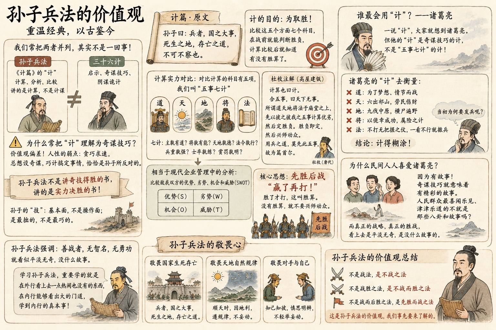
主讲人指出，读《孙子兵法》常因价值观偏差而误解首字“计”，将其与三十六计的奇谋巧计混为一谈。他强调，孙子的“计”是计算的计，即通过比较敌我双方的道、天、地、将、法五事七计来评估实力，而非设奇谋。他引用杜牧注解说明，先计算胜负再出兵，核心是“先胜后战”。他以诸葛亮为例，认为诸葛亮六出祁山、九伐中原是冒险侥幸，不符合孙子价值观，而民间喜爱诸葛亮是因为奇谋故事精彩。主讲人总结，孙子兵法是不战之法、不战而胜之法、先胜后战之法，强调平淡无奇中的真本事。
📖 全文解读 · 56句 · 4分3秒（点开看全文）
首先我们要说孙子兵法的价值观。我们读孙子兵法往往第一个字就读偏了，偏的很深刻，是价值观的偏差。这第一个字就是第一篇的篇名，记篇当中的记。我们常常把孙子兵法和三十六计并列，甚至并为一个系列，叫孙子兵法与三十六计。不过孙子兵法和三十六计不是一回事。三十六计的启示、奇谋技巧、阴谋诡计。孙子兵法当中的记语不是用计，不是奇谋技巧，而是计算的计，讲的是计算，不是讲计谋。为什么要把计理解为奇谋技巧？这就是价值观的问题。那是因为人性的弱点，是总是贪巧求速，总想设一个什么奇谋、巧计就能搞定某一个事情，这恰恰是孙子所反对的。孙子兵法不是讲的奇技得胜的书，讲的是实力决胜的书。孙子的技是基本面，不是操作面，是最拙的，不是最巧的。既是计算实力对比，对比计算的科目有五项，我们叫五士奇迹。五士是什么呢？道天地将法其技就是主孰有道，将孰有能？天地孰德，法令孰行，兵重孰强，士卒孰练，赏罚孰明。就是比较敌我双方的政治、天时、地利、人才和法治。所以孙子的记忆相当于我们现在企业管理讲的所谓分析，比较敌我双方的优势、劣势、机会和威胁。记的目的是什么呢？那当然是为了取胜了，比较这五个方面七个科目，在战前就能判断胜负，计算比较后就知道有没有胜算了。杜牧解释的说，计算也曰计算，合适，曰天下无事。所谓到天地将法于庙堂之上，先以彼之彼我之武士计算优劣，然后定胜负。胜负即定，然后兴师动众，用兵之道莫先此武士故为偏守尔。杜牧这个注解高屋见岭非常清楚明白，就是通过计算来定胜负，胜了才打，这叫胜算。没有胜算就不要兴师动众，这就是孙子兵法的核心思想，叫先胜后战，我们就把它称之为赢了再打。中国历史上谁会最会用计？一说计大家就会想到诸葛亮不过诸葛亮的计恰恰是奇谋技巧的计，不是五士奇计的计。孙子的五士奇计去衡量诸葛亮就不及不及格了。到天地将法他哪一条思我分析过魏国，但是他为了一个梦想，一个情节而去兴师动众，六处奇山，九伐中原，劳民伤财，横尸遍野。他要做的事儿是冒险，以侥幸才能成功的事儿。偏偏他又是天下第一谨慎的人，不打无把握之仗，一看不行就撤兵。那你当初为什么要发兵呢？吧？所以诸葛亮的计记得糊涂。那为什么在民间诸葛亮那么有名，人人喜爱呢？那是因为有故事。奇谋技巧那就意味着有精彩的故事。人民群众最喜闻乐见、津津乐道的不就是那些八卦和故事吗？而真正的战略，真正的胜战，看上去是平淡无奇，是没什么故事的。孙子兵法也强调了这一点，所谓叫善战者无志明无勇功，就看似平淡无奇没什么故事，也就是我们学习孙子兵法重要学的就是在外行看上去啊一点热闹也没有的东西。在内行能够看出大的门道，学到内行的真本事，孙子的敬畏性。孙子兵法不是战法，是不战之法。不是战胜之法，是不战而胜之法。不是战而后胜之法，是先胜而战之法。这是孙子兵法的价值观，我们事先要来了解的。
始计篇 · 第一
13/13 段打仗前先算账。把战争当国家头等大事，开战前用五个维度量化敌我，算赢了再打。
- 五事：道、天、地、将、法——衡量胜负的五个根本。
- 七计：从君主、将领、天地、法令、兵力、训练、赏罚七方面对比敌我。
- 诡道十二法：能而示之不能、利而诱之、乱而取之、强而避之……核心是制造信息差。
重大决策前先做一次「庙算」：把关键变量列出来各打个分，胜算不足就别下场。

主讲人解读《孙子兵法》首句，强调军事关乎国家生死存亡，需有敬畏心。他对比孙子和孔子，指出两者都重视敬畏心，但孙子将军事本质置于首位。主讲人提出《孙子兵法》核心是‘不战’，而非‘战’，通过先胜于庙堂实现不战而屈人之兵。他举例伍子胥与孙子对比，伍子胥有精彩故事，孙子却经历模糊，因孙子追求兵不血刃、未战先胜。最后，主讲人将‘死生之地，存亡之道’引申到个人和企业，指出每个决策都影响重大，需有敬畏心和责任心。
📖 全文解读 · 32句 · 2分24秒（点开看全文）
重温经典，以古鉴今。今天我们开始详细的解读孙子兵法。首先记篇第一原文，孙子曰，兵者，国之大事，死身之地，存亡之道，不可不察也。意思就是孙子说军士是国家的大事，生死存亡息于此，不可轻举妄动，一定要仔细省察。孙子和孔子都把敬畏心提到了首要的高度，儒家的中庸之道要求随时要警醒醒察自己，还有自己什么不知道的地方，没有注意到的地方。孙子则把军事关系国家生死存亡的本质提到兵法之首。孙子兵法讲究的是不战而不是战，把孙子所说的那些都做到了就没有战了，那就不战而屈人之兵的意思。所以与其说孙子兵法研究的是什么战法，还不如说他研究的是不战之法。所以你看孙子和伍子胥两人其实同朝为将，但是伍子胥留下很多精彩的故事，而孙子的经历却很模糊，孙子兵法当中有一句话是这么说的，善战者，无志明无勇功胜于义胜也。所以孙子的胜是先胜于庙堂，而不是夺胜于战场。从出发点上来说，他就不是希望打那些可歌可泣的战斗故事，他追求的是兵不血刃，未战先胜，不战而胜的一些方法。死身之地，存亡之道的敬卫星，难道仅仅对于那些手握重兵的军事家有警示意义吗？那也不一定，对于我们每个人其实都有意义。比如说企业的经营活动，可以说一举一动，都是笔下有财产万千，笔下有人命关天，笔下有是非曲指，笔下有毁于中间。你一个举措下去，短期可能看不出什么影响，但是只要你错了，他终归会反映出来来惩罚你。如果你对了，终归他会反映出来来奖赏你。如果我们每一个人都有一份敬畏心，有一份责任心，认识到自己的一举一动都有可能对自己、对家庭、公司、客护他人、社会都是死生之地、存亡之道，那就可以挽回多少财产和生命安全的。所以这一句话，孙子曰，兵者，国之大事，死身之地，存亡之道，不可不察。也就是希望每一个人都有敬畏心和责任心。
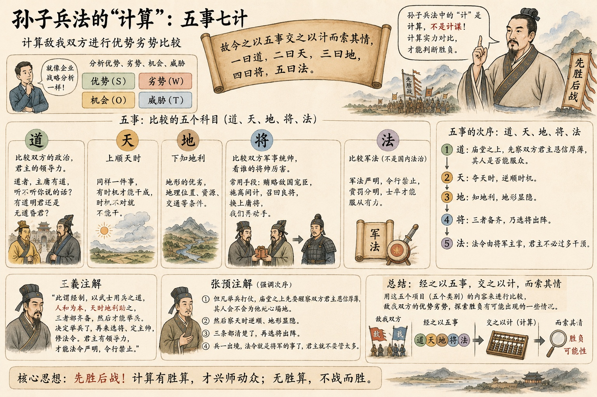
主讲人解读《孙子兵法》'五事'（道、天、地、将、法）的次序和内涵。他举了企业SWOT分析类比，说明'计'是敌我优势比较。强调'道'是政治和君主领导力，'天'是天时，'地'是地利，'将'是将帅能力，并举例战争中用间谍贿赂敌国宠臣、离间换将。'法'指军法而非国内法治。引用王皙和张预注解，强调次序不可变：先人和、天时、地利，再选将、修法，君主在出兵后不应过多干预。
📖 全文解读 · 32句 · 2分28秒（点开看全文）
原文，故今之以五士交之以济而所其情，一曰道，二曰天，三曰地，四曰降，五曰法。前面所说到孙子兵法当中的计是计算敌我双方进行劣势优势比较，就像我们企业战略用所谓分析一样，分析优势、劣势、机会、威胁。比较哪些科目呢？在兵法当中科目有五个，道，天地将法道士恩性使明。你的人名听不听你说的话？你的君主是有道明君还是无道昏君？所以道是比较双方的政治，比较双方君主的领导力的。天是上顺天时，地是下知地利。同样一件事有时机才能干成，时机不对就不能干。将是伟任贤能比较了政治，君主天时地利，再来去比较双方军事统帅，看谁的将帅厉害。所以战争当中常常我们要做的一件事就是派间谍去贿赂敌国的宠臣，然后使利奸计让他去国军那说坏话，把能打仗的那位将军给召回，换一个笨蛋来，我们再来开始动手打仗。最后是法，这个法不是指国内的法治，是军法。国内的法治属于道在最前面。王羲注解，王羲就是我们昨天所说的11位注解孙子兵法，并且青史留名的其中一位。王羲柱解说，这就是精制，以武士用兵之道，人和为本，天时地利助之啊。人和、天时地利三者都齐备，然后才能举兵。然后决定举兵了再来选将，选谁做主帅，主帅定了，然后修法。他有领导力，就能法令严明，令行禁止，所以道天地将法是这个次序不能改变。张裕说，也特地强调了这个次序。他把将和法放在五士之末，是因为但凡举兵打仗，庙堂之上先要醒察双方君主恩信厚薄，他的人会不会为他死心塌地，然后夺天时逆顺地形的显意，三条都行，他清楚了，再败将出阵兵一出境，法令就是将军的事儿了，君主就不要管太多。所以是这个次序，经之以武士，交之以计，而所其情。意思就是中用这五个项目，五个类别的内容来进行比较，敌我双方的优势来探索胜负有可能出现的一些情况。
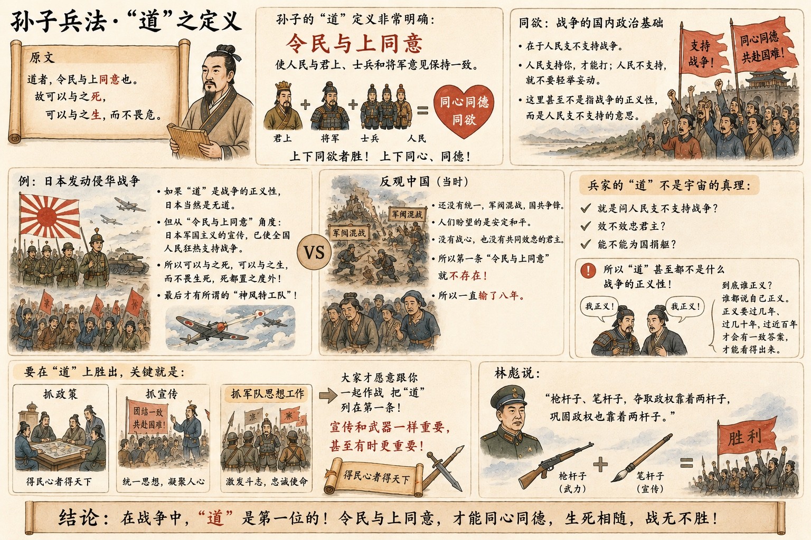
主讲人解释孙子对道的定义是‘令民与上同意’，即人民与君主意见一致，强调上下同欲者胜。他举例日本侵华时，军国主义宣传让全民狂热支持战争，形成神风特攻队；而当时中国未统一，人民渴望和平，缺乏战心，导致连败八年。他指出兵家的道不是宇宙真理或战争正义性，而是问人民是否支持战争、效忠君主。正义需时间检验，因此要在道上胜出，需抓政策、宣传和思想工作。最后引用林彪‘枪杆子笔杆子’的比喻，说明宣传与武器同等重要。
📖 全文解读 · 28句 · 2分1秒（点开看全文）
原文，道者，令名与上同意也。故可以与之死，可以与之身，而不畏危。孙子的道定义非常明确，叫令民与上同意，还让人民与君上士兵和将军意见保持一致，就是我们所常说的上下同欲者胜，上下同心、同德。同欲是战争的国内政治基础，在于人民支不支持战争。人民支持你，那么你才能打，人民不支持你就不要轻举妄动。所以这里甚至不是指的战争的正义性，他说的就是人民支不支持的意思。比如说日本发动侵华战争，如果道是战争的正义性，那么日本当然是无道。但是如果从名誉上同意这个角度来去理解，说日本军国主义的宣传已经让日本全国人民都狂热的支持战争，所以才有可以与之死，可以与之身而不畏畏生死死都置之度外了，所以最后才有那个所谓的神风特工队。反观中国，当时的中国还没有统一，军阀混战，国共真锋，人们盼望的是安定和平，没有什么战心，也没有共同效忠的那个君主，所以第一条令名誉商同意就不存在，所以一直数输了八年。兵家的道不是宇宙的真理，就是问人民支不支持战争，效不效忠君主，能不能为国捐躯？所以道甚至都不是什么战争的正义性。到底谁正义？谁都说自己正义。正义是要过几年、过十几年、过几十年、过近百年才会有一致的答案才能看得出来。所以要在道上胜出，关键就是抓政策、抓宣传、抓军队的思想工作，大家才愿意跟你一起作战，把倒列在第一条，也就清楚的能够明白，在战争当中宣传和武器一样重要，甚至有的时候更重要。林彪说，枪杆子比杆子，夺取政权靠着两杆子，巩固政权也靠着两杆子，就是这个道理。
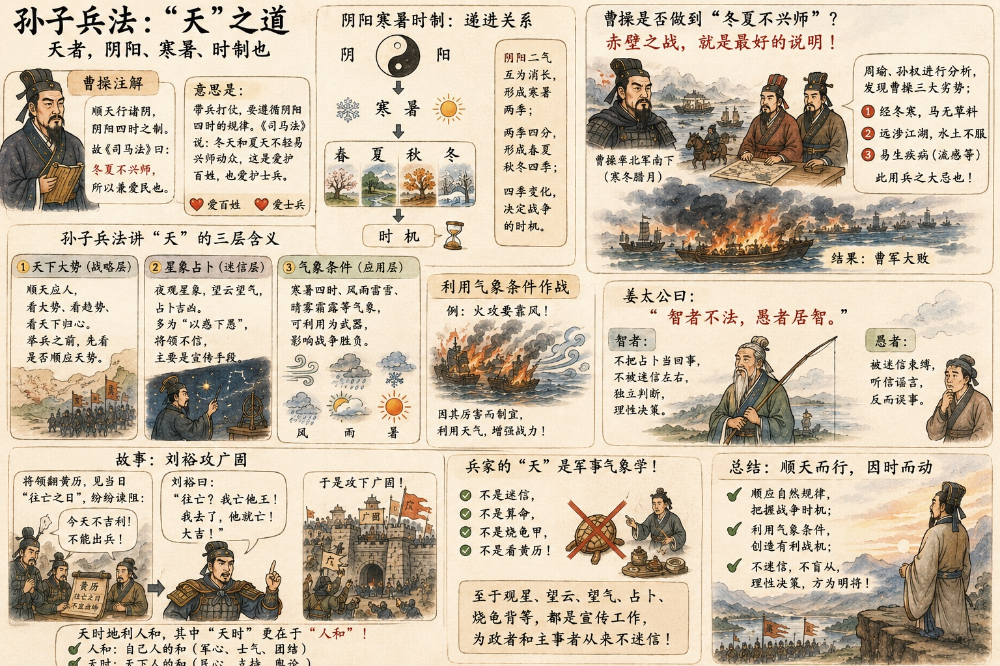
主讲人解读《孙子兵法》中“天者，阴阳寒暑时制也”，引用曹操注和司马法“冬夏不兴师”说明顺天应时、爱民爱兵。但指出曹操本人未做到，以赤壁之战为例，周瑜分析曹操劣势包括寒冬马无草、北方士兵水土不服易生病。主讲人提出“天”有三层含义：一是天下大势、顺天应人；二是夜观星象等占卜之术，但实为“以惑下愚”，将领自己不信；三是寒暑四时天气预报，利用气象条件作战，如火攻靠风。引用姜太公“智者不法，愚者居拘”，并举刘裕在“网王之日”攻广固的例子，说明智者不受迷信束缚。最后总结天时主要指人和与天下人之和，兵家的天是军事气象学，观星占卜只是宣传工作。
📖 全文解读 · 42句 · 3分21秒（点开看全文）
原文，天者，阴阳寒暑实至也。曹操注解说，顺天行诸阴，阴阳四时止治。故司马法曰，冬夏不兴师，所以兼爱民也。意思就是你带兵打仗，要遵循阴阳四时的规律，就好像是司马兵法所说的，就冬夏不兴师。所以你这是爱老百姓和爱你的士兵的意思。那曹操自己写注解，其实比原来的注解要更复杂一些。那曹操本人有没有做到他自己所说的那个阴阳寒暑时至冬夏不兴湿呢？其实并没有有一场最简单的战役就是赤壁之战，就可以说明这个道理。当时周瑜和孙权在进行这个计算，曹操来打仗的时候，所有特分析当中就分析到了曹操的劣势，说经胜寒马，无搞草屈，中国势众，远射江湖必水土，必生疾病，此用兵之计也。意思就是在寒冬腊月，马是没有草料吃的。你曹操带着北方的士兵远射江湖，跑到这个江南地区和我打仗，水土不服，而且你还容易患流感，这就是用兵的大忌。阴阳寒暑实质是一个递进关系，天有阴阳二气，阴阳二气互为消长，形成寒暑两季，两季四分，形成春夏秋冬四季，这就是实质兵法。讲天应该有三层含义。第一讲的天下大事，顺天应人。第二就是所谓的夜观星象，望云望气，占卜之术。第三就是寒暑4时天气预报，是不是利用气象条件来进行打仗。第一层是讲的大形势大战略，其实举兵之前就已经定了是否顺应天势。第三层讲的是什么疾风、打寒也盛夏、炎热，是因其厉害而质宜，利用气象条件作为武器来进行打仗。比如说火攻你要靠风，这就是要靠天的。第二层其实说的最多就是那些所谓的夜观星象，但其实都是说给别人听的，起到一个作用叫以惑下鱼，自己是从来不信的，带兵打仗的将领是不会相信这些东西的。比如说姜太公所说的这句话，叫智者不法，愚者居智。就有智慧的人其实不会把他当回事，不会去让他变成一个什么重要的东西，去影响自己的战略判断。但是愚昧的人，没有那么智慧的人，其实反而会被他约束。就比如说举个例子，叫刘裕去围慕容超，在广固地区要打仗，马上要攻城了。刘裕手底下的一些将领们翻黄历一看，当天叫网王之日就去了，之后可能回不来。这个网王两个字说不急，纷纷去觐谏，给刘裕说不行了，这个不能打的。刘裕说王王就是我亡他王，就是我去了之后，他就啊嚯他就没了，所以大吉去得，于是攻下广固。所以中国人所说的叫天时地利人和。天时里面主要也是人和，人和说的是自己人的和，天时说的是天下人的和兵家的天是指军事气象学。至于观心、望云、望气、占卜、烧乌龟背，那是宣传工作。为政者和主事者从来都不需要迷信，也从来不会迷信。
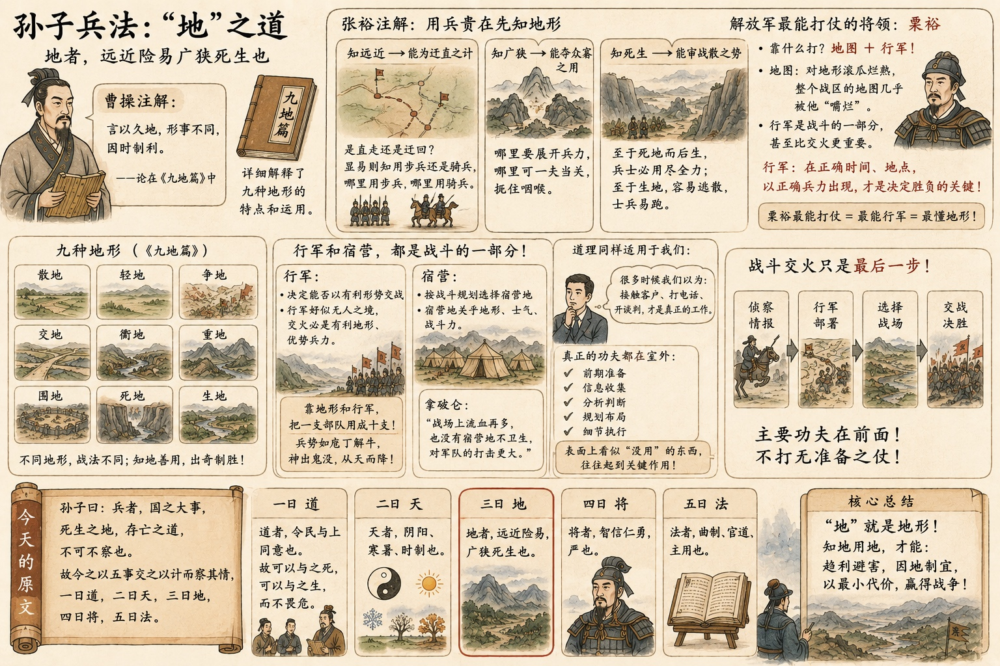
主讲人解读《孙子兵法》中‘地者，远近险易广狭死生也’一句，引用曹操和张预的注解，强调地形对用兵的重要性。他举粟裕为例，说明粟裕靠熟读地图和擅长行军成为名将，认为行军是战斗的一部分，甚至比交火更重要，因为交火时胜负已定。他还提到宿营也需按战斗规划选择，引用拿破仑的话说明宿营地卫生影响军队战斗力。最后类比到日常工作，指出真正的功夫在‘室外’，如提升通话技巧前需先做好准备工作。
📖 全文解读 · 48句 · 3分31秒（点开看全文）
原文，帝者，远近险易广狭死生也。曹操注解说，言以久地，形事不同，因时制利论在九地篇中，而孙子兵法当中有一个九地篇，详细解释了九种地形的特点和运用。在这个地方说的很简略。张裕注解的说，这凡用兵贵，先知地形，知远近，能为迂直之计。是直走还是迂回，你知道显义才能去看你是否使用步兵还是骑兵，哪里用步兵，哪里用骑兵。知广辖则能夺众寡之用，哪里要展开展开兵力，哪里可以一斧当关去扼住咽喉。知死身则能食战散之势。至于死地而后生，那兵士会必用尽全力去打仗。至于深地，那就容易逃散，也就是打完之后他可以跑的地方，那士兵就很容易跑了。解放军的将领最能打仗的是谁呢？叫粟裕。林彪也很佩服他说他打仗就像是神仙打仗一样，总是天兵神将，他靠什么打呢？其实粟裕打仗靠的是地图和行军，就这两样。地图是对地形滚瓜烂熟。他打仗之前整个战区的地图几乎他都被他嚼烂了。他非常清楚知道哪里有沟、哪里有壑、哪里有山、哪里有脚。行军打仗关键靠的就是行军，行军是战斗的一部分，甚至有的时候比交火打仗还要更重要。很多人认为交火了，开炮了才是打起来了。实际上开炮的时候胜负就已经定了。行军在正确的地点，正确的时间出现了正确的兵力，这才是决定胜负的关键。这就是运动战。说术裕最能打仗，其实就是说他最能行军。说他最能行军是他在地形上下的功夫比谁都要胜，都要透。像一个淮海战役，他的部队在整个战区当中穿来插去，行军好似无人之境。交火必是有利地形优势兵力。靠地形和行军，他能把一支部队用成十支部队，他的战刀才能像庖丁解牛一样，他的军队才能游刃有余，神出鬼没，从天而降。不仅强调行军是战斗的一部分，宿营也是战斗的一部分，要按照战斗的规划来选择宿营地。宿营地既是战斗地形的问题，也是士气的问题战斗力的问题。拿破仑说，战场上流血再多，也没有宿营地不卫生，对军队的打击更大。所以由此可见，战斗交火开打只是最后一步，主要的功夫全部都在室外。难道我们的工作不是这样吗？我们很多时候在日常工作当中，觉得接触了客户，拿起了电话才是真正的工作，提升了所谓的通话技巧，才是提升真正的工作能力。但是真正的功夫其实都在室外，表面上看一些没有用的东西，实际上会起到关键的作用。今天的原文，孙子曰，兵者，国之大事，死身之地，存亡之道，不可不察也。故今之以五士交之以计而所其情，一曰道，二曰天，三曰地，四曰降，五曰法。道者，领民与上同意也。故可以与之死，可以与之身，而不畏威。天者，阴阳寒暑实至也。地者，远近狭义广狭死身也。
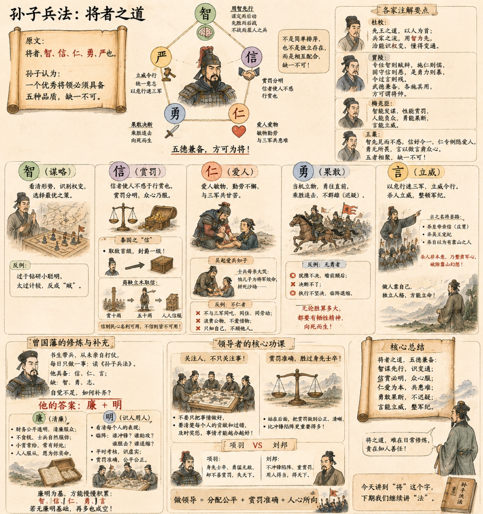
主讲人解读《孙子兵法》中“将者，智、信、仁、勇、严也”的排序，强调智为首、勇居四，并引用杜牧、贾林等注解说明五德需兼备，缺一不可。举例秦灭六国靠“信”的赏罚分明（首级制度）、商鞅立木取信；西点军校领导力要求“心里装着对方利益并让对方知道”。讲“仁”时举吴起为士兵吸脓的故事；“勇”指决断与执行；“严”需立威，如孙子杀吴王宠妃。最后以曾国藩为例，他自认缺智勇，故加“廉明”二字，强调领导者要财务清廉、赏罚公平，并对比项羽与刘邦，指出论功行赏比身先士卒更重要。
📖 全文解读 · 154句 · 11分23秒（点开看全文）
重温经典，以古鉴今。今天继续来讲孙子兵法，原文只有一句，将者，志性仁，勇言也。这是孙子对于将的人格排序，他把志放在了第一位，而勇则屈居第四。孙子是强调智将而非勇将的，因为在孙子的价值观当中，先胜而后战是不战而屈人治兵。首先他强调用智用智慧，人们常说叫智勇双全。孙子在智和勇之间加入了性和仁，这该怎么解释呢？我们首先要来讲智，杜牧注解的时候说，先王之道，以人为首，兵家之流，用治为先，治能识权变，懂得变通。也就是说当君主的要以仁爱作为他的首要实政纲领，而带兵打仗的人要用智慧作为首先他要掌握的一项技能。但是智性人永言不是简单的排序，更不是独立的存在，它必须武德兼备。所谓的武德兼备，就是五个都要有。贾玲在注解当中说，专任治则贼辨，施仁则懦，固守信则愚，是勇利则暴令，过言则惭。武者兼备，各施其用，方可谓将帅。意思就是如果这个人太过于聪明，去钻研那些小聪明，就会让这个人变得很贼。这个贼不是盗贼的贼，还是这个人太过于计较，太过于小气，太过于去钻研很多东西，辨施仁则懦。如果你对别人太过仁慈，就会显得自己很懦弱。固守信则于就是如果你太过于坚守，坚信某一种东西不去变通，会显得你很愚昧，是勇力则暴。如果太过于强调那个武力，就会显得很暴躁，然给别人的感觉就是很霸道，令过言则残。如果你的军令法令太过于严苛，你的团队就留不住武者兼然被各施己用，适当的去用这五个技能，才能成为带兵打仗的人。梅妖臣说智能发谋，性能赏罚，人能负众，勇能果断，言能立威。王羲注解的是，智者，先见而不惑，能谋虑通权变也。幸者，好令一也。仁者，专辅恻隐，得人兴也。勇者，雄亦不惧，能果义也。言者，以微言肃众心也。五者相聚，缺一不可。这是各家对于智性人用言的注解。所以败兵打仗的人，做leader是非常需要这五点共同具备的，缺一不可。那什么是性呢？杜牧注解的很准确，叫信者使人不惑于行赏也。性就是赏罚分明，每个人都非常清楚犯什么错该受什么罚，立什么功该该受什么奖。秦灭六国靠的就是个性字，这个姓不是对六国之性，而是对于秦人，对于秦君之性，就是完全以君功来封爵位。什么叫取人守级？就是取敌以首深爵一级首级。首级的意思不是纯粹指投入，是秦军制定的一个规则。就是你只要砍对方一个脑袋，你的爵位就上升一级，所以叫首级。从词语上把赏罚标准植入了一个人头，不叫人头，叫一级爵位。你想这个时候秦国的士兵谁会不奋勇前进呢？商鞅变法就是立性开始所谓的立木取信。在都城的南门竖一个木头，然后张贴一个告示，谁把这个木头背到北门就赏十两金子，没有人信。提到50两，那有人就会试一试，果真得到了五十两黄金。从此之后，政府说啥人民都会信信则民心名利可用，不信则民心名利皆不可用，所以要赏罚分明。说到要做到信有赏罚分明之性，也有默契之性。因为很多时候，你不是最高统帅，你也不是国君，不掌握赏罚的全部权利。但是你也是一级领导，你也是leader，要带兵打仗。在这种情况下，西点军校有一条对于领导力的要求，就是心里装着对方的利益，并且你有能力让对方清楚这一点。所以性不仅仅是一种机制，更是一种人格力量。首先你心里要装着对方，这一点是本质，心里没有装着，你就没有办法让别人真的信你。其次你要有能力让对方知道，你别你装着他他不知道，那他跑了，这就得不偿失了。第三讲仁，杜牧注解说，仁者，爱人敏物之勤劳也。爱人敏悟四个字是本质，就要爱人，还要敏悟。爱惜公墓也是人，用什么东西不爱惜吃饭，不，爱惜有些浪费，那也是不仁。你加班到最后一个离开办公室，你不关电脑，不关空调，甚至你不关灯，这都是不仁。人还要勤劳。申包旭注解说，不仁则不能与三军共积劳之殃。就领导者不能和大家同吃、同住、同劳动，这也是不仁的表现。人就是爱兵如子，吴起有一个著名的故事，作为一个士兵，脚上长了一个疮，然后化脓了。吴起埋下头就用嘴去给他吸。士兵的母亲听后大哭，有人就问将军对你的儿子那么好，你哭什么？母亲就说，当初我丈夫就是脚上长了一个疮，吴将军用嘴给她吸的脓，然后他就感动，然后上阵杀敌，就拼死战死沙场，现在我的儿子肯定也是不要命了。勇杜牧的注解叫勇者，乘胜追击，不群雄也。勇就是决谋何战，当机立断，勇往直前。群雄的意思就是迟疑。兵家说某人好谋无断，就是说老是在谋划，就是决断不了。为什么？那是因为谋与勇在实际工作当中其实也常见，我们说每个人有些人定不了事儿，其实就是说他瞻前顾后，迟疑不决，跟着他的人都很着急，这就是没有勇的表现。没有勇一是决断不了，二是好不容易决定了，执行又不坚决，老是想缩回来，最后真把自己给缩没了。所以无论做什么事儿都要有牺牲精神，向死而生。虽然我们的利益是先胜而后战，但是世界上没有百分之百必胜的事儿，没有勇就做不成事。言杜牧的注解叫言者，以危行速三军也。这就是为什么从古至今，名将一出兵就是老小茬，他叫杀人立威。最好是杀谁呢？杀皇帝的亲信，杀那些自以为有靠山的人，孙子就杀吴王的宠妃，司马良驹就杀皇上的亲信，叫庄贾，这个都是个套路，每次出兵总要有人被杀的，因为这些人不读书嘛，但总以为找到了靠山，认为自己有靠山的人在变革整顿或者打仗出师的时候，最容易被拉出来祭旗。因为诊术这种万众瞩目、地位显赫，对国家又没有实际价值的人，既能力威，又对国家没有什么实际损失。所以做人千万不要靠什么靠山，你靠什么都行，就别靠靠山。你的靠山跟别的山稍微碰一下，你就粉身碎骨了。你以为你是山的一部分，但是一阵风就把你刮下山崖，你只是山上的一个灰或者是一颗草而已。如果靠山倒了，那更可怕，靠在山上的所有人都会被活埋。所以君子行忠道，靠自己的独立人格、独任独立的价值来去安身立明，遵纪守法知旨找靠山是小人之性，也只能有小人之命。智性人永言说来很容易，但是做起来很难，怎么办呢？曾国藩是一个很有名的人，他是书生带兵，他从来没有自己去打过仗，但是他带了自己的湘军，每天他只看一做一件事，就是看孙子兵法。他志信任永言，他对照自己从来没有打过仗，哪有什么智信仁还谋勉强能凑合凑合勇，自己倒也不贪生怕死，但是文若书生手缚鸡之力，再勇也猛不起来，以言他做到了。他认为天下大乱是积了几十年该杀未杀之人，杀人如麻，仁义行天下，杀他们就是对人民最大的仁义。最后他得了一个名字叫曾剃头，专门杀人。那么智和勇该怎么补呢？你看曾国藩他有姓，他有仁，他有言，可是没有志，也没有勇，他该怎么补充自己呢？怎么看自己都差的很远？跟真正带兵打仗的那些将领和将帅手下都是一些农民将领更不行。他最后总结出两个字叫廉和民。孙子的将道是智姓仁，用仁永言。曾国藩加了廉名二字，他说士兵对于将领是否足谋多智，能沾善战没有什么具体的要求。但是人人都盯着自己的利益，对将官在赢钱上是否干净，在军饷上是不是干净，对于下属保举提拔是否公平，就会十分在意。你不贪钱，他就服你。所以廉就是财务账目公开透明，清廉服众。腐败的军队打不了仗啊，自己清正廉明，对下属的一些小款小赏有常常放宽，让大家时常得点好处等，人人就会服你，就会跟着你。明是什么呢？明就是把下属的表现一一看明白，临阵之际谁冲锋陷阵谁在，随后助攻是谁，拼死狙击又是谁，看到困难先跑了，全部看清楚记明白。在平时每个人办事的时候，情堕虚实，也逐字的去进行考核，这样蒋臣就能及时并且准确恰当作为将领是否身先士卒倒是其次。因为你往往都是在后面指挥，你不是自己在前面冲杀。中国人特别喜欢兄弟们跟我冲，拿把刀。但是大部分的西方将领或者是古代将领，真正打仗的时候很都是就稳坐中弓，他都是在中间被保护起来的。最重要的其实甚至也不是什么计谋高超，只会弱定，而是分配公平，谁有什么功劳你最清楚，都能准确衡量赏罚，那个个就会放心，人人就会奋勇，都会给你卖命，因为他知道卖了命会获得什么。所以做leader做领导，不要只关注事儿，还要关注人，不要把事情办好了就万事大吉了。要对在办这件事情的过程当中，你的手下每一个人发挥了什么样的作用都要非常清楚，并且做出奖惩，你的事儿才能越办越好。项羽倒是冲锋陷阵，身先士卒了，那刘邦就只管论功行赏，论过处罚，你看谁夺了天下。作为领导者来说，站在后面，把每一个人的功劳过错看得分明，并且赏罚准确，比身先士卒要重要的多得多。曾国藩说，以联名二字为基础，智信人永言，可以慢慢积累而得。如果你没有怜悯的基础，自己不能服众，赏罚又不准确，那智信任永言也是空的。今天就和大家来讲降一个字，我们下期再见。
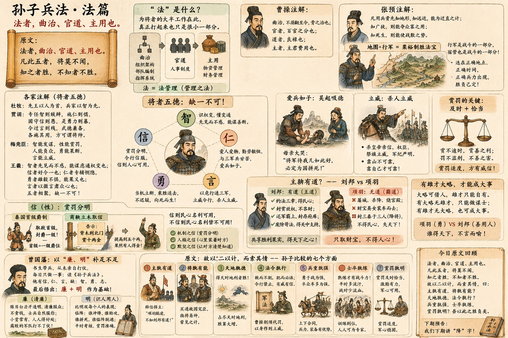
主讲人解释《孙子兵法》中“法者，曲制、官道、主用”的含义，指出管理是将军大半工作，并类比现代企业管理中的组织架构和变革。他引用曹操注解，说明曲制是编制，官道是人事，主用是财务。接着，主讲人重点解读“主孰有道”，用刘邦和项羽的对比为例：刘邦对民众约法三章、对部下舍得封赏，而项羽屠城、杀降、吝啬封赏，导致失去民心。他还提到商汤葬尸、网开三面的故事，说明“有道”是软实力。最后，主讲人强调“赏罚孰明”的关键在于及时和适度，引用司马法和曹操注。
📖 全文解读 · 169句 · 12分1秒（点开看全文）
重温经典，一古千金。大家好，我们今天继续为大家读孙子兵法，原文是法者趋治，官道主用。也就是为将者的大部分的工作是制定军法道天地将法五件事法被排在了末位，一般人都不太重视，简单以军法严明来去看待它。事实上这条技术含量太高了，为将者的大半工作都在那，真正打起来可能也就是那么一回事儿。曹操注解说，趋治，不屈翻至今，骨之治也，官者百官之分也，道者良禄也，主者主君费用也。也就是区制是组织架构、部队编制、指挥系统，官道是人事制度，主用是什么呢？物资管理和财务管理法是法管理，也就是管理之法。现在把这个企业当中，把管理作为了一个专业词汇。而现代管理学其实就是脱胎于军队的管理。一个组织架构技术含量就已经很高了，比如现在搞一个企业，公司大了管理就会跟不上，就会崩溃。业务发展的快了，组织架构就经常整不明白，到处就是各种莫名其妙的编制。每隔一段时间就要搞一次组织变革，搞成功了活力迸发，搞不成功那公司就会趴下。你看今天我们国家有很多改革领导小组，其实也都是这种方式。金融领导小组、经济什么领导小组，就是区制官道主用都有变化，用跨部门的组织协调机制来去推动组织的变革。我们常说一个英雄应该有雄才大略张学良，东北少帅曾经评价他的父亲张作霖和蒋介石当时的国家领袖。他说他的父亲是一个有雄才无大略的人，而蒋公是一个有大略无雄才的人。说张作霖和一代雄才，但是没有政治高度，蒋介石有政治纲领，但是才干也会弱一些。人文凡此无者将莫不闻，知之者胜，不知者不慎。道天地是大略，降和法则是雄才。能组织动员驾驭、推动这个组织的变革。我们看成功的企业家都是有雄才大略，并且雄才大略都兼备的人，而雄才明显又比大略更重要。因为大略可以问别人，你可以请顾问，而雄才只能在自己身上。因为只有雄才，没有大略，也可以成为大企业家。如果你只有大略而没有雄才，在古代只能做个幕僚，做个谋士，今天可能也就适合做一家咨询公司。历代开国者都是雄才君主和大略谋士的黄巾大盗，比如说刘备和诸葛亮，朱元璋和刘伯温，刘邦和萧何。原文故交之以继，而所其情。对以上五件事，道天地将法进行比较，有七个方面。第一是主孰有道，哪一方面的君主更有道主孰有道前面就是说的意思就是什么呢？令民与上同意，也要上下同欲，这就共享胜利果实。对于民众政策得当，对部下舍得封赏。历代的注家就注解孙子兵法的人都拿韩信在刘邦和项羽之间做出了选择来作为这一条的注解，叫著孰有道。他故事是这样的，刘邦问韩信，你怎么不跟项羽而跟我呢？韩信说项羽对人民很残酷，对部下不舍的封赏。大印刻好了，那个将军印在手上摸来摸去，连边角都磨圆了，还不舍得拿出去，恨不得再把它收起来。你看刘邦主公，您就不是这样，您对民众约法三章，对手下封赏放权，刘邦舍得花钱是没得说的。他闹革命其实天下也是别人的，他怎么开支票都是别人出钱吗？不过刘邦对于自己已经到手的钱也不含糊，陈平帮他干了很多脏活，去收买敌方的将领。刘邦向来是随便花钱没有预算，最后取得胜利也是一样。宣布政策的时候说获得项羽守己者封万户侯。项羽自刎乌江的时候，看见包围他的人当中，有一个原来是他的部下，后来改投了刘邦，这个人叫吕马童。他跟他说，吕马童，你是我的老朋友了，我的人头就送给你了。说完抹了脖子，驴马同旁边人可不听他的，上去就抢尸，最后有五个人，一个人割了一块，到了刘邦那儿开始争功。刘邦根本不问到底是谁是谁，是谁割的他的头颅，五个人共同封万户侯，那这件事就结了。刘邦的道士对手下激励机制上非常有道，对于民众政治上有道，在政治上他更是甩开这个项羽几条街，刘邦最先攻下秦国，他财宝也不拿。这些美女宫里的一些宫女也不去灵性，没有住秦国的宫殿，而是封存府库，还军霸上，就把这个军队撤到宫城外，给秦地人民约法三章法令，就三条叫杀人者死，伤人者刑，即到底罪，其他秦国的严刑峻法一概废除。所以秦帝的人民非常爱戴他，到最后楚汉相争的岁月当中，他始终得到了关中大后方的全力支持。项羽相比之下，他赶走刘邦之后，还引兵屠城，屠咸阳城之前投降他的秦王子婴，刘邦没杀，那项羽反而把他杀了。财宝美女装车运走，还一把火烧了秦国的攻事阿房宫，大火烧了三个月才熄灭，那个地方已经平定了。那你还杀他干嘛？就是为了抢人家的子女，美女、金箔这些东西。所以项羽一开始就不懂得怎么要天下，他就是要财宝，要美女就行了。项羽抢了秦国的财宝美女，把秦国一封为三封，带了三个人在秦国称王。这就是今天我们还说陕西是三秦大地的由来。他封了哪三个人呢？就是投降他的秦将叫张张邯、司马欣和董锡。这三个人有什么事迹呢？就他们带了20万秦军去投降项羽和项羽把这20万秦军全部活埋，只留了这三个人。所以秦国对于这三个出卖了20万家乡子弟，自己取得荣华富贵的家伙是恨之入骨的那项羽把这样的人封在秦国，你想他怎么可能带领秦国的军民去挡住刘邦呢？所以在主蜀有道这一条上，项羽就已经远远的输给了刘邦。历史再往上，我们再看第一个非常有道德，能够令名宇上同意的人叫商汤。他盖了一个房子，挖到了一具无名的尸骨，他庄重的把他理葬了。天下人都知道了，纷纷传说说商汤对于死人都那么尊重，更何况是对于活人。他看见农民捕鸟四面为王，就下令，你只能唯一面，不要赶尽杀绝，要留三面生路给别人。天下人又开始传说商汤对于动物那么好，那何况对于人？这样当他开始真正征伐的时候，去伐东边的这些小的部落，西边的部落就有意见了。你怎么不打来打我们？当商汤去打西边的部落的时候，东边的人就有意见了，你们怎么不来打我？人人都盼着他来统治这些部落。所以有道就是软实力，刘邦有软实力，项羽全是硬实力。有道就是儒家的王道，是巨大的号召力。孔子孟子讲王道和霸道的区别，说霸道需要大国，需要地盘实力，地方千里甲兵10万，有多大的实力你就霸多大的地盘。而王道则不需要，小国也可以行王道，你得天下汤以70里，文王以百里，都是诸侯小国。那诸侯小国行王道而得天下归兴。孟子之言对于我们事业小的人也很有启示，王道不是王者之道，而是如何成为王者之道。主所有道要问一个问题了，你有没有你的老板有没有呢？原文曰，主孰有道，将孰有能？天地孰德，法令孰行？兵重孰强，士卒孰劣，赏罚孰名？吾以此之胜负矣。意思就是将属有能，逐熟有道。我们刚刚讲过了，将孰有能就是比较双方军事将领的本事，所以打仗经常有这种情况，知道对方打将很厉害，那个那个统帅就坚决不打，不打不出战，就是挂冕战牌。然后派间谍去买通对方的宠臣李间他们的君臣关系，然后再把这个将军给调走，再换个笨蛋来，然后一战而胜，这是古代打仗经常出现的情况。天地孰德就看谁得天时地利。就像俄罗斯去吞并克里米亚一样，打乌克兰一样，俄罗斯占尽天时地利，美国、欧盟你只能干瞪眼，离人家太远了，你没法打。法令书刑，曹操注解叫赦而不犯，犯而必诛，也就是赦了法令就不会有人犯法，那如果你犯法就一定要诛杀。所以他留下了一个麦田割须的故事，麦田割须就是在行军路上，这个曹操军队行军路上正好是麦子熟的时候，他下令如果你踩坏了麦田就要被斩首。结果他自己的马受惊了，冲到了麦田里面去了，那不能把自己给斩了，他是一股统帅，于是他就拔剑把自己的胡子割了，以须带头。在以前这个身体发肤受之父母不可毁伤，这是很重要的一件事。所以把胡子割了，代替自己的砍头这个罪过。法令就是法律条款，令就是行政命令。梅瑶臣注解的是叫其重以法以重，以令兵重孰详？就是杜牧注解的叫上下合同。勇于战为强，卒众车多为强。张裕住的是车间。马良士勇兵力闻鼓而喜，闻惊而怒，听到鼓声擂鼓冲杀就很高兴，听到鸣金收兵就很气愤。赤卒孰练这一条和兵重孰将分开讲很有意义。人的可塑性很强，正常人经过训练都能从事专业的工作。如果你一辈子只干一件事儿，你就能成为世界级的专家。如只要这个训练好，每个人都能成为世界级的专家。要有这个意识，平时多流汗，战时少流血，这是我们经常讲的一句话。所谓的特种部队，特种部队也不是超人，而是训练他投入巨大的资源给他们来进行训练，要去哪执行任务，能找一个地方把任务执行的这个规模模拟出来，然后提前几个月反复的演练各种情况，然后再去完成这个任务。熟练，干什么事都得靠练练成熟手就可以赏罚赎名。赏罚是一个大学问，可以说赏罚决定的战斗力。赏罚的关键主要靠两条，一条叫及时，一条叫恰当。司马法说，赏不逾时，欲民宿德，为善之利也。罚不牵利，欲民肃笃，为不善之害也。意思就是赏罚要及时，做好的事儿，这些利益让他马上得当，做坏事的惩罚要让大家马上看到，如果不能及时，效果就会大打折扣。注解说，赏无度则废而不恩，罚无度则入而无威。意思就是赏罚要适度，如果你赏罚无度的话，大家拿了你的钱还不感激你。如果你滥伐无度，人人都恨你，你也没有了威信。这就是今天和大家来说的孙子为上当中祭篇当中的几句话。今日原文是什么呢？我们再回顾一下。法者趋治观道主用也。凡此吾者降莫不闻，知之者慎，不知者不慎。故教之以济而所其情。曰，主孰有道，将孰有能？天地孰德，法令孰行？兵重孰强？恃卒孰练，赏罚孰名？吾以此之胜负矣。我们下期再见。
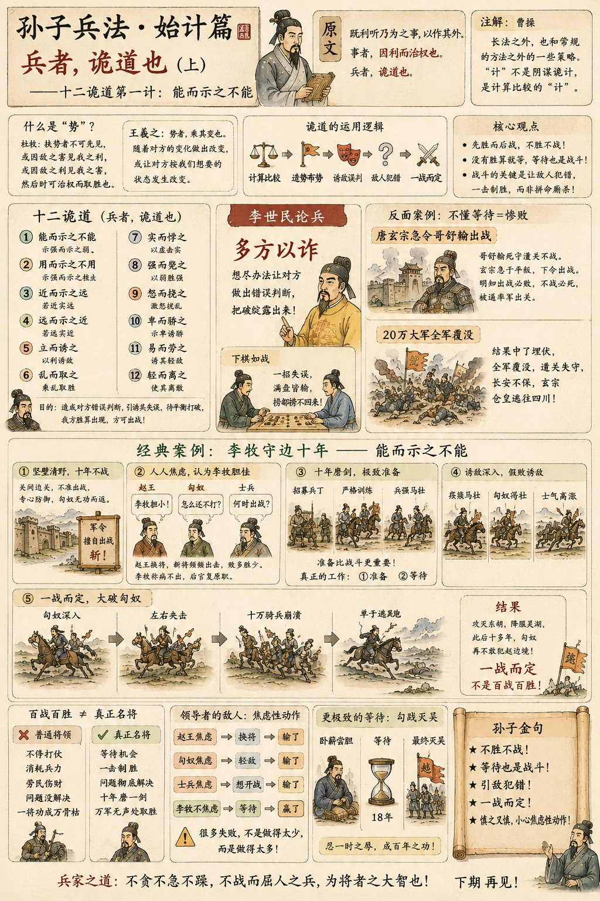
主讲人解读《孙子兵法》中'能而示之不能'的诡道，以李牧抗匈奴为例：李牧驻守边境时示弱，多年不出战，即使被撤换也不改策略。复职后继续备战，待匈奴松懈时一战歼灭其主力，此后匈奴不敢犯边。主讲人强调'一战而定'才是名将，百战百胜未解决问题等于白打。他联系现实，指出人们常因焦虑而做无效动作，真正该做的是准备和等待。
📖 全文解读 · 116句 · 8分39秒（点开看全文）
重温经典，以古鉴今。大家好，今天继续为大家来读孙子兵法原文。既利听乃为之事，以作其外。事者，因利而治权也。兵者，诡道也。意思就是到了战场之上，根据形势的变化，如何趋利避害，如何化不利为有利，相讥形势如何借势而如何造势。曹操的注解叫长法之外，也和常规的方法之外的一些策略。前面说孙子当中讲到的既不是指的阴谋诡计，也不是讲什么奇谋技巧，而是计算比较的那个计。不过孙子也不是不讲那个阴谋诡计，兵者诡道也。所以接下来就要开始讲诡计了，他一下子讲了12条诡计，既利一听就是算下来我们已经有胜算了，可以打仗了，乃为之士，以左其外就是在基本面之外，长法之外造势以相左，做一些造势来去辅辅助这场战争。势是什么呢？叫因利而治权也。杜牧的注解叫扶势者不可先见，或因敌之害见我之利，或因敌之利见我之害，然后时可治权而取胜也。王羲的注解叫势者乘其变也。就随着对方的改变做出一些改变，或者是让对方以我们心中所想的那种状态来去发生改变。孙子兵法十三篇当中专门有讲到刑篇和事篇，详细讲到了这个问题，这是孙子思想的精华原文。兵者，诡道也，故能而失之不能，用而失之不用，近而失之远远而失之近，立而诱之，乱而取之，实而悖之，强而毙之，怒而挠之，卑而骄之，易而劳之，轻而离之，攻其不备，出其不意，此乃兵家之胜，不可先传也。孙子在这里一口气讲了12条轨道，大部分轨道的出发点都是造成对方的错误判断，引诱对方做出一些失误的决策，对方不上当、不失误怎么办呢？那就等跟他熬拍间谍，然后去做各种布置和安排。总之一定要等到平衡打破，然后自己的胜算已经出现了，然后才能跟他发生战争。孙子的观点就是先胜而后战，不胜就不战，没有胜算就等，不能等待是有巨大性格缺陷的，总觉得战斗当中只有拿起刀跟对方去厮杀才叫英雄好汉。不懂得等待其实也是战斗当中的一部分，而且是相当重要的一部分。唐太宗李公和李卫公问队这篇文章当中记载，李世民说过一句话，他说我读古今兵书，就发现关键有四个字，多方已物。就是想尽办法让对方做出错误的判断，然后做出错误的举动，把破绽露出来。李静就说对，打仗就像是下棋一样，一招失误满盘皆输，捞都捞不回来。但是到了唐玄宗李隆基，他就没有了他爷爷的智慧。安史之乱当中，哥舒涵镇守潼关死守不战，李隆基急于平叛，就下令哥舒涵出战。由于之前李荣杰这个李玄宗已经斩斩杀了他认为作战不利的名将风长卿和高先芝。戈舒涵知道如果出战必败，但是不出战必死，而且还得换一个将军来统领这个军队，没办法，被逼着率军出关，结果20万大军全军覆没，潼关失守。眼见长安不保，玄宗是仓皇弃城逃往四川。12条轨道，11家注解，所以案例颇多，我们逐条来了解一下。首先先说第一条，能而失之不能。张裕说，识强而失之弱，食勇而失之怯。李牧拜匈奴，孙膑斩庞涓，都是这样子的。李牧是战国四大名将之一，赵国的将领。另外三位应该并不陌生，白起、廉颇和王翦。李牧驻守戴郡、燕门郡以防匈奴。李牧又带士兵，严格训练，频繁侦查。但是军令就有一条，就是不许出战，胆敢出战者一律斩首。这个免战牌一挂就挂了好几年。由于李牧把全部人都缩入到了营垒当中，兼壁清野，匈奴来了，就算想息扰也无功而返。李牧几年不战，不但匈奴受不了，连自己的士兵也受不了，连他背后的君主赵王也受不了了，认为是李牧胆怯，于是将他撤换掉。新将哈一改李牧兼壁清野的策略，来了之后就频频出击，结果败多胜少，损失极大。赵王不得已再次请李牧去官复原职，但是李牧称病不出。赵王无奈，只能答应他不再干涉他的军事策略。作为交换条件，李牧再次官复原职。李牧回去之后，又是几年不出战，但是他可没闲着，他把原来损耗的那些士兵哈再此招募兵丁，然后开始训练士兵。练兵抓的很紧，比打仗还猛。经过数年的经营准备，李牧的边防军事哈兵强马壮，军队士气高涨，士兵憋足了劲，宁可不要赏赐，也情愿与匈奴决一死战。而此刻的匈奴就松懈了。这个时候李牧决定决战。他精选战车1300辆，战马13000匹，勇于冲锋陷阵的步兵5万人，善于骑射的弓箭兵有10万人。然后出兵，他采用诱敌深入的战术，先派大批的牧民去赶着这个牲口来放牧。匈奴遣了一小股人马来进行抢劫掠夺。李牧假装战败，故意把几千人送给了匈奴，获得了小胜之后，匈奴开始轻敌，率这个单于就率领大批军队开始入侵李牧。广部骑兵左右两翼抱抄匈奴，一举突破匈奴十万骑兵。李牧乘胜追击，攻灭很多东湖，然后又降服了灵湖，然后匈奴的单于又落荒而逃。此后十多年，匈奴再也不敢靠近赵国的边境。兵家的思想讲究是什么？一战而定。天下战争不是打来打去的，而是积蓄力量，等待时机。一战而定，十年戍边换一个大将，可能百战百胜，战功赫赫，但是一将功成万骨枯。要是这个将军退休了，他什么问题其实也并没有解决。换一个大将，接着来打李牧就不是这样，他十年不出战，但是憋憋到的时候开始打一仗，一仗就解决了所有问题，所以一战而定才是真正的名将。百战百胜就是打了100次胜仗，但是还没有解决问题。那你打了什么意思呢？就是劳民伤财了。所以百战百胜是兵法还没有入门，不会打仗。再说世界上哪有什么百战百胜这回事，只不过是把败仗给藏起来不说而已。其实做任何事儿都是这个道理，不该动作的时候就什么也不要做，做一次就要解决问题，多少事其实都误在一个平平动作上。为什么平频动作无非就是一种焦虑的情绪，李牧不出战损失了什么呢？其实他什么也没有损失啊。但是士兵们焦虑了，匈奴焦虑了，赵王也焦虑了，于是他们就各自都动作了，那动作了之后就输了。其实他给李牧的任务，你想赵王给李牧的任务就是边防，那么边防根本没有出错，他有什么意见呢？那就他就是想要干点什么，才能缓解自己的焦虑，于是只要动他就错。小心你的焦虑性动作，这是最有可能毁掉你的。其实真正的工作作为leader而言就两件事，一准备，二等待。准备是自己的事儿，极具实力操练兵马鼓舞士气，等待就是等待敌人犯错，等待时机出现。敌人如果不犯错，我们就很难赢。兵法的轨道就像李世民所说的，叫多方以物，就是想方设法引诱对方犯错，能而而失之不能就是其中的一个方法，也是最主要也是使用最频繁并且屡试不爽的一种方法。李牧的案例比较极端，熬了十年，不过他不是最极端的，最极端的就是那个勾践吴王啊，越王勾践卧薪尝胆灭吴王夫差，前后用了18年的时间。所以这是能而视之不能的使用方法。
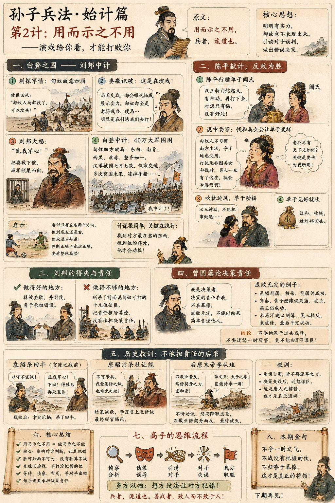
主讲人通过白登之围案例，讲解《孙子兵法》‘用而示之不用’的计策。刘邦攻打匈奴时，派娄敬侦察，娄敬发现匈奴故意展示老弱病残，判断是诱敌之计，劝刘邦不要进攻。刘邦不听，将娄敬下狱，结果被匈奴40万大军围困在白登山七天七夜。刘邦靠陈平行贿单于的阏氏才脱困。主讲人指出，计策虽简单但执行重要，刘邦回军后释放娄敬并封侯，却杀了其他主张进攻的使者，没有承担决策责任。主讲人还对比了袁绍杀田丰、汉景帝杀晁错、康熙帝不杀米思翰等案例，强调领导者应承担决策责任，不能归罪于谋臣，并引用曾国藩的总结：‘大抵失败而归咎于谋主者，庸人之横情也。’
📖 全文解读 · 135句 · 10分15秒（点开看全文）
重温经典，以古鉴今。大家好，今天继续来为大家读孙子兵法。我们今天的原文叫用而示之不用，用而示之不用和能而示之不能其实是一个意思，有一个案例，就白登之为是典型的战例。刘邦去打匈奴的时候，一开始节节胜利，一开始大家都觉得有点志得意满，于是刘邦就想发起总攻，把匈奴的老巢给端了。他派了十几波使臣和刺候去刺探军情，后来回来都说匈奴人马都没了，可以攻击，又派了娄进去，娄进回来说不能打。那当然刘邦就会问他为什么不能打？他说两国交战都是双方耀武扬威的，去互相展示自己的军力才是对的。我到了匈奴看到的全是一些雷马弱兵，都是一些老弱病残。很显然他是他们是刻意演戏给我们看的，引诱我们去打他。刘邦本来战意已决，听到了娄静说的话，大怒，把娄静下狱，然后说你乱我军心，等我回来之后再来收拾你。这个时候刘邦倾巢而出，结果在白登中了单于的埋伏。匈奴哪里是没人，有40万大军把刘邦围得个严严实实。匈奴的马更加是真齐，东南西北四支部队马的颜色全部统一，东边都是白色的马，西边都是黑色的马，北边都是红色的马。你要知道刘邦在登基的时候，仪仗队想找一个颜色一样的白马都找不齐。汉军被围了七天七夜，很多次突围都没有打出来，动恶交加，很多士兵的手指都被冻掉了。刘邦知道自己中计了，于是他就找那个负责专门设计阴谋诡计、间谍策反的陈平来商量。陈平设了一个计策去行贿单于的胭脂。这也是匈奴的皇后，他说汉王斩白蛇起义，不是凡人有神助。你这样打下去，对匈奴是福是祸我们不知道，但是对您肯定是祸。胭脂就问，跟我有什么关系？跟为什么说对我有祸呢？这个人就跟他说，匈奴人不习惯在南方生活，你夺了汉朝的地也没什么用。跟汉朝的打仗，无非也就是图美女和钱财。汉朝的美女极多，那汉人这个更别说了，这个钱也很多。男人有钱就会变坏。单于一旦有了钱，有了美女，他就跟您不亲热了，你要钱我们直接给您就好了别让单于得了美女。胭脂这个时候一听，啊呀这才是本质，老公的事业再大于我何用，关键是要老公为我所用才行。于是就开始吹枕边风，想单于去鼓吹那个汉王神助论，不能把事给做绝了。刘邦的光环本来就很强大啊，其实光环也就是权力。单玉自己也很不踏实，他也不知道明天会发生什么，再加上原来约好的两路盟军也没有按时赶到，他担心是不是已经被刘邦给策反了。要说可能性很大，毕竟他的老婆都被策反了。于是单于就决定见好就收我们议和收钱，让开条路放刘邦回去了。可见计策都很简单，根本用不了什么三十六计，有3击6击就够用了，但是执行很重要。演戏的人要挠到对方的痒处，那看戏的人就好像是你看足球比赛罚点球，守门员看射那个射门的那个人。不管他是什么假动作，反正你不是射左边就是射右边，这就是你能做出的判断。至于这回是左射右，你永远都不会知道，只有球出来你才有可能清楚。所以这回中计不等于下回不中。同样的计，匈奴的雷马弱兵可能是真的，也可能是装的。就像射门，你不是左就是右，刘邦的综合判断认为是真的，那不能说明他中计，只是击晕当下的场景。他做出来的判断，如果使臣看到的是兵强马壮，他反而认为是装的，他还是要打。至于胭脂和单于的决策，那更是理性的选择。你也不能说单于上了刘邦的当。刘邦有一个好处，他回军之后就把娄郡给放出来了，他并且封了侯，这是勇于承担仇。但是他把前面说匈奴可以打的这十几个使臣全给斩了，所以没有承担自己的决策责任。其实关于自己是否应该承担决策的责任，曾国藩有个总结。他说我是决策者，决策的责任在我，不在幕僚。万事的结果其实也都说不定，不能简单的以结果来去看，更不能去怪幕僚。他在日记当中为自己检讨检讨自己，就说我虽然明白这个道理，但是如果我听了谁的话，把这个事给办糟了。下次我看到他的时候，脸上难免会有些难看，这是我的问题，我要注意成败无定，领导者要负自己的决策责任，刘邦从白登回军，就把劝谏劝谏他不能打的那个楼静从监狱里面放出来了，还封了侯了。这一点他比袁绍要强。官渡之战前，田丰曾经也劝谏过，叫以守不宜战。袁绍说你乱我军心，我把你下狱得胜回来再来处置你。你看他跟刘邦说的一模一样。后来袁绍果然战败，消息传来，玉立就跟田丰说，田大田大人，这回你们没事了。田丰说你不了解主公，他如果是得胜了，一高兴就不跟我计较了。他如果战败了，肯定不好意思见我。那杀我就是不再面对我的一个方法。袁绍果然叫乌田丰，叫幸灾乐祸，然后杀了他，刘邦自然非袁绍可比。但是刘邦斩杀了十几个告诉他匈奴可击的使者，其实他也没有承担应该承担的决策责任。他把责任推给了那十几个幕僚。曾国藩专门说，领导者要承担决策的责任问题。因为成败无定，不光是定技的问题。这个我们刚刚说过，汉朝的晁错其实也建议削藩。结果六国叛乱要诛晁错，清军策景帝慌忙之间就把晁错给杀了，吴王照样反了。后来景帝胜利了，削藩成功了。明朝的齐太黄子成也建议建文帝削藩。那燕王朱棣反了也是要求朱齐皇，建文帝也是没办法把齐皇二人给杀了，燕王当然也不会收兵，最后燕王成功了，建文帝削藩失败了。清朝的米斯汗也建议康熙帝削藩，吴三桂也反了，康熙帝没有诛芈思汗，最后平定了吴三桂，削藩成功了。你看这三件事，背景形势其实都差不多，处理起来各有参差，不一样结果自然也就不同。所以楚大事决大宜，做决定要孰是孰非，就不要拘于以往的成败的经验，不要迁就一时的厉害，更不要归罪于谋臣。还有两个案例可以和大家分享。唐朝末年唐昭宗分于叫皇室不尊，意图讨伐军阀李茂贞。也就是平时那些皇亲国戚，对自己没有行天子之礼，不尊重他，于是开始讨伐那个军阀李茂贞。要宰相度能主兵，要宰相杜能去带兵打仗，度能苦谏，绝我绝对不能带兵打仗，我也不适合带兵打仗。说他日我受晁错之诛，也不能迷六国之祸。就我我以后就算跟晁错一样被清君策了，我还是解决不了这个问题。朝宗不允不大允许这个事儿。结果战事一开，朝廷打不过李茂珍，李茂祯就上表请诛杜能。杜能就跟昭宗说，我可是有言在先的。昭宗这个时候没有了英雄气开，只能哭鼻子说语清绝影，我跟你诀别了。于是就先下诏来贬度能为五州刺史，赐他自尽。所以这渡能比晁错、齐泰、黄子、成都冤。那事先说过了，可是还是被杀。曾国藩骂唐朝宗，强迫度能在前，又翻脸诛这个度能在后，作为一个亡国之君，这就是真正指一个亡国之君的所作所为。当然曾国藩也检讨自己，他说我在带兵打仗的时候，有人听了个幕僚的计策，输了我并没有归罪于他。但是见面的时候难免自己的脸似会不大好看，这还是我不懂道理，修为还不够。关于露出脸色，他又讲了一个案例，就是后唐末帝李宗科担心石敬业谋反，李松跟吕靖静言说石敬业如果反的话，必须他会借助于契丹的力量。如果这个时候你跟契丹和亲，石敬业就没有了机会。本来既定，本来就准备让李从科的女儿去嫁给契丹和亲，后来薛文玉这个人却说，以天子之尊，岂能侍奉一嫡，还引用了王昭君的一首诗，叫社稷一民主安危托妇人来讽刺这个吕松和，吕奇和李松。后来李松柯就改了主意，他把李松和吕奇骂了一顿，就以说你们要把我的女儿往火坑里推，两个人跪地谢罪。吕奇腿脚不打好，跪拜的慢了一些。李松科还骂他说，你这是来给我摆架子吗？吕奇说，您是晓得我腿脚不灵便的。李宗科还不罢休，最后把他降职了。后来果然石敬业引契丹打了这个唐兵。这回李从科晓得是不应该听学文玉的那又恨学文娱，他见到薛文玉就骂我见此物肉颤，急欲抽刀刺指，就要杀他。李从科后来果然被石经业灭掉了。曾国藩总结说，大抵失败而归咎于谋主者，庸人之横情也。成败不一定，所以过去的案例不等于可以照做，也不等于不可以照做。领导者要负自己的决策的责任，事情搞砸了怪谁出的主意？那个是庸人横情也啊，愚笨的人，庸人都这么做。这是今天和大家来讲的，用而视之，不用我们下期再见。
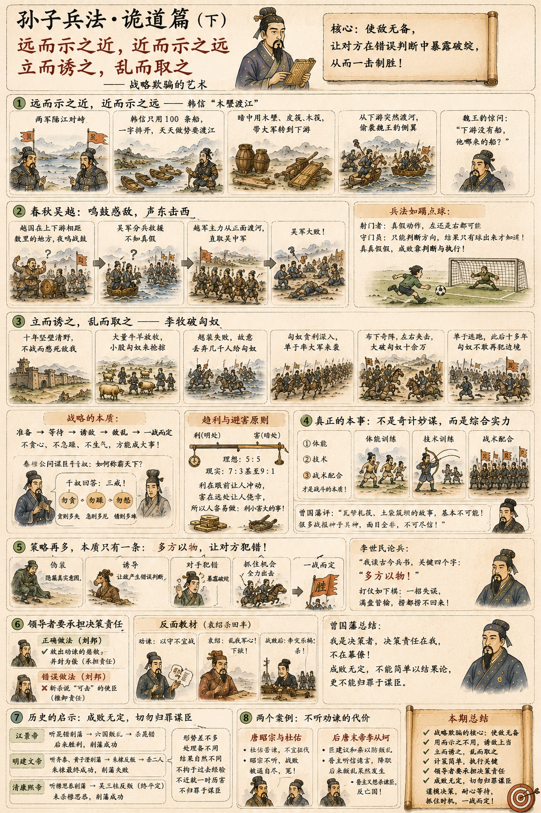
主讲人通过韩信木罂渡江和越国虚张声势两个案例，说明“近而示之远，远而示之近”的战略欺骗核心是使敌无备。他引用曾国藩对韩信故事的怀疑，指出奇谋技巧并非战争本质，将军更需运营管理能力，就像足球运动员要练体能、技术和战术配合。接着讲“利而诱之，乱而取之”，以李牧大破匈奴为例，说明贪利是人性弱点，并引用秦穆公问蹇叔的“三戒”，强调趋利避害时利在明处、害在暗处，容易让人自欺，就像炒股追涨杀跌。
📖 全文解读 · 129句 · 8分57秒（点开看全文）
重温经典，一古鉴今。大家好，今天继续为大家来读孙子兵法记篇。今天讲两句话，敬而失之远远而失之近，和立而诱之，乱而取之。我们详细来讲解这个叫战略欺骗，核心就是使敌无备，也让他没有防备，因为他如果有防备，我就没有胜算了。如果他没有防备，而我全部力量投掷过去，他就垮了。著名的案例就是韩信暮婴渡江的故事。在楚汉相争的时候，刘邦形势不大好，魏王暴就想转会，是一个藩王。他以母亲生病为由向刘邦请假回家，就投奔了项羽。刘邦很生气，就派韩信去攻打魏王豹，在临近这个地方和魏王豹隔河相聚，两个军队隔着一条河来互相对抗，韩信只收到100多条船，在江边一字排开，每天都做事，我要渡河，魏王豹就严阵以待，韩信他没有在正面作战。他偷偷的安排人去买一些木头和一些其他的材料，去做一个木音这个东西木音是什么？木音就是一种容器，肚子很大，嘴巴很小，装水的那种木头罐子或者是瓦罐子。他去买了很多这样的东西，带着大部队转到了下洋这个地方。他的上游用木英来去扎一个皮筏子和一个这种过河的木筏，然后从下洋渡河去偷袭了安逸。打魏王豹一个侧翼去打他一个措手不及。魏王豹听说韩信要在夏洋登陆就会问，非常惊讶。他说夏阳没有船，他哪来的船呢？这就是以没有替代品解决问题的这种思维方式。没有船不等于没有渡河的工具。韩信，这就是远而时之近，我要从远处打你，但是我从近处再给你演戏，那近而失之远也是一样。在春秋末年吴越争霸的时候，吴国和越国两个国家也是夹着一条河来相互对抗。越国就派士兵在上下游相距无里的地方，夜里鸣鼓而静，就是经常敲那个战鼓。吴兵没办法，只能去分兵去救，因为他不知道他从上游还是下游去打，所以他只能分兵去互相来进行救援。而实际上，越国的人之所以晚上要来进行演戏，就是因为他派去的人是鼓，很多人很少是虚张声势。等到吴国派兵去分着旧的上游或者下游的时候，越军的主力从正面渡河直取吴中军大败吴国。这也是虚张声势，声东击西的计谋。双方其实都明白，但是身势也不一定就是虚张的那深东不一定就一定会击西，也有可能他击东，就像是罚点球一样。其实守门员知道你用假动作会来还我，但是那个假动作又有可能是真动作，是你假装做的假动作。那么真真假假到底谁能赢呢？对于射门的人来说，你既要射的稳准狠，如果你自己一脚踢飞了，人家怎么守你都进不了嘛，那对于守门员来说，反应要快，还得要有一些运气，而且守门员其实也可以用假动作来去骗那个射门的人，那么前锋和守门员平时你训练的时候训练什么？那些足球运动员难道就专门练假动作吗？当然不是了。他要练的是什么？第一要练体能，第二要练技术，第三要练战术配合，这才是战斗的本质。说韩信能够打仗，在史册记载的都是一些奇谋技巧，给人很大的误区，以为打仗就是打这些奇谋技巧。而本质上将军就像是总经理，运营管理才是本质，那些细枝末节看上去很枯燥无味的东西，那才是管理的本质。所以韩信说刘邦只能带兵十万多了，他就带不动了，而韩信带兵是多多益善，给他100万军队，他指挥起来就像是指挥自己的手臂一样自如，这才是韩信真正的本事。体能技术和战术配合。结合在我们的团队管理和经营当中，就是你的水平、你的能力以及你的团队组合了。所谓三十六计，你只能当个故事听啊，千万别把它当做真正的战争。曾国藩曾经对韩信、暮英渡江的真实性也表示过怀疑，他说，拿瓦罐子和木罐子扎成筏子就能渡河，基本上不可能。因为曾国藩本身就是一个军事将领，他还怀疑韩信的另外一个故事。就是拿那个土袋子去在上游拦一个临时的水库，然后下游水不就少了，让敌人渡河渡到一半的时候，土袋子一下子拿开，把那个大坝放出来的水把敌军给淹了。曾国藩说，这种水库大坝可不是一个人扔一袋土就能把它给造起来的，更不可能一下子就把它拿掉。所以谁去撤掉这个土袋子，又怎么撤呢？这根本不可能的事。曾国藩说，我们湘军，有的时候打仗的时候，我看到文人写的一些报道，我都拍案叫绝，我都不知道这场仗原来是这么打的，太神奇了。他指挥战役的肯定不是我，他还总结说，我还在战报就已经面目全非，到我都不不敢相信了。太史公也是司马迁，他说司马迁也是文人，他去寻访韩信的故事也难免会有猎奇和渲染。这种事情计策其实就那么两下子，双方都读过兵书，每次打仗都必然要用那些计策。比如说我要打哪，我一定会想方设法的骗你我要打别的地方，我也晓得，你肯定知道我在骗我。那这个时候我也可能晓得，你有可能让我误以为在骗你，其实我没骗你我真的就在打那里。所以计策来来回回没有真没有假，只有自己的判断。所以那又怎样呢？踢球的每一步都有假动作，但是那不是赢球的本质。原文，立而诱之，乱而取之。李全注解叫敌贪利必乱，乱则可取之战立。还有前面所说的那个李牧打败匈奴的事儿，我们昨天讲过的那个故事，坚必清野十年闭关不出，把敌我双方都给憋坏了。我方的将士真的是每天好吃好喝好训练，都想上战场去报效国家，而地敌方的将士爷憋坏了，那兼必清也啥也没有，十年了都抢不到东西，穷死了都。所以这个时候李牧觉得可以打了。他这一战是不战者以一战而定的战。他倾巢而出的来进行决战，这是他选择的决战，对方根本不晓得这是决战。李牧先是大量的把一些畜牧的东西，牛、羊赶到满山遍也都是放牧的人，到处都是。匈奴小股人马入侵的时候，李牧就假装失败，故意把几千人都丢弃给到匈奴。匈奴抢东西抢了红了眼，然后他的单于听到之后非常高兴，就率大部队前进。李牧这个时候就布下奇阵，左右夹击，大破匈奴十余万计，就打败了东胡也和收降了灵狐，单于逃跑了。在此后的十多年里，匈奴都不敢去接近赵国的边境，贪视人性的一个很大的弱点。春秋时期秦穆公问千叔哈，他说我怎样才能称霸天下呢？千叔就是他的一个谋臣。千叔回答说，福霸天下者有三戒，你要想称霸天下，有三件事是不能做的，叫勿贪、勿愤、勿疾。千万不要贪，千万不要急躁，千万不要动不动就生气。贪则多失，分则多难，急则多厥，意思就是你要如果贪心的话，就会失去很多东西。如果你容易愤怒的话，你就容易有一些困难。如果你很急躁，就会摔跟头。警察利害大小而图之，哪里需要贪呢？将心比心，换位思考，衡量彼此。哪里需要胜对方的气呢？斟酌事情的缓急，从容安排计划。哪里需要急躁呢？你能持这三条剑，八爷就进了。所以下判断做事情要把握两条原则，叫趋利和避害。趋利和避害的权重至少应该是50。对，50应该是相当的，但是往往都比成了7比3，甚至比成了9比1。为什么？因为利往往在明处，在眼前你让人激动，而害在暗处，在远处让人心生侥幸。我们经常看到有一些人去做一些利益极小的事儿，而隐患极大的事儿，为什么呢？因为利马上可以得到，而那个害明明白白存在的害，他却不可救药的认为不一定。就跟炒股一样，看到一直涨它，所以就追高，追高之后就瞎跌，然后就杀跌。对，一定是这样子。不贪心就不会上当，所有的骗局都是从谈资入手，这个骗局可不是别人来骗，你说什么工地上挖刀宝，你去挖宝，不是是你自己骗自己。其实一看到利人就会开足马力的去欺骗自己。拿，没事，你看不要让自己的欲望来左右你对于利益的判断。这就是我们今天和大家说的，我们下期再见。
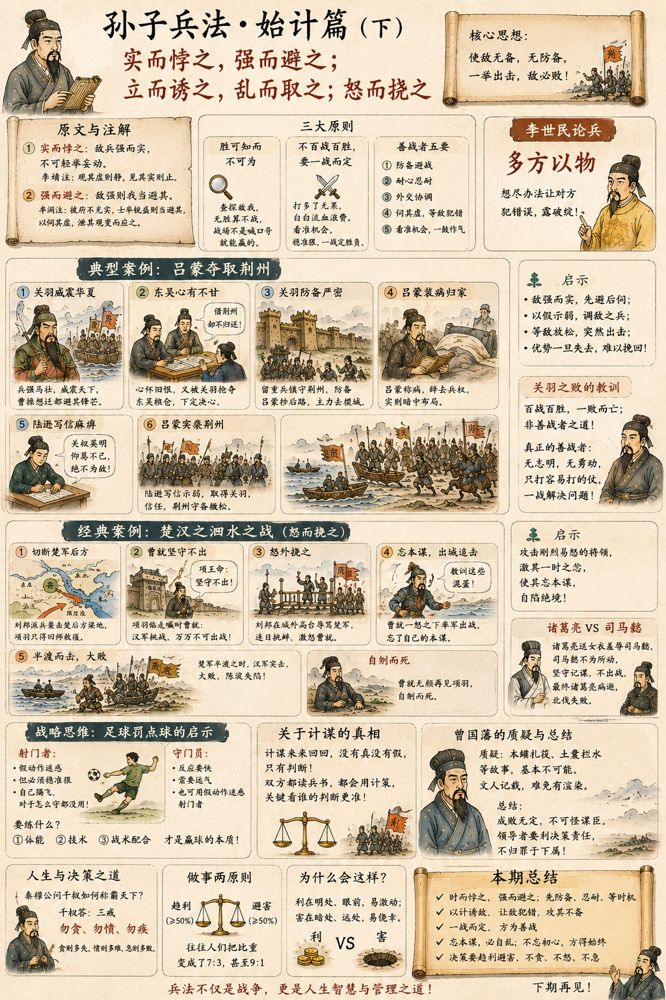
主讲人首先解读‘实而备之，强而避之’，强调敌人实力强时要避战，并举李靖和杜牧的注解。他批评‘行动才有机会’的误区，指出行动必须付出代价，引用孙子‘兵者，国之大事’说明慎战。接着讲‘胜可知而不可为’，主张无胜算则不打。然后提出不要百战百胜，要一战而定，举吕蒙取荆州的例子：吕蒙装病换陆逊，陆逊写信示弱，使关羽调走荆州守军，吕蒙趁机袭取荆州，导致关羽败亡。主讲人指出关羽是百战百胜一败而亡的典型，符合孙子‘善战者无智名’的观点。最后解读‘怒而挠之’，举楚汉相争刘邦激曹咎出战致其败亡，以及诸葛亮送女人衣激司马懿未果的例子，强调不忘本谋，拒绝冲动。
📖 全文解读 · 138句 · 10分10秒（点开看全文）
重温经典，以古鉴今。大家好，我们今天继续为大家来读孙子兵法，来读孙子兵法的轨道原文，时而悖之，强而避之。时而悖之意思就是如果敌人兵士济实则不要轻举妄动。那如果兵强马壮的话，我们就不要去随便惊攻对方。李靖的注解叫观其虚则静，见其实则止。强而避之的意思就是比强则我当避其。丰润度右的注解叫彼府不充实，士卒锐盛则当避其，以4其虚泄观变而应之。人们往往有一个误区，认为行动才会有机会，却忘了事情往往有另外一面，叫行动必须付出代价。就像我们常常说的那句话叫不作死则不会死。孙子兵马一开篇就说，兵者国之大，是死生之地，存亡之道。一动作就是生死存亡，不仅仅是战士们的生死存亡，而且是国家的生死存亡。所以一定要慎之尤慎。当然我们在企业经营当中，更多的是公司的战略和决策，不要随便的发生变化。但作为执行层而言，你必须行动才会拿到结果，这是两个维度思考问题的方式。第二个观点叫胜可治而不可为，查探敌我的情况。假如你知道自己没有胜算，那你就不要去打。你上了战场再想去许取胜，那是不可为的事情，那是不应该去思考的一个事情。因为敌人也是身经百战的，我们不是喊几句口号就能赢的，再说何况别人喊着口号未必比我少。第三个叫不要百战百胜，要一战而定，打来打去没有什么结果，还接着打，白白流血牺牲，白白浪费粮食，那是为将之罪。要看准机会，稳准狠，一战而定解决问题，这才是高明的将领要去思考的。所以当敌方实而强，那我们一定要防备避战。第二要有耐心去忍耐。第三要有外交协调的能力。第四，要伺其虚械，等他犯错，等他放松，让他失误。正如李世民所说的，叫多方已物，他说所有的战法无非也就是四个字，叫多方贻物，让对方犯错误。第五个要看准机会，一鼓作气。最典型的战力就是吕蒙去打关羽。关羽在荆州兵强马壮，还战百胜，他甚至收服了一个魏军猛将于进北方很多反叛曹操的民间武装都响应关羽，受他遥控，关羽威震华夏，以至于曹操都想迁都，把那个首都从许都给迁走，以避其锋芒。这个时候司马懿献计，他说东吴必不愿关羽得志，于是就联络东吴来共同对付关羽。刘备的荆州本来就是跟孙权借的，如果大家看过三国演义和三国志的话，借了还赖着不还，那双方谈判说各分一半。所以东吴在这件事情，他心里其实是不平凡的。偏偏这个时候关羽又无所顾忌，因为心得了余京3万人马粮草不够，就恃强凌弱，抢了东吴的粮仓。心仇旧恨加在一起，孙权就下定了决心，我要办理关羽孙刘本身的联盟。关羽在荆州本来是对魏作战的那这个时候他自己是一心要去魏的樊城，但是他并没有放松对于东吴的警惕，他怕东吴大将吕蒙去抄他的后路，所以就留了大量的守备军去留守在荆州。对于这个时候如日中天的关羽而言，曹操是恨不得前而避之，那吕蒙则叫食而备之。吕蒙要取荆州，就必须让他撤去荆州的守备，让荆州由实变虚，这样他才会有机会。关羽有调动荆州兵马的需求，因为他要去反城，北方前线缺人嘛，那荆州的部队是留下来防吕蒙的，于是吕蒙就想了一招，怎么去把他的荆州兵力给他由实变虚呢？装病。吕蒙装病倒是很容易，因为人人都知道他本来就体弱多病，而且他在这一战之后还真的病死了。吕蒙称病归家，然后呢，换来了一个叫陆逊的人来镇守陆口，陆逊这个时候还是个默默无闻的年轻人，他一到就以一个超级粉丝的身份给关羽写了一封表达无限仰慕的信，向偶像来报道。他说能和您来房区临近，这是我一生的荣幸。希望关叔叔多关心，爱护我们年轻人，我绝不改，也绝不会与您为敌。关羽这个时候就放了心了，他把荆州的兵马调到了樊城前线去了。这个时候吕蒙马上率大军杀回来，取了荆州，抄了关羽的后路。到这一战结束的时候，关羽被俘斩首，刘备之败实败于关羽，是因为关羽死了，所以之后所有的一切很快蜀国就消失了。荆州一失就决定了刘备在统一天下的精争当中已经出局了，因为荆州才是他逐鹿中原的门票。之后诸葛亮有六处岐山九伐中原。在蜀北汉中那个蜀道难，难于上青天的万山丛中，他哪里杀得出来？最关键的是还是运粮成本太高，运粮只能靠牧牛牛马的神话来去完成。至于关羽之死，直接导致了张飞和刘备的相继死去，三兄弟的时代就结束。关羽是一个典型的百战百胜一败而亡的人。孙子兵说真正的善战者无志明，无勇功。因为善战者不打那么多的仗，他只打容易打的仗，不打那些跌宕起伏的仗，没有那么多可歌可泣的故事，故事都是讲给老百姓听的。关羽则恰恰是和孙子的胜将的标准相反。关羽威名和赫，在民间时集道德、智慧、武功于一身的千古第一人。但是在专业的军事家看来，也许关羽是一个误国之臣。原文，怒而挠之。杜牧的注解叫大将刚立者，可击之。令怒则惩治快意，不顾本谋也。意思就是对于刚烈易怒的这些敌将，要激怒他，给他施以冲动的魔法。他未解一时之恨去惩治快意，就会不顾自己原来要干什么。最重要的是他也不顾了，一定要马上劫恨，结果恨为结尘，很有可能把自己的命给搭进去。这种诡计主要是针对于那些性格刚烈的人，未了则说宽不可击，而怒就是对于那些性格宽厚的人，他本来就不容易冲动，你要去激怒他很难。经典的战力就是楚汉相争的时候，汉军去打曹就的泗水之战。项羽和陈高，项羽在都秦，项羽在陈高和刘邦对峙，谁也拿不下谁。刘邦这个时候就派兵打了项羽的一个后腰。他派吴关和刘甲率领两万多人去渡过白马精，然后协助建这个建城侯彭越去袭击楚军的后方梁地，拿下了十多座城市，切断了楚军的补给线。这个时候项羽没办法，只能自己亲自带队去打彭城。这个时候他就委任曹就守城皋作为城高守将。临走的时候，仔细嘱咐了他说你去守城皋，千万计的汉军有任何挑战，你都不要跟他打。我15天必定会拿下彭越，然后收复梁地，然后我再回来。项羽走了之后，曹曹就是遵循项羽的这个命令，坚守不出。刘邦就实行了一个计策，叫怒外挠止。他在陈高城门边上专门搭了个台子，很高的台子，每天在台子上找人去骂楚军，去羞辱他们，一连骂了五六天，楚君受不了了，曹就也沉不住气了，忘了他在这里的本谋是什么，他本应该做什么。他忘记了他一定要出门教训这帮混蛋。所以曹就率军出战渡过泗水。渡到一半的时候，汉军来了个标准战术，叫半渡而济。楚军大败，陈皋失陷，战局的平衡被打破。曹就自己知道自己将要命丧于此，他家又无言再见项羽，于是就在河边也自刎而死了，怒而挠之。这个计，其实诸葛亮对于司马懿也用过，不过没有成功，因为关羽丢了荆州。那楚汉只能从北线汉中的崇山峻岭出发去罚曹魏，他的问题是梁氏民不上去，那为什么六出祁山九伐中原都是半途而废？每一次核心的原因就是没有梁每一次差不多一个多月的时间，那过了一个多月，如果你没打赢，就必须得撤兵，否则你回去路上吃的粮食都不够，所以诸葛亮必须速战速决。曹魏也知道这个规律，所以我就熬，我就不跟你打，反正我就忍一个月。你这个时候你把你给饿回去最好，那我就不战而胜了。那我跟你打，我不一定打得过你，所以我就不打，这个是曹魏君臣上下高度一致的一个策略。诸葛亮最后一次北伐，在五丈原这个地方堆峙，司马懿照例高挂免战牌。诸葛亮百般挑战都没办法让司马懿出来。那这个时候也实行了一个计策，叫诺安挠止他，就给司马懿送去了一套女人的衣服来去羞辱他，来侮辱他。司马懿根本不上当，他还是不出战。结果司诸葛亮心力交瘁，没办法叫病逝在了军中，北伐的这个事业也就结束了。司马懿这是有很强本谋意识的人，他始终不忘自己根本目的是什么，基本策略是什么。忘了本谋，这是我们每个人常犯的一个毛病。不仅仅因为愤怒，任何的干扰其实都会让我们越来越远离这个事物的本质。自己完全意识不到追求知解而忘了本质。所以佛经有一句话叫不忘初心，方得始终。本谋和初心就是我们每天每件事儿都要对照检核的，要拒绝冲动，拒绝诱惑，排除干扰，坚持自己的那个本谋。不忘初心，其实示弱不是什么羞耻，不要争气，前你争什么都不要争气，尤其是不要争一时之气。我们今天的内容就到这里，下期我们再见。
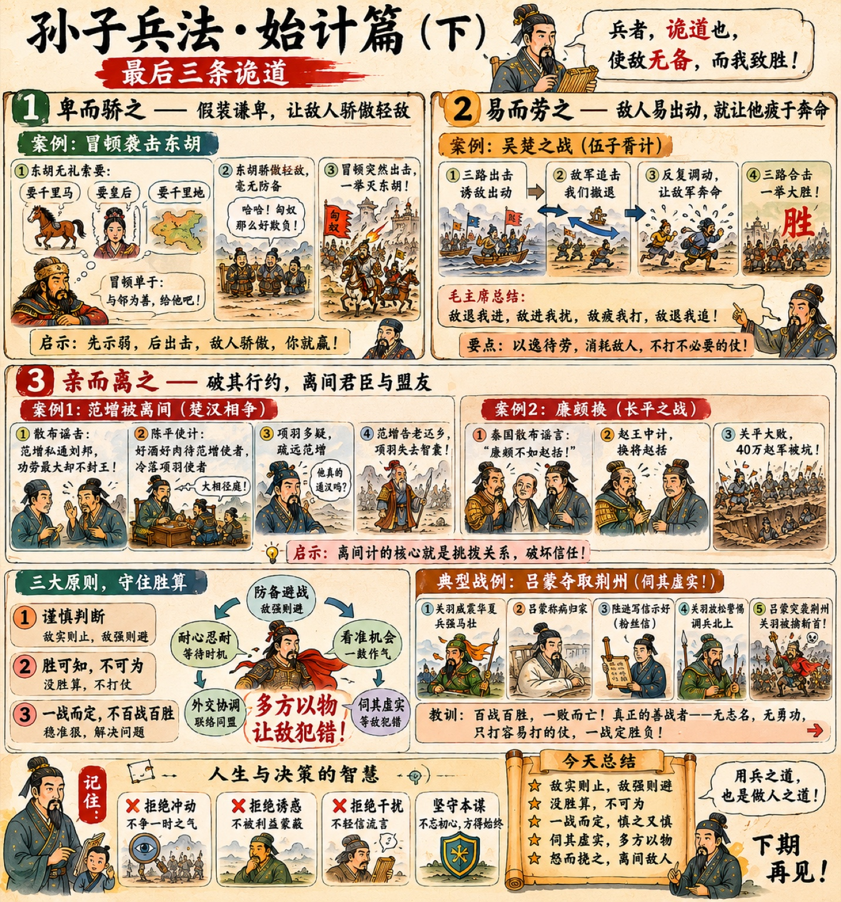
主讲人解读《孙子兵法》最后三条诡道。卑而骄之：冒顿单于假装谦卑，先送千里马和妻子给东胡，使其轻视自己，然后趁其无备一举灭之。易而劳之：伍子胥分吴军为三师，轮番骚扰楚军，使其疲于奔命，最终攻破郢都；毛主席总结的“敌进我退，敌驻我扰，敌疲我打，敌退我追”也是同理。亲而离之：秦国在长平之战散布谣言离间赵王与廉颇，换上赵括；陈平用黄金买通楚军散布范增、钟离昧欲叛的谣言，并设宴羞辱项羽使者，使项羽怀疑范增，范增愤而离去。主讲人强调，判断敌情需先认清自己，离间计的成功源于领导人的多疑和人性弱点。
📖 全文解读 · 154句 · 11分57秒（点开看全文）
重温经典，以古见今。大家好，我们今天继续为大家来读孙子兵法，来读孙子兵法祭篇当中的最后三条轨道。原文，卑而骄之，假装谦卑，让对方骄傲，让对方去轻视自己。轻视就不会有防备，没有防备我们就可以突然发动袭击，典型的战力就是默顿袭击东胡这个案子。秦朝末年匈奴的冒顿单于出力，东胡很强大，这个时候他就拜使者来说，你的父亲头曼在世的时候，有一匹千里马很不错，你给我行吗？莫都就问群臣啊，给还是不给呢？群臣就说，东胡这么没有礼貌啊，先君的千里马是我们国家的国宝，怎么能无缘无故给他呢？莫度就说，与邻为善啊，那还爱惜一匹马吗？给他吧。过了一阵子，东湖的使者又来了，他说你老婆那么多，你就送一个给我吧，群臣又很愤怒，他说东湖无道，竟然找我们单于来要皇后那发兵打他，莫都就说啊，与邻为善，还舍不得一个女子嘛给她啊？又过了一阵子，东湖的使者又来了，他说你们有弃地千里，你们留着也没什么用，那就送给我。莫都就问群臣，大家看单于，连自己的老婆都可以送别人的，也不知道这事儿该说给还是该说不给，于是只能含含糊糊的说给也行，不给也行。这个时候默读大怒，他说国土是国之根本，国本能随便给别人的，然后把说给的所有人全部斩首，然后发兵攻打东胡。东胡轻视末度，根本就没有防备，冒顿就一下子灭了东胡，并且一口气往西打到了越之，往南打到了楼樊白杨。河南地区也就是内蒙古的河套地区，河南指的是这个意思，北边侵入到了燕国代国，一举收复了秦朝时蒙恬所侵夺的所有匈奴土地，后来又跟汉高祖刘邦来进行战争，把汉高祖刘邦围在白登之后议和，约为兄弟，就是这位冒顿单于。刘邦死了之后，冒顿又开始打汉朝的主意。他刚刚死去，皇后的这个冒顿单于派了使者送来一封言辞极为不敬的国书给到吕后，上面写着叫孤愤之君，愿由中国陛下独立，孤愤独居，良主不乐，吾以自娱，愿以所有，一其所无。就是我的老婆死了，你的老公也没了，那不如咱们俩澄清怎么样，那吕后当然听完大怒，群情激愤，就说要攻打这个匈奴。然后樊哙说我愿意带领10万精兵来横扫匈奴。这个时候中粮将计步，就说樊哙可斩也。当初高地江兵四十余万，还被困于平城，今天你以10万众能够横行匈奴，你这是来犯了欺君之罪。吕后之后决策还是决定和清政策，不予默顿来进行作战。给默顿回了一封信，他说感谢单于还惦记着我们，不过我们这有什么可以招待单于您的？想来只有雄关万里兵甲这个兵马甲士可供一关。单于一定想来游玩，你说那些什么诗书雅颂你肯定没啥意思，只有将士们陪您进行游猎。我年老气衰，发齿脱落，但是要打猎还是愿意和大家一起娱乐的。默读本来就是试探一下，看刘邦死了，汉朝是否有机会发起这个进攻，故意写了一封信刺激一下他，看吕后在大权在握，也只好作罢。他写了这封信还是很有力量的，重新陪礼修好。这是讲到了这句话叫悲而交之。原文易而劳之就是疲劳战，我们要以逸待劳，敌人如果也很易，那我们就骚扰他，折腾他，让他疲于本命。典型的案例就是春秋时期的吴楚之战，吴伐楚，公子光问计于伍子胥。伍子胥说可以把军队分成三师，分成三支部队。首先有一支部队出击，他肯定是倾巢而出来跟我们打。那么我们马上撤退，等到他也撤退了，我们再换第二支部队上去，他出来我们再撤退，这样反复调动他要多方以物，只要让他犯错，让他疲于奔命，然后我们三支部队共同出去，一举把他拿下。公子光依计而行，结果楚军统帅子崇果然一岁而弃，奔命一年给来来回回折腾了七八回，吴军最终发动了总攻，去攻陷了楚国的都城颍都。三国时期袁绍和曹操相争，官渡之战之前，田丰给袁绍献的计也是这样，但是袁绍没听田丰的战略，就是说曹操很善于用兵，不要轻举妄动，不如以久代之啊，不如跟他打消耗战。将军居山河之故，有四周之地，外结英豪，内修农战，然后减其精锐，分为骑兵，趁虚迭出，以扰河南，救右则击其左，救左则击其右，使敌疲于奔命，人不安也，我未劳而鼻以困也。未及三年可作客也，今视妙圣之策而绝败于一战，悔不及也。这就是他的战略战术，就不断的去洗扰对方。毛主席总结红军的战术就是敌退我进、敌助我扰，敌疲我打，敌退我追，也是一样的意思。只不过毛主席总结的更加的白话，大家更能接受，不像以前这些说的文言文。那么这个节区奥亚兵法其实都很简单，难的就是做出判断，比如敌军来了，你怎么知道他是骚扰来的还是总攻来的呢？实际上我们并没有办法知道。所以毛主席说，一上战场，兵法就全忘了，随时有紧急情况要你做出处理决定，哪里顾得上什么兵法怎么办？那就要做到胸中有全局。是你在调动敌人，不是敌人在调动你。对于自己要立于不败之地，保护好自己，不要轻易出战。比如就是我们之前所讲过的那个人李牧防匈奴就是这样，兼必轻也，城门一关，任你如何挑衅。我没准备好我就不跟你打一年，没准备好我就一年不出战。十年没准备好，我就十年不跟你打。哪一天准备好了，时机到了，我就一战而定天下。对于敌人，就像李世民所说的，观古今兵法就一句话叫多方以物质而让对方犯错，想方设法去引他失误。大家读的都是同一本兵法都会背，但是差距怎么这么大呢？原因就在于会不会做出判断。你判断不了现在发生的是什么状况，是判断不了敌情。表面上是对于敌情没有判断，实质上是对于自己没有判断。只要你对自己判断清楚了，认他什么敌情，你自然知道应该怎么办，你究竟是否准备好了。原文，亲而离之。李全注解叫破其行约，兼其君臣而后改。也就是破坏他的外交盟友，然后去离间他的君臣关系。战国时期，秦赵长平之战，廉颇打了几次败仗，于是坚守不出。这个时候秦国就派间谍到赵国去散布留言。他说廉颇很容易对付秦军，最怕的是赵括。赵王果然上当，不顾蔺相如和赵括之母的劝阻与由，赵括就替下了廉颇，最终造成了长平被40万族全部被坑的这个悲剧。赵王为什么会上这个当？就是因为他对廉颇打败仗和之后不出战已经非常不满了。找不到时机去换他。那秦国的间谍那自然就是帮了他的忙，还替他想好了替换的人选。在楚汉相争的时候，刘邦被项羽困在隐阳一年多久，断绝了外援和粮草的通道。这个时候陈平献计，他说项王的能逞不过范增、宗离妹龙且周姬英这几个人，如果能是离间计，除去这几个人，项王就好对付了。于是刘邦就给了陈平4万斤黄金，这很大的一笔钱，然后买通楚军的一些将领。散布谣言。他说在项王的部部署之下，范亚夫和钟离妹的功劳最大，但是却不能裂土成王，他们已经跟汉王约好了共同消灭项羽，然后分占项羽的国土。这句话被传到了项羽的耳朵里，那就使他起了疑心，果然就对钟离妹产生了怀疑，此后重大的事情就不再跟钟离妹商量，他甚至怀疑范增私通汉网，于是对他也很不客气。程平为了彻底去除去范增，还演了一场戏。有一天项羽派使者到刘邦的营中，程平让逝者准备好十分精致的餐盒，然后好酒好肉的去进行招待，然后问亚父范增有什么吩咐？使者不解的说，我是向往的使者，不是亚父的使者。陈明说，我还以为你是亚父的使者，于是立刻变脸，撤去尚等酒菜，然后把使者领到另外一间非常简陋的客房里面，然后用粗茶淡饭来招待，陈平则拂袖而去，使者没想到会是受到如此羞辱哈。范增的使者这么好酒好菜的款待，一旦变成了这个项王的使者，竟然被如此的对待，于是非常气愤，回去之后就把这个事儿告诉了项羽，项羽更加确信范增死痛汉王了。这个时候范增向项羽建议说应该加紧功臣，但是项羽一反常态拒不听从。范增也知道了外面说他暗通汉王的这些谣言，知道项羽中了离间计，于是就告老还乡，项羽就毫不留情啊，一点都没有挽留就让他走了。陈平这么拙劣的表演，那么项羽怎么会中计呢？还是因为他本来就多疑，而间谍散布的流言大部分都是事实嘛？比如说范增和仲立卫功劳最大，但是不能封王。项羽本来就不舍得给人封赏，韩信说他给人封王封侯，大印刻好了还抓在手上啊，磨来磨去，不舍得给别人，恨不得再把这个印给收回去。他自己心里有鬼，谣言呢，又正好挠到他的痒处，不由得他不信范增。那我们再回过头来问，有没有问题呢？他也有问题。在鸿门宴上，项羽没听他的，把刘邦放走了，他指着项庄就骂庶子不足预谋。实际上人人都知道他骂的是项羽。范增什么智慧就都有，就是没有和项羽相处的智慧，这恰恰是他欲德志于天下最需要的一个基本素质。他为什么会这样呢？还是人性的弱点了。人亲人之间的恩恩怨怨恩怨恩怨，没有恩就没有怨，多大的恩就会有多大的怨。我们和敌人的关系很简单，就是利益之争。打一打谈一谈，亲人之间的关系就会比较复杂，成了爱恨情仇。再说和敌人是竞争关系，是社会上的竞争机制，团队内部成员也有竞争关系，因为组织本身也是一个竞争和分配合作相融的机制。离间计就是外部的竞争者打破竞争的边界，参与到敌人内部竞争当中的一种方法。这就是四两拨千斤了，堡垒都是从内部手下被攻破的，如果要不想中离间计，还得靠领导人自己的人格魅力和自己的胸怀。今天讲了十2轨道当中的最后三条，我们下期再见。
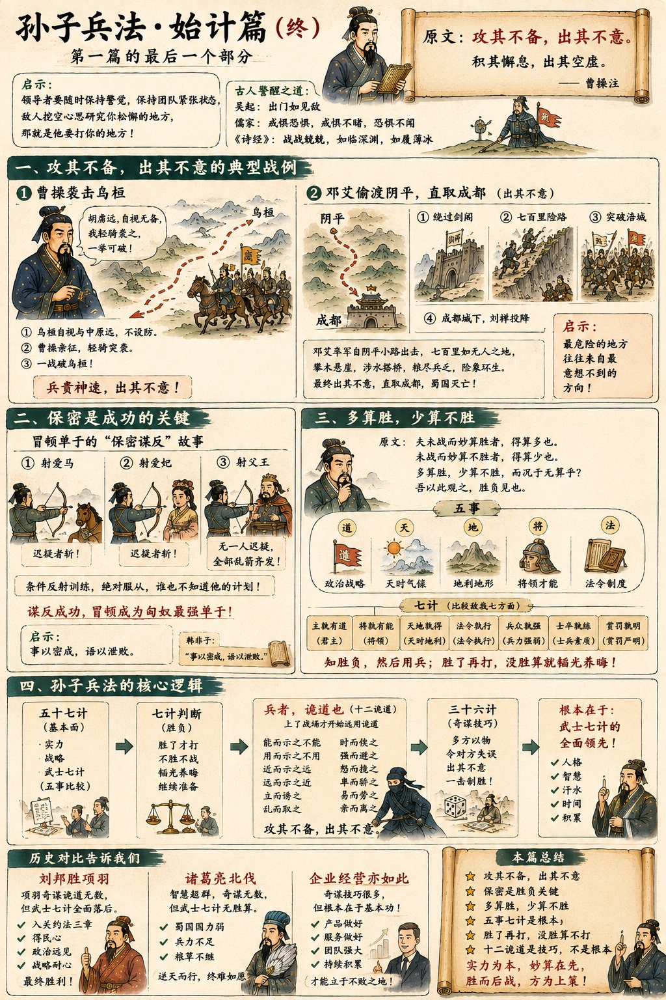
主讲人解读《孙子兵法》'攻其无备，出其不意'，引用曹操注解'击其懈怠，出其空虚'，并联系儒家'戒慎恐惧'和《诗经》'战战兢兢'，强调领导者需保持团队紧张。举例曹操打乌桓时郭嘉献计'兵贵神速'，轻兵突袭；邓艾取成都时裹毯下山，七百里奇袭蜀国后方。指出诡道成功关键在于保密，引用韩非子'事以密成'，并以冒顿单于训练部下条件反射、弑父自立的极端案例说明保密之极致。最后强调'庙算'根本在'五事七计'，奇谋诡道只是表面，真功夫在实力积累，如刘邦胜项羽、诸葛亮逆天而行。
📖 全文解读 · 134句 · 10分28秒（点开看全文）
重温经典，以古鉴今。大家好，今天我们继续为大家读孙子兵法。来读孙子兵法记篇，第一篇当中的最后一个部分，原文是攻其不备，出其不意。意思就是攻打他没有防备的地方，从他意想不到的地方来出击。曹操的注解叫积其懈怠，出其空虚。吴起讲将道有一句话当中叫出门如见底，就是随时保持警觉的意思。儒家也讲，儒家讲君子之道，他讲戒圣恐惧，戒圣不睹，恐惧不闻，随时警醒自己，有自己没有见到的地方，不知道的事儿你就要注意，是这个意思。诗经当中也讲到战战兢兢，如临深渊，如履薄冰，其实都在表达同一个道理，领导者要随时保持注意保持团队的紧张状态。如果你看他松懈了，就要把它发条紧一紧，因为松懈就会失败。特别是在战场上，敌人挖空心思都在研究你什么地方会松懈，你认为没有问题，可以放松一下的地方，差不多就是他研究的那个结论，他要打你的地方。下面有一个攻其吾备的案例，就是曹操打乌桓，郭嘉献计说胡四齐远，这个乌桓自视跟中原相距很远，必然不会设防，因为他不设防，如果我们突然打他是可以把他灭掉的。军队走到了易北这个地方，郭嘉又说，兵贵神速，经千里袭，人资众多，难以取利，不如清兵见道已出，掩其不易就兵贵神速。今天我们要千里去攻打对方，那如果我们带了一堆东西，还怎么资重了粮草，就很难去获得最好的战果，那不如派骑兵从小到出击，然后打他一个措手不及。于是曹操就亲计出卢龙塞直指单于亭，然后突击乌桓打破之。结果出其不意的一个战例是邓艾取成都，三国末期魏国大将钟会和邓艾伐蜀，蜀国的大将是姜维，他守剑阁，他是诸葛亮的接班人，久攻不下。因为姜维也是个很厉害的将军。邓艾跟钟会就说我从阴平由协径出剑阁西入成都，我从阴平这个地方，然后绕过剑阁，从小路出去直击，直接去，对不起，直接去打成都骑兵冲其复兴。剑阁之君如果来支援涪陵这个地方，那你就可以攻下剑阁。那剑阁之兵如果不回来，那么守涪陵的兵就会少。那我可以一股而下去把涪陵拿下，然后就把成都拿下。到了东十月，邓艾率军自阴平如无人之地700里，直接走小路，走了七百多里地，韶山通路遇水搭桥，山高谷深，至为艰险，粮食也没了，兵于危殆，这个军队差点就没了。最后，邓艾是自己裹着一条毯子从山上出溜下去，他也不知道自己是是死是活。然后将士们攀木悬崖，鱼贯而下，简直就像是神兵天将一样。邓艾一路突破的都是蜀军防备最薄弱的大后方，等到他进军到成都城下的时候，姜维的主力还在间隔，还没动，这个时候蜀国的君主刘禅已经投降了。此兵家之胜，不可先传也，曹操的注解叫传犹谢也。前面讲了那么多诡道，阴谋诡计，我们讲了12条兵法的一些策略。阴谋诡计你要想成功，最重要的一件事情就是不能让别人知道。人家知道了诡计就没有用了。不能让敌人知道，也不能让自己人知道。因为知道的人多了，秘密就容易泄露。韩非子说事已密成，予以懈败。残酷的斗争，保密工作永远是第一位的。在中国历史上保密的极致案例，是有一个人就是默读单于是向吕后求婚的那个我们之前前几讲当中有举到这个人的案例。默渎当时要一个做的这么秘密的一个事是干嘛呢？谁都不告诉，只有他自己知道这件事叫谋反，是弑父自立，把他的父亲给杀掉，自己自立为王。冒顿本来是太子，但是他的父亲爱上了别的个妃子，想立那个妃子的儿子，那小儿子继位。于是就先和这个乐之结盟，再把默顿派到乐之去做人质，然后又发兵攻打乐之，目的就是借乐之的手，然后把默顿给杀掉，但是默顿居然偷了一匹宝马给回来了。父亲就爱他，勇敢打消了杀他的念头，但是他却知道了父亲的阴谋，于是就下了弑父杀弟杀继母的决心。像谋反这样的大事，一个人是干不来的，他一定要有一些同谋，他必须跟人商量，而失败的风险就在这儿。因为你跟人商量就有可能会失败。你如果去跟人商量，就把别人逼上了绝路。因为别人知道你要谋反，要么就死心塌地的跟你玩命，要么就立刻出卖你，绝对不会置身事外的。戊戌变法的时候，谭嗣同去找袁世凯，就把袁世凯逼到了慈禧太后的阵营去了。木渎是中国历史上唯一一个不跟任何人商量，一个人把谋反这件事给干沉了的。他的办法是干嘛呢？是给部下来进行训练，训练他的条件反射。那个驯是驯鹿的驯驯狮子驯宠物的驯，不是训练人的。那个训练就是用条件反射的意思，我给条件你做出反射，那这个条件反射的机制是什么呢？默读制作了一种叫鸣笛，一种响箭，跟哨子差不多，就箭射出去会有响声。他给他的布下规定，他说我的想见射向他，所有人都必须立刻射向他，如果你犹豫晚的人就要被斩掉。练了一阵子，剑法练的比较好了。有一天他突然把自己的响箭射向了自己最喜爱的一匹马。部下就有人担心是不是命令搞错了，迟疑未射，这个时候他立刻将没有射箭的这些人给斩首了。大家才知道我们原来是玩真的。又有一天他突然把想见射向了他最宠爱的那个妃子，那个女人。又有部下迟疑了，迟疑的又被她给斩了。第三次他把响箭射向了父亲头曼单于的马，这次没有人思考了，全部乱箭齐发，默读知道条件，反射训练这个字儿完成了，可以动手了。有一次他在和父亲一起打猎的时候，他突然把响箭射向了父亲，他所有的部下在没有任何知晓和犹豫的情况下，全部参与了谋反这样灭门的大事儿，所有的箭立刻全部射向头曼。单于冒顿谋反成功，成为了匈奴历史上第一位最强盛的单于。汉朝对于匈奴的核心政策，其实都是为了避他的锋芒。原文，夫未战而妙算胜者，得算多也。未战而妙算不胜者，得算少也。多算胜，少算不胜，而况于无算乎？吾以此观之，胜负见也。意思就是多算胜死，少算败，多算就可以打，少算就要小心，多想想，多准备。如果根本一点胜算都没有，那就不要打。以上是孙子兵法的第一篇记篇祭篇的内容，概括来说就是五十七计十二轨道。五十七计讲的是基本面，讲的是实力，讲的是战略。五士讲的滔道天地将法计算比较敌我双方的五个方面得到七迹。七计是七个比较的结果，叫主孰有道，将孰有能，天地孰德，法令孰行，兵重孰强，士卒孰劣，赏罚孰名。兵法讲妙算算的就是这武士奇迹，接下来就知道胜负了，知道了胜负再去打，胜了才打。没有胜算那就别打，那就韬官养晦。那你继续准备，那准备什么呢？还是准备着武士奇迹，你把这自己的七个方面的分数全部打上去，所以武士奇迹才是兵法的根本，赢了再打妙算算，赢了再兴师动众，到战场再去建个分校。上了战场就要开始讲兵者诡道也才开始阴谋诡计的发挥，多方以物就是想办法令对方识误。于是有了十二诡道，能而识之不能，用而失之，不用静而失之，远远而失之，近立而诱之，乱而取之，时而备之，强而避之，怒而挠之，备而骄之，易而劳之，轻而离之，于是才能攻其不备，出其不意。这12条轨道和三十六计差不多，都是奇谋技巧，都是招啊。最让人津津乐道，引发无数四两拨千金，花小钱办大事，贪巧求素，所有的瑕疵都来自于这十二轨计。但是做任何事儿，我想奇谋技巧总不是本质吧。刘邦赢了，项羽每一步都有奇谋诡道，但是本质还是武士奇迹的全面领先嘛。从入关秋毫无犯约法三章开始，刘邦在政治上就已经甩开项羽好几条街了。中国历史上奇谋诡道的第一个人叫诸葛亮，他的故事已经成为了中华文化最重要的一个组成部分。但是他怎么打都打不赢，因为他的妙算，他的武士奇迹根本就没有胜算。所以司马懿说他一句话，骂他就逆天而行。天是什么呢？天就是无视奇迹。所以我们的企业经营是否也一样，踏踏实实把产品做好，把服务做好。老想着有什么招，实际上奇谋诡道很容易，就那几招。主要的技术要点在于演戏，谁的演的更像一点。但是武士奇迹的技术含量就很高，全部是真功夫，是人格、是智慧、是汗水、是时间、是积累。所以人们都比较爱听三十六计，不大爱听五十七计。孙子兵法的记篇第一篇339个字，我们讲了整整十篇的时间。我们每一篇的时间大概在十分钟左右，讲了一百多分钟就做339个字。明天我们将会为大家来开启第二篇作战篇，我们明天再见。
作战篇 · 第二
3/3 段战争是烧钱的。久拖必伤国本，宁可笨一点也要快赢，能用对手的资源就别耗自己的。
- 算总账：大军出动每天耗资巨大，没算清成本就开战是大忌。
- 速胜优先：旷日持久会拖垮经济、挫伤士气、引来第三方趁火打劫。
- 因粮于敌：善用对手的资源，一份相当于自己的二十份。
做项目要算「拖延的隐性成本」：能快速落地的 60 分方案，常胜过迟迟不出的 90 分方案。
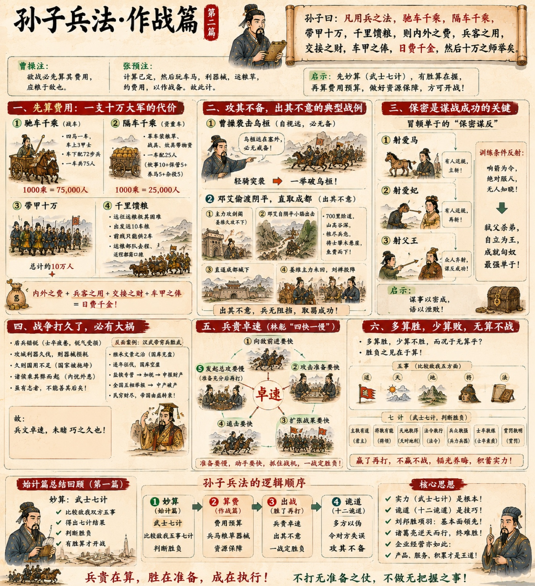
主讲人开启《孙子兵法》第二篇作战篇，指出孙子在计算胜算后开始算费用预算，包括驰车、革车、带甲十万等具体配置和日费千金的消耗。他引用曹操和张预的注解，强调打仗要先算花费和从敌人那里搞粮食。主讲人用企业经营的道理类比，说明预算和资源保障的重要性。接着，他批评汉武帝穷兵黩武导致国家破产，对比文景之治的治世与汉武帝的盛世，指出治世是自由自治、税收极低的社会。他提到汉武帝的盐铁垄断、加税和举报制度导致中产破产，并引用轮台罪己诏。最后，主讲人解释兵贵速胜，用隋炀帝和吴楚之争的例子说明持久战的危害，并引用林彪的四快一慢战术作为注解。
📖 全文解读 · 170句 · 13分35秒（点开看全文）
重温经典，一古鉴今。大家好，今天为大家来开启孙子兵法的第二篇作战篇。孙子曰，凡用兵之法，驰车千4，隔车千甚，带甲10万，千里溃粮，则内外之费，兵客之用，交妻之财，车甲之俸，日费千金，然后10万之时举矣。曹操对他的注解是，欲战必先算其废物应良于敌业啊。要打仗先算算花多少钱，想想能不能从敌人那里去搞到粮食。张裕的注解叫计算已定，然后玩车马，利气血，运粮草，约费用，以作战备故此计。他这里讲孙子兵法的逻辑顺序，先是妙算，要武士其计，看看有没有胜算。如果有了胜算在握，决定再开始打，然后就开始接着算算什么呢？算费用预算，要算算要花多少钱，于是孙子就开始计算了，要多少兵马，要多少钱。驰车签4的意思是什么呢？驰车就是战车的意思，四就是四匹马拉的那一辆车。因为跑得快，孙子的时代马蹬还没有被发明出来，人骑在马上厮杀还不稳当，所以没有骑兵，都是战车。司马法说一车车上配甲士三人跟着不足72人，跟后来的坦克的战术差不多，就是坦克在前面开，后面跟着一堆步兵，所以一辆战车是75个人，在战车上面有三个，下面有72个步兵。我们读史书常常读到叫千秤之国，就是说有1000辆战车叫75000人的部队，这就是他的军事实力。隔车千秤什么意思呢？隔车就是资重车，他运粮食的什么战具、炊具、衣服这些物资用革车来装。司马法说一辆革车配十个炊事员，五个保管员，五个管养马的，五个管砍柴打水的，一共25个人。所以1000辆格车就是25000人，加起来就是代价101000辆4匹马拉的战车配备75000人，1000辆自重车配备25000人，加起来就是10万人的一个军队。这么大的一个军队，还要千里溃粮，你还得给他运粮食，古代打仗运粮是个大事儿，你看诸葛亮不是有什么牧流，流马来去运粮，又很难运粮食。如果你远征匈奴的话，出发你要有十车粮食运到前线，部队只能给他两车。你为什么？因为你私车粮食被运粮的部队在去的路上就吃掉了，你还要留私车让他们回来路上吃，因为还有好几个月他才能返程啊，如果粮食不够，他们在路上就饿死了，所以这个比例还是比较高的。李全说，千里之外运粮得20人奉一人，就是用20个人的口粮才能运一个士兵吃的东西上去。还有迎来送往的一些使者啊、宾客啊，车甲器械的修缮啊，什么胶啊、漆啊，这些材料都是钱。兵马未动，粮草先行啊，日费千金，十万之师才能运转。所以孙子兵法第一篇讲实力对比，讲风险评估、胜算几何。第二篇就开始讲预算、讲费用，讲资源保障，这和我们企业经营的道理真的是一模一样。原文，其用战也甚久，则盾兵错锐，攻城则利屈久铺失，则国用不足。贾玲的注解是，战虽胜，人久则无力。兵贵全胜盾兵错，锐士伤，马匹则屈。意思就是战争是为了获利，如果你打的时间太长了，消耗太大了，就得不偿失了。九铺失则国用不足，就是长期征战，国家就拖垮了。所谓汉武大帝，就是一个深刻的教训。咱们在历史教科书上，还有一些什么电影电视剧上，看武帝的形象是相当的高大上。而事实上像他这么穷兵渎武，大多国家也被打拖垮了。他不仅仅把政府给搞破产了，而且全国人民都被逼着破产了。所以孙子的伟大就在于他不是因为自己是将军，自己是兵家，就拼命忽悠主公去打仗，好让他去建功立业。恰恰相反，他拼命劝你别打，因为他是真正的智者和真正的仁者，他是一个负责任的人。人性的弱点就是好大喜功了。不光统治者好大喜功，小老百姓也喜欢好大喜功。他当了炮灰，被填了万人坑，被搞得家破人亡，他还是崇拜那些好大喜功的统治者。汉武帝之事被称之为盛世。汉武盛世他继承的是文景之治，文景之治被人称之为治世。中国历史上的好日子就是盛世和治世了。人们都津津乐道是盛世盛世，天下却不知道治世才是真正的人间天堂。盛世你有可能会被搞得家破人亡，做了盛世赞歌当中的炮灰志士是什么？治士就是休养生息，税收极低。一般来说治士的税收都是三十税1，你赚了30块钱，你只要交一块钱的税，什么贸易、关税、过路费、过桥费，全部都没有。民营企业投资自由，别说什么负面清单管理，连负面清单都没有。竹海造盐、开矿炼铁，甚至你开铜矿来铸钱，全部自由。因为在古代的那个钱是记重植的，只要你的重量是一样的，那你就可以来进行使用了。跟现在的自由经济的国家一样，发钞票的银行也有，可以是民营的。文景之治和唐太宗的贞观之治被人称之为治士。简单的说，治世就是自由和自治的一个社会。小政府不去干预太多民间文化的经济和生活，法无禁止皆可违，而法禁止的东西很少，就比刘邦的那个约法三章可能也多不了几条。在这样的休养生机，民间的活力空前的释放，社会财富也会迅猛的增加。文景治世下来，到了汉武帝时候，国库的钱粮子，这些什么钱财粮食堆的已经放不下了。史书上说拴钱的那个绳子，那个麻绳都烂掉了，钱还没地方花，于是汉武帝就开始找地方花钱了。在现在很多人有一句话叫名犯强悍者，虽远必诛，也叫犯我中华者，虽远必诛。最近战狼2很火，这是愤青们说起这句话的时候，还是会满含热泪和激情。但是在当时这句话的背后，可是从政府到民间的全国性的破产。汉武帝这句话就是他发明出来的。汉武帝时期流传的一句话，名犯强悍者，虽远必诛。汉武帝年年穷兵渎武，开疆拓土，国库很快就空了。他开始搞国营企业。所谓的盐铁论，盐家你盐总归家家都要吃。有央企垄断，民间不许经营农业社会，你家家总要有镰刀锄头来去耕地。那央企垄断了开矿炼铁，民间也不许经营。中国由央企来垄断民国计民生形成第二税务局的制度发端于春秋时期，齐国的管子固化于汉武帝时期，一直到今天吃盐还是央企垄断，盐刚刚被开放出来，有民企可以经营。你看垄断了几千年，央企的钱很快也就不够汉武帝花了，他开始加税，加税也加到头了，他开始对社会财富的存量开始收税，要求全国中产以上的人向政府申报财产，然后刻意财产税，大家当然不愿意报了，或者少报了。汉武帝于是就下令全国人民互相举报，有虚报的邻居或者朋友，你都可以向政府来进行举报，只要你举报，就可以获得被举报财产的一半。这一下子，潘多拉的魔盒被打开了，官吏趁机开始勒索，没有虚报的也被污成了虚报，所有中产以上的人全部破产。到了汉武帝晚年，国家快玩不下去了。空前巨大的政治压力让他给全国人民写了一封检讨信，他说，朕继位以来所为狂悖，使天下愁苦不可追悔。自京氏有伤害百姓，迷废天下者惜八之。就是就我从当上皇帝以来，所作所为非常狂备，不羁天下。因为这因为我的这些狂狈，过的日子很苦，已经没办法追悔了，追悔莫及。今天如果有伤害百姓到的所有的一些制度就都废掉。这就是中国历史上第一份帝王的坠己诏，我们也把它称之为轮台坠己诏。原文是扶盾兵错锐趋利担获，则诸侯乘其避而起，虽有志者，不能善其后矣。故兵文卓速未度，巧之久也。就打仗打的时间太长，后方和外交都会出问题。如果兵疲气惰，力尽裁捷，诸侯列国都会趁你的危机而发起兵攻击你。到那个时候，再有智谋的人也束手无策。所以用兵只听说过老老实实的速战速决，没有听说过什么打什么持久。中国打过持久战，那那是因为日本占主导，那日本很难。如果以日本的视角上来说，他来打持久战对他极为不利。这是为什么毛主席提出了论持久战，因为对日本不利持久，而对于中国人来说，你在我本土作战嘛，当然我打的越久对我越有利，因为你的国力会被你所耗掉。但是对于我来说，地大物博，日本和中国不是同一个概念，中国的地域面积比日本大不知道多少倍。典型历史的教训是什么呢？是隋炀帝杨广。他的性格和汉武帝差不多，能力也很强，也是绝顶聪明的人我文武双全，能者多劳嘛。他给自己取了个年号叫大业，他要做一番大事业，开挖大运河就是他责备子孙的大事业。如果你只做了这一件，你就真的名随青史了。但是人生苦短啊，他要把集中力量把大事儿都干完，于是迁都洛阳，营建东都，又清真吐玉，浑三伐高歌丽，搞得名穷才尽，天下愁苦，为他造船工期之井啊，让工匠脚一直泡在水里，都生了蛆了。于是杨玄感、李密等英雄趁壁而起，天下大乱，杨广也就此丢了脑袋，隋炀帝就这么没了孙子。这篇兵法是写给吴王阖闾的，不过阖闾后来也成为了这一条的反面案例，就是吴楚之争。说是吴楚之争，其实发源起源于两个小姑娘在一棵树上争那个桑叶，他们抢这个棵树上桑叶是谁的，就回去自己家里去喂蚕。吵了一架，或许还动了手，结果双方家长们比较火爆，然后抄起家伙就打起来了，死了人。说双方的边防官就动用了军队，最后发展成两国大战，大战的结果就是吴军攻陷了楚国的首都瀛都，楚昭王逃亡了。这就是春秋战国史上第一次有诸侯国的国都被攻陷的事情。吴王那个兴奋，于是就待在颍都里作威作福。时间久了，越国看他在军队待在楚国国内空虚，就趁其避而起，发兵攻吴。楚昭王又从秦国搬来了救兵，阖闾和秦军作战不利，他的弟弟这个时候叫覆盖起了，一心也趁其毙而起，偷偷溜回国自立为王。阖闾赶忙就回国平乱，好歹应付过去了，夫盖呢就摔了自己的部下，投降了楚国，所以阖闾打了一个空前大胜仗，但是却不能见好就收，反而差点覆灭了，打伤元气，什么利益没捞到，自己国家还一团糟，这没有什么利益。当初为什么要打仗呢？人总是会为了这个做事而忘了自己的目的。往往就是这样，兵文卓素，未赌乔治久也巧的东西长久不了，就那一下，就像是时尚的衣服一样，也就穿一季最时尚的可能你也只能穿一次，就跟那些明星走什么戛纳红毯一样，标准的衬衣却能穿十多年。着素的意思，曾国藩把它理解为不疾而速。从战略上来说，从人生道路上来说，老老实实做事儿，踏踏实实积累，每天进步一点点，20年你就会超过所有人，功夫都在平时，都在基本面。从打仗来说，着速就是准备要慢，动手要快，这就是林彪著名的叫四快一慢的战术。四快是什么呢？向敌人前进要快，进攻时要善于出其不意，长途奔袭，抓住敌军。第二个快的叫攻击准备要快，抓住敌军之后看地形犬突破口，调用兵力、布置火力、构筑攻势、战斗动员等等，各项准备都要非常快。第三，扩张战果要快，突破一点之后坚决扩张战果，使敌军无法恢复防御。第四，追击要快，敌人溃退之后要猛追到底，使敌军无法逃跑和重新组织抵抗。因慢是什么？慢就是发起总攻要慢，要在查清楚敌情地形，选好突破口，布置好兵力火力，做好准备之后再发起进攻。林彪的四快一慢就是孙子兵法兵贵卓速的最好的注解。
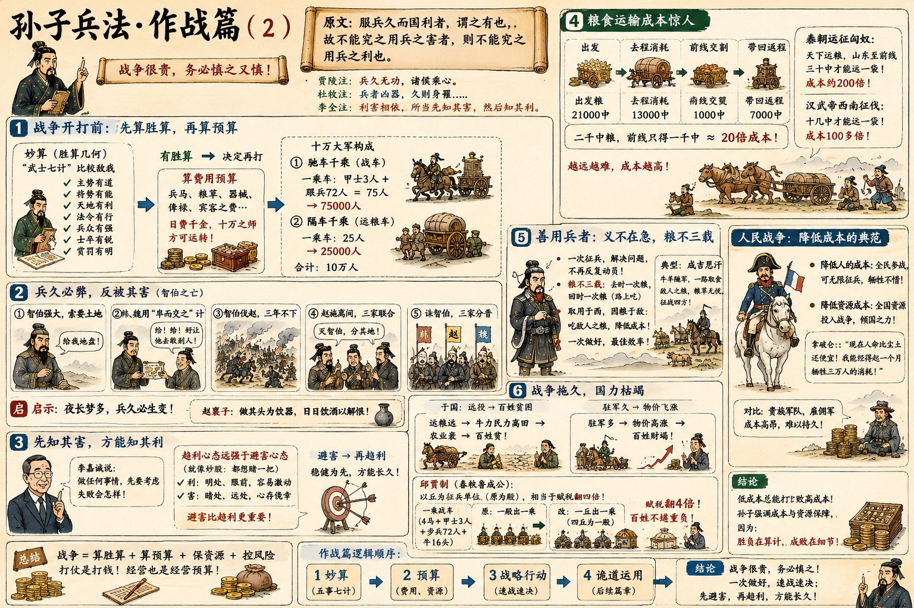
主讲人解读《孙子兵法》作战篇第二部分，强调用兵之害与利的关系。他举了智伯伐赵三年反被韩赵魏联手灭掉的例子，说明兵久生变。又用李嘉诚“先考虑失败”类比，指出避害比趋利重要，因为利可再得而害可能出局。接着解释“役不再籍，粮不三载”，强调一次解决问题，并举楚汉相争刘邦占敖仓为例。还分析了战争成本，如运粮损耗（十敌一当二十），用拿破仑人民战争降低人命成本、成吉思汗游牧民族解决粮草问题作对比，最后总结打仗就是打钱，经营就是预算。
📖 全文解读 · 164句 · 13分27秒（点开看全文）
重温经典，以古鉴今。大家好，我们今天继续为大家读孙子兵法，来读作战篇第二个部分，服兵久而国利者，谓之有也，故不能敬之用兵之害者，则不能敬之用兵之利也。贾陵的注解叫，兵久无功，诸侯身心。杜又的注解叫兵者凶器，久则身变。若治伯为诏，余年不归，卒为湘子所擒，生死国分。他说的这个治伯是春秋时期晋国的四大家族治韩赵魏当中的治士，四大家族当中的治士最强治伯做了晋国的执政，后来找了韩魏两家索要土地，两家都给他用了一个叫卑而交之的这个计谋。痛痛快快的就给了，因为你不给，你也打不过他，那给了好让他再去惹别人。智博志得意满，又去找那个赵襄子要。赵国这回要的是赵家最好的地，关键是赵家的祖先宗庙都在那里，那无论如何是不能给的。于是就开始打仗了。智伯裹挟着韩魏两家一起伐赵，许诺灭了赵氏，分土地给他们。这一仗打了三年，赵家支持不住了，这个时候就派使者找到了韩魏两家。他说智博是怎么回事，你们也都知道哪里会分土地给你，只不过是各个击破罢了。那不如我们三家联手灭了志士，分了他们家的土地。韩魏两家其实早就等着这一天了，就差一个人来去捅破这个窗户纸。于是阵前倒戈突袭杀了智伯，不仅分了智伯的土地，而且还灭了之后的国君。三家分晋，就是这段故事把整个晋国给瓜分了。后来的战国七雄里面，韩赵魏就占了三国治国，也算是一个文武全才的人。而且作为晋国的执政，他的政治经济实力其实远远超过其他三家。攻打赵氏。如果能够等待时机，周密准备，一鼓作气，三家很有可能被他一鼓作气就全部拿下晋国，很有可能就变成了治国。没有后来的三家分晋的韩赵魏了，但是夜长梦多，兵久必生，反为三家所害。赵襄子对于治博是刻骨的仇恨，把他的头还做成了七器，上了7，做了9，做了这个酒壶，每天都端着喝酒才解恨，这就是治博的下场。故不尽之用兵之害者，则不能尽之用兵之利。李全的注解叫利害相依，所身先知其害，然后知其利，也就是不完全了解用兵有害方面的人，就不能完全了解用兵有利的这些方面。李嘉诚说的这句话叫做，做任何事情先要考虑失败会怎样。经营和打仗其实一个样，都是九死一生的事儿，其实比打仗的胜算还要低，因为打仗就是双方，不是你胜就是我胜，经营是你不知道在跟谁打，任何的事情都有可能发生，我们不要一脸无辜，怎么会这样？他不能成功了都是自己的伟大，失败了都是环境的变化，环境没有义务来去等我们先避害，然后再去趋利。因为利今天没有，明天还有可能再屠，而害却有可能让我输掉老本彻底出局。所以避害比趋利要重要的多。为什么我们的趋利意识总是百倍于避害意识呢？就跟炒股一样的，就因为人们存在侥幸心理，都想赌一把。有人说大不了重新来过，不是每个人都有始出的命的，出局了大部分时候是没有办法重来的，因为那个牌局里的人都不会白给你，手上没有牌了，你拿什么入局呢？善用兵者，义不在疾，粮不三载，取用于国，因良于敌，故军实可阻也。国之贫于师者远疏，远疏则百姓平静，于师者贵卖跪卖则百姓才捷，才捷则急于秋矣。意思和大家来做一个解释。善拥兵者，义不在即。粮不三载的意思就是一次征兵就要解决问题，不要打仗打了一半人没了，然后再回国征兵。粮不三载的意思要求就会更高一些。不三载就是粮载的意思就是两年，也就是去的时候，再一次粮食，回来的时候，再送一次粮食给军队来去路上吃。那你中间吃什么呢？中间就要阴凉于敌，去吃敌人的，能克敌八成的那得了他的储蓄粮，那就不用国内自己去运粮了。楚汉相争，刘邦就是沾了先机，沾了秦朝留下来的中央粮仓熬仓。楚君饿的嗷嗷叫的时候，他始终去不愁吃不愁穿。所以一次把事情做对，一次搞定不反攻，这就是最大的效率。尽管可能时间会稍微长一些，但是看来做任何事都是一样，一次做好是最好的。国之平，于师则远疏，远疏则百姓平的意思，杜牧的注解叫粮食是重物，要运粮食就要有人，要有牛。农夫耕牛都远离了农田，没有人去耕地，那百姓不得不平，因为没有农作物了。管子说速行300里，则国无一年之计，肃行400里，则孤国无二年之计。素行500里则仲有饥色，就是运粮形成。如果有300里的话，那一年的存粮都会没有了。那如果你的行程是400里，那两年的存粮就没有了，那500里的全国人民都要饿肚子。所以诸葛亮北伐他得攒三年，每次攒三年去北伐一次。魏国也把他这个粮食的账算的很清清楚楚，知道下回他什么时候来，让他三年来一次。静于失者跪卖，跪卖则百姓才捷。意思就是部队所驻扎的地方，一下子来了那么多人，那周围的物价就会坑的一下就飞涨上去，特别是那围城的时候，太平天国时期，清军在金陵周围，就是南京的周围设了江北江南两个大营，一围就是好几年。周围的茶楼、酒肆、烟馆、妓院繁荣的不得了，物价飞涨，周围的老百姓也只能跟着忍受，这么高的物价，他们的钱就不够用了。才杰则急于秋毅，邱毅是春秋时期鲁成功所定的一个制度，叫做邱贾制，张玉注解叫国用急破，乃使秋初。垫付相当于税收翻了四倍，这个账怎么算呢？古代的征兵制度是这样，按照土地和人口来，司马法说六步为尺，100步为一亩。一买步亩，100亩为一夫，三夫为屋，三屋为一井，四建为141为丘，四丘为一殿。意思就是。征兵的时候，往往是以店为单位，每个店出一辆战车，也就是出四匹战马。假设三个人不足72个人，还要出牛十六头，这样我们可以算出那个国家的规模和兵力的规模，前面我们所说叫千秤之国，是有1000辆战车，75000人的一个部队，按照征兵制度可以算出来的。他的地盘是一千殿，也就是相当于有1000个镇子，这样大的一个国家的规模，鲁成功干了一个什么事儿呢？他一继位就推出了一个叫秋甲制度，还是一辆战车，四匹战马，甲士3300人，72步兵，十六头牛。但是他不是一个电处，而是为一个丘处，四个丘才为一殿，却相当于等等于赋税翻了四倍。所以大家说他乱来，非把国家给整垮了不可。孙子兵反复都在算这些数学上的账，就是强调战争很贵，打仗很费钱，人很贵、马很贵、牛很贵、粮很贵，战争成本很高，不要轻易去打仗。虽然很多年轻人都希望能够报效国家，能够叫厮杀疆场，但是没有经历过战争，不知道和平的可贵。我们反过来想，如果有一个办法能把某一项成本大幅量大幅降低，那不就是天下无敌了吗？这个跟经营一样，低成本总会打败高成本的。想到一个方法，拿破仑他开创了一个新的战争时代，叫做人民战争。这个词儿是不是很熟？对，我们毛主席也提出了人民战争的概念，人民战争是降低了什么样的成本的？主要是人民的成本，他不怕有人牺牲，没有什么义不在即之类的考虑，不光是可以无限的征兵，什么儿童团、妇女队全部可以投入到战争当中。所以拿破仑洋洋得意的说，现在人命比尘土还便宜，并且跨出海口，他说经得起一个月牺牲3万人的消耗。而欧洲其他各个君主国的贵族军队和雇佣军成本就比他的人民军队要高太多了。人民战争还降低了一个什么成本呢？就资源的成本，他把国家的一切资源全部投入到战争当中，所以他能赢。隶屈财旦中原内需于家，百姓之肺，实去其妻公家之肺，破车罢马，甲胄使弩己盾壁鲁秋牛大车十去其六志将误食于敌十敌中当午二十中，其干一担当午二十弹。这也是一个数学题，真真拖久了，那就力驱才捷呢，因为士兵都没有力气去打了嘛，也不愿意去打了，那财库也会被耗损殆尽，从政府到百姓都要破产了。原野之民需要运输粮饷，而以这个财粮来去供这些军队所使用。每个家庭都内耗过多，有十块钱都要用不了七块。政府如果要供应军火物资，战车、战马、甲胄、弓弩、及戈这种兵器，还顿和秘鲁这些是什么盾牌，什么秋牛大车、自重车和拉牛的这些车，所有的物资十块钱要花掉六块钱。所以志匠想到的一定是吃敌人的，因为吃敌人的一中粮是相当于自己的20盅。那中和蛋都是古代的计量单位，蛋一担就是十斗，就相当于120斤。这么算一斗就是12斤，一盅盅相当于六担，四斗为中，那就是778斤，一盅就相当于778斤粮食。为什么十敌一中相当于自己运了20种粮食呢？因为20盅是我们运粮的成本，千里运粮靠的是牛来拉。那牛需要吃东西，人也要吃东西，还要有劳力运粮的部队的保护等等。所以出发的时候21000中粮食，运粮部队去的路上就要吃掉13000中，到了前线交割一千中，再带7000钟回来路上吃，不然你就饿死在半路上了，就是一笔账，所以成本极高。人要吃牛马也要吃运粮的，牛马也得拖着自己路上来回来吃的那些草料就是集秆，疾就是豆秆草植有一个狮叫煮豆兰、豆脐，就是那个鳍，这些都是牛马吃的草料。每相当于十敌一担，相当于自己的二十担。秦朝在打匈奴的时候，使天下运粮，从山东开始运三十中才能运到1袋，你想这个成本是多少？这个纯统是200倍的成本。因为运粮靠的是人力，还有畜力，牲畜的力量，效率低，时间长。汉武帝通西南移数万人运粮也就是十几中才能运上去。一旦要有一百多倍的成本，所以孙子说20倍，那还是春秋时期，国家之间打仗都是平地，都在以开发地区。后来打匈奴去打西南夷，然后就翻山越岭不毛之地，这些运粮成本就更高了。日本侵略中国的时候也是一样，他是想先拿下东北，再拿下江浙，就获得了给养的基地，有粮食。如果在华的这些日军全部要从日本运粮运物资，他就支持不下去。所以中国就坚决不投降，拖住他，也使得中国成为四大战胜国之一，就是那样硬拖着他，让他进入到持久战当中，就不利于日本的侵略中国了。成吉思汗征服世界也是一样，在粮食上的成本也是关键。游牧民族在草原上他就赶着牛羊去走，每天羊奶牛奶、羊肉牛肉，牛羊一边走一边生大小牛小羊。所以他的部队一开拔就不需要后方来运输，到了前线打下城池就吃敌人的这是他的站边能够挥那么远的一个关键要素，就是能解决粮食问题。孙子的要求是善拥兵者，义不在即，粮不三载，成吉思汗做到了。所以打仗就是打钱，经营就是经营的预算，这是非常重要的内容，我们下期再见。
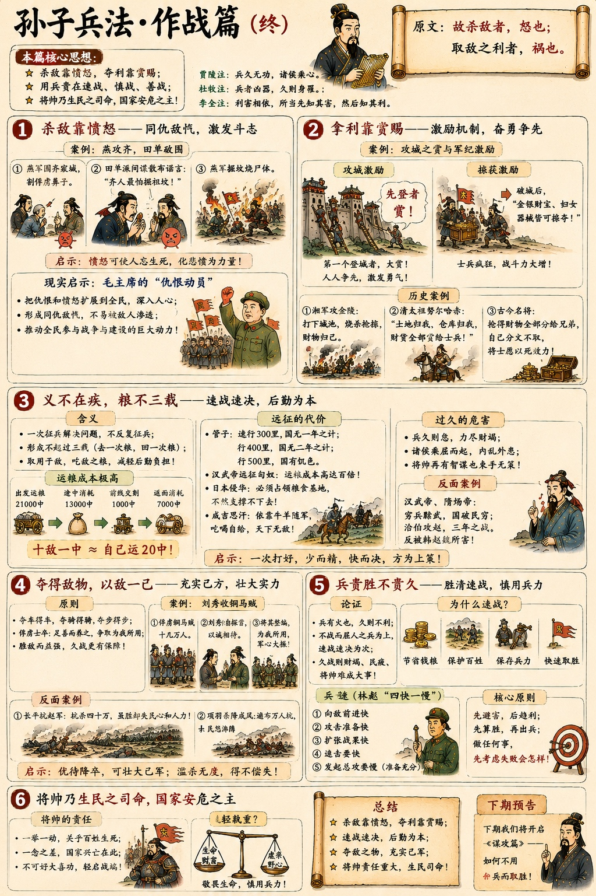
主讲人解读《孙子兵法》作战篇最后部分，核心论点是杀敌靠愤怒，夺敌靠奖赏。他举了田单利用燕军掘祖坟激发齐军愤怒、大破燕军的例子，以及毛泽东将仇恨战略用于阶级斗争，如白毛女故事引发战士愤怒。奖赏方面，主讲人引用湘军攻金陵后烧杀抢掠、曾国藩默许分财，以及努尔哈赤公开赏赐政策。他还提到李云龙缴获物资的兴奋，以及刘秀推心置腹收编铜马贼的典故，强调胜敌而益强。最后指出兵贵胜不贵久，知兵之将关乎国家安危，并联系到企业老板的责任。
📖 全文解读 · 148句 · 11分30秒（点开看全文）
重温经典，一古鉴今。大家好，今天继续为大家来读孙子兵法，来读作战篇的最后一个部分，原文是故杀敌者怒也，取敌之利者祸也。意思就是杀敌是要靠愤怒的，而夺敌是要靠奖赏的。军队开出去，必须给一个士兵杀敌的理由，让每一个人都能成为激情杀人的亡命徒。这就需要利用人的感情。有两种感情可以让人忘记生命的危险，一是愤怒，怒气上来就什么都会，不管不顾。二就是贪婪，人为财死，鸟为食亡。我们先来说愤怒，杜牧的注解叫万人非能红心皆怒。在我击之以事使然。也就是千万人的军队，你要让他们同时都恨一个人，恨一件事，这就是所谓的同仇敌忾，要想办法去击他。最典型的战力就是燕国去攻打齐国，围了寂墨这个地方。而田丹这个时候是齐国的将军负责守城。当时燕军把齐军的俘虏鼻子都给割了，齐国人非常的愤怒，于是更加坚定的去守那个寂寞的这个城。池田丹就想把这个愤怒放大化悲愤为力量，然后去突破燕军，去破了围城之围。于是他就派出了间谍到了燕军当中去散布谣言，说齐国人最怕燕军决他们城外的祖坟，如果汝籍他们的祖先，那他们肯定会崩溃了，于是肯定会投降，以求燕军来停守。这个时候燕军就上了钩，于是在城外掘祖坟，烧死人。齐国人在城墙上看见了每个人的眼睛都要喷出火来。田丹见士卒，这个时候他们的激情已经足以去做激情杀人这个行为了，于是率军出城作战，齐国人就杀红了眼，大破烟师毛泽东主席就是把仇恨发挥到极致的大师。在解放战争和解放之后的社会主义的改造时期，整个宣传的战略和文化的艺术就是围绕仇恨展开的。仇恨和愤怒不仅仅是军人，而且扩展到了普通民众当中，甚至搞人人过关仇恨考核。每个人必须对于阶级敌人要仇恨起来，要愤怒起来，于是就出现了那个演白毛女的小战士端起枪要来杀黄世仁的那个情况。但演黄世仁的那个人是一个演员，他是据说是葛优的父亲。这样一个深入人心的仇恨的战略，不仅仅国际军队同仇敌忾，敌人的间谍也没有办法渗透到我们的后方来，因为你没有办法去让他自己恨自己。我们再来说赏曹操的注解，叫君无才势不来，君无赏士不往。我们常说什么部队军纪好，有什么什么部队军纪不好，其实军队的纪律好与不好，主要在于主帅的战略目的。军纪好，秋毫无犯，那是有政治目的的。军纪不好，烧杀抢掠、奸淫辱掠，样样都来，这个是激励机制。往往一个城久攻不下，城里的人死都不投降的时候，对敌人秋毫无犯的这个必要也就没有了。主帅就会激励自己的属下和士卒来去做到动员。他说破城之后，大略3日或者大略7日，城里的东西随便抢，那姑娘也随便抢，抢到的都归自己。这个时候士兵就会疯狂了，湘军去打金陵城的时候就打太平天国，什么军机都没有，烧杀抢掠奸淫妇女，抢光财物，然后毁灭证据，一把火把天王府给烧了。这个时候回报给西太后慈禧，他说南京城什么财务都没有，曾国藩是当世的大儒，但是他的部队为什么会这样呢？烧杀抢掠什么都来，这显然就是之前曾国藩做的承诺，朝廷也没有钱给我们，他没有更多的钱让我们来扩充军队，来发粮饷、军饷。所以我们湖南人民自己自愿来为朝廷打仗。打下来了，土地城池归国家所有，那钱财当然就要归兄弟们所有了，这就是潜规则。那么慈禧太后怎么样呢？说你说没有就没有，根本就不去问财务的事情，只要睁一只眼闭一只眼，你们都运回湖南老家去吧，把这些钱。有的时候皇上自己也会公开宣布这样的政策。清朝灭掉明朝攻打四川的时候，清太祖努尔哈赤就下令他说所得的州县全部归我土地归我仓库，财货全部赏给士兵，国家所誉为疆土尔的意思。古今的名将都有一个共同点，就是舍得给大家分钱。最典型的就是凡是抢得敌人或者是民间的财物，全部分给兄弟们，自己分文不取。我只要皇上赏赐给我的其他的东西，抢来的全部归你们。因为他自己不参与分，所以觉得分的不公平的这些人也就没话可说了。这样大家都会愿意跟着他打仗，他的胜仗就会越多，升官就会越快。原文，车站得车时乘以上，赏其先得者，而根其精奇啊。车杂而乘之，足善而养之，是为胜敌而益强，故兵贵胜不贵酒，故知兵之将，生民之私命，国家安危之主也。意思就是车站得车10乘以上赏其先得，为什么呢？要缴获俘虏，对方要十辆战车，10乘就十辆战车。我们知道一辆车的编制是75个人，按照正车执法，五个车为一个队。这时候就设一个管理的人叫普业，设普业这个职务一个人，十车为一个官，设组长一个人。所以十车就是一个770人的一个战斗编制，要把他们全部俘虏，我方至少投入要上千人的部队，上千人才能打下770人的一个编制的部队。这1000人当中，如果你全部封杀，那个就叫滥杀无度，不能起到真正的激励作用。国家也没有那么多钱去封赏，所以赏其先得，就是第一个夺得战旗的那个士兵，因为先得往往都是出谋划策的那个人，因为他先发动攻击，别人才会跟上，一哄而上。攻城也是一样，第一个登上敌方城墙的人一定中大奖，这样才能人人奋勇争先。所以对于站在后面指挥的主帅来说，你要看清楚谁是第一个登上城墙的人，是和指挥战斗同样重要的一个事儿。因为如果你搞不清楚这些事儿，你就不知道该奖赏谁，下回也就没有人去奋勇争先了，那你还谈什么赏罚分明呢？交战本身就是互相抢掠军火物资是以敌一己。用敌人的物资来去丰富自己的一种方式。那就跟那个电视剧亮剑里面，李云龙每次打胜仗总是高兴的说，发财了，老子发财了，就是这个道理。古人用兵肯定是车夺车，骑夺骑步夺步。吴起和秦军作战号令三军，他说如果车不得车，骑不得骑，图不得徒，虽破军定无功，这就是一个考核标准，不是杀敌战胜就行了。战车部队是一定要夺对方战车的，骑兵一定要是夺对方骑兵的那个马和装备的步兵是一定要缴获敌方的步兵武器的，这样才能论功计赏。夺了敌方的战车，马上拔掉他的军旗，插上我方的军旗就可以混编到我们自己的车队里面去投入战斗，俘虏了对方的士卒孙子他说足善而养之，要对他们好，讲清楚我们的政策，争取他们加入到我军，为我所用。孙子能这么想是很不容易的一件事情，因为在古代战争当中，杀降是很普遍的，因为如果你俘虏了几十万人，你不好控制他他是一支军队，你还不敢信任他，你还得管他们吃，管他们喝，所以往往在古代战争当中是一坑了之的那像长平坑赵军，赵军40万，这就是最典型的战力。项羽打仗更是遍地都是万人坑，他动不动就坑个秦军20万。所以秦人对于项羽是非常的憎恨的，恨之入骨，优待俘虏，为我所用。最典型的战力是汉光武帝刘秀，刘秀破铜马贼于南阳头，马贼是一个山寨，就是一个匪徒的名字，俘虏了十几万人，整编到自己的部队里面。但是人心没安定下来，因为同马贼之前降过一次，然后又叛乱，然后又被打败，然后又降。那这个时候所有的贼帅，就是那些山大王和那些大当家、二当家，就觉得刘秀是肯定不会相信自己的。刘秀也知道他们的心思，也知道他们在想什么，就说你们各自回营，我来慰劳将士们之后，刘秀仅仅率领了十余骑，就带了十几匹马亲自去探望铜马大营。到了这个匪这个山寨里面去，展示了以命相托的这种诚意。这些山寨里面的大当家、二当家就感激涕0。他说萧王推赤星，赤星至人腹中，安得不投死虎，就是把自己的一颗痴心放到别人的肚子里。你看这么大的诚意，这就是推心置腹这个成语的由来，就是刘秀的这个事儿。刘秀于是就得了统马的十几万的军队，兵士大振，这就叫胜敌而一强。如果你杀敌一千，自伤八百，那不是胜，那是两败俱伤，只不过对方比你更惨一点而已。所以孙子的思想是求全，先保全自己再追求全胜。最好敌人我也保全你，他的整个军事思想是胜战的思想，就不战的思想和速战的思想。兵贵胜不贵酒。曹操的注解叫久则不利，兵有火也，不己呛将之焚也。结果他自己也被赤壁一把火给烧了。故知兵之将生民之司命，国家安危之足也。司命是天上管人命生死的这个星宿大将，就是管着人民的生死寿命的这个职务的这个人。长平之战，你看赵国如果有廉颇做司命的话，大家的命都还在。你换了赵括来去做死命，于是40万人就被坑杀了，国家也就危机了。第一次世界大战打成了绞肉机，断送了无数青年人的生命。于是那些司命其实应该承担自己的罪责的。其实我们每一个人都有自己的生死存亡之道。我们常常说企业的老板，你叫笔下有财产万千，因为那个字不能随便签，笔下有人命关天，笔下有是非曲指，笔下有毁誉中间。无论你手上拿了一次枪，还是拿的是笔，还是汽车的方向盘，你的举措都关乎着他人的财产生命的安全。孙子就教会我们这样的一个敬畏心和责任感，这是作战篇。我们下一期就会和大家来讲谋攻篇，我们下期再见。
谋攻篇 · 第三
5/5 段最高境界是不战而胜。能用谋略、外交解决就别动手，硬拼攻城是下下策。
- 全胜思想：理想结果是把对手完整收为己用，而非打成废墟。
- 五种胜算：知可战否、识众寡之用、上下同欲、以虞待不虞、将能君不御。
- 知彼知己：信息对称是一切判断的前提，呼应末篇《用间》。
竞争里最聪明的赢法不是硬刚：用策略、信息和关系取胜，出手前先把双方摸清。
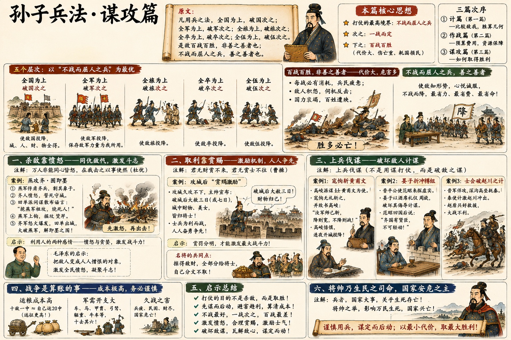
主讲人解读《孙子兵法》谋攻篇，强调‘不战而屈人之兵’是最高境界。他举了三个案例：一是曹操伐江南，刘琮投降得徐州，但孙权不降导致赤壁之败；二是楚汉之争，韩信因嫉妒郦食其说降齐国，违背‘全国为上’原则，突袭已降的齐军，导致郦食其被烹、齐王被杀，自己埋下杀身之祸；三是东汉寇恂斩高峻军师皇甫文，使其投降，说明‘上兵伐谋’是破坏敌方计谋。他还引用晏子折冲尊俎、秦伐晋时赵盾因赵川冲动而被迫出战等故事，强调谋略高于硬战。
📖 全文解读 · 158句 · 12分15秒（点开看全文）
重温经典，以古见今。大家好，我们今天继续为大家读孙子兵法来读谋攻篇。孙子曰，凡用兵之法，全国为上，破国自治。全军为上，破军刺之，全吕为上，破吕刺之，全卒为上，破卒刺之，全武为上，破武次之。是故百战百胜，非善之善者也。不战而屈人之兵，善之善者也。孙子兵法的第一篇讲的是计，第二篇讲的是预算，第三篇讲的是攻臣，这是次序。李权的注解叫和政为战，为臣曰公，所以这一篇是在作战篇之后才会出现的这就是他的顺序。曹操的注解叫欲攻臣必先谋谋什么呢？谋就是王羲注解的，叫谋利害关系，趋利避害。打仗不是为了杀敌，因为杀敌是要付出代价的，杀敌一千自杀800，所以最好是不战而屈人之兵，小之厉害让他投降，全城全人、全财、全祸全部归于我，这是最好的。这就是孙子的求全师思想，全国为上，破国自治。曹操的注解叫兴师深入长驱，居其城阔掘其内外，居敌国来伏为上，以兵击破，败而得之。其次也把敌人围起来让他绝望，认清形势投降那是最好的事儿。他如果做困兽之斗，我们去攻击他，那就要付出代价，得到的也不是一个权臣，而是一个破产。更何况战争上什么事情都有可能发生，还不一定真的能够完全胜利。曹操伐江南，刘宗投降曹操，于是就得了徐州，他还得了蔡瑁和张允的水军，这是全国为上。之后孙权不降，于是他就有了赤壁之战，曹操大败，从此之后再也没有能够进军到吴国去。楚汉之争就是一个例子，讲的是刘邦和韩信。刘邦派了立时机，这个谋士说降了齐国，这就是权国为上。齐王田广投降了汉王，刘邦这个时候历时机向齐王保证说，如果汉军来攻打你，你就把我扔到锅里煮了算了，自己留下来做人质。然后每天和齐王在一起喝酒聊天，齐王也听信利时机的话，撤去了齐国的守背，没想到韩信一听，说利时机一介书生凭借自己三寸不烂之舌，就说服了一个强大的齐国，功劳竟然比他还大。于是心里不爽，开始抢功劳。韩信于是按照谋士彭通的计谋，突然发兵攻打在立夏的齐军。这个时候齐军没有防备，被韩信一鼓作气全部拿下。齐王以为是利时机出卖了自己，于是真的把他扔到锅里煮了。齐王自己也在随后的战争当中被杀了。韩信是不是不懂全国为上的道理呢？他当然不是，他在之前去拿那个燕国去打下。燕国就是挟持了魏王豹，然后又抓了夏说斩了陈安军的兵权。然后用广武军的计谋派了一个使臣，拿了一封信，就说想了燕国也是全国为上，那么齐国降了，为什么他还要去打对方呢？是因为降的不是他，是别的人说下来的，谈下来的，于是他就要打，于是就要破国自治。他把已经属于刘邦的齐国打下来，杀掉齐军，这个其实也是属于刘邦的兵马了，因为已经投降了，再转头去要挟刘邦封他为齐王。可以说这个时候其实韩信已经埋下了之后他会遭遇杀身之祸的种子了。王夫之说韩信其实死的不冤，因为他不是真心的去效忠于刘邦，他是随时和刘邦去谈条件，算斤两，要一些有利于他的一些条件的。齐国是讲中医的实在人，降了就降了，绝悟二经。韩信是为了抢功劳，于是挥师机降害得利时机被烹田氏整个宗族被灭，血流成河，所以韩信死的不冤，齐王的田广和立时机才是真的冤。全军围上，破军刺之。全旅为上，破吕次之。全卒为上，破卒次之，全武为上，破五次之。这讲的都是战斗的编制。军军一军就是12500人的一支部队，旅是500人的部队，卒就是100人的部队。五是最小的作战单元，单元就是五个人的一个部队。这就是说不管到了哪一级，你是一个国也好，一军也好，一旅也好，一卒一武都好，都要求全以不战而胜为最好的方法。所以，百战百胜不是什么好事儿。用李克对魏文侯的话来说，叫树胜必亡。为什么？为什么叫打了几次胜仗，你的国家反而危险了呢？每一次胜利其实都需要有代价的，都要有所消耗，百战则鸣疲，百胜则阻焦。如果你又疲惫又骄傲，对方憋住了劲想要雪耻，想要干掉你，可能下一仗就会翻盘。再说了，如果你打了百战，都是百胜，你还在打，那只能说明一件事情，究竟你这个肾的质量并不高，没有解决根本问题。所以不战而屈人之兵，是善知善者也，传席而定，就给了一封习文，写一个告示就能平定天下，这是最好的了。四之也要一战而定，打一仗就能解决问题，百战百胜其实本身就是问题。原文上兵伐谋上兵伐谋不是说打仗你要用计谋，而是说你要打仗要破坏对方的计谋。计谋双方都有，双方都是谋定而后动，把敌人的谋先罚掉，他就动不了了。最典型的战力就是东汉时期寇荀去讨伐高峻，高峻派他的谋士黄甫文来使者来做使者，来去觐谏当时的寇巡。寇巡二话不说就把他给杀了，然后就给高俊送去一封信，说你的军师无礼，已经被我斩了，你要投降就赶快，不投降就守着，等我来打。于是高俊第二天就开城，投降了很多他的将领。当时跟着寇巡那些将领看不懂，就问寇巡说，两国交兵不斩来使，你为什么还没开战，你就斩了他的使臣，他却连滚带爬的投降，而不是很生气的，然后去跟你进行对抗的。寇雄说，这是黄甫文，黄甫文不是一般的人，他是高俊的军师，是他的主心骨。高骏盼他来其实就是为了查探虚实的，回去之后定一个计策来做决策。留之则闻得其计，杀之则俊亡其胆。反。就是如果我把他留下来，黄甫文就知道怎么对付我了，如果我把他杀了，这个高俊就不知道该怎么办了。于是就不能把他放走，于是就把他杀掉了，这就叫上兵伐谋。当然这是一个极端的案例，直接把主谋给杀了，一般情况下是没有这样的机会的。还是注意分析判断，去破坏对方的计谋为主。第二个案例叫折冲尊祖的一个典故。折冲是古代的一种战车，叫折冲计，他主专门阻挡对方的冲锋，对方冲过来挡住他，就像一把刀折断一样，他折断他的冲锋，尊祖的意思就是酒气折冲尊祖指的意思是什么呢？就是不用武力，而是在酒席谈判当中去制敌取胜。讲的是什么？讲的就是春秋齐国时期的那个丞相叫晏婴晏子的故事。晋平公想攻打齐国，于是却派范赵为使去刺探一些情况，齐景公设宴招待。九到半旬，大家都有点微醺了。这个时候范昭就对齐景公说，想讨一杯酒行不行？从您的杯中去讨杯酒喝行不行？景公说，这有什么不行，来人把我杯中的酒倒给客人，范昭一口就干了。景公的酒下人正要给双方斟酒，燕子就突然大声喝道，说前万我们要给国君换一个新的杯子。于是翻舟就不大高兴，假装自己喝醉了，然后起来跳舞。于是就对太师说，我想跳支舞，能为我奏沉舟之月吗？太师冷冷的说好，我们没有人会奏这个音乐。于是就把范昭给踢走了。酒宴吃完了之后，齐景公说，你们今天怎么回事？这是大国使者，这个靖国使者来了，来看看我们的政治，你来惹他生气有什么好处？那不是惹麻烦吗？这个时候燕子就说这是给他关政，看看我们的政治究竟如何。你看这个范范昭绝对不是不懂礼貌之人，他故意跟我们挑事儿，君臣有别，他要国君杯子里的酒，就是在挑衅，就是在试探。所以我给您换一个杯子，也不喝跟他同一个杯子里的酒，以免乱了尊卑。你看在古代尊卑有序是一个非常讲究的礼仪和礼节。太师说陈舟之月是天子之月，不是人辰能无的，当然不能给他奏这个音乐了。陈舟之乐是天子行礼仪的时候会放的一种音乐，这是只有天子才能有。所以当范昭说能不能有演奏沉舟之乐的时候，太师当然说这不行，不能给你演奏这首乐曲。范舟回到了晋国，回报给了晋平公，他就说齐国是不能打的，我想侮辱他的国君，但是没想到被他的这个丞相给识破了。我想乱他的礼仪，但是又被太师给识破了，齐国是有贤臣的，我们不能随便打。孔子就赞叹这件事情，他说不越祖尊祖之间而折冲于千里之外。晏子之威也在举杯谈笑之间就伐掉了进攻齐之谋，还退了千里之外的敌军，这就讲的上兵伐谋。第三个案例讲的是春秋时期的秦伐晋，这时候进军的将领叫赵盾来去抵抗这个敌人。上军就是前锋，左瑜便就说秦军远来不能持久，我们深沟高垒把他耗走就行了。秦军打也不是，退也不是，还真的按照晋国的说法，就直接用了一个很深的战略纵深去挖了很多战壕。那打也打不过，弄也弄不了，所以很我一点办法都没有。这个时候秦伯就问士惠和怎么卖世，会说这一定是于田的主意。不过禁军当中还有一个人叫赵川，是赵盾的棠植，又是禁军的女婿。这个人不懂军事，恃宠而骄，好勇而狂。而且他最不服的就是于平当了君佐，就当了这个左前锋，咱们去骚扰赵川的部队，他肯定会出战的。于是依计而行，骚扰赵川赵三追出来没追上。回去之后非常愤怒，就说裹粮作假。我们在这里吃着粮食，穿着兵士的铠甲，就是为了杀敌的。敌人来了不打我们，这是要干什么？手下的人说这是在等待时机。赵川说我不管他们有什么谋，如果他们不打，我自己打。于是率领本部一起去出战。赵盾听说赵川冲出去了，拿他没办法，那还得救她，他毕竟是这个王的女训员，能不救她吗？只能全军出动，于是跟秦军大战，一日不分胜负。寇寻这伐谋是直接把敌军的主谋给杀掉了。燕子的伐谋，是伐掉了敌人的未臣之谋，士会之伐谋是破了敌人以臣之计，不能因为你的队友是猪，你就跟着做猪。所以这三个案例就是伤兵伐谋的最典型的三个案例，值得大家的思考，我们下期再见。
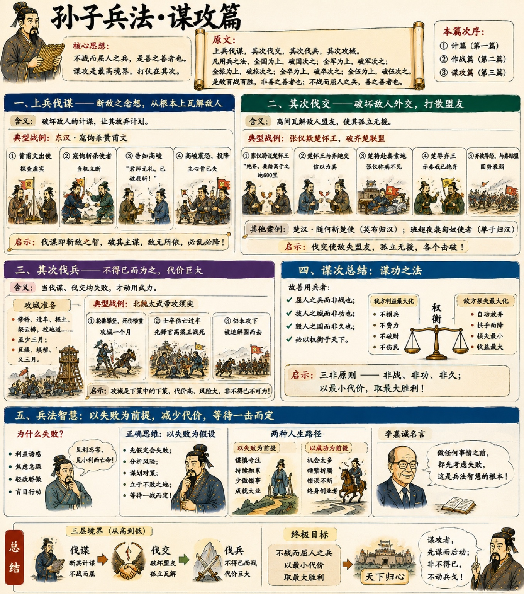
主讲人继续解读《孙子兵法》谋攻篇，重点讲解“伐交”和“伐兵”。他举了张仪破坏齐楚联盟的案例：张仪以600里土地诱骗楚怀王与齐国断交，楚怀王上当后，又派勇士辱骂齐王，导致齐楚彻底决裂，最终楚国大败。主讲人指出齐王也犯了错误，如果齐国能帮助楚国，联盟会更稳固。接着讲了随和杀使伐交的案例：随和直接闯入楚国使者住处，宣称英布已归汉，并逼英布斩杀楚使，迫使英布率军归汉。还有班超夜袭匈奴使团，迫使鄯善王归汉。关于“伐兵”，主讲人强调攻城是下策，需要准备数月，且伤亡惨重。他举了北魏拓跋焘攻须臾城失败、傅作义守涿州城成功的例子，说明攻城之难。最后总结谋攻原则：非战、非攻、非久，并以失败为前提思考，避免见利忘害和焦虑犯错。
📖 全文解读 · 177句 · 14分11秒（点开看全文）
重温经典，一古见今。大家好，我们今天继续为大家来读孙子兵法，来读孙子兵法的谋功篇。上兵伐谋其次，伐交其次。伐兵伐谋就是伐掉他的计谋，断掉他的念想，从根本上就把他的念头给伐掉了，让他发现自己国家的条件不具备，风险很大，胜算也不多，让他放弃自己的计划。伐交呢，就是破坏他的外交，打散他的盟友。中国历史上讲到外交，讲到伐交，自然会讲到一个成语叫纵横跋阖，这就是伐交干的活。苏秦张仪合纵连横，这就是伐交的典型人物苏秦合纵。因为在中原大地上，六个国家是从南至北纵向排列，所以合纵就是合六国之力去抵抗强秦，让秦国15年都不能东向，不能往东边去打。张仪来了，张仪来了之后就连横游说六国，一一与秦国结盟，以求能够自己的本土安全，破坏六国之间的合纵计划，以便孤立每一个小国家，然后各个击破纵横这个词就是合纵连横的简称而来。张仪法楚怀王和齐国的这个外交的政策，就是伐交的一个典型战例。张仪为了破坏齐楚联盟，齐国和楚国的联盟计划访问楚国，然后引诱楚怀王，他说如果您和齐国绝交的话，那我联盟我们秦国，那么秦国愿意给到商余之地600里给到您。楚怀王非常高兴，马上就和齐国断了交600里土地，这个打仗可不一定打得来的，然后又派个将军去秦国去收地，你不是答应给我600里吗？这个时候张仪称病不出，就一直都没有见个楚国的将军，三个月都没有见楚国的这个使者。楚怀王不仅不思考会不会出了什么纰漏，他反而去检讨自己。他说肯张仪肯定是不相信我已经和齐国真正断交了。于是就派了个勇士去了齐国，辱骂齐王。他以世信于秦，也告诉秦国，我真的跟齐国断交了，你看我还辱骂齐国的君主。齐王莫名其妙的受到了侮辱，勃然大怒，不仅和楚国马上绝交了，还和秦国马上结了同盟关系。这个时候张仪出现了，接见了楚国的使者，给了他一个地图，他说这就是我给你的兑现的承诺。六里地少了两个陵，原来答应给他600里，这个时候楚怀王大怒，发兵攻打秦国。你要想没有齐国的联盟，楚国哪里打得过秦国于是果然大败而归，楚国就此开始了他的迅速衰弱的时期。在这个案例里，其实不光只有楚王受到了教训，其实齐王也受到了教训。秦国伐的是楚国的胶，何尝不是伐的也是齐国的胶呢？正如有一句话说，你的队友是头猪，你不能也跟着做猪吧。秦楚开战，如果齐国这个时候能帮楚国一把，那楚国必将是羞愧感激齐楚联盟也会更加的稳固，真正的敌人秦国的战略就会破产。所以上当的其实不仅仅只有楚怀王，齐王也一样上当了。前面假伐谋是有直接杀掉主谋的，同样伐交也是有直接杀掉他国的外交使节的。在楚汉相争的时候，英布是淮南王，他作壁上观不去理会。楚汉相争，刘邦和项羽其实都派出各自的使者去拉拢英布，英布心里其实慢慢已经倾向于汉了，倾向于刘邦，但是还是犹犹豫豫，依然在楚国使者住的那个宾馆里唠嗑、喝酒、聊天。楚国的使者就催促他快点发兵，来帮助楚国去打那个刘邦的团队。汉室随和，这个人的名字叫随和，但是他一点都不随和，他当机立断看到了楚国的使者和英布在喝酒聊天，直接闯进楚国使者住的宾馆。然一屁股坐在楚国使者吃饭聊天的上座，他大声喝道说淮南王已经归了我们的汉，已经归了刘邦的团队，你发什么兵？楚国大惊，他要走，马上就要想离开。英布也愣了，说我什么时候答应你这个事儿，随和再大喝一声说，我不能让他走了，赶紧杀了他。英布这个时候被逼到了墙角，也是没办法了，不听也得听了，于是只能依了随和就斩了楚使，率军全部归了刘邦，杀始伐交。还有一个著名的案例就是班超，班超出使西域到了善善这个地方。今天在新疆的罗布泊西南的这个位置，有一个小国单善国单善王对于班超一开始很热情，过了几天之后突然变得很冷淡。班超就在想为什么？多方打听之后，原来知道北匈奴也派了使者，单善王正在两边犹豫，到底是和北匈奴结盟还是和汉结盟。班超这个时候就看得出来，到底是厉害的外交家，浑身是胆。不仅是外交家，他还是一个很好的将军，率领了自己的部下36个人夜里突袭了匈奴使者的兵馆，把匈奴使团全部杀光，然后提着使者的人头去占了单善王。单善王一看，被吓破了胆，这个匈奴的使团死在了我的国里，那麻烦大了。于是他也交代不了这个事儿，只能归降汉朝，派出了王子到了长安做任质。其次伐兵，那个是在伐谋伐交都弄不成的情况下，才不得已不那才动刀兵。姜太公说真胜于白刃之前，非梁将也，就是在正儿八经拿白刀子尽红刀子出来去打仗的这种将军，可不是很好的将军，其下功臣之法为不得已羞鲁逢温，具气械，三月而后成具焉。又三月而后矣，将不胜其愤而以复之。杀士卒3分之1而臣不拔者，此攻之哉也。攻臣是下策，不得已而为之，实在没办法，你才能攻臣。修辱逢瘟的意思，鲁是那个盾就可以挡住整个身体，那个剑射过来的时候射不到人的身体。冯温是一种四个轮子的工程车辆，然后把什么猪皮牛皮蒙在上面，算是古代的装甲运兵车，里面可以藏十几个人，然后一直推到城墙下，然后就开始攻城。其他的一些器具，比如什么云梯，什么木幔，都是工程设备，这些东西准备你至少要三个月的时间。巨烟就是土方工程，就推土为坡。可以登高和守城的士兵来去打仗。因为城墙很高，你必须在外面堆土堆堆成一个陡坡。然后你可以走上去，走到城墙上去跟对方的士兵来进行作战。其他的工程，比如什么挖地道、搭桥，然后挖土豪，然后去运土填一些坑等等，这些准备也得花三个月时间。工程是一个很慢的功夫，是一个细致活。如果将军很有急躁的话，搞那个已赴战术，就是让士兵不断的往上爬。我们以前看到的各种影视剧当中，都是拿个云梯，一个梯子架在城楼上直接往上爬。你往上爬，上面的对待你的方法可多了，没事就射箭、扔火、扔石头、倒开水，然后倒油，这很容易就把你给打下去了。对，以附战术又叫飞蛾扑火战术，完全就是送命的，所以攻城是非常惨烈的。是下策中的下策。孔子的思想一贯是赢不赢先不说，关键自己先别输，胜了敌人不等于赢，关键你自己要变得更强还是变得更弱，这是你要考虑的。得不偿失，千万也别草菅人命。功臣不拔的典型战力就是北魏太武帝拓跋焘去攻打须臾。或许这是少数民族兄弟比较豪放，他去攻城的人倒也是玩的潇洒。先派使者进城，找这个刘宋守将葬职邀酒喝。葬植也一点都不客气，拿了几个瓦罐过来，叫大家伙撒了几泡尿给他送过去。拓娃韬非常生气，马上就下令攻城，士兵轮番攀登，并且下命令叫退后者杀。结果攻了一个月，士兵的这个尸体堆到城墙那么高，死者过半，还杀了自己的先锋官高梁王，最后城还是没有攻下来。拓跋涛见到了伤兵满员，他实在没办法，到处都是瘟疫横行，疾病横行，又怕被人断了后路，只能永恨解围而去。民国的名将傅作义，是以和平解放北平而闻名的。事实上他的真正的将名是来自于中国守城第一将最能守城，他的成名之作就是涿州之战。在执奉大战的时候，奉君得胜，傅作义当时是直系的将领。傅作义带了一支孤军坚守在涿州城，里面没有粮草，外面没有支援，但他就是不投降，奉军5万人去攻打他，几千人打了两个多月，工臣总指挥是民国少帅张学良，飞机、大炮、燃烧弹各种狂轰滥炸，然后恨不得把卓宗臣都给轰平了。傅作义还在打，继续久攻不下。这个时候，奉军首领张作霖非常生气，他说这科学怎么打到现在还没打下来。于是他就下令整点高科技的技手段，他把张作霖扔进去，五百多发毒鸡蛋扔到城里去了。毒气弹打完之后，那奉军再次进攻，傅作义还在打，还是没有是输，继续把奉系军队给打退了。张作霖也服了，就跟张学良说，这小子不投降，我们也被打了，那就围起来把他饿死了。这个时候阎锡山，那个时候是西南总指挥，看了什么没打打的必要就给傅作义说，算了，那我们就议和。傅作义得到了领导的指示，这个时候才和张学良签了合议，接受枕边。后来林彪打长春，就用了张作霖的这个恶自绝威而不打，把国君给饿的投降了。原文，故善用兵者，屈人之兵而非战也，拔人之城而非功也，毁人之国而非久也，必以权争于天下，故兵不盾而利可权，此谋功之法也。孙子这里总结的叫谋功，谋功就是谋权原则，自己不损失什么，敌方的资产也不被破坏，这个时候我们就能获得最好的收获。你要想全力全部取得你真正的战果，你就要做到三非，叫非战、非攻。非久不战而屈人之兵，不攻而拔人之臣，不久战而毁人之国。孙子的思想是做任何事情之前首先考虑风险，然后考虑代价，第三才会考虑到自己的利益。有两样东西最能驱使人犯错，一个就是利益诱惑，第二就是焦虑。人们常说见利忘义，其实更普遍的说法叫见利忘害，见到利益就难免人为财死，鸟为食亡，见小利而亡命。其实焦虑也容易让人犯错，为什么呢？人一焦虑就想有所动作，你要他非战非功，要他等他忍不了。那战场上的统帅在生死存亡之间，如果你有一刻没有一刻他是不焦虑的，所以他就是特别容易出错，你要能够忍住，这是非常关键的。如何避免呢？就是以失败作为假设的前提来去考虑问题。我们习惯性的思维方式就是以成功为假设你做一件事儿是为了把它干成，那我思考、分析、判断、谋划、决策都是围绕如何成功，这其实很自然的。但是如果你打仗要去思考一件事情，我老想失败，那还叫兵法吗？但是孙子兵法的出发点就不是这样，他是处处以失败作为假设前提的。首先假定这件事儿会失败，再去思考、分析、判断、谋划、决策，围绕的问题都是如何避免失败，减少代价，立于不败之地，然后再用计等待，等待一战而定。有的时候经营是不是也是这样，我们可以思考一下，为什么有的人能够专注坚持，默默无闻，20年磨一剑，最终成为行业领袖。而有一些人东一头西一头，今天干这个，明天的干那个，始终过得波澜壮阔的创业人生。但是根本思维其实是思维性格的差异。前者不一定特别有大智慧，但是是一个以失败作为前提的思考者。你跟他说什么他都会觉得这是风险。他首先会假设这件事干不成，也只有干成的那件事儿他才认为继续干才能干成，最后变成了一个集大成者。后面一种人，他是以成功作为前提来思考的，他听什么都觉得是机会，是大机会，是不能错过的机会。最后他就成为了一个终身创业者。李嘉诚说做任何事情之前都先考虑失败，这是兵法智慧的根本。什么叫大事？大事就是知道自己跟别人一样。你如果上手说去去干这个事儿，那多半是大败，都是亏都是输，所以他特别谨慎。吹嘘自己战无不胜的那往往不是大失，是大失所望的事，也许非战非功。最后一个还强调非九是什么意思呢？就是动作要少，关键时刻来了么？一下最忌讳的就是天天研究平凡动作，反复折腾，你多做就会多错。这是今天和大家来讲的谋功的第二个部分，我们下期再见。
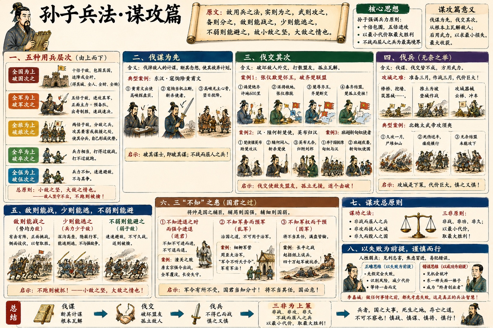
主讲人详细解读《孙子兵法》中'十则围之，五则攻之，倍则分之，敌则能战之，少则能逃之，不若则能避之'的兵力原则，强调集中优势兵力的重要性，并引用毛泽东的'集中优势兵力打歼灭战'和'运动战'思想。他举例说明，兵力十倍于敌可包围，五倍可进攻，两倍则需调动敌人分兵。兵力相当时要能打，少则逃跑，弱则避开，否则'小敌之坚，大敌之擒'。他批评以少胜多的宣扬，提出'沉默的证据'，指出大多数逃跑的将领未被记载，而少数奇迹如红军长征则被大肆宣扬。他还补充了石达开逃跑失败和李陵不逃被俘的案例。
📖 全文解读 · 209句 · 14分58秒（点开看全文）
重温经典，以古鉴今。大家好，我们今天继续来为大家读孙子兵法。今天的原文是故用兵之法，实则为之，武则攻之，备则分之，敌则能战之，少则能逃之，不弱则能避之，故小敌之坚，大敌之情也。孙子是非常强调兵力原则的，有绝对的优势兵力在他十倍于敌人的兵力打包围战，五倍于敌人的兵力才能去进攻他。这就是毛泽东主席所说的，集中优势兵力打歼灭战，就是这个意思。没有绝对优势，如果你只有两倍与敌人的优势，那就要备则分支去调动敌人，让他分兵去切割他，然后形成我方更大的优势再来去打。这就是毛泽东所说的运动战，依托较大的作战空间来换取时间，来移动兵力包围敌方，以优势兵力来速战速决。毛泽东把它总结为避敌主力，诱敌深入，集中优势兵力各个击破。大概是这个意思，敌则能战之，少则能逃之，不弱则能避之。意思就是兵力相当。两军遭遇的时候，如果你打得过那就打打不过就跑。这就是毛泽东所说的打得赢就打，打不赢就跑的意思。如果你不跑会怎么样呢？小敌之间，大敌之情也，你坚守的不跑，你就会被敌人给抓了。我们来详细分解这几句话，实则为之，五则攻之，备则分之。详细的注解实则为之。就是你有十倍余敌人的兵力，你就可以包围他，逼他投降，或者全歼敌军。有一句话叫一女乘城可敌十夫，未了子里面有这句话，他说守法一而当十，十而当百百而当千千而当万。就是你守城的人一个能当十个，那么我们反向思考，你攻城的人就要以十个去打一个。杜牧的注解为是四面垒合，不仅是要战胜敌人，而且不能让他给跑了。是凡四面围者必须去敌城稍远，战地既广，守备严密，如果兵不够多就会有所缺漏。意思就是你如果去围对方，你肯定不会在那个城池下面围，你可能离城池的距离稍微有一些，那这个时候你的面积就会很大，那这个守卫要很严密。如果你的兵不够多，城池上面的人就会看到你哪里会有所薄弱，然后专门打那个地方就有可能让他给跑喽。武则攻之，就是你有五倍于敌人的兵力就可以进攻他。曹操的注解叫以五敌则三术为正，二数为击，怎么打呢？就是三倍于敌人的兵力做正面出战，然后留两倍的兵力在手上作为预备队来等待的出奇制胜。张裕的注解叫今前扰后，声东击西，没有五倍的优势兵力，你分不出那么多兵做这么多事儿。如果你的兵力是敌人两倍，那么优势还不够大，你这个时候就要想办法让敌人去分兵。杜牧说，备则分支的分，不是分自己，是分敌人。让他分兵，我两倍于敌，那么我用一部分的兵力取其要害，或者是攻打他必须要去救援的地方，让他本来只有我一半的兵力，然后还要分兵去救援，那么剩下来的兵力就会比较少，那我更容易战胜他。曹操注解的更简单，叫以二击一则，一树为正，一树为基。曹操说的就是分自己。杜牧说政机分兵跟兵力多寡没关系，说只要出战就有郑和机。你看项羽到了乌江边只剩了28计，在自刎之前，只有28个骑兵跟着他挤在一堆打。而且还要分机兵和阵兵循环相救。姜太公说不能分宜，不可以与击。就是你不懂得分兵之术的，你没有办法跟他讲什么叫镇兵和机兵政畸的这个内容在后面的试篇我们再来详细的去讲到一些内容。关于它的敌则能战之，少则能逃之，不弱则能避之，故小敌之坚，大敌之情也。敌则能战之的意思就是我方和敌方的军队如果相当的话，兵力相当，势均力敌，那么就要有能力打这一仗。曹操的注解叫给予敌众众等善者由当射伏击以甚之，就是怎么打，还是分战之法，叫有击有震，正面挑战，侧面的预备队来设埋伏，曹操没说几阵即击，没有说兵力怎么来分配。不过从历史的战力来看，这种诱敌伏击的战术去挑战的往往是小股部队，真正设伏的那才是大部队。少则能逃之，意思就是兵力比敌人少，那就深沟高垒，不要出战或者逃匿兵行，让敌人不知道虚实，然后全军赶紧跑啊。不弱则能避之，意思就是势力不如对方，那就要速速逃走，不可言迟啊。如果敌人守住我的要害，那我想法也跑不掉了。孙子是一个极其保守和谨慎的人，先胜后战，他没有胜算他就不打仗。只要兵比敌人少，那就不跟他打。这一点似乎跟我们平时宣扬的价值观不大一样。我们津津乐道的都是以少胜多，历史上以少胜多的战力比比皆是，那怎么就不能打呢？这在管理学上其实有一个道理，叫做沉默的证据。就真正的绝大多数绝大多数大概率的事件都是沉默无言的，所以都是你不知道的。而那些小概率事件，以少积多的事情居然能打赢的那人们都会替他大肆的宣扬。1000年之后你还知道那3000年的例子累积起来，这就显得比比皆是了。沉默的证据是什么呢？首先那些少则能逃之，不弱则能避之的将领，他们都很沉默，都不说话。因为逃跑没有什么好宣扬的。所以你看在11家助孙子这个本书里面，11位注解孙子兵法的人，竟然没有一个人写出一个战例，举一个例子都没有。当时有一个人补充说明了张裕，张裕注解说敌人多，我军少宜逃之。但是他写了一个，但是他说如果我治比乱，我愤比殆，得敌虽重亦可以战。意思就是如果我的治理部队很严格，按照我的兵法来来进行，进退有据，而敌方是很乱糟糟的一群一窝蜂乌合之众，那我就可以打他。如果我很奋勇杀敌，而敌方很疲惫，疲于奔命，那么我也可以打他。然后他举了两个战例，一个就是5起1 500，这个骑兵去破秦军50万的一个案例，一个是谢玄以8000不卒去打败富坚100万部队的这么几个战力。他说你岂虚逃之乎？你要逃干嘛呢？你看看孙子讲不要以卵击石，注解倒是举出了两个鸡蛋打碎石头的案例来。如果我们按照张裕讲的这个方法，要500秤去打50万，用8000人去灭100万，很多人总会觉得自己会成为那个，但是总会成为奇迹。但事实上所有的蛋氏都被写在了历史书上。而且你看历史上每一个但是的后面其实都有无数的偶然事件，你少凑齐了一个都不行。今天我们给少则能逃之不弱则能避之补上两个战力，一个是沉默的证据，一个是大肆宣扬的战力。沉默的是石达开，石达开的远征军在清军的围剿堵截之下，一年半的时间转战川黔滇三省，四进四川，突破长江防线，最后还是没跑掉，给死了。哼还是沉默了，那也没有办法来证明他的做法是对的。另外一个大肆宣扬的战力大家都知道，就是一口气跑了25000里，跑掉了，那最后还取得了最后的胜利，就是红军的长征，小敌之间大敌之情也，红军在江西如果不跑会怎么样呢？不跑的话就会被敌人抓。典型的战力就是汉朝名将李陵，汉武帝要给李广利送粮场，李陵始于做后勤部队，他请战率5000步兵直捣匈奴的王挺，结果被匈奴的十万计给包围了，兵败了，投降了。汉武帝因此杀了他全家，还害得替他说话的司马迁受到了攻刑。人性的特点就是要赢，但是现实很有可能是要输，所以我们要懂得认输。弘基的老板石振荣老先生，他说认输才会赢，这句话很有哲理。我们也说了，输了生活还会继续的输掉的。咱们的认保住和扩大咱们赢得的就可以。福将者，国之福也。福州则国必强，福细则国必弱。故君之所以患君者3，不知君之不可以进而为之进，不知君不可以退而为之退，是为迷君。不知三军之事而同三军之阵者，则军是祸也。不知三军之权而同三军之任，则军是已矣。三军既惑且矣，则诸侯之难之矣，是谓乱军隐慎。意思就是将帅是国家辅佐的重臣，辅周则国强，辅细则国弱。这里是周和细，有三个意思。第一个周是财智具备能力全面的意思，细就是能力有所欠缺。第二个周就是形事周全的周，细就是有缺漏。第三个周是周密谋不屑于外，那么细就是行见于外，让大家看到你的虚实了，钻了你的空子。我们做事也是一样，要周全周密算无遗策。有一个地方没考虑到就有了细，到时候就在这个细的地方崩盘，你再喊冤，这个谁知道，那就没有意义了。中国有一句古话叫不知则不醉，其实这是一个错误的话，不知则就是最大的罪，你不知你怎么担待这个责任呢？孙子接下来讲的国君的三个不知，就是虽然你是老板，你不知道的事情你还是别管。第一个不知就是不知道军队不可以进的时候，你逼他进，不知道军队不可以退的时候你逼他退。安史之乱，割叔寒舍潼关，唐玄宗不知道不可以出战，逼他出战，结果全军覆没了，入了潼关，长安失守，唐玄宗逃亡了。四川肥水之战，谢玄跟傅坚说，您把军队退一退，等我渡河过来跟您决战。傅坚不知道不可以退，就下令退。后面不知道为什么退，那秦军大喊叫秦军败了，秦军败了，后面以为前面的败了，一哄而散就真的败了。这就是不知道进退，不知道军队的一进一退，其实都是生死存亡。其实企业也是一样。第二个不知是不懂得军队的事务，却要参与军队的管理。司马法说军容不入国，国荣不入军。治军和治国游戏规则不一样。兵精这部书叫在国以信，在君以诈，张裕的注解叫仁义可以治国，但是不可以治君。权变可以治君，但是不可以治国。前面说的傅坚，本来他是一位英主英雄，但是实力上空前强大，性格上来说包容大度，又以天子对臣明的心态来对待谢玄，以诸葛亮气情孟获的气度来对待谢玄，让他先过来收复他，让他服气，就忘了兵者，国子大事，死身之地，成亡之道，不可不察也一点都大义不得。傅坚一个不注意就兵败庐山倒最后发展到生死国灭。杜牧的注解叫军队的礼杜法令自有军法从事，如果以寻常治国之道，军士们反而不知道该怎么办。杜牧举了周亚夫、细柳的例子，汉文帝、魏劳三军到别的军营门卫都是直接放行。将领就是慌忙出营，到了周亚夫的门口被拦下，还要等通报，说军营之中只能听将军之令，不听天子之令。通报良久，周亚夫也没有出营，只说请进，还要求军营当中要慢行，马车不能跑得很快。最后他在自己的大帐门口对于文帝拱守行礼说甲胄在身，不能跪拜。文帝就叹服不已，在车栏杆上向将士们点头致意，从此认定周亚夫是可以依靠的打将。临终还嘱咐景帝说有兵家的事，就问周亚夫，周亚夫果然替景帝平定了七国之乱。不过杜牧把周亚夫的这个故事放在这儿作为例子，虽然是典型，但也不完全恰当。细柳军营的事儿有文帝的品格在，也有周亚夫的性格在。他的性格就是牛，他不光在军营牛，他在皇宫也牛。最后弄得皇上很不舒服，晚年稀里糊涂的给问了个谋反之罪，他哪受得了绝食抗议，饿死了。最后第三个不知是不懂得军队的权变，却要参与军队的任命，不得其人就会满盘皆输。最典型的战力就是长平之战。赵括纸上谈兵不能打仗，廉颇知道，蔺相如也知道，赵括死去的父亲也知道，赵括的母亲也知道，就俩人不知道，一个是赵括自己不知道，第二个是赵王不知道。40万人的生命就这么被断送了。这三个不知都在讲将在外军令有所不受，这是讲忠欲之患。意思就是姜太公所说的，国不可以从外置，君不可以从中域，就国内的事儿归主君管。不可以从国外来去进行处理一些事儿，或者是借鉴外国的一些什么经验来去处理军重的事情归将军管，不能由国君来进行遥控。如果国君老是遥控，则三军既祸且移。诸侯之难质疑就是一些敌国就会趁虚而入来打你了。侍卫乱军宁慎是捣乱军队，把敌人引来，让敌人得胜，将在外军命有所不受。是讲给国军的。但是你不能假设国君一定会听，只能启发他听他。如果不听，你还得听他的，否则你自己的命都保不住，你还什么英雄，还什么保家卫国都扯淡。那岳飞死了，人们战他是英雄，骂秦桧是奸臣。但是宋朝还是亡了，他还是没有尽到保家卫国的责任。你看秦国的王翦，秦王把举国60万大军都交给他，去灭了六国统一天下。他今天派人去找秦国，秦王要块地，明天派人去要盖个房子，就是要秦王放心，我求田问宅，心无大志，岳飞执捣黄龙府海，银皇二帝的雄心壮志，高宗怎么受得了？你想一下子回来俩皇帝，那我这个皇帝怎么办？谁能保证赢了之后不变成庸立了呢？皇上可以不懂军事，将军不能不懂政治。将在外军民有守不受？是给皇上立一个规矩，但是只能启发他自己去守规矩，不能假设他一定会遵循这个规矩。今天的内容就到这儿，我们下期再见。
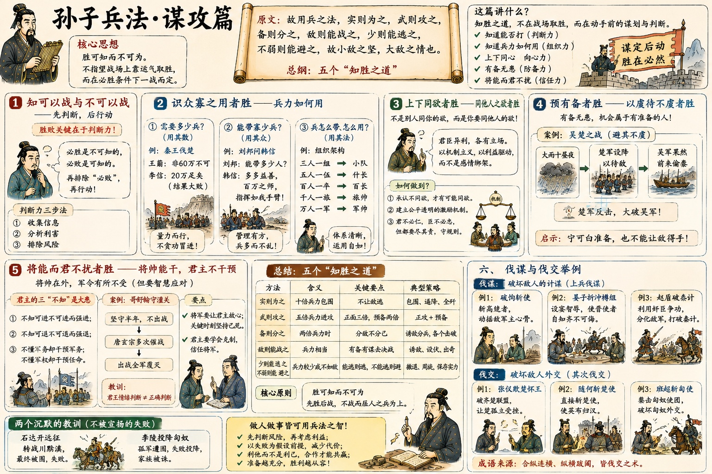
主讲人详细解读《孙子兵法》谋攻篇的知胜五道。第一，知可以战与不可以战者胜，强调判断力，指出必胜不可知但必败可知，举例方案谈判中需减掉一厢情愿的三分把握。第二，识众寡之用者胜，从三方面展开：知道需要多少兵（如王翦灭楚需60万）、能带多少兵（如韩信多多益善）、怎么带兵（如组织架构设计）。第三，上下同欲者胜，解读为同他人之欲，强调利他，如员工站老板角度、企业站消费者立场，并引用韩非子君臣义利观点，需建立公平激励机制。第四，以虞待不虞者胜，强调准备，举例吴楚之战中楚军两次准备获胜，并联系道达尔公司安全介绍和儿童座椅，指出准备多为白准备但防万一。第五，将能而君不御者胜，分析理想与现实矛盾，举例哥舒翰守潼关被玄宗逼战而败，建议大将应让君主透明可插手。
📖 全文解读 · 245句 · 17分37秒（点开看全文）
重温经典，以古鉴今。大家好，我们今天继续为大家来读孙子兵法，来读谋攻篇。今天讲的是故知胜有武，知可以战与不可以战者胜。孙子讲五个知胜之道，讲的是知道胜利的方法，而不是知胜之道，不是讲在战场上取胜的方法，胜可知而不可为的思想，不指望在战场上靠运气获胜，而是在必胜的条件下一战而定天下。所以第一条就是知可以战与不可以战，动手之前你要知道能不能赢，这对于判断力其实提出了一个很高的要求。你怎么知道自己必胜呢？你认为必胜结果真的就赢了。那你每次都这样，你不成了神仙了吗？你成了那个章鱼保罗了。而我的实际工作体会当中有一个认知，就是必胜其实是不可知的。但是必败其实是可知的。比如你做一个方案最重要的能力不是出创意，而是出判断。就是随时知道自己走到哪儿了，你能不能得手，这个项目能不能谈下来。所以说判断力是创造力的前提，你只有在判断当中去创造，才是真正的创造。否则你把你想说的内容全部给说出来了，最后客户不买单，那就只能叫狂夫之言，胜人择之。你让别人来对你的话做出判断了，人性的一个弱点其实很大程度上就是一厢情愿。西方有句谚语，他说我们相信一些事，只不过是因为我们希望它是真的，所以我们才相信。我们假定一厢情愿，这个因素在我们的判断里面会占有三分。那么你认为有几番把握的时候呢？先把自己这个3分之1的这个三分的一厢情愿的分先减掉。再想想。比如说我们有十分把握的时候，减去三分就是七分。假如我们的判断是准确的那就有七成的概率获胜，那赢面已经很大了。成功是偶然的，失败是必然的，这个认识很重要，所以不要轻举妄动。识众寡之用者胜，知胜武道。第二条叫识众寡之用者胜，就知道兵多兵少怎么用的人能够胜利。孙子兵每一句话的性息量都很大，这句话性息量其实也不少。识众寡之用就是能带兵，能带队伍。以下如果概括的话，大概有以下三个方面。一个是知道需要多少兵，比如说秦王阵要灭楚，朝廷开会需要多少兵马。王翦认为非60万不可。李姓说不过20万人便可打败楚国。秦王政当然喜欢李姓了，因为王翦老了不堪用，要派兵，派那么多人干嘛？于是就派了李姓和蒙恬率军20万去南下伐楚，结果大败而归，七个都尉都被斩了，是成为秦军少有的大败仗。秦王赶紧去给王翦配立刀剑，请他出山。王翦的条件还是60万。王翦率军到了楚国驻扎下来，营门一关也不大，每天就开运动会，搞体育比赛，因为他兵多，楚军也没有办法来打，就这么耗了一年，楚军熬不住了，开始频频调动，楚军一调动就露出了自己的破绽，于是王翦挥师出击，一举歼灭了楚国。匈奴单于默顿写信轻薄吕后，吕后非常生气，想发兵讨伐樊哙，激情演说。他说给我十万兵马，我横扫匈奴，大家都附和要打。这个时候济步大喝一道大和神，说樊哙可斩也。当年高祖30万大军在白登还是被围了，陈平用计讲和才放回来。樊哙，难道你比高祖还厉害吗？吕后冷静下来，给莫顿回了一封不甘不卑不亢的信。还是和亲友好。第二，就是你能带多少兵，这是一个管理问题，一个组织动员的能力，你能带一个班，一个团，一个团还是一个军？刘邦跟群臣讨论谁是谁能带兵多少，问韩信，你看我能带兵多少？韩信说陛下能带兵十万多了，您就搞不定了。刘邦就问说，那你能带兵多少？韩信说我多多益善，再多的兵都能带百万之师指挥如我手臂。所以打仗的本事，人们看到的是谋略勇敢。因为那里有故事，有谈资，男女老少都爱听，广为流传。但还有一个不被人们常常挂在嘴边的能力是什么？组织动员管理的能力。管理的事儿讲起来很枯燥，人们也听不懂，也不爱听。韩信打仗的本事为什么大？为什么比别人都大呢？他谋略当然很厉害了，韩信带兵多多益善。这句话里面我每个人可以想想，我能带多少人的一个团队。我能管20人的一个公司和管200人的公司不是一回事。2000人、2万人、20万人又是另外一回事。像富士康那样管上百万人，把人都管疯了，管自杀了。前面说的王翦在60万在敌营之内敌境之内驻营，一年不打仗，天天开运动会，关键的时候一击制胜。这60万小伙子挤堆，一年不干活还没出事儿，这都是管理的大本事。第三就是兵怎么带，怎么用，所谓治众如治寡，韩信带兵多多益善，给他100万兵就跟他带100个人一样方便。这就是所谓的一套组织架构和管理体系。在后面的形式虚实篇当中都讲了这个问题，组织架构就是从小到大战斗单位的设计。古代打仗最小的战斗单位是五个人，戚继光叫倭寇，设计了一个12人1组的鸳鸯阵。林彪发明了一个1.2面三山志，以三个人为一个最小作战单位，包括今天的特种部队，其实也都是以三人为一个最小作战单位。从三个人的一个战斗小组到上百万的大军，他指挥起来就像指挥自己的手臂一样方便自如，那这个水平就很大了。原文叫上下同欲者胜，知胜5道当中的第三叫上下同欲者胜。上下同欲者胜知不知道呢？都说知道，大家都知道上下同欲者胜，但是王阳明用知行合一的观点来说没做到，就不是真的知道，那几乎就没有什么人知道这个意思了。上下同欲者胜，人们自然要求别人同自己的欲，特别是上要求下要同上的欲。就是领导需要下属去跟上司的思想保持一致。很少有人理解是自己要同别人的欲，要跟从别人的欲望。理学家说叫存天理灭人欲，王阳明说天理济人欲。哼两个欲不是一个欲。灭人欲是要控制自己的欲，记人欲是要顺应大家的欲。左传里面说从欲，以欲从人则可以人从欲先计，什么意思呢？就是自己的心愿跟随着大家的心愿，那么这个事儿就能成功。如果大家的心愿跟着你自己个人的心愿走，那很少能赢的。所以我们可以把上下同欲这句话来理解一下，叫做同他人之遇者胜，这就回归到利他还是利己的大道理了。对于员工来说，你要始终站在老板的角度去思考问题，那你进步就很快。而对于乙方来说，你要始终站在甲方老板的立场，陈则林你的业务就会稳定。对于老板来说，你要有员工思维，凡是站到员工的立场上去看一看，服务员工，关注员工，又有人愿意跟你干。对于企业来说，你要始终站在消费者的立场上，不要总想着利用信息不对称来去赚钱，而需要实实在在的为消费者建立起别人做不到的产品和服务体系，你就成为百年品牌。上下同欲是怎么做到的呢？首先我们要承认上下是不同欲的，因为你知道不同你才想办法去同，你认为别人什么都应该跟你同，什么也不需要做，那就永远没有人跟你同了。上下不同。于是韩非子所说的叫君臣义立君合臣利益所在的方向是不一样的。曹操伐东吴，孙权开会讨论是战还是降，群臣都说打不过。你看刘忠都降了，安排的还挺好的，所以咱们也降了算了，跟他谈个好条件。鲁肃趁着孙权上厕所的时候，跟出去对孙权说，主公，我们都可以降，但是您不能降。孙权问为什么？鲁肃说，我们做臣子的换一个主公还是一样做官，家财什么利禄都有保障。您如果您降了，您做什么官呢？孙权就明白了，必须要他，这就是君臣义利。要人家不是说叫公司倒闭了，员工可能跳槽，老板只能跳楼。所以君臣义立上下不同意，你该怎么办？韩非子的逻辑是在君臣互士做交易，就是建立一个公平透明的激励机制，君不必仁，臣也不必忠。在这个机制下，自然君王仁爱，群臣忠勇。所以君臣之间啊不要讲感情，什么报恩、爱戴之类的话。但是每个人都必须忠于自己的角色责任，忠于自己的职业精神和操守和游戏规则。在机制设置上，假设每个人都是坏人，让坏人为了自己的利益也只能做好事。在道德品质上，提倡每个人都是好人，让好人好上加好再加分，这就能形成上下同于者胜了，以愚赖不渔者胜，知胜五道之四，以鱼待不愚者胜。鱼就是预料、预备、防备的意思，成语叫尔虞我诈。那个虞就是互相防备，互相欺骗的意思。左传说不备不愚不可以施，就没有事先准备，没有周密的防备，那是不能带领部队的。孙子兵法说无事起不来，事无有以待之，无事其不攻，事无有所不可攻，也就不能料定敌人不会来攻击，要有准备，他来了我也不怕。春秋时期吴楚交战，两军相聚30里，雨下了十天十夜，晚上都看不见星星漆黑一片。楚军的左使对大将军子期说，这么恶劣的天气，吴军肯定认为我们没有防备，一定来偷袭，不如备至，于是列好阵势等待他。你看吴军果然来了，一看楚军严阵以待，占不到便宜，于是转头就撤了。这个时候楚军也没有追击，因为他知道，有所防备。你等吴军走远了，左使右说，他们往返60里，回到营中又累又饿，大将要休息，士兵要吃饭，肯定防备松懈了。于是咱们急行军30里，摸上去，定可一鼓而破之。楚军一计而行，果然大破吴军。你看刚开始的时候下的大雨，楚军列阵等着吴军不来怎么办呢？那不是白准备了，我们经常听人说我白准备了，我白浪费了。这个观念就是兵法要反对的，兵法百言，他说宁使我有虚防，不使彼得时常就宁可我白准备，也不能让他万一来了就让他得手。绝大部分的准备其实都是白准备，因为准备本来就是不防1万就防万一的，所以每一次有效的准备背后都是9999次的白准备。左使并不是料事如神，他料定吴军一定会来，其实也不是，他就是完全按流程操作做好准备。吴军如果不来，士兵们怨声载道，这件事儿过去了，那就不会写进史书里，我们也不知道。但是吴军来了，他就名垂青史了，两千多年后我们还知道这件事。可见这样的事情其实很少发生，大部分人都不会去准备。一位在法国道达尔公司工作的朋友跟我说，他说每次他们公司开大会都有一个安全观，先做半个小时的安全介绍，就酒店有什么情况，什么走火通道，怎么安全逃生，逃生门在哪儿，防火面具在哪儿，灭火器在哪儿？如果发生火灾，按什么程序逃走，如何自救、互助、急救等等。这就是按咱们百年大计进度第一、质量第二、安全第三的价值观。半个小时喋喋不休实在没什么意思，但是以防万一，你防子不就是万一。我们很多家长孩子坐车都不给他备什么儿童座椅，认为没事。但没想到你万一有事儿，那真的就麻烦了。所以这是很重要的一件事情，你于待不鱼者胜。还有一个理解就是机会属于有准备的人的人生就是一个不断的去埋下伏笔，然后机会来的时候你都准备好了，那你就赢了。作战其实就那一下子，我们99%的工作其实都是准备工作。这个道理坦你不过确实也太深，人们容易看到的战利品多少得失、时间、资源配置总是向着收割去倾斜，不是向着准备去倾斜。只问耕耘不问收获。我看到很多企业的老总，把收获的工作交给经理人自己做的自己。因为今天的收获都是他三年前耕耘下的，他把大量的时间和精力都关注在那些新的耕耘，去为未来做准备当中。将能而君不遇者，甚就是此无者，至身之道也。这是至身之道道的最后一条，叫将领能干，君主又不干预者能赢。司马法说进退为实，无约寡人。所以不管皇上说什么进退，都要根据形势来去判断和决策。司马懿和诸葛亮在五丈原对峙的时候，司马懿不出战，诸葛亮天天羞辱他，还送女人的衣服给他，魏国将是受不了，甚至也认为司马懿胆小，群情汹涌，个个要打。司马懿说好吧，那我即刻向皇上请旨出战。朝廷接到司马懿的请战书，请战书马上就明白他的意图，这是要演戏，要皇上配合。于是派个天子使节站在这个军营门口宣誓，敢问战者斩。诸葛亮听说之后，他要是能治我还用向天子请战吗？假状说天子不许出战，这是不能之将。诸葛亮词语是引用了孙子兵法，叫将能而军不遇的典故。司马懿要军欲，那他就是不能之战了。不过司马懿的要求军欲是假装的，是演戏的。诸葛亮心里明白，武丈原这一仗他始终没有打成，于是就在这个军中病故了。古代拜大将与太庙有一套的仪式，国君亲手拿着象征征伐敌人和统帅下属的深杀大权的那个乐，是一种斧子，实际上不是兵器，但是它是一种刑具，然后有点像是那个礼器。国君先倒着执越，伏柄对着大将给他。他说从事以上治天者将军制之。就是国君执着柄斧，刀刃对着大将交给他说从事以下之冤者将军制之。这就是管天管地全部权力都授权给他的意思，将能而军不欲，将在外军命有所不受。兵法天天说，人人都认为这是对的，但是这句话是一个理想的状态，很少能成为客观事实。执着于兵法这一条，往往将领会死的很惨。对于大将来说，管着军事战场上瞬息万变，当然不能事事请示皇帝。对于皇帝来说，皇上管着政治、内政、外交、敌国、叛军、内部政敌，他的压力比大将还要大。而最大的筹码都交给你了，我他他能不派一个监军就已经很不错了，你还要他不管不问，那他一定得焦虑症。所以兵者，国之大事，死身之地，存亡之道不可不察也。国君时时刻刻处于生死存亡之中，你要不发表意见，不干涉行动，怎么可能呢？他时时刻刻其实都在对你做出判断，所以国君要克制自己，学会适当放弃自己的判断。比如说安史之乱的时候，哥舒寒守潼关，我们说过很多次了，他坚守半年就是不打仗，形势慢慢有力的时候，唐玄宗逼他出战。唐玄宗为什么判断可以出战呢？一是君王骄傲，他根本不接受安禄山可以反叛给他这一事实。所以之前斩了作战不利的大将风长卿高仙芝，其实他都是唐朝最优秀的大将，自毁长城。这下形势好转了，马上向一举扑灭安禄山出口恶气。第二是杨国忠不断的在旁边煽风点火。因为他和他哥哥舒涵是死敌，所以只要哥舒涵想做什么，他反着来。所以从唐玄宗的判断上来说，并非是一个清晰的分析判断，很大程度上是情绪，是不接受失败，不接受委屈，马上要干一场仗的意思。虽然哥舒涵苦苦见真，说不能打，不能打，你就听我的。在守半年之后再怎么样，严国忠的谗言还是发挥了作用。杨国忠一煽风点火，玄宗就认为自己的判断没错，还是要打。所以于是哥舒涵出关，全军覆没了。从哥舒涵的角度上来说，不能让玄宗信任自己，这就是最大的不能。你不能说他是将有能从杨国忠斗得你死我活，他失败的主要原因，这个是杨国忠是小人，但君子有的时候就得和小人交朋友，没办法，即使做不到，至少也有这个意识。历代依靠太监办成大事的志事能臣哪多的是？张居正就是将能而君不育。君主要想的是，只要不是马上见死见活，一输就输光的，不如放弃自己的判断，让你的属下去干。对于大将来说，不要把君王伸过来的手给挡回去，让他随时可以插手，让他感觉你是透明的，对他不设防。这样关键的时候你非要自作主张坚持，你的坚持才会更有说服力。这是今天和大家说的非常重要的内容，希望对各位有所帮助，我们下期再见。
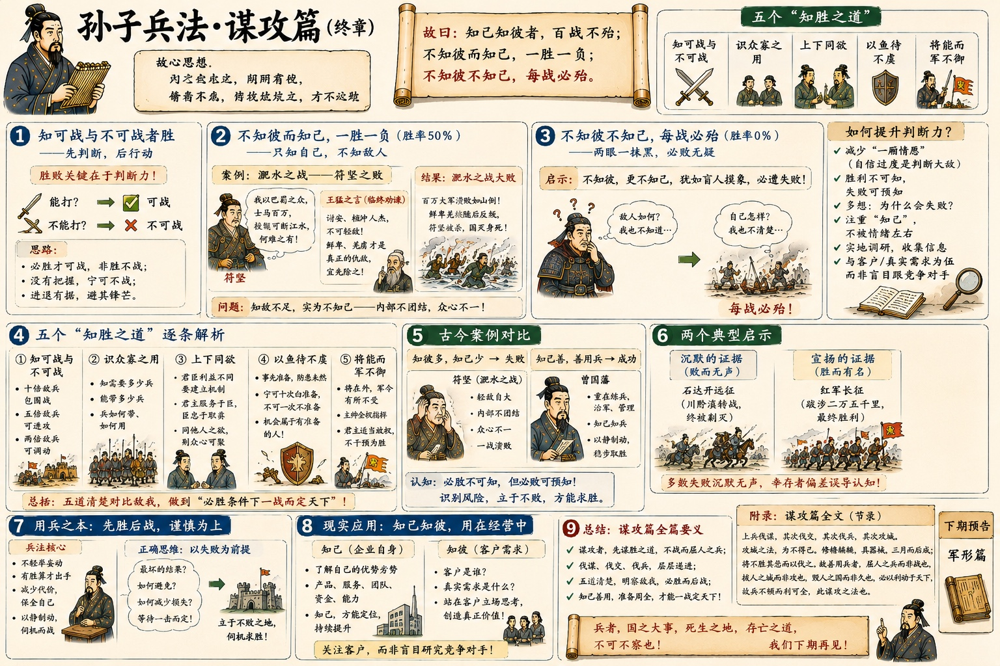
主讲人解读《孙子兵法》‘知己知彼，百战不殆’，指出肥水之战中苻坚并非不知彼，而是不知己，尤其不知内部隐患。他举王猛劝谏苻坚先除鲜卑、羌族内患，苻坚却因性格宽厚无原则，收留降将如慕容冲，导致上下不同欲，最终战败被杀。主讲人强调，现实中知己比知彼更重要，唐太宗也认为知己可保八分胜算。他引申到经营，认为‘彼’应是客户而非竞争对手，研究客户比研究对手更有价值。
📖 全文解读 · 77句 · 5分39秒（点开看全文）
重温经典，以古鉴今。大家好，我们今天继续为大家来读孙子兵法，来读魔功篇的最后一章。故曰，知己知彼者，百战不殆。不知彼而知己，一胜一负。不知彼不知己，每战必殆。如果你了解自己，也了解敌人，那么你就能立于不败之地。就是我们前面上一期所说的五个知胜之道，五个方面都清清楚楚能够做敌我双方对比。如果你只了解自己不了解敌人，那你每次打仗的胜率是50。对，50，如果你既不了解自己，也不了解敌人，那你的胜率为零。不知彼而知己。李全的注解里面举了肥水之战富坚的案例，傅坚只知道自己，不知道敌人。王猛临死的时候对傅坚说，进士虽然立于这个偏远的江南，但是成绩的阵统谢安、横冲都是伟人，不可以征伐。我们内部的鲜卑啊，什么羌虏啊，才是我们的仇敌，终究会成为祸患，先把他们除掉，以利设稷。王蒙死后，福建没有听他的挥师伐尽，又有人跟他说，对方也有人才啊，说谢安很冲啊，都是人杰，不要轻敌。福坚说，我以巴州之众，士马百万投鞭可断江水何难之有。肥水之战，馥坚大败之后，鲜卑羌族果然反叛复坚，最终被羌族首领给杀了，富坚之败。真的是知己而不知彼吗？其实不是，他的问题在于不知彼，他的问题不在于不知彼，而在于不知己或者说内部的不知彼。他的卧榻之侧，酣睡的都是仇敌，你说他怎么办？王猛劝他的话，前半段有些可疑，他说进士不可罚，那是因为正统所在。少数民族好像不太会认为你是什么正统不能打，历史是汉族的正统写的，所以你可能就编了这么一段，但是后面才是重点。他说鲜卑和羌族才是我们真正的仇敌，应该先灭了他们。富坚有一个巨大的性格弱点，就是对人太好，而且是没有原则的。好，灭了他人之国，别人都是斩草除根。而他只要你投降，皇帝也可以在我的帐下做将军，胸怀大的没原则，怎么可能皇帝会在一个另外的皇帝帐下做一个将军。所以肥水之战之前，他已经犯了叫制胜武道里面的上下同御胜这一条，他的百万大军里面上下不同御，因为那些什么降帝、降将，一心想的就是复国，不是帮他统一天下，所以一喊退大家都跑了。鲜卑的慕容冲、钱燕被傅坚灭国之后，他和14岁的姐姐被送到了富监宫中，姐姐作为宠妃，她做男宠，姐弟俩宠冠后宫。慕容冲后来起兵赴国，傅坚在政前看到他还旧情泛滥啊，派人还送了一件锦袍过去，国破家亡啊。身为皇室贵胄和姐姐被送到敌国的后宫，对慕容冲是怎样的一种奇耻大辱和国仇家恨，傅坚却认为他是爱情就这么荒唐，你说太把自己当天下共主了，也不知道别人，其实他也想皇当皇帝。我们用制胜武道一条一条去评估富坚，叫知可战与不可战者胜。王猛已经说了，内部才是大问题，不可以与进士去打仗。但是富坚不知道识众寡之用者胜这一条。富坚太大意了，没有分兵，挤在一堆，那一击全溃也不行，上下统一者胜。前面说了，他手下好多将领就等着机会复国，所也不行，以鱼待不虞者胜。谢玄设计好了圈套，傅坚却以为你什么圈套我都不怕，因为我的兵力是你十倍之多，不做准备被动挨打也不行。将能儿军不御者胜，他是御驾亲征，百万大军，但是带的部队却是各怀鬼胎的乌合之众，所以这五条他哪一条都不合格，他是不知彼义又不知己，必百知己。知彼我们关注的往往是知彼，因为知己大部分人认为理所当然。现实是往往问题出现在不知己，你想知彼却得不到，那么别人的事你怎么知道呢？所以唐太宗说，今之将臣虽以未能知彼，苟能知己则安有不利乎。我认为知己不知己，胜率不是50，至少是80。要把功夫下在知己上，不管你怎么样，因为我也管不着，我只管我怎么样，你怎么样我都有准备，那我还能调动你。你看读曾国藩全集里面，他的日记里面很少去讲什么敌情怎么样，很少都是在讲自己怎么去建设军队，怎么去管理军队，敌情只有打的时候才会晓得。其实今天我们看孙子兵法用在经营当中，还有一个小问题就是知己知彼彼是谁。竞争对手其实不是，竞争对手不是你去对抗的对方，其实你的那个比应该是客户。如果我们知道自己，我们要知道客户，那每占比胜当然不用说了。我们的问题往往出现在自己觉得不够好，又不了解客户，所以你学了兵法，天天去研究竞争对手，那是下耽误功夫，你还不如去好好的了解你的客户究竟是谁，他到底有什么样的一些需求，在你的客户公司去安排一个小小的跟你进行联络的密探。就用剑也可能会给你的事野带来很大的帮助。我们附录文章是谋攻篇的全文，这是我们花了5节5天一个礼拜的时间讲了谋攻篇。我们下期和大家来讲孙子兵法的军刑篇，下期再见。
军形篇 · 第四
3/3 段先让自己变得打不垮，再去等对手露破绽。胜利是「先胜」再「求战」。
- 不可胜在己：能不能不被打败取决于自己，能不能赢取决于对手犯错。
- 先胜后战：真正的高手赢得轻松，胜负在开打前已锁定。
- 修道保法：把制度、实力、积累做扎实，这就是「形」。
先求不败再求胜。把基本盘（健康、技能、现金流、口碑）做到无懈可击，机会来时自然接得住。
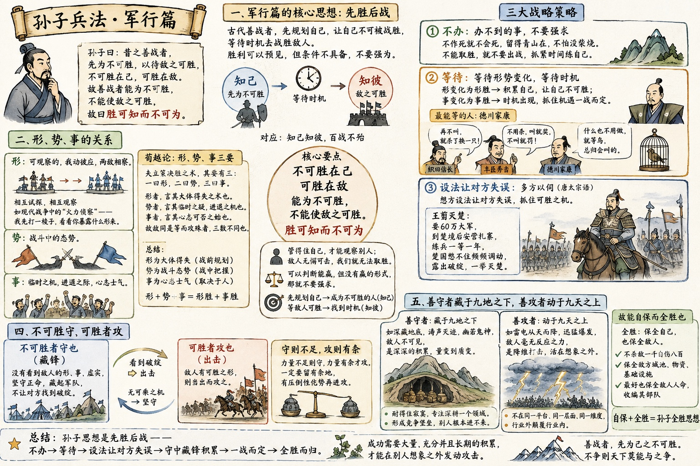
主讲人解读《孙子兵法》军形篇，强调先让自己不可被战胜，再等待敌人可胜之机。举了诸葛亮六出祁山、王翦灭楚、德川家康等例子，说明等待和积累的重要性。还类比企业经营，如万科专注房地产、华为不做房地产、阿里巴巴不做游戏，说明守是积累，攻是降维打击。
📖 全文解读 · 174句 · 12分57秒（点开看全文）
重温经典，以古鉴今。大家好，我们今天继续为大家来读孙子兵法，来读军行篇。孙子曰，昔之善战者，先为不可胜，以待敌之可胜，不可胜在己，可胜在敌。故善战者能为不可胜，不能使敌之可胜，故曰胜可知而不可为。孙子兵法的第四篇讲的是刑篇、行篇和后面的事篇组合在一起。形事二字就是这么来的。什么是形呢？曹操的注解叫君之形也，我动彼应两敌相差情也行，就是可以观察到的。我动笔音，我动一动看看对方怎么回应。你来动一动，看我来怎么进行回应，相互试探，相互观察。就好像是我们熟悉的在军事的这种现代化战争当中的火力侦察是一个意思，就我先打一梭子，看看你暴露出什么形来，什么样子。张裕的注解叫两军攻守之险也，隐于中则敌不可得而治，剑于外则敌乘戏而治。就双方的军情，都尽量不能让对方刺弹到那一接战一攻一守，两军的军形就会互相暴露。所以形是在战前的，势是在战斗中的。汉代荀越有一段话讲形势比较准确。他说夫立策决胜之术，其要有3，一曰行，二曰势，三曰行。行者，言其大体得失之术也。事者言其灵时之疑，进退之机也。情者，言其心志可否之始也。故侧同是等而攻疏者，三数不同也。这句话的意思就是说行是大体得失的一些计算，你算算有多大，这是算得出来的。算清楚了再去答，不算不清楚那就别去答。做事先看行，看看行不行，做起来就要靠事。荀越说这个临时之疑进退之际，可以这么说。不过在孙子的试篇当中讲的更加深刻。荀越还讲了秦就是主将的意志力和团队的士气，就心智可否这个情在孙子兵法里面也归为事。所以荀越的形事情三要实际上还是形势两个要点，形和事讲清楚了，战胜的过程就是形胜和事胜两个过程。形篇讲的就是形胜，接下来我们开始正式讲刑篇。昔之善战者先为不可胜，以待敌之可胜。不可胜在己，可胜在敌。故善战者能为不可胜，不能使敌之可胜，故曰胜可知而不可为。就是古代真正善于打仗的人，先规划自己，让自己成为不可被战胜的，等待时机去战胜敌人。不可战胜在于你自己还能否战胜敌人，在于对方给不给你这个可乘之机。所以说善于打仗的人，能够做到自己不被敌人战胜，却做不到敌人一定能被我战胜。胜利可以预见，但是如果条件不具备，那不要强为先，为不可胜，以待敌之可胜。正好可以和上面一张叫知己知彼，百战不殆来进行对应。先规划自己，让自己成为一个不可被战胜的人，就是知己。等待敌人什么时候可以被战胜，找到这个timing，找到时机，就是知彼不可胜在己，可胜在敌。故善战者能为可胜，不能使敌之可胜。就是人要管得住自己，但是你管不住别人，所以你先管好自己再去观察别人。如果敌人无懈可击，我们就没有办法来取胜。胜可知而不可为，就是说可以判断我们能赢，但是如果没有赢的形式，那就不要去强求，不可胜不可强求，那怎么办呢？首先就是不办，很多人在败就败在不知道这件事情该不该做的时候去做了。就所谓的不作死就不会死，办不到的事儿就不要去强求，留得青山在不怕没柴烧。如果你非要去做，就有可能会输光。老本不能取胜就不要出战，抓紧时间来练自己孙子的思想，是先胜后战。后面还会讲，我们可以把它称之为叫赢了再打。如果你没有赢，你干脆就别打，很多人接受不了这一点，所以没会认为就是不作为。你不去打，你怎么知道能不能赢，必须要让自己有所作为，自己才能心安。其实这是一种战略焦虑症，我们经常会说叫叫用战术上的勤奋去掩盖战略上的难惰。忘了作为你要付出代价的任何事情，只要你去做都一定会付出代价。当然还有的时候会承担一些损失和一些风险。事实上不出手并不代表不作为，而是积累自己，等待时机。你看在三国争霸的时候，诸葛亮就是不断的作为，动不动就六出祁山，动不动就去打来打去，可以说没有任何胜算的作为。最后把自己给累死了，他应该等待时机去锻炼身体。一是让自己活得更长一点，二是把国内属国治理的更加的富足和强大，把儿子教育好，传承下去。但是他像很多人一样认为不能等，不能等的结果就是什么呢？就是司马懿活得最长，他活得比诸葛亮还长，他活得超过了曹操，他甚至活得超过了曹丕，就没有人挡住他。结果他最后三家归境。所以第二个策略就是等待，等待在很多情况下都是最好的选择，认识到这一点的人很少，等待什么呢？等待形式的变化。什么叫形式的变化？就是形变化为形慎，事变化为事慎。形慎就是在等待当中去积累，让自己不可胜，不可被战胜，越来越强。嗜慎就是时机出现了，然后抓住机遇一战而定。最能等的人是日本战国时期的德川家族。有一个笑话，他说讲日本战国的三大英雄，植田信长、丰臣秀吉和德川家康，说三个人在一起遛鸟，那只鸟就是不叫怎么办呢？织田信长说再不叫就把他给杀了，换一只鸟。丰臣秀吉说不用杀，叫就讲，不叫就罚，我总有办法让他叫。问德川家康，说德川家康说什么也不用做，就等鸟，总归他会要叫的。你看三人当中就是德川家康最能等，而且他活的最长，结果他成了天下之主，德川家族就统治了日本300年，其实等什么等行圣积累自己，二等事甚让对方食误，对方一旦失误，甚计就出现了。对方不识物，我们就没办法赢或得战胜的代价太大，不如等一等划算。所以就有了第三个策略，能不能让对方失误。这就是唐太宗李卫公问对这本书里面说到的叫关古今兵法，一言以蔽之叫多方以物，就想方设法让对方失误。前面几章讲了王翦去灭掉楚国的故事，他找秦王要了60万大军，然后到了楚国的边境，却不发动战争，安营扎寨，每天开运动会练兵，等待楚国的一些动作。一等等了一年，楚国憋不住了，开始频频调动军队。楚军一动，他看到了这个机会，一举灭掉了楚国。所以成功必须要有大量充分并且长期的积累，便能够在别人想象之外发动攻击，这是非常重要的内容。不可胜守也可胜者攻也。守则不足，攻则有余。善守者长于九地之下，善攻者动于九天之上，故能自保而全胜也，不可胜守也。合适的注解叫没有看见敌人的形事虚实，有可能的那就要坚守自己的正明。曹操的注解就三个字叫藏行，也观察敌人对方的军行，发现没有可乘之机，来把自己的军队给藏起来，收起来，不要让对方找到破绽，可胜者攻也。杜牧的注解叫敌人有可胜之形，则当出而攻之。前面是王翦灭楚的例子，就是不可胜者守也，可胜者攻也我们还是要重复一遍，就60万大军开到敌人的门口，然后看到你严阵以待，我就守，我就等等到了你动了，露出破绽了，然后我马上出击，一举得胜。守则不渝，攻则有余。孙子的思想一贯严谨，守则不足，知道自己力有不足就守住。要多大的力量才攻呢？一定要有余才攻，光力量够了还不行，一定要有余，要留有余地，要多留余地，要有压倒性的优势再去进攻。善守者藏于九地之下，善攻者动于九天之上。苗臣的注解叫，九地岩深不可知，九天岩高不可测。杜牧的注解叫，守者涛声灭迹，幽彼鬼神，在于地下，不可得而见之。功者视训身烈，即若雷电如来，天上不可得而悖也。所以，善守的人就像常在九地之下守的敌人，一点都不知道。善攻的人一旦打起来，雷霆问军铺天盖地，让对方根本没有反应的机会和还手之力。故能自保而全胜也熟能保全自己功能，大获全胜。孙子的全胜思想，全胜的全不光是要保全自己，也要保全敌人，保全敌人的城池物资，甚至还要保全敌人的人命。一是保全啊不要杀敌一千自伤八百，二是把对方也保全，为什么呢？不要他败退的时候，把桥梁、道路、城池这些基础设施都给破坏了，粮仓物资都给烧了。你要想拿一个空城下来又没有什么用了，要把这些东西都保全，能够为我所用。最好人也别杀他们，把他们的军队也保全。一看我们从天而降，连战斗意志都没有了，放下武器投降加入到我们的军队，那我们的队伍就会很壮大。善守者藏于九地之下，千万不要以为手是保守，是不思进取。守本身就是肾的积累，而且是加速积累的过程。从企业经营来说，简单的类比可以讲专业化和多元化的问题。当你每进入一个新的领域都是攻，深根在一个领域就是守。你要想万科的上一任的董事长王石，当初把所有公司都卖掉，守住一个房地产业，就守住了一个万科。从个人来说，行行出状元，那无非你需要更多的专注与坚持。任何一个人只要专注一个领域，五年会成为专家，十年会成为权威，15年到20年会成为世界顶尖。但关键是你真的能否专注于某一个领域，不再动摇。在经营上，你要守住一个地方就能出，守住一个世界顶尖出摇就能活在他人想象之外。所以手是一个从量变到质变的积累，是深深的藏于酒地之下。没有人知道你水有多深，因为他没有在一个地方更耘过这么久，没有达到这么深。他是不了解你的。你就能够形成最高的竞争壁垒，我们把它称之为竞争堡垒，别人根本进不来。那么什么叫善攻者动于九天之上呢？就是你觉得他在攻击你的时候，他根本没有在攻击你叫降维打击。因为他在九天之上，他根本就不在一个平台，不在一个层面，不在一个战场，不在一个思考维度。现在他所有的互联网企业都要拿移动互联网的门票，对不对？门票却不是谁来发的，都是自己画的。你画成什么样，每个人逻辑都不一样，各自在各自的天空上都不是一回事。竞争什么呢？就是自己竞争自己了。什么叫竞争？竞争的本质就是你没办法跟我争，而不是我要跟你去争。这就是孙子兵法说的，善战者先为己之不可胜，也是道德经所说的叫夫不争则天下莫能与之争的意思。一旦你想去跟谁争，其实你已经输了。冻于九天之上的人根本没觉得自己在跟谁争，只是被他带起的风给刮倒的人，自己觉得自己被他给震走了。所以往往行业内的人都会被行业外的人颠覆。就是当你在九地之下的时候，你要耐得住寂寞，耐得住别人比你风光。就像当初华为不敬房地产，阿里巴巴不做游戏，专心磨练自己的核心能力和核心产品一样。当你厚积薄发横空出世，人人看你都是冻于九天之上，别人想学你得做时光机，回到十年以前去学，甚至回到你的幼儿园去跟你一起学。这哪里学得来？他们看到的都不是你成功的原因，是因为你已经活在众人的想象之外。今天就到这儿，我们下期再见。

主讲人解释《孙子兵法》'见胜不过众人之所知，非善之善者也'，强调能预见未发生的胜利才是真本事。举韩信背水一战为例，指出此战虽天下称善，但非善战者所为，因为依赖对方失误（陈于不用广武君计策）。类比中医扁鹊三兄弟故事，说明上医治未病、无名医，善战者也无智名勇功。引用刘邦评萧何功第一，强调老板需明察。最后联系现实，指出创业者应积累15年资源再创业，而非追求小概率的媒体英雄故事。
📖 全文解读 · 227句 · 16分12秒（点开看全文）
重温经典，一古见今。大家好，我们今天继续为大家来读孙子兵法，来读军行篇，第二篇见圣。不过众人之所知，非善之善者也。战胜而天下曰善，非善之善者也。故举丘毫不为多利见日月，不为明目，闻雷霆不为聪耳。古之所谓善战者，胜于义胜也。故善战者之圣也，无志明，无勇功，故其战胜不退。不退者，其所辍必胜，胜以败者也。故善战者立于不败之地，而不失敌之败也。是故胜兵先胜而后求战，败兵先战而后求胜。善用兵者，修道而保法，故能为胜败之正。意思就是见胜不过众人之所知，非善之善者也的意思是人人都看得出来的慎，你也看得出来，那个不算本事。曹操注解了四个字，叫当剑未谋，没发生的，没显现出来的，你能洞察到，那才叫真本事。我们评论一件事情的时候，总说看结果，结果最能说明问题。结果其实不一定能说明问题，因为结果其实是来自于昨天来自于昨天的决策。换一个决策结果比这个好还是差，其实谁都不能回到过去再去看看，再去试试。所以对于结果的认知和解释，每个人都不一样，我们要讨论的永远是对于未来的判断，这一步下去未来会怎么样，那每个人的看法差距就会很大了。李泉的注解叫知不出众之非山。也就你能看到的，大家都能看到，那就不算本事，你要能看到别人看不到的。韩信破造之战就是著名的背水一战，韩信拂晓带兵出井津口，先传令开饭时间说破赵之后再开饭，诸将都不信，假意答应说好，那就好吧。之后背水列阵，赵军看见大笑，结果韩信一股破照，刚好到饭点，这就是众所不知的案例，韩信知道的是什么呢？韩信知道的是第一，背水列阵，你是置资死地而后生，让士兵们没有退路，拼死作战。二是两军接战之后，派2000骑兵突入敌营，把赵军的军旗给拔了，全部插上汉军的旗子，大喊赵军败了让赵军心惊胆颤，一哄而散。所以战胜而天下曰善，非善之善者也。所以你打赢了，全天下都说精彩，那不算是善知善者。按孙子的标准，韩信的背水一战又不是善战善知善者了，因为这事儿不常发生，不是有把握的事儿。比如你用1万人去击败了敌人的20万，必然天下闻名，全天下都说你厉害，2000年后的史书上还写着你的案例。如果你用20万人吃掉敌方1万人，没有人会给你记这一笔他。但是一万人击败20万人毕竟是小概率事件。你这个将军怎么带的兵，居然让1万人去跟敌人20万人遭遇。你靠运气和对方是个笨蛋，那就能让你赢了。正如韩信破赵之战，本来他没有那么容易取胜，他出井进口之前，广武军其实像陈于献计就说井进口这个地方道路狭窄，两辆战车都不能并行，骑兵也不能排成这个队列。行程数百里，运粮部队势必会远远的落在后边。你给我拨3万人，我从隐蔽的小路去拦截他们的粮草，就深挖战壕，然后高筑营门，不和他进行交战，我们他们向前不能打，向后没法退，我去截断他们的后路和粮草，使他们在荒野里面什么东西也抢不到。用不了十天，韩信的人头就可以送到将军的帐下。可惜的是陈于不听韩信得到谍报，陈于不用广武军的计谋，他才敢精兵。所以在破赵之前传令活捉广武军，不得杀害。广武军被抓进来之后，韩信马上亲自给他松绑，尊他为师。广武军说败军之将不可言勇。韩信说白里奚在虞国做大夫，虞国亡了，到了秦国，秦国却因为他而称霸天下。不是说白里奚在虞国蠢，到了秦国就变聪明，而是在于主公用不用他，听不听他。如果成于用您的计策，我就被您给抓了。就是因为他不用您，所以我才有机会来侍奉您。于是韩信就用广武君之计又降服了燕国。从赵军方面来说，成于不是败给了韩信，是败给了自己。用广武君的话说，他有必胜之计，但是成于不用在那一刻其实就已经败了，只要让韩信出了警境，那谁也挡不住。至于什么时候开饭，听故事的人喜欢这样的精彩细节。天下曰善，事实上什么时候开办无所谓，我们要特别警惕那种战胜而天下约善的精彩案例。自以为可以复制，结果你一上手却复制不了。韩信背水一战得胜，你背水一战，可人就被别人给撵到水里去喂鱼去了。举秋毫不为多利，见日月不为瞑目，闻雷霆不为聪耳。能举起一根毫毛的人不算力气大能看得见太阳的人月亮的人不能算你势力好听得见，打雷不能说明你耳朵灵，之就所谓的古之所谓善战者胜于义胜也。故善战者之胜也，无志明，无勇功，其故其战胜不退，不退者，其所措必胜，胜以败者也就真正善于打仗的人，就是战胜了容易战胜的敌人，甚至是战胜了已经失败了的敌人。韩信何尝不是战胜了已经失败了的赵军吗？因为你没有听真正有智慧的人的计策。胜败已定这句话再强调一遍，就是胜，以败者也。真正的善战者不是把敌人打败，而是看见敌人已经败了他才打。所以真正善战者都不是名将。名将是什么？名将就是不可能打赢的仗，他打赢了，所以一战成名。项羽、李广都是这样的千古名将。而真正善战的人，他准备充分，按部就班，一点差错都没有。孙子自己是不是名将呢？他的名主要还来自于孙子兵法这本书，历史上没有留下他打仗的具体故事。和他在吴国同朝为将的另外一位就很有名了，吴子胥，那就是轰轰烈烈的超级名将，真正的叫生当为人人杰，死亦为鬼雄，一生都在仇杀当中度过。他报了父亲被冤死的血海深仇，最后自己也是被冤死了。而孙子自从在吴国为将之后，说他的贡献很大，基本上没有什么具体的故事。最后也不知道怎么死的，想必应该是死在自己家的床上。所以没有伍子胥那样被冤死的故事，善战者之胜也无志明无勇功。这句话很本质。善战者没有志明，没有人说他太聪明了也没有什么勇功，没有人说他太勇敢了，为什么呢？曹操的注解叫敌兵行未臣甚之，无赫赫之功也。这和中医上讲了一句，叫什么上医治胃病是一个道理。什么叫名医呢？扁鹊、华佗都是名医，起死回生那叫名医。谁都说要死的给他治活了，这就是有名，有治名有永功。但是把要死的人送给他，送过去，他都能给治活吗？也许不一定，真正的上医最高明的医生不是治病，是治胃病。在以你还没有生病的时候给你治，你还没生病他就看出了苗头，他将要得什么病，然后给你处理一下，给你一个防治方案，最后避免了你得了这个病。那么问题来了，有证据表明那个病你一定会得吗？这不是骗子吗？是他帮你避免的这个病吗？是你自己也搞不清楚，只有医生他自己知道，高人知道，天知道，记者也没办法写报道说你本来要得糖尿病，全靠这个医生，你没得糖尿病，所以真正的上医他也成不了名医。这就是扁鹊三兄弟的故事。魏文侯问名医扁鹊，他说你们家兄弟三个，谁医术最好？扁鹊说大哥最好，二哥稍微差一些，我是最差的。魏文侯说有点不理解。那扁鹊就解释，他说大哥治病是在病情发作之前，那个时候别人病人还不知道自己会得病，大哥就下药铲除了病根，所以他的医术很难被人认可，所以没名气，连村里的人都不认可他，只是我们自己家里的人才知道他最厉害。二哥治病是在病初期的时候，症状还不是十分明显，病人也没有觉得痛苦，二哥就能药到病出，所以乡亲们认为二哥能治一些小病，他的名气也就是在村子里，邻村的人就不知道他了。我的动静比较大我治病都是病情十分严重的时候，病人痛苦万分，家属心急如焚。这个时候我看看到我在经脉上穿刺，用针放血，或者是在患处敷一些毒药，以毒攻毒，使病重的人病情得以缓解或者治愈。所以我名闻天下。名将其实和名医一样，谁都打不了的仗给他打赢了，这是名将。而真正的善战者，他从来没打过可歌可泣的硬仗，全是一些摧枯拉朽的活儿。所以梅瑶臣的注解叫大治不张，大公不扬，见威甚义，何勇何治。所以有的人比较坏，他明明早就看出来了，可以解决问题，但是他一定拦着，等到这个事谁也收拾不了，他才出手，就是不愿意看见，不愿意大家看不到他的功劳。这种情况就会造成一种没有必要的损失和风险，怎么办？就得靠老板了。你老板如果是明白人，刘邦就是这样的明白人。开国大典分封群臣，谁功劳低？萧何其他那些骄兵悍将都不满意。他说我们出生入死，浴血奋战，他在家里呆着，怎么还功劳第一呢？刘邦说那你见过打猎吗？猎人规划路线，发现猎物的踪迹，然后放狗去追。你们就是那些公狗。萧何是工人，说谁的功劳大？所以真正的志匠，如果老板不像是刘邦那么明白，他的功劳，其实常常只有自己知道，那就必须要耐得住寂寞。谁让你智慧那么高呢？没办法，孙子兵法的核心就是先胜后战，故善战者立于不败之敌而不失敌之败。也是故胜兵先胜而后求战，败兵先战而后求胜，意思就是立于不败之地而不失敌之败也意思就是两军对峙，你要先看好自己立于不败之地。当然必对方也懂兵法，对方也懂得立于不败之地，这要看谁先失误。如果对方都不识误，你就这么一直熬下去，就看谁的粮草多。一旦对方露出破绽，有戏可趁，那就猛扑过去一击制胜。不可胜在即，要立于不败之地，完全在于自己，跟别人没关系。可胜在敌，那就看敌人什么时候先犯错。所以唐太宗李卫公问对当中说，古今胜败一物而已。比如一棋一看失误满盘皆输，一招失误满盘皆输就怎么来的？就像下棋错了一步被对方抓住了，你天大的本事也救不回来。如果对方是个笨蛋没看出来，那么就乌龙对乌龙继续进行下去，那也是你来我往杀的可歌可泣的。在实际工作当中，其实还大家都笨，整体水平都比较低的情况是比较普遍的一个。所以有话说所以有句话是这么说的，我们得以生存不是因为我们做的有多好，而是因为竞争对手做的太差。成功者都是有这个体会，郭德纲郭大爷也说过这样的一句话，他说相声我不是我说的多好，而是同行说的太差，所以显得他好。因为知道自己做的真不咋地，但是居然成为了大师。敌人失误的时候你不要错过，敌人不失误的时候，当然也不是干等着就想办法勾引他，让他失误。所以李世民说兵法这句话叫多方已物，他经常出现，我们经常提到这句话，就想方设法让他失误。所谓兵不厌诈，兵者诡道，能而失之不能用而失之不用，静而失之，远远而失之，静立而右之，乱而取之，失而备之，强而避之，怒而挠之，卑而骄之，易而劳之，勤而离之，所有的诡诈全在这儿，你做的这所有的五士七计啊，这个十二诡道当中的十二诡道，全部都是为了多方礼悟而让对方犯错。因为大家都不熟悉兵不厌诈，所以很多人认为轨道就是兵法的核心，佣兵就是诡诈。其实不是，所有的诡诈都是为了调动敌人而已，不是自己的实力。对方上不上你的钩，如果不上钩，你鬼诈也没有用，你不上他的钩，他鬼诈也是白表演。所以孙子兵法的核心还是在于下面这句话，叫慎兵先胜而后求战，败兵先战而后求胜。打胜仗的军队总先获得他的胜利地位，获得胜利条件之后才会战斗。而打败仗的军队总是冲上去先打打完之后在战斗当中企图获得机会，侥幸获胜，先胜后战，再取得压倒性优势的前提下打仗绝不心存侥幸，这就是孙子的思想。有人会说，你这是强者兵法，弱者怎么能够有压倒性优势呢？创业者怎么能立于不败之地呢？所以这样理解并不完全哈，这不是强者并法，而是所有的并法弱者怎么能有压倒性优势呢？就是形成局部优势了，所谓集中优势兵力打歼灭战。创业者怎么能立于不败之地呢？手艺资源积累充足了，再创业就能立于不败之地。那啥都没明弄明白就去创业，那就看看你运气了，你能不能成为仲彩，成为名将，以少胜多。比如你大学毕业进入一个行业，扎扎实实努力学习，15年之后你就是行业的老大，你就是高手。这个时候你就立于传说中的不败之地，拥有高手的自由，你想扎心就找老板，想跳槽有一大堆人等着想创业你又有资源，这个时候就是顺中求战。但是谁愿意等个15年呢？对吧？创业，年轻人创业哪行？你不懂也不熟，那就选一个看上去很美好的项目开始，这就是占中取胜，结果也没弄成，再换一个，换个三个行业。这个社会基本上跟你没关系了，你哪个圈子的人都不是，你就被社会给边缘化了。但是媒体上有无数成功英雄鼓励着你，他们怎么就行呢？第一他们不一定行，吹的行，不一定真的行。第二不是武术是有数，也就是那么有数的几个全在媒体和报道里面都行，就没有报道价值了。全国有3亿青年，你看创业成功的都被媒体给挖掘出来了，就那么些人，其中还有一半是吹牛的，你想想能成功的有几个？孙子兵马说善战者无志明，无勇功。他在这个行业扎根了十几年，然后有所成，没有故事性，女大学生毕业卖性用品，来这都能上头条，你说这找谁呢？西方有一句谚语叫成功者都在私底下偷笑，失败者占据的新闻版面。所以不要做那个可歌可泣的人，别学那些新闻报道里的人，那都是小概率事件。你要学你身边的人，那才是世界的真相。什么样的人能胜呢？孙子总结了叫善用兵者，修道而保法，故能为胜败之正。修道保法，胜败之正就是讲政治，讲纪律。政治上人民拥戴，纪律上秋毫无犯，这一点也不是鬼道。这是永远的基本面，先胜后战胜和战要分开来看，这是两个阶段。先是胜，基础工作基本面就是胜，然后才战。我们的问题在于总是关注战，不去关注胜就想取巧，求速也没有，胜就去打，那就是没有胜算。这是我们今天和大家说的内容，我们下期再见。
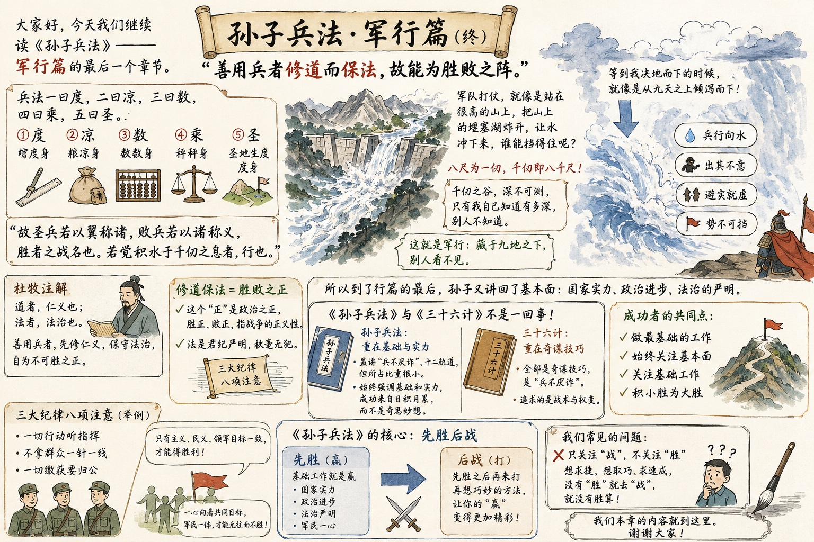
主讲人解读《孙子兵法》军形篇最后一章，强调‘修道而保法’是胜败之政，即战争的正义性和法治严明。他举了三大纪律八项注意的例子说明法治，并类比军队打仗如站在千仞之山决积水，势不可挡。最后指出孙子兵法核心是先胜后战，成功来自日积月累的基础工作，而非奇谋巧计，批评人们只关注战而忽略胜。
📖 全文解读 · 54句 · 5分4秒（点开看全文）
重温经典，以古鉴今。大家好，我们今天继续为大家来读孙子兵法，来读孙子兵法军行篇的最后一个章节。善用兵者修道而保法，故能为胜败之阵。兵法一曰度，二曰凉，三曰数，四曰乘，五曰圣地生度度身粮凉身，数数身秤秤身圣。故圣兵若以翼称诸，败兵若以诸称义，胜者之战名也。若觉积水于千仞之息者行也。杜牧的注解叫道者，仁义也，法者，法治也。善用兵者，先修仁义，保守法治，自为不可胜之正。四敌有可拜之细则攻之能慎。所以修道保法就是胜败的正，这个正是指政治的正，胜正胜败正道就是战争的正义性法是君纪严明，秋毫无犯。比如说三大纪律八项注意。可不要忘记三个吉名主义民义领军目标一致才能得胜利。不，心中对我有不有喜欢？三一前小不要回公路，人民的。苦难送。那精灵。你说话态度又个好。女儿买卖家家要工地空买红卖，我就上霸道，比三人都过了当年还我一。造家?北。为了爱护幸福的长江，处处注意到一志步行挑衅福的门剪了枢纽。我要举起人民展示，保卫祖国勇敢向前进，全国人民拥有你。军队打仗就像是站在很高的一个山上。然后把山上那个燕塞湖给炸开，让这个水给冲下来，那谁能挡得住呢？八尺围一仞，千仞就是比如8000尺。千仞之谷深不可测，只有我自己知道，有多深别人不知道。这就是军行，藏于九地之下，别人是看不见的。等到我决地而下的时候，就像是冻于九天之上。兵行向水，出其不意，避实即虚，势不可挡。所以到了行篇的最后，孙子又讲回了基本面，国家实力、政治进步、法治的严明。本在书的一开端其实就说了，孙子兵法和三十六计是两回事儿，是两个价值观。三十六计讲的全部都是奇谋技巧，是兵不厌诈。孙子虽然也讲兵不厌诈，也讲十二轨道，但是轨道在孙子兵法里面占的比重是很小的。孙子始终强调的都是基础和实力，成功都是来自于日积月累，而不是什么奇思妙想。成功者一直都是做最基础的工作，而且始终关注基本面，关注基础工作。我们说孙子兵法的核心是先胜后战，胜和战要分开来看，是两个阶段。先赢，基础工作就是赢，先胜了之后再来打，然后去想一些巧妙的方法来让你的赢变得更加精彩。我们的问题往往就在于关注战，而不关注于胜。所以想求想取巧求速，所以就没有胜去战，这就没有了胜算。我们本章的内容就到这里。
兵势篇 · 第五
3/3 段会造势比个人卖力更重要。把人放进对的势能里，平凡人也能爆发非凡战力。
- 奇正相生：常规与变招循环无穷，让对手摸不清下一步。
- 造势：势如拉满的弓，节奏如扣动的扳机，蓄力到位一击即中。
- 任势不责人：把人放在能借力的系统里，而非逼个人硬扛。
借势＞蛮干。选对行业、平台、团队和趋势，努力会被放大几十倍。

主讲人开启《孙子兵法》第五章势篇，称这是自己最爱但也最无聊的篇章，因为讲的是组织架构和指挥系统。他解释‘凡治众如治寡，分数是也’指编制管理，如林彪的三三制将最小作战单元从五人改为三人，以倒三角阵型冲击，使指挥整个四野如同指挥一个三人小组。‘斗众如斗寡，形名是也’指号令系统，视觉上如旗帜狼烟，听觉上如口令鼓声，拿破仑和武田信玄都是形名大师。他批评‘以正合，以奇胜’的常见误读，指出‘奇’应读‘机’，意为预备队，如曹操注‘先出合战为正，后出为奇’，强调留预备队决胜，而非奇袭。他举李愬雪夜袭蔡州为例，认为这更符合战略瘫痪理论而非孙子本意。最后总结孙子兵法三大误读：计非奇谋、知己重于知彼、以正合以奇胜实为预备队战术。
📖 全文解读 · 184句 · 14分4秒（点开看全文）
重温经典，以古鉴今。大家好，我们今天继续为大家来讲孙子兵法，今天会开启一个新的章节。第五章是篇，这个篇章从我个人以为是我最爱的一个篇章，只不过这个篇章也确实也最无聊的一个篇章。因为它主要讲的内容是属于组织架构和指挥系统，它是军事斗争和组织建设的永恒的话题。只不过讲这个兵法，大家好像就没有人爱听了。只不过能不能打赢主要的秘密其实就是在那些大家不爱听打瞌睡的部分，不在于那些人人都很兴奋的那些轨道。我们依然会有三个章节，会分三天来去把第五章讲完。原文是篇，孙子曰，凡治众如治寡，分数是也。斗众如斗寡，行民是也。士就是创造的势所必然，我只要造成那个事，就必然得到那个结果。曹操的注解叫用兵任事业，要用兵就要靠势，行和事有什么关系呢？在前面说了，做事要先看形，做起来之后就要靠势。形是实力，是战略，而事势也不能简简单单的把它说成是战术或者叫执行。经常被引用的就是荀越的有一句话叫服立策决胜之术，岂要有3，一曰行，二曰势，三曰情。行者言其大体得失之术也。事者言其灵时之意，进退之机也。情者，言其心志，可否之实也。故策同等而攻疏者，三术不同也。这里对于行的议论是很准确的，但是将事理解成了根据事态的变化而做出来的一些临时的应激制，宜进退之机。这不是孙子兵法讲的，是啊孙子兵法讲的是更是像人为制造出来的一种事态。比如说造势，有点是这个意思，先造势然后认势，随着造出来的这个事态去驱使团队，甚至去呼天唤地。孙子更强调通过造势去影响人的心智。所以荀彧说讲的那个情，其心志可否在孙子兵法当中，其实也包含在事的里面。不管他兴智行不行，只要给他造成那个事，他不行也会行。比如韩信的背水一战，就是把士兵造成置之死地而后身之势，他兴于横，所以也就拼死作战了。孙子兵法里面讲的士如果要用现在的话来说，一是战术，二主要是管理。孙子曰，凡治众如治寡，分术是也。斗众如斗寡，行明是也。管很多人跟管很少的人一样，是因为有分数。分数就是编制的意思，分就是分成联排、班团、军师等等，看你怎么分数呢？就是每个编制的单位有多少人，编制搞好了，组织架构搞好了，管很多人就跟管很少人一样，就和运用自己的手臂一样方便。在现代管理学当中，就是从军队管理学发展起来的。这个分数二字怎么分有多少数，那学问就大了去了。你看有好多公司整天都在研究组织架构，那怎么都没有研究明白，而且业务的变化越快，对于组织架构的变革的需要其实就越大。所以试篇讲的第一句就是讲管理，讲组织架构的问题。分数和行名和第一篇的那个记篇当中的五世七机的第五式法治，法者趋制，官道主用也，其实基本相通。曹操注解趋治就是不趋其志，筋骨之志，分数就是不屈之至。后面主要的行名讲的就是今古之治，古代的军队。什么是分数呢？就五个人我一个战斗单位叫做15，就是我们说的五元钱，那个大写的5。我们说队伍的伍当兵叫做入伍，就是这么来的。五个人我一个最小的作战单位，那25 100个人叫做一个卒，就是象棋当中的那个兵和卒那个卒那卒不是一个人，卒是25，也就是有100个人。现在给你一个连的是人数差不多。那五个卒就是500人，叫做一个旅。那一个军是12500人，就是25个旅。在古代军队当中是以25为1个单位，不断的进行递增的。古代的军队编制分数都是五的倍数，林彪发明了33制，就把最小的作战单元从五个人变成了三个人，所以所有的编制都是三的倍数，最小的作战单元就是一个战斗小组，每一个战斗小组有三个人组成。一个战斗班，由三个战斗小组组成一个作战排有三个班组成，一个连有三个排，一个营有三个连，三个营组成一个团，三个团组成一个师。所以林彪的三三制不同于古代的兵法，也不同于美国的吕，也不同于前苏联的师，是他自己独创的一个编制。三个人的战斗部队怎么打呢？选择有经验的战士做战斗小组的组长，散开，以倒三角的这个阵型来进行冲击，避免形成了一堆被敌人一梭子全扫倒了。要散多开，要以族长听到那个喊声为标准，不然就指挥不到了。所以林彪从最小的作战单位和战术开始进行射击，一直涉及到整个四野集团军，这就是分数，就是治众如智寡。指挥整个四野就跟指挥一个三人战斗小组一样，能够方便自如。斗众如斗寡，行明事也。斗众就是开塔指挥一支大军去打仗，跟指挥一个小分队一样。那靠什么呢？靠叫行和名，曹操的注解叫今奇曰行，今古曰明。行名就是号令。行顾名思义就是视觉上的号令，旗帜狼烟都是行名就是听觉号令。名字是喊来听的，说文解字里面把冥来自于冥冥之中的。冥是指晚上看不见，不知道对方来的是谁，所以就会问口令，谁？就会问这些话，对方回答的出来就是自己的团队。所以名字是用来喊的，不是写在纸上的，是听觉的号令。晚上部队所使用的号令、暗号都是属于明号令。有眼睛看，有狼烟信号旗之类的，也有耳朵听，冲锋号、集结号、击鼓前进、鸣鲸收兵这一类都是属于鸣。现在讲现代化战争，要讲信息化。其实军队从诞生的第一天开始，就是靠信息化在作战的。各国的名帅都是信息专家，拿破仑就是齐宇大师。日本战国的时候，武田信玄能够称雄，就是他规划和设计了全日本最密集也是最先进的智慧的烽火台系统。他从甲斐国辐射出去，而任何风吹草动，它放几种不同颜色的狼烟，就能传递信息，调动军队。所以武田信玄的刑名不是上阵柴油，他从基础设施建设就开始抓起了。组织架构和指挥系统是永恒的话题。一个架构时间长了就不适应了，公司一发展，原来的架构又不行了。所以不断的要搞组织变革，要搞部门之间的协调。大到国家如今搞改革，成立那么多人领导小组，其实就是一个组织架构和指挥系统的问题。神管县喊了这么多年，就是一个分数的问题。小到公司是职能部门的分数，还是事业部的这种编制的分数，各级的权限归谁指挥？下面的职能部门是归属地管还是垂直管？兵法讲这个其实没人爱听，但是能不能打赢，其实主要的秘密还是在于这些大家不爱听的部分。以正和以积甚孙子兵法当中被人最多误读的一句话就来自于士篇。是篇的原文有一句叫做三军之重，可使必受敌而不败者，击政事也。兵之所加，如以断头软者，虚实事也。凡战者，以正合，以击胜，故善出机者无穷如天地，不竭如江河，终而复始，日月事也。死而复生，40事也，生不过五五身之变不可胜听也。色不过五五色之变不可胜观也。位不过5，五味之变不可胜长也。战事不过积正，积政之变不可胜穷也。积政相生，如循环之无端，孰能穷之意思是什么呢？以正和以积肾最大的误读就是很多人把以积肾的积他不念奇，念积这是一个数学词汇，就是奇数偶数的积，在古代又被称之为余积，多余的部分。正兵安排好了，接下来就是这些积兵关键的时候来发挥作用，简单的来说就是预备队。不读奇怪的奇，曹操的注解叫先出合战为正，后出为基，赈机就是一个先后的概念。不要一下子把自己所有的牌全打完了，要总要留几张牌在自己的手上，关键的时候再打出去。两军对阵先以正合，镇兵合战，双方的主帅都在后面看着，到了关键的时候投入一支预备队，然后决胜，这叫出击制胜。但是大部分人现在都把它念成了出奇制胜，你的鸡就变成了奇，你就将车做就错了。实际上他应该读机，以正和以基甚并不是孙子发明的，在孙子前的一千多年仗就一直是这么打的。最早有一部皇帝兵法叫做卧奇文，又叫卧箕文。唐太宗李卫公问对里面君臣二人讨论到这本书的时候，李靖认为本是握鸡文。因为念机传来传去就变成了握机，机器的机就用机器的机，也对，预备队就是一个机动部队的意思，正和机甚无穷，如天地不竭，如江河千变万化。但是周而复始就像日月1样，死而复生像四季一样，不断的循环，来来回回就那么几招。所以机招并不多，是固定的元素，固定的套路，但用起来千变万化。就像声音不过是工伤觉之愈5，声的变化却听之不尽。现在来柬谱才来说，就是哆来密发索拉西奇歌音就能唱出所有的歌，是一个意思。色不过青黄红白黑，而五色的变化却观之不尽。现在知道红黄蓝三原色就能调出所有的色彩，味不过酸甜苦辣咸，而五味的变化却尝之不尽。全世界有那么多的菜式，其实味道都是酸甜苦辣咸当中的某一味或者是某几味的组合。所以战事不过激正，而激正的变化却无穷无尽。激正互相转化，就像是圆环一样，无始无终，无穷无尽。李泉的注解叫做当敌为政，棒出为击。正面的作战叫镇兵，斜刺里杀过来的打侧翼的那都是机兵，正兵击兵往往就是这么安排的。但是这个结果不是原因。如果两军对垒，正面战场上没动侧翼先冲击敌人，等敌人乱了阵脚，大部队再压上去。这种情况其实侧翼的那个小部队反而是正兵，正面的大部队反而是机兵。但是曹操的注解概念是很准确的，简单的说镇兵、机兵就是一个先出后出的概念。如果当敌为政，傍出为基，那就锁死了，就没有办法互相转化了嘛。所以积政之变不可胜穷也，击政相生，如循环者无端，就是这么个意思。机政之间怎么相互转化呢？其实很简单，就是已经投入战斗的就叫镇兵预备队。就是机兵预备队投上去就变镇兵。这个时候打下来的部队撤下来又变成了骑兵，随时又能再上去，所以骑兵就是还没有上战场的预备队的意思。有的书讲叫以正和以积胜的案例，喜欢讲李肃雪夜袭蔡州，率领的一支骑兵，大雪天直捣敌人的老巢，活捉了无缘计。人们都期待这样的一场奇袭得胜那个得有多爽。但是这样的德胜3000年就那么几回，这不是孙子兵法的价值观，以积甚的积被人误读为奇习得胜的奇，还是贪巧求素的心理在作怪。如果要给李肃雪夜习蔡州套用一个军事理论，不如套二战时期的那个叫战略众深战略瘫痪理论，就一个大众身绕过敌方的防线，直接把敌人的中枢给打瘫痪了。孙子兵法有三个地方被人误读最多，一个是计篇。前面说的计是计算衡量的计不是奇谋，技巧的技不是轨道。第二个叫知己知彼，百战不殆。人们都想去知彼，不知道主要的问题其实是不知己，要知己，就算不知彼也能赢。第三就是以正和以积胜，都想贪巧求素，其习得胜。实际上孙子兵法的以积胜的这个出击制胜，虽然也是出其不意的意思，攻其不备。但是分战法的那些排兵布阵，讲的是这个意思，而不是讲的奇袭，讲的是镇兵对抗，然后有一支预备队随时能够投入战斗的意思。这是我们今天和大家讲的军事当中的第一篇，是不是有点无聊？但是仔细想想，其实也挺有味道，我们下期再见。
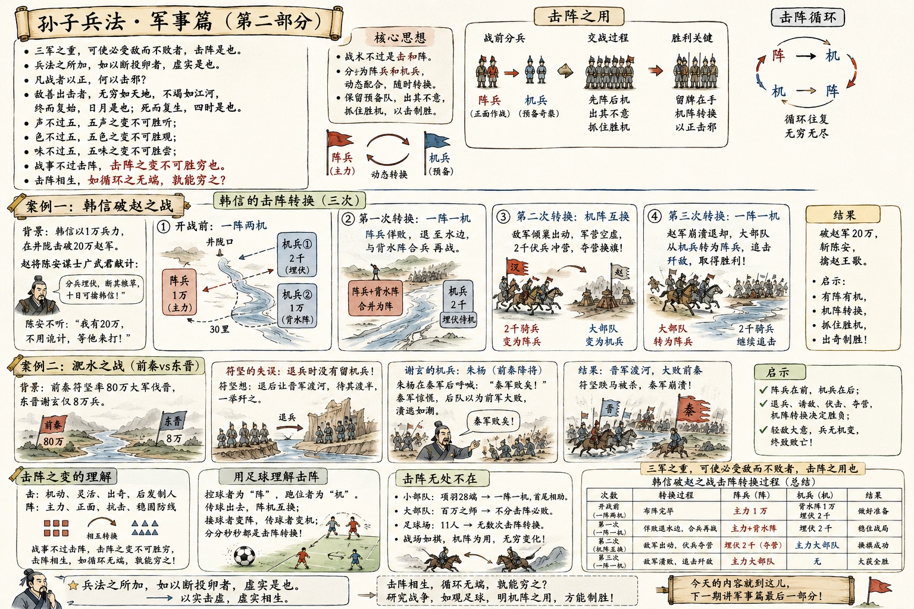
主讲人通过韩信破赵之战详细解释了《孙子兵法》中‘奇正’（机阵）的运用。韩信将兵力分为三支：两千伏兵、一万背水列阵的部队和自领的部队。战斗中，机阵多次转换：先以自领部队为阵兵诱敌，背水部队为机兵；退至水边后，两军合并为阵兵；伏兵趁敌营空虚夺营，变为阵兵；最后大部队转为机兵掩杀。主讲人强调，机阵是动态的，随时转换，如同足球赛中控球与跑位的配合。他还提到项羽以二十八骑分两组作战，以及淝水之战中苻坚因未分机阵而败的例子。
📖 全文解读 · 194句 · 15分11秒（点开看全文）
重温经典，以古鉴今。大家好，我们今天继续为大家读孙子兵法，来读军事篇当中的第二部分。三军之重，可使必受敌而不败者击阵是也。兵法之所加，如以断头软者，虚实是也。凡战者以政，何以击甚？故善出击者，无穷如天地，不竭如江河，终而复始，日月事也，死而复生，四时是也。身不过5，五身之变不可胜听。色不过5，五色之变不可胜观也未不过5，五味之变不可胜长也。战事不过激正，击震之变不可胜穷也。激震相生，如循环之无端，孰能穷志。意思就是战术不过是机和阵。简单的来说就是分战法，就是分兵，分兵为阵兵和机兵来去配合着打，而且阵机是动态的，可以相互随时转换，不要把所有的兵力都放在一块，不要把所有的牌一下打光。在战前就要分配阵兵和机兵，两支兵力互为犄角相互配合。交战的时候，也不要把所有的部队一下子都派出去，一定要留几张牌在自己的手上，要有预备队。先打出去的是阵兵，后打出去的就是骑兵。看到肾机出现的时候，再把疾病打出去，这叫出击制胜。我们用以前学过的一个案例，再从机震的角度来去学习一下。先讲韩信的破赵之战，韩信以一万兵力在景境这个地方击破了号称有20万的赵国军队。韩信出井进口之前，赵军谋士广武军给主帅陈安，陈安军建议分兵说景进道路狭窄绵延百里，您给我三万骑兵，我先去埋伏。等韩信进了景境这个地方，您深沟高垒，不要出战。我在后面掘了他的后路，断了他的粮草，十天他就饿死了，把人头送到您的帐下，陈安君不听，陈安君说，我有20万的仁义之师，我怕他干嘛不用跟他搞这些诡计，我们来等他来打就行了。韩信接到了这个谍报，陈安君没有采纳广武军的这个必胜之计，所以他才敢进兵。后来韩信见到了广武军，他说如果用您的计策，我就被擒了，当然这是客气话，他不会被擒。因为如果赵军用了广武军的计策，那他就不会来了，他就会想别的招了，或者就想胆暂他不打，这就是先胜后战，叫不胜不战。他知道谍报这个计策没有被采纳，所以他才来。韩信有没有分兵呢？他还是分了，离出境口还有30里，他半夜先分了两支骑兵出去，分配了这个任务，这个怎么打？一打清早就出了井进口，他先派了一万兵力背水列阵，赵军忘了看到了之后大笑，他说没见过这么列阵的，我们一个冲锋不就把他冲到水里去了吗？汉军也意识到了这一点，他说咱们背后是水，无路可逃，只有殊死作战才可以。所以这就是背水一战这个成语的来历。两千骑兵半夜已经派出去了，清早就把1万人的背水阵列好。韩信这个时候才将自己的大将的旗鼓一仗列好，自己大张旗鼓耀武扬威的从井亭口出来开始表演。所以我们看见韩信把兵分成了三支，半夜先派出去一支，两千人背水列阵一支，1万人自己带了一支。史实上没说多少，我们看哪个是镇兵，哪个是骑兵，怎么转换，怎么打。赵军看见韩信大将的这个旗帜和仪仗都红了眼，认为立功就在眼前。于是擒贼先擒王，开营出击，然后韩信接战。这个时候，韩信的兵力是一阵两击，一个正面阻挡的就是韩信自己带领的部队，那两支机兵后出的就是机兵，他自己带来那部队先打，那是阵兵，两个预备队在备着。背水阵列阵的是一支骑兵，半夜派出去，但现在不知道躲在哪儿的是另外一支骑兵。赵军有没有分政机呢？开战前他没分，他没有分兵去堵那个井，进口都在大本营这里面。现在有没有分兵呢？其实也分了，出营作战的就是镇兵，没有出营的就是预备队，就是那些机兵。韩信的下一步就是把他营里面的那些机兵也给调出来，让他空营。两军交战大战良久，还是赵军人多，韩信看着好像支持不住了。这个时候开始白退，而且退的比较狼狈，大张旗鼓，这些什么仪仗、旗鼓都被丢在地上，就是为了引诱赵军来抢，他把自己退入到了水边的军营当中，然后又率水军的那一万水边的那一万人杀出来殊死作战。这个时候韩信的兵就不是一阵两击，而是一阵一击。他自己带的部队和水边的预备队合在一处叫镇兵，半夜2000人叫骑兵，还没有出来，还在等待时机。时机靠什么呢？就是靠韩信丢在地上的那些旗鼓一仗。赵浩军看见仪仗有两个反应，一个是已经胜了，韩信兵败如山倒，全被他们撵到了水边，再去冲一下，就他们就可以把汉军给弄到河里去喂鱼了。第二是战利品得到了韩信的仪仗，这是巨大的荣耀和赏赐，都要去抢功劳。这个时候胜机出现了，这个时候机兵出现，战后军的骑兵留在军营里的预备队就倾巢而出。这个时候赵军没有了骑兵，他手里的牌已经全部打出去了，但是韩信手里还有一张牌没打，韩信等的就是这一刻，他的胜机出现了，出奇之胜的时候，到了半夜派出去埋伏的两千军队出发的时候，一个人带了一面这个汉军的红旗，冲夺了赵军的军营，然后就干了一件事儿，把赵军的旗子给拔了，插上了汉军的红旗。最后这个阶段韩信的阵机又是怎么来进行转换的呢？就是两千骑兵变成了阵兵，打出去的就是阵，没打的就是击。镇兵夺了敌营，敌人败退，其实还没败，只不过心里败了。因为看满城的都是汉军军旗要退，那一退就真的败了。敌人败退，守住营，不能让他退回来。这个时候韩信水边的部队就变成了骑兵，敌人要来解决军营的问题，看后面有敲鼓的，自己的军营已经被插上了汉军的红旗，老挝给端了，那就回师夺回军营。这个时候韩信的部队从后面追上来。赵军不得前面进不去自己的营地，后面又没有打仗的那颗星，于是就崩溃了。韩信此战破赵军20万，斩了陈安君，申擒了赵王昔。从这一战当中我们就开看看到了赈机之用，韩信始终有政有绩，而赵军是有政无绩。如果赵国的军营能有2000人，背着汉军的那2000人其实也攻不进去。但是韩信丢盔弃甲，甚至将自己的大将遗仗都丢的满地狼藉，营里的这些赵军就以为战斗已经结束了，于是这个时候就要冲出去抢战利品，那不然的话就上不了公劳部了。以政和以击胜，故善出击者无穷，如天地不皆入江河。战事不过激政之变而已，但是激震的变化不可胜穷也，激震相生如循环无端，孰能穷之所以说韩信就是一个善出机者，无穷如天地，不觉如江河，激震之面不可胜穷。激震相生机可变阵，正可变机，循环往复，没有手没有尾，无缝可以转换。从镇兵机兵的方法去看好多仗怎么打就看懂了。虽然没吃过猪肉，但是看猪跑也能看明白，就跟用足球赛来理解真机之变一样。足球队里面的振兵师谁呢？就是控球的人，跑位的就是击兵球一旦传出去，震机进行转换，接到球的变为阵，刚才传球的就变为击。其实球场就跟战场差不多，到处都是，分分秒秒都是机阵转换。机阵之变，不可胜穷。三军之众，可使必受敌而不败者，击阵事也。兵法之所加，如以断头软者，虚实是也。韩信破赵之战，再分解一下战阵当中的击阵转换过程，一共转换了三次。开战前布阵是一阵两机，自己率阵兵作战，背水列阵为一击，两千骑兵埋伏为第二击。第一次激震转换是阵兵扬败，退到水边阵地，与阵地当中的队伍合兵一处，然后反身再战。这是一阵一击，背水阵当中的部队就投入战斗，变成了镇兵。第二次激震转换，敌人倾巢出动，敌营空了2000伏兵起来，冲入敌营夺营换骑。这个时候两千骑兵为镇兵，敌人想转身回到自己的军营，不跟前面的部队打了，那相当于韩信的大部队在这一刻从镇变为机主，战场就不是这里的人了。这一次的转换是机阵互换，机变为震震变为机。第三次机震转换，这个时候敌人退却，惊恐指挥系统也乱掉了，胜机出现。这个时候韩信叫出奇制胜，大部队从机兵转换为镇兵，掩杀过来获得胜利。所以我们看到了镇兵机兵不是一次规定好谁是正谁是机，而是随时都在变，对彼此相互使用，循环往复不断变化。韩信的排兵布阵就是阵机之用。韩战阵当中的5掌组长就是阵和机。在阵阵当中每一个战斗的单位都有阵有机。从微观上来说，阵机就是战术的配合，不是一窝蜂上去打，而是有章法，谁在后面谁在前面，有配合有先后。所以孙子说战事不过激阵，击阵之变不可胜穷。镇兵击兵并不是大部队才用，你看像项羽到了乌江边只剩了28计，28个骑兵。这个二十八骑也不是一起冲杀，而是分为两组，一阵一击，首尾相助，这是战斗的基本原理。我们可以用足球赛来理解阵击之，用控球的为阵跑位的就是技。球一旦传出去，阵绩就互相转换，接到球的变为正，刚才传球的变为急，正兵攻到边线，对方中路出现空挡甚急出现。这个时候传中，禁区内的击兵转为正兵，出其不意，攻其不备，然后再出奇制胜，射门球进，大概是这种打法。这个球场就像战场一样，分分秒秒都是击阵转换。击阵之变不可胜球，击阵相生，就像还之无端孰能穷。之所以咱们研究战斗，就像研究足球赛，没，别以为这个出奇制胜，就是出了奇招就能赢。这个世界上没有什么奇招，其实就那几招人人都知道，就是没有人能做到。其实阵型足球的阵型无非就是532433442，还有铁桶阵901，对吧？输极眼来109，输红了眼，最后30秒00011对，全部上战术。不过攻守平衡，中路边路关键在于教练的领导管理的能力，战术的思想，战术的一些智慧，球员的体能技术经验和训练和灵气。不抓这个，哪有什么奇招能让你得胜。足球场上只有11个人，就有无数的机阵，项羽有28骑，也分为一击一阵。小部队有机阵，大部队也有机阵。哪怕你有100万军队，不分击阵还是会败。再看一个战力叫肥水之战。前秦复坚率领80万大军伐晋，在肥水边上列阵。谢玄只有8万兵。他派使者跟傅坚说，你把军队列在河边，我渡不了河。这样咱们没办法打，你稍微往后退一退，让出点地方来，让我渡河，我和你在一决胜负。福坚同意了，他指挥军队来后退。军队的这个后退的过程当中，后面的部队不知道怎么回事要退军，以为前面战败了，一退就乱掉了。那谢权渡过河来摧枯拉朽打破清军。傅坚做错在哪儿呢？人人都说他愚不可及，那说人家喊你退你就退。傅坚当然不会那么傻，他有他的算盘，他和傅荣商量了，那甲同意谢选退一退让他渡河，但是不是等到他渡过来再跟他打，而是等他渡一半，再掩杀过去，就把他们全部消灭在河里。金军根本没有机会上岸，叫兵半渡可击，这是教科书式的做法，没有问题的。那么问题在哪呢？问题就在于没有分兵，没有分机阵退可以，你侧翼应该留一支机兵。如果正面有什么问题，或者谢野玄居然上岸杀过来了，这个时候侧翼拦腰给他一击，他还是占不到什么便宜。那副坚太大意了，实在没有把谢玄当回事，他就想稍微退一退，赶紧让他过来那渡一半，把他们都按死在河里得了。所以就没有做机兵的安排。但是谢玄有机兵，谢玄的机兵是朱旭。朱旭本来是东晋的将领，之前和前秦作战的时候兵败被俘了，他投降给了傅坚，傅坚用他为将，这是傅坚反灭亡的最主要的原因。他的性格就是用人不疑，那夷人也用他。手下带兵的一半都是朱旭这样的心怀意志的人。在肥水之战之前，傅坚派朱旭去劝降谢石，朱旭得到了机会，见到了谢石，跟谢石说秦军虽然号称80万，但是还没有集结完毕。如果尽快作战，击溃秦军前锋部队还是有机会打败福坚的。这个时候谢时谢玄得到了朱旭的情报，才赶紧安排快速打仗。富坚指挥军队往后退，后面的部队不知道怎么回事儿，谢玄的机兵朱旭这个时候就起作用了。朱旭大声惊呼，还有秦军败衣，秦军败矣，这个时候根本还没有打起来。秦军看到前面战退，听到后面的有人在喊，心惊胆战，狂奔乱逃。这个时候禁军就渡过河来了，傅戎众马去喝止逃兵，结果运气不好，马失前蹄摔下来了，还被禁军给杀了，秦军就真的崩溃了，这就是赈机之变。这一段里还有一句话叫兵法之所加，如以断投卵者虚实事，也就是以实积卵的虚实之道。因为在试篇以后，还有一篇叫虚实，这就留到下一篇再来去讲。今天的内容就到这儿，我们下一期和大家讲军事的最后一个部分。

主讲人通过水漂石、鹰捕鸟等比喻，解释“势险节短”原则：蓄势要险峻如满弓，节奏要短促如发机。他举猎豹捕羚羊需摸到五步内为例，强调前期准备充分、动手简洁高效。又引史玉柱广告案例，说明成功源于前期蓄势而非表面功夫。接着解读“纷纷纭纭”“浑浑沌沌”等句，指出通过示乱、示怯、示弱来欺骗敌人，实则有严明组织。最后以曹操守合肥锦囊妙计、韩信背水阵、淝水之战等例，说明“择人任势”即利用地形、气势、因势利导，如转圆石于千仞之山，势不可挡。
📖 全文解读 · 229句 · 17分57秒（点开看全文）
重温经典，以古鉴今。大家好，今天继续为大家来读孙子兵法是篇的最后一个章节。积水之急，至于漂食者是也。治鸟之急，至于悔者者竭也是故善战者，其是险，其结短事如锅弩，结如发髻，意思就是湍急的水之所以能够将巨石冲走，是借助了水势，而阴隼迅飞扑猛，以至于将鸟雀捕杀，这是他靠掌握发动的时机和距离。所以善于打仗用兵的人，他的兵势是迅猛的，他的节奏是短促的，险峻的兵势就像是张满的弓弩，短促的节奏就像是触发的弩击一样。在这里关键讲的是骑士险骑节短视线和截短就是把握截短关键短就是近距离近时间，短视线就累积的势能最大，力量最大。截短是释放的能量的距离最短，时间最短，那就能够命中，而且有较大的杀伤力。李泉的注解，罪得本质叫使不急则不远，始不近则不重。如果你射箭的力量不够大，箭速不够快，你就射不远。但是如果你离目标不够近，你就打不动他。善射者不靠百步穿杨，我们从小就听那些百步穿杨的故事，兵法就告诉你，不要指望什么百步穿杨，要十步以外来去射簸箕，那样才能射中射穿。就像是猎豹妈妈从小教猎豹去猎羚羊的时候，不能在百步之外发动追击，要悄悄的摸到五步之内，然后从草丛中一跃而起。最重要的是一扑就能扑到他一下子，没有扑到他一跑，你就不一定追得上了。我们再回到孙子所说的，善战者，无志明，无勇功，胜于益胜者也。善战者都是没有智慧的名气，没有赫赫战功，因为他打的仗都很容易，所以真正的善社者也没有什么百步穿杨的美名，因为他都是摸到猎物眼皮底下再去打他。不懂的人就认为这不算本事。比如经常有人说石玉柱一年打三个亿的广告，卖那个脑白金，这算什么本事？如果我有三个亿打广告，我比他干的还好，那你没问人家那三个亿怎么来的？是天上掉下来的吗？那当然不是，给你三个亿你真的会干吗？也许也未必。视线和截短是我们设计任何工作方法的基本原则，就是前期准备策划要很充分，最后动手的事儿要很少，很简单、很有效。最怕说一个方案说了俩小时还没说完，那先这样，然后再那样，然后这边怎么样，那边怎么样，就像一个巨大的交响乐，少了一个乐手都不行，最后这个事儿肯定弄不好，概率实在太小，我们要把一张弓拉得满，然后摸到猎物眼皮底下射出致命一击，这就要一战而定，击就要一发而中。所有的功夫都在研究这一击，蓄积这一击的能量，打磨这一击的箭头，选择这一击的时间和地点，而不是乱箭齐发。因为准备好的骑士险，其截短这一击必须保证命中，而且只需要射一箭。而乱箭齐发不仅射不中一大堆人，每人一支箭，你还要花好多钱，花好多精力。这就是孙子兵法的一贯思想。勇还是气哈，不是人的问题，是士的问题。原文叫纷纷云云，斗乱而不可乱者，浑浑沌沌行原而不可败也。乱生于智，妾身于勇，弱身于强，治乱术也。勇怯士也，强弱行也。故善动敌者，行之敌必从之，与之敌必取之，以利动之以足代之。意思就是纷纷云云斗乱而不可乱，浑浑沌沌行原而不可败。意思就是看似混乱却有条不紊，浑浑沌沌是阵容很完整，无懈可击。曹操的注解叫惊其乱也，士敌落乱，以今古其之，车技转而行远者，出入有道其整也。这一段讲的都是动敌，让敌人感觉我很混乱、很弱小、很胆怯。实际上我很奇整、很强大、很勇敢。纷纷就是旌旗翻转的样子，云芸是世卒之貌，纷纷云芸斗乱而不可乱也，意思就是旌旗翻转，一合一离。士卒进退，或来或往，看上去乱乱糟糟，但实际上法令严明，职责清晰，各有分数，扰而不乱。曹操说视敌若乱，今鼓其之，则更有一层意思就是让敌人远远看到我们荆棘杂乱。实际上我们悄悄的有筋鼓之身来进行指挥，敌方是听不见的。王羲的注解叫降欲内明而外暗，内治而外混，所以世敌以清疾者也。总之就是为了欺骗别人，浑昏沌沌行原而不可拜也，这讲的是阵法，杜佑的注解叫浑浑是车轮转动的样子，顿顿是不足奔驰的样子，就是车和人走路的样子。其行纵横援而不方直取，各有所应，就是怎么行缘而不可拜呢？杜牧引用了卧齐文当中有一句解释说，前面说到皇帝兵法，叫四为政，四为姬，虞姬为卧，先出由君定两端，这叫正数有9，中心有灵。大将卧之不动，以至4面8成就军队共分为九个部分，四个部分为镇兵打将的时候，先开出去，四个部分为骑兵预备队，看战事的发展变化，关键的时候投入战斗。还有一个叫零头，叫握兵，握在主帅手里是不动的。孙子兵法后面有一句叫不动如山，这个主帅不能动，主帅一动往前就是胜利战斗结束往后就是全军溃败。所以就算敌人杀到主帅面前，把那个卧兵上去抵挡，主帅都是不能动的。荆旗是不能倒的，特别是那个帅骑是更不能倒的。主帅一动帅即倒，人心就倒了，大家都逃了，当然逃，该逃的时候也得逃。先出游军定两端，就是布阵的意思。游军各出旗，各个部队的旗帜先定地界，也就是我们现在所说的，在军队当中那些标兵就定地界的军队，哪支部队在哪儿？游军插上旗帜，然后定好地界，各部队在各自旗帜下各就各位四围阵四为机。这就是传说中的八阵图，不是诸葛亮的发明，他首创是皇帝和他的大将封后，又叫封后8阵兵法图，卧箕文又叫封厚卧箕文孙子的佣兵思想也是继承了丰厚的思想。后来诸葛亮的八阵图，包括唐太宗还编成大型歌舞剧叫秦王破阵乐舞，原型都是封厚8阵图，距今天应该有4500多年历史。乱胜于志，切胜于勇，弱胜于强。曹操的注解叫皆毁形逆情灭，就是假装给敌人看，隐藏我自己军队的实情。让他看见乱其实叫智，让他看见怯其实是勇，让他看见弱其实是强。乱胜于智要军队非常军纪严明才可以，才能做到表面乱糟糟，实际上井井有条。怯身于勇，要超出一般的勇敢，才能假装败退去吸引敌人。弱胜于强，要有超凡的实力才能示弱，让敌人倾曹来攻。所以治乱，数也勇怯，视也强弱，行也治还是乱是分数的问题。分数在势篇当中第一句其实就讲过了，叫凡治众如治寡。分数是也分就是分别术是人数，讲的就是组织架构，不区行物。一个部队分别是多少人是勇还是怯？这是兵士的问题。所谓驱士人以战，如果我们把没有经过军事训练的人驱使的去作战，那他怎么能勇敢呢？那就置于死地而后生，不战就得死。在这个形势逼迫之下，就每个人都变成了亡命徒了。那怎么让兵士勇敢呢？韩信就让他们背水一战。所以是勇还是怯，不是人的问题，是士的问题。强弱是一个世刑的问题。刘邦派使者去看匈奴冒顿，冒顿给他看的全是老弱病残，人是老弱病残，马也是老弱病残。于是刘邦就上当了，结果30万大军在白登被冒顿给包围，差点回不来。所以最后的总结叫故善动敌者行之，敌避从之，与之敌避，取之以利，动之以足代之。所以意思就是善于调动敌人的人，不论向对方展示出什么样的军情，敌人总是听从的。给予敌人一点点好处，一点点小力，敌人就会来夺取。用小力去诱惑敌人，再用强劲的部足去对付他。所以择人任势就是气势，地势应势，故善战者求之于势，不择于人，故能择人而任事。任事者，其战人也，主转木实。木实之性，安则静，危则动，方则止，源则兴，故善战人之势，如转元石于千人之山者，势也。意思是什么呢？意思就是形势比人强，俗话说胜负之道在于怎么造势，这得主帅自己去研究，而不求于下面的人，什么事没干好，你也不能骂下面的人不行，执行力太差什么的，或者强逼着下面的人去干。是你自己没有安排好，即便是人不行，也是你自己没有选对人。所以叫善战者求之于事，不责于人，故能择人而任事。所好的领导者求之于事，不要责怪下面的人能够造好事选对人，这很重要。杜牧的注解叫善战者先良度兵士，然后良人之才遂短长，以人之不责怪说下面的人不成器，就是在对的地方用对的人，地方不对，人不对，都是领导者自己不对。战立就是什么？给大家讲个例子，就是曹操那个锦囊妙计的故事。曹操去讨伐张鲁，在汉中这个地区留了张辽、李典、越境七千多个人去守合肥。临行前给护军薛涕留了一个信封，说敌人来了再打开。曹操大军离来还没多久，孙权就有率10万人来去打合肥这个地方。四位大将赶紧去把信封打开，里面写了，如果孙权来，张李二将军出战，越将军是护军，不要出战。大家都不知道怎么回事，张辽懂了，他说丞相出征在外，如果等他来救我们，臣已经破了，丞相这是叫我们趁他的兵士为何先给他一下，择其威势，然后回首胜败之机，再此一举。于是李典和张辽两员猛将趁着孙权立足未稳立刻出战。果然打破孙权，吴军夺气气势没了，张李二将在回到城中守备守城，那些士兵心安气盛，孙权挨了一拳，再重新收拾军队，再来攻城，攻了十天打不下他自己就退了。孙胜的评论叫，兵者诡道也，合肥之首啊，孤军无援。如果专任勇者则好战生患，专任怯者则巨心难保，且比重我寡。他人多必有惰性，我以亡命之师击他，贪惰之卒，其事必胜，胜而后守，则必固矣。所以曹操杂选武力曾以一同视志而应一切，如他神机妙算。李世民的大将李靖就说兵有三势，气势、地势和阴势。气势是什么？气势？就是你内心强大，然后别人也认为你强大。李靖说将轻敌势，乐战志利青云，尔等飘风，谓之气势。这叫在战略上藐视敌人，在战术上重视敌人，气壮山河就果然会有山河一般的力量。我们在平时工作谈判都有体会，关键就是气势，气势就是权利。如果别人看的看见你，先让你三分，你就先赚了三分。有些明星耍大牌，明明是无理取闹，别人也就认了，这就是屈服于他的气势。马克吐温有一本小说百万英镑啊，揣着百万英镑的支票就可以到处白吃白喝，这也是气势。气势不是虚的，气势是实的，是实力积累出来的，虚张声势也不是装出来的。就比如那个百万英镑的气势，关键在于百万英镑的支票是真的。如果你是假的，那你气势就起不来。每一个成功的人士都能体会到自己气势的变化，那真不是虚的。越成功社会越认可你，你的气势越大，所向披靡。你做事情就会越顺，气势一是实力做底那叫底气，有底气气势才上得来。就是别人得于认，被你的气势压倒，压不倒，那就得还得较量。什么是地势呢？李靖说关山峡路，羊长狗门，一夫守之千夫不过谓知地势天时、地利人和，地势就是占经地利。这是你的王牌，你有一张王牌抓在手上，不管他有天大的本事，谁也没有办法跟你抗衡。你如何能得到这张王牌呢？就是看谁也没有看到他价值的时候，你先把这块地给占了。那个地一直在那儿，就像那个牌一直在那，谁摸到是谁的，关键是你得知道那张牌是王牌，就像诸葛亮似的街亭，街亭就是王牌，这就是地势，街亭在地势就在，街亭没了，地势也就没了，地势没了你怎么打都没有用，所以只能往后退。第三叫因势，因势就是因人之势，根据对方的势来因势利导。李靖说，因敌怠慢，劳逸饥渴，前因未舍，后军慢计，未之因势。前面说到曹操的锦囊妙计，就知道孙权来的人多，人多的必然要利用人多的优势，先到的必然形态上就等着大部队到齐了再动手。他利用这个兵士，趁他前营未舍，前面先头部队还没有安顿好，后军半骑，后面的军队还没有到齐，先给他来个迎头动击，他的气势被打下去，我军的气势就旺了。所以英势就是纵横百阖，百合就是开河，一开一合调动敌方，根据对方的兵势变化，随时痛击对方。任势者，其战人也如转木石，木石之性，安则静，危则动，方则止，远则行。任事曹操的注解叫任自然，是顺其自然，就是你要先设计好自然，把对的人放到对的地方，那一切就会自然而然的发生。你就把人当木头石头好了，他的性情是固定的，投之安地则安，投之危地则危，那个木头石头自己是不会回避的。苗晨的注解叫木石重物也易以释动，难以利以那个大树、大石头。你想靠想要靠力量去搬动它，你根本搬不动。但如果你把它放到山顶上，利用山势而不是蛮力，你轻轻一推，它就会雷霆万钧的滚下去。军队也一样，三军之重也可以势战，不可立史，自然之道也。韩信破赵之战，他把一万人的军队背水猎阵，面对敌人20万人人殊死作战。为什么？因为韩信是任士而不是责人。那个士就是退后只有死路一条，你只能往前跟敌人拼命。肥水之战富坚率百万之众，对进军8万，虽后退者斩，但是也挡不住士兵的逃跑，因为那个士是有路可逃，人人都夺路而逃，当官的来斩你，你斩再怎么斩你也没有来的，敌人斩的多，为什么打包围战通常都要留一面给敌人逃跑呢？那也是造势，不要给让他有殊死作战的那个势，让他有逃命的势，这才能让他在逃跑的时候歼灭他，而不用跟他拼命杀敌一千自损八百，逃跑的时候，路线上再去埋伏一支骑兵，那就完美了。故善战人之势，如转原石于千仞之山者事也。事篇的最后有孙子总结叫什么是士，什么是士？就像在一千仞那么高的山推下来一颗圆的石头啊，谁能抵挡得住呢？我们在中学物理学过式的那个词，就是等于它m gh乘以对吧？势能等于m gh H就是势能等于质量乘以重力，加速度乘以高度。山上的圆石头有它的势能就等于它的重量乘以山的高度。如果石头从山上滚下来，势能就会转化成动能。动能是多少？我们学过的二分之1MV1平方，对吧？2分之1质量乘以速度的平方，肾有多高，石头有多重，速度就有多快。谁也挡不住。杜牧的注解叫，转石于千仞之山，不可遏之者，在山而不在时。战人有百胜之勇，强弱一贯者，在事而不在人。石头滚下来有多大力量，不在于石头有多重，而在于山有多高。士兵、士勇、士怯，不在于他的性格，主要你把它放在什么位置，什么形式上。王羲的注解叫石头自己不会转，因为山势才不可遏制。战斗也不能强求旺盛，因为兵士不是你强求得来的。所以善战者任事不认人，任事而后责任，把对的人放到对的地方，这就是领导力所在。这是我们和大家聊的试篇的全部文章。附录也是有试篇的全文，希望对各位能够有所帮助，我们下一期虚实篇再见。
虚实篇 · 第六
5/5 段牢牢掌握主动权：调动对手而不被对手调动，集中力量打他最空虚的地方。
- 致人而不致于人：抢占主动，让对手按你的节奏走。
- 避实击虚：避开坚实处，集中优势打薄弱、必救之处。
- 形人而我无形：让对手暴露虚实，自己却让人捉摸不透。
别被动救火。主动设置议程，把有限资源集中砸向对手最薄弱又最不能丢的环节。
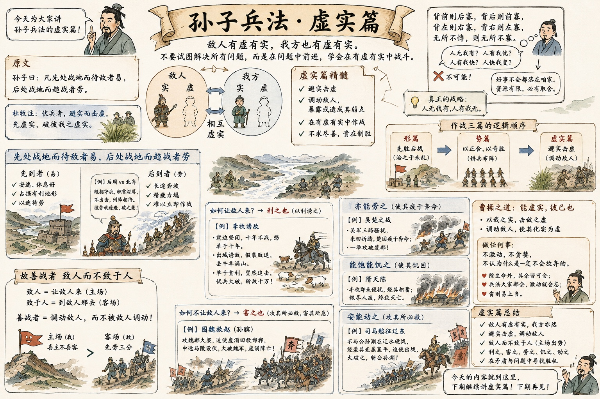
主讲人指出虚实篇的精髓是接受自身有虚有实，不试图解决所有弱点，而是通过调动敌人、暴露其弱点来避实击虚。他举例说，人无我有、人有我优等口号是狂妄的，真实战略应是“人无我有，人有我无”。他引用孙子原文“凡先处战地而待敌者佚，后处战地而趋战者劳”，并用出差见客户类比：主场只需2小时，客场则要两天。他还讲了后周段韶雪中待敌、耿弇围点打援、李牧以利诱匈奴、孙膑围魏救赵、伍员疲楚、隋朝烧陈粮仓等战例，强调致人而不致于人，避免因贪婪或激动上当。
📖 全文解读 · 164句 · 12分14秒（点开看全文）
重温经典，以古鉴今。今天为大家来讲孙子兵法的虚实篇。虚实篇讲的是什么呢？就是敌人有虚有实，那我方自然也会有虚有实。不要试图去解决自己所有的虚，要学会在有虚有实当中战斗。哎也不要试图解决所有的问题，而是在问题当中前进。这就掌握了虚实篇的精髓。原文是孙子曰，凡先楚战地而待敌者易，后楚战地而趋战者劳。他先讲了什么是虚实，我杜牧的注解叫伏兵者避实而击虚，先虚实破彼我之虚实。也就不管怎么防备，其实彼此都是有弱点的。你要做的就是想方设法让敌人的弱点暴露出来，甚至想方设法去造成敌人的弱点，然后避实击虚。在孙子兵法当中，刑篇、事篇和虚实篇就是讲的作战的三篇。先是讲刑篇要先胜后战，然后讲事篇要讲以正和以击胜，讲排兵布阵之后再讲虚实篇，讲避实击虚，这是逻辑顺序，是不能乱的。虚实就是什么？就是注意敌人的虚和实，我也有虚和实，敌人有弱点，那自然我们也会有弱点。能不能把我们所有的弱点全部做实了呢？把所有的地方都防备好一点，都不虚呢？那那是不可能的。因为所有的地方都防备好，就必然所有的地方都防备不好。因为资源是有限的，人的关注点、精力、金钱都是有限的。虚实篇后面有一句话叫背前则后寡，背后则前寡，背左则右寡，被右则左寡，无所不悖则无所不寡。意思就是不能好事都落在咱家，那不可能所么什么好的事情都落在我们这儿，都能准备的很周全。但是人们往往就愿意相信这些事儿，这好事都会落落在咱家。因为人们喜欢这个假设，所以我们时常有一些一厢情愿的痴心妄想。比如我们小的时候就会被教育叫人无我有人有我忧，人有我快，人快我变，就是不承认自己是人类的狂妄之言。你想别人没有的你有，别人有的你比他好，别人好的你比他快，别人快的你还能够懂变化，懂变通，那这怎么可能呢？这个前提就是别人都是人，而你已经不是人了，你做了神了。如果是这样的话，其实兵法就没有用了，因为不需要什么避实击虚，你只要用你的任意部位去攻打敌人的任意部位，你一定会赢。因为他都是以时击卵，他都不堪一击。所以人无我有，人有我优。什么人有我快，人快我变是以句风化。真正的战略和正常的战略是什么？就是人无我有，人有我无，这才是真实的世界。所以在了解知己知彼百战不殆的时候，我们说常常主要的问题是我们不知道自己，而不是不知道敌人。但是我们很容易去关注别人，却不常常关注自己，对吧？以为自己当然就知道自己了，其实最不知道的就是自己。同样学习虚实，也不能只关注别人的虚实，而以为自己什么都做的很实，不论怎样做都会有虚有实，也不可能把所有的虚都补上，其实都虚。所以孙子曰，凡先处战地而待敌者义，后处战地而驱战者劳的意思就是先抵达战场，等敌人来就比较易意是什么？就是安逸贤逸。士兵和战马都比较的安逸，休息的比较好，精力都比较充沛，占据了有利地形。得了地势，你敌人来，我竟然就很好的能够打你。后来的人好地方被敌人给占了，你长途奔波而来，那你不可能马上就要立刻打仗。如果你立刻打的话，这样就会比较劳累了。这句话其实比较好理解，就像是我们出差见客户一样。其实你开2个小时的会，如果我方是主场，别人在我们这儿到我们的办公室来，我们只要安排2个小时就行了。但如果我们去见对方，我们要坐飞机，我们要住酒店，肯定花两天的时间。有一个例子就是后周和北齐打仗的时候，后周的军队来打北齐的大将段韶守辰。这个时候正好是大雪之后，积雪很深，后周的军队步组步兵为主为先锋，我慢慢往这边走，赤候来报说敌军离城还有两里地，这个时候段韶手下的大将都想出击，派兵出去。段韶说步兵的气力有限，今天积雪这么深，他们走起来很费劲。我们这个时候冲出去，其实也不方便，不如列阵等待，彼劳我逸，破之毙。果然等到敌人走过来的时候，他列阵相待，最后打赢了打破周军前锋部队全部被干掉了，后面的部队他也就撤退。故善战者致人而不治于人。致人是让敌人来，致于人就是到敌人那去，善战者就是能调动敌人而不被敌人调动。后汉时期，张布手下有个大将叫费义，派他的弟弟费敢守据里这个城池。耿眼进兵要打距里，他逼近距里的时候，他伐了很多的树木，并且放出这个扬言，要说我要把沟壑这种战壕给填平了，然后去攻打城池。因为以前的城池外面是有护城河，那是有战壕的。他要说要把这个战壕给填平了，过了几天有那个降兵就投降他的部队，费议听说耿眼要攻打具体这个地方，准备来救耿眼。这个时候听到了消息，就命令军中的士兵加紧修这些战备器具，砍木头，三天之后攻城，然后再假装放松，把那个看押的俘虏给放跑了。俘虏回去之后告诉费邑，费议果然提前来救，因为他必须得老老实实尽快来救。这个时候耿眼分兵三迁去守住距里这个地方，其他大主力部队设埋伏，在那个费义的必经之地设伏，然后大获全胜砍了费义。这就是最典型的围点打援那个战术，调动敌人的援军来，然后半途设伏去伏击他。张裕的注解叫制敌来战则比势常虚，不往负战则我势常识此虚实，彼我之术也。虚实比我就是要调动敌人，形成对方军力空虚，而我以逸待劳这样的一种态势才可以。杜佑的注解叫，两军相远，强弱相当，彼可立险而来，我不可立险而往。一定要想办法让他来，而不是我去。关于治于人而不治于人，曾国藩也有一句话叫喜主不喜客，什么意思？就跟踢足球一样，主场是有优势的，那客场先弱三分，想办法要让自己打主场，永远让对方打客场，这才可以。能使敌人自治者利之也。能使敌人不能治者害之也，故敌亦能劳之，保能击之，安能动之。虚实篇讲的是什么？曹操讲的叫能虚实，彼己也，敌人有虚有实，我也有虚有实，打仗的时候就要以我之实击敌之虚，这就需要调动敌人，让他化石为虚。善战者致人而不至于人。就是让敌人来，我打主场，他打客场，那怎么能让他自己来呢？就是利之也，以利诱之。有一个例子就是李牧，李牧肃边坚闭青野，关闭城门，十年不打，憋了单于整整十年。然后他挑了个日子出城去引诱单于，引诱匈奴送了几千人给他，还假装败退，慢慢的丢的牛羊满山遍野都是。单于已经饿了十年没抢到东西了。那一看这么多的牛羊遍地都是，一激动忘了兵法，然后清巢来抢。这个时候李牧社伏兵大破单于10万计，痛的他几年都不敢再来以粒诱之。这么简单的一个当单于也会上钩，为什么？就是因为太激动，十年他没抢到一只羊，没上场，打过一场仗，单于都已经快疯了。人为财死，鸟为食亡，见小利而亡命，控制不了自己，这就是没办法的事情。能使敌人不得志者害之也不想让他来，或者要把他调离战场，那就要攻其所必救害其所急，他必然顾不得我要去救自己的急。典型的战力就是围魏救赵，庞涓率魏军打赵国，孙膑率齐军要去救赵国，但是他不去赵国的主战场，他反而发兵攻打魏国首都大梁，国都被攻，魏军就没有办法在赵国首都邯郸待着，他必然回师来救，邯郸之围就解了。这个时候孙膑就来一个围殿大院，在半道就马陵这个地方来设伏，又是我主比克，我实必虚，我一比劳，然后就打破了这个魏国的军队。庞涓在这一战当中也阵亡了，亦能劳之，就是要我一笔劳。如果他也一就想办法让他劳，让他疲于奔命。这个春秋时期，吴楚交战五元，设了三支骚扰部队，哼，大张旗鼓的去打楚国，等楚国全国动员起来，吴军又撤了，等楚军解散回家，吴军的第二支部队又来了，就这么来回折腾的。楚国人是疲于奔命，也没打上一仗，突然一针打三军进出，一下子就攻破了楚国的都城。这也是春秋时期第一次一个国家的国都被攻破的战争。隋朝灭陈其实用的也是一个办法。每当陈国粮食丰收的时候，隋朝就立兵木马要开始打仗，等陈国紧急动员好了之后，他又不打了，来回反复折腾，那庄稼没收好，这个人心心力交瘁，陈国饱能积之，什么意思呢？就想办法让他饿。其实说到这个故事，隋朝灭城的这个故事也是一样，就是江南气候温暖潮湿，房子都是茅草房子比较多，就蓄那些积蓄也不是用地窖挖一个什么地窖藏起来，都是在茅草房子架起来的。隋朝就派很多的小分队搞破坏大火树是只要有风就放火，只要有风就放火，你只要盖起来它再烧，搞得整个城国名穷才尽，都被烧完了。这也是一个例子。隋末的时候，宇文化及率兵攻打李密，李密知道宇文化及粮食比较少，假装打不过，那就请和宇文化及很高兴，那就开始签合约。其实李密用的是缓兵之计，就是拖时间。等宇文化就把粮食吃完了，李密这个时候也不喝了，当兵吃粮，你没有粮食的士兵就不会跟你打仗了，于是宇文化及手下的很多士兵都投降了李密，宇文化及这个时候就败了。安则能动之，曹操说，攻其所避艾，出其所必趋，则使敌不得不降就也。司马懿征辽东就是这样，公孙渊主辽水居之，司马懿并不和他在辽水打仗，对诸将说，敌人坚淫高垒，以劳我师，正中其击。如果我正面出击呢，正好中他的基策，这个时候我要去攻其所必救，把他调出营来。于是虚张声势列阵于前，然后悄悄的带了一支部队绕过敌阵，指捣公孙渊的老巢，叫襄平城去围了那个地方，那公孙渊只能出营作战。这个时候司马懿的部队在大破公孙渊，斩了公孙渊，平定了辽东，攻其所必救。从公孙渊被斩的这个结局来看，襄平老巢其实也并非必救，因为辽东苦寒之地坚必清野。你把粮食都藏起来，甚至把城池都给烧掉，你跑远远的躲起来。等冬天来了，司马懿粮食吃完了，他也就撤退了。这个时候你半途再打仗，那辽东其实是可以保存下来的。朝鲜其实在中国边上生存了几千年，还能保持自己是个独立的国家，没有被吞并，用的就是这个办法。所以就是做任何事儿不要激动，兵法大家都会，但是你一旦激动你就会忘，也不要贪婪，因为一贪你就容易上当。不要认为什么是一定不会放弃的，那样就会咬别人给你下的那个沟。除了自己的性命，除了人的生命，其他其实在战争当中，在谋略当中就可以被放弃。这是今天和大家讲的虚实片，我们下期继续讲虚实篇，下期再见。

主讲人解读《孙子兵法》虚实篇第二部分，强调善攻者使敌不知其所守，善守者使敌不知其所攻。他举了邓艾灭蜀、尉迟回平蜀、耿弇攻临淄、周亚夫守昌邑等历史战例，说明避实击虚、声东击西的运用。还以足球赛为例，指出射门需制造空档。最后联系个人经历，一位企业老板能通过接触判断对方财力，因为经历过相同阶段，以此说明知行合一需要实践积累，读书要对照自身。
📖 全文解读 · 182句 · 12分37秒（点开看全文）
重温经典，以古鉴今。大家好，我们今天为大家来讲孙子兵法当中的虚实篇第二个部分，原文叫出其所不趋，趋其所不易。行千里而不劳之者，行于无人之地也，攻而必取者攻，其所不守也，守而必固者，守其所不攻也。意思是什么呢？出其所不屈，不屈就是来不及救，那使敌人来不及救的地方，你要去打他。趋其所不易，就是要打到敌人意想不到的那个方向。曹操的注解叫使敌不得相往而救之也。我们常说走自己的路，让别人说去吧。在孙子兵法看来，这不是善知善者。善知善者是走自己的路，让别人想不到，也不让别人知道。行千里而不劳之者，行于无人之地，也就是行军千里而不劳顿的，不辛苦的，是因为你走的是没有敌人守备的地区。在历史上有两个典型的战例，都是和四川有关。一个是大家很熟悉的在三国演义当中，钟会和邓艾灭蜀之战，邓艾趁姜维被钟会牵制在剑阁这个地方。他自己率军从阴平沿古井道由东转向南去，离剑阁两百多里的地方绕过去。邓艾率着自己的军队攀岩小道，凿山开路，修建架桥，鱼贯而入，越过了七百多里，没有人烟的一些比较惊险的地方，山高谷深，非常艰险。在途中粮运不济，曾经多次陷入到困境。部队走到马格山的时候，道路断绝，一时之间进也不是，退也不是。这个时候邓艾身先士卒，用毛毡裹着自己的身体，然后滚下山坡。最后邓艾才率军出其不意的直抵江油，逼迫当时的守将马淼进行投降，一路杀到成都，最后刘禅就投降了。第二个故事是南北朝时期，坐拥四川的梁朝武陵王萧继在成都称帝，率军东夏准备攻打梁元帝，夺取梁朝的政权。北魏看到机会，宇文泰认为平蜀治梁在此一举，大家的意见都不一致，他的手下将领。最后宇文泰把重任交给了叫尉迟回问他有什么样的一些计策。尉迟回说蜀地和中原地区相隔已经有一百多年了。他视其山川险阻，不与我师之志，以金甲铁骑星夜奔袭之，平路则备道艰行险途则缓兵渐进。出其不意，冲其复兴，必向风不守。如果后面果然就像于迟奎所说的一样，他从散观禁军，然后围成都有五巡，一巡就是三个月，围了15个月，最后平定了巴蜀。攻而必取者，攻其所不守也。人们常说战无不胜，攻无不克，其实这是不可能的，哪有一支军队战无不胜，攻无不克呢？因为这样的标语，其实敌人的墙上也会刷着同样的字。怎么才能真正的攻无不克，攻而必取呢？只有一个前提，就是对方没有防备。当对方没有防守的时候，我们才会有这个机会。还是我们拿足球赛来说，足球赛如果你前面有后卫给堵着，你就算是马拉多纳，就算是最巅峰时期的罗纳尔多，也不一定容易射门命中。他一定是来回倒腾球，然后不断的通过位置的变化让对方出现空档，然后一击命中。我们再来讲一个战争当中的例子，在后汉时期，还是耿改这个人，他去讨伐张布，张布的弟弟张兰守在西安，又有一个将领守在林淄，耿敢率军前进，然后到了西安有四十多里的时候扎营。耿敢一看在西安虽然城很小，但是非常坚固，而且张兰的手下又都是精兵。而灵姿虽然是一个很大的城，但是其实很容易攻打，于是就打定主意要攻打灵姿，但是他攻打灵淄就必须让敌人以为自己要攻打的是西安，于是他就使出了一贯的伎俩，命军队来去修各种攻城占据，扬言我要攻打西安，然后又假装放炮俘虏，让他们把消息带回去。张兰听说了，于是昼夜防备自己的闲尘。到了功臣的日子，哈他连夜把将士们叫起来吃饭，然后宣布直奔灵志。他的部下有一些争执，哪个耿敢的部下认为他应该打西安，怎么会突然跑到林淄去，就认为应该去攻打西安才对？耿敢说，西安陈坚兵精，严防死守，林姿呢就没有防备。我们突然兵临城下，敌人必然惊扰，那一天就能打下来。于是林子一陷落，西安势必就被孤立了，这个叫一举两得。后来果然就像耿甘所说，守而必固者，守其所不攻也。意思就是要保证守得住。就是他不进攻的地方，我也要严防死守。他攻东，我如果不守西，万一他是声东击西？就像上面讲那个案例一样，耿敢要打西安江布就没有去守灵姿，结果灵淄就陷落了西汉。周亚夫平定七国之乱，周亚夫守的是昌邑，叛军奔城东南角而来，周亚夫下令严防西北角。过了没多久，叛军的精锐果然其实在打西北角的主意，周亚夫因为有了防备，敌人攻不进去，只能逃走了。这个时候周亚夫在出城追击，于是就打破敌军。故善攻者，敌不知其所守。善守者，敌不知其所攻。微乎微乎至于无形。神乎神乎至于吾身，故能为敌知斯命。故善攻者敌不知其所守，善守者敌不知其所攻。意思就是善于进攻的人，敌人不知道该守哪儿。善于防守的人，敌人不知道该从哪进攻。曹操注解的很简单，叫情不泄，也就是军情不泄露，让敌人不知道我们的排兵布阵到底是什么样。当你进攻的时候，看不敌人看不懂你要打哪儿，所以他就不知道怎么防。好不容易看懂了，安排下去了，你又声东击西，又中了你的调虎离山之计。当你来防守的时候，敌人看不懂你在哪区哪时，他没有办法定计来攻打。好不容易看到你的破绽，攻上来又中了你的埋伏，这就是虚实之道，要获胜就得避实击虚，对方找不到你的虚，每当他确信找到了，撞上来正好是你最实的地方。而当你要进攻的时候，总能调动他，露出一些空档出来，一下子就冲散他，这你就神了。所以叫威乎微乎至于无形，神乎神乎至于无身，故能为敌之斯命，虚实之道太微妙了，至于无形。神乎其神，至于吾身。敌人看不见你，也听不到你在说什么。任由你弓动于九天之上，手藏于九地之下，伸出鬼没。你在玩弄他，在鼓掌之间，他只能束手就擒，这，你就掌握了敌人的命运，司命是一个星宿当中的掌管命命之神。孙子兵法第二篇作战当中也提到了司命叫故知兵之将，生民之司命，国家安危之主也。知兵之将就是人民的司命，掌握了国家人民的生死存亡，这里敌之司命就更进一步，就是敌人的死活，也在你的手心里掌握着合适的注解，叫孙子论虚实之法。至于神威达到了成功的极致。我之实能让敌人看起来以为是虚我之虚在敌人看起来以为是实，敌之实我能调动他，让他变成虚。敌人的虚我能看出来他不实。总之敌人看不出我的虚实，而我对他却一目了然。我将攻打他的时候，我知道他守哪儿守的实，哪儿防备不足虚，所以我就能避其坚而攻其寸。敌人要攻打我的时候，我知道他大张旗鼓的来打的地方，其实并不是那么要紧的地方。他没有攻打的地方才是他真正的目的。这个时候我就视敌以虚而斗敌以实，他身在东，我防他在西，所以我要攻打他的时候，他不知道我守哪。我防他的时候，他不知道从哪里下嘴。攻守之便出于虚实之法，或藏于九地之下，那是我守。或动于九天之上，那是我在攻。灭迹而不可见，涛声而不可闻，如地出天下，素出剑入心，耀鬼行，入乎无间之欲，玄乎九泉之渊，微之微者，神之神者之于天下之明目，不能窥其形之微。天下之聪耳，不能听其聪之神。有形而至于无形，有身至于无身。不是无形，是敌人不能窥视。也不是无声，是敌人不能听见，这就是虚实变化的极致。可是这一大段注解就是把虚实的极致给讲透了。真的有那么神吗？真的挺神的。为什么别人声东击西的时候你不能上当，你声东击西的时候别人就会听你的调度呢？这就是经验的问题，就是一个感觉的问题。哲学上叫王阳明的心血知行合一的问题。读过孙子兵法，读过三十六计声东击西，六岁小孩都知道声东击西的四个字，那你上了战场，东边冲杀铺天盖地的来了，你怎么知道他是鸡西？万一他真的就是声东击东，或者是他击北击南，你压根没办法。比如糖是甜的知道吗？都知道。但是如果你没吃过糖，你怎么描述这个甜是怎么回事？该怎么去描述它？所以兵法都读过，甚至你会背。但是知道多少完全不是一回事。每个人读书都是读到自己而已，要读到自己能理解，自己能明白，读到自己能对应上为止。对不上，你根本不知道，而且你不知道自己不知道，以为自己都知道。比如赵括纸上谈兵，他就不仅不知道，而且不知道自己不知道，不仅不知道自己不知道，还以为自己全知道，那就会给国家带来巨大的灾难。所以我们怎么去知道声东击西呢？本质上我们是不知道的。因为知道声东击西这回事儿，你也不能相信。你真正上了战场，不管他是声东还是声西，你一眼就能看出他哪里虚、哪里实，他要往哪去。你这个时候才是自己的声东击西，这就是知行合一了。学习知行合一，首先就要知道自己不知道。儒家说圣人因为不知所以知，小人因为知所以不知。圣人因为知道自己不知道，所以借圣恐惧时时警醒自己，观察、提问、学习，所以能慢慢知道。而小人因为不知道自己不知道，到处都以为自己知道，所以不观察、不学习、不提问，所以他就会不知道学习。兵法也不能让我们上了战场就打胜仗。读书是为了关照自己，我们是工作学习，放在一些事儿上去琢磨兵法，才会让我们进行提高。在这个章节最后讲一个亲身经历的故事，我曾经经历过一个事儿，我介绍一个合作伙伴给到我的一位很好的朋友，也是一位企业的老板。饭局谈完的时候，那个企业老板就跟我说，这家合作伙伴公司实力不行的，我可以告诉你有多大实力，具体数量级、年产值多少、营业额多少、利润多少，我都能告诉你我很惊讶，我就问那你是怎么看出来的呢？他就说了一句话，凡是比我钱少的，我一接触就知道他有多少钱。因为我知道人在哪个阶段，是什么样的状态。比我钱多的我不知道，但是比我少的我不会不知道，因为我都经历过这事儿。其实过去了有几年了，我一直都记得。因为当时对我的冲击很大，我对照了一下自己，发现我和他有同样的体会，但是没有感受那么深。因为我是做培训咨询出身，因为见过太多大大小小的企业的老板和客户。我谈客户的时候一接触就知道他有多少钱。哪句话说真的，哪句话是假的，我真的很清楚。因为他说的每一件事儿，我都能应对上很多同样的事情，知不知道是那么回事？其实都清楚。如果他经历的比我多，境界比我高，企业规模很大。其实他跟我谈的很多内容，其实我并不知道，这就是知行合一，知行合一就是微乎微乎神乎神乎，他没有办法跟你讲，但是这个东西可以意会延传起来，还真的不是那么方便。这是今天和大家讲的虚实的第二个部分，我们下期再见。
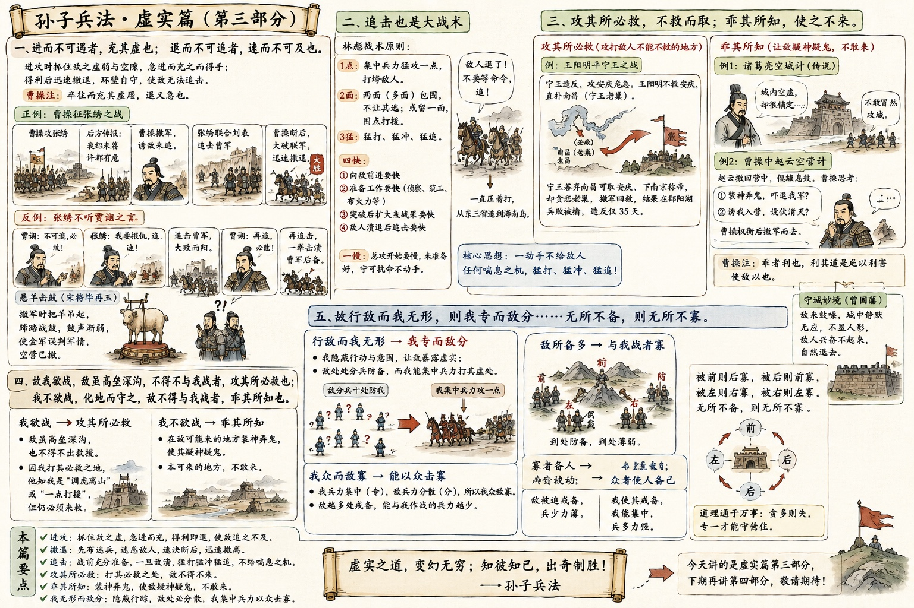
主讲人解读《孙子兵法》虚实篇第三部分，重点讲解“进而不可御者，冲其虚也；退而不可追者，速而不可及也”和“我欲战，敌虽高垒深沟，不得不与我战者，攻其所必救也；我不欲战，画地而守之，敌不得与我战者，乖其所知也”。他举了曹操征张绣的战例，曹操撤退时先破追兵再迅速撤退，但谋士贾诩建议张绣二次追击并获胜，说明撤退和追击的战术。还提到林彪的“一点两面三三制四快一慢三猛”战术，强调追击要快。又用王阳明平宁王叛乱、诸葛亮空城计、赵云空营计等例子说明“攻其所必救”和“乖其所知”。最后解释“我专而敌分”，强调集中兵力、使敌分散，并以林彪战术和杜牧注解佐证。
📖 全文解读 · 206句 · 15分4秒（点开看全文）
重温经典，一古千今。大家好，我们今天继续为大家来读孙子兵法，来读虚实篇的第三个部分。进而不可遇者，充其虚也。退而不可追者，速而不可及也。意思就是发动进攻又让对方无法抵挡，是对阵相持的时候，看到他的虚弱和空隙的地方急进而充之得手。获利之后迅速撤退，环璧自首，让敌人无法追击。我曹操的注解叫做卒往而充其虚屑，退又急也。曹操在他的战斗生涯当中，本人就演绎过这样的一句兵法，一仗就为我们把正反案例都给示范了。这就是曹操征张绣之战，曹操打张绣，包围了张绣的城池，攘城后方传来报告，说袁绍要趁其这个曹操的虚而攻打许都，曹操不得不撤军。撤军就是要先把敌人打个晕头转向，然后迅速撤退。曹操正机兵不好，然后等着张绣来追。张绣见到曹操后撤，然后联合刘表两军夹击而来。结果曹操指挥弱定，大破刘璋联军之后迅速撤退，一切就像曹操所计算的一样，就是没有算到。张绣帐下有一个谋士叫家诩，曹操得胜撤退，张绣带兵就追啊，贾诩说不能追啊，只要你追必败。张绣急着报仇啊，哪里肯听一路追过去杰作，结果被曹操亲自断后又杀的大败。张绣兵败回来，对贾诩说，您能知道我必败，那么您能知道我什么时候必胜吗？光知道我必败，我也打不了胜仗。我你得知道我必胜，告诉我，我才能打胜仗。贾诩说，现在赶紧带领这支败兵再追这锤，这回必胜。张绣这回听了也来不及问为什么，就转身就带着部队就冲过去，果然一举击溃了曹操的后备部队。张绣回来了，说贾先生神了，这怎么回事呢？贾诩就说其实这个道理很简单，曹操来攻打我们的时候，没有打败他自己就撤了。肯定是后方有事儿，他不得不撤，他要撤就一定会做好准备。他亲自带精兵，猛将断后。将军您虽然用兵很聪明，但是离曹操还是差了那么一点点，你肯定打不过他，所以我知道您必败。他大胜了我们之后，撤退又破了咱们的追兵，他认为万事大吉，咱们不会追来了。这个时候他就要全力撤退，他肯定自己就会带着谋臣猛将先赶回去处理家里的事儿。留别的将领断后，那留下来的这些将领和兵马，水平就不如我们了。那这个时候我们第二次再追就必胜。其实你发现撤退是一个大的战术，一定是资重在先，精兵在后。不过宋朝有一个将领叫毕在玉，和金军对垒的时候需要撤军。他想出来一个超级撤军创意，叫悬阳击鼓。他把军营里面的羊给吊起来，然后两个蹄子放在战鼓的鼓面上，那个羊难受，被吊起来，他潜那个蹄子一个劲的跑，这时候就有鼓声。精兵天天听见宋朝军营里面鼓声雷动，越来越，但是越来越弱，稀稀拉拉。他很奇怪怎么回事，然摸过来侦查一下，才发现早已是一座空营，人已经撤了好几天，就剩了一堆羊在那儿。追击也是一个大战术，林彪打仗核心就是追击。林彪的战术原则里面就是有1点2面33掷4快1慢3猛战术。我们前面其实讲到分数这个字的时候，学习了三三制，就是军队的编制。林彪自己创的1点2面就是一点是集中兵力猛攻，一点打垮敌人。两面就是两面，或者多面包围，不让他跑，消灭他，或者留一个面让他跑，然后在路上再来去围点打援。四快一慢，先讲一慢，一慢就是总攻开始的时间要慢，你如果没有准备好就千万别动手。你如果觉得自己没有准备好，上级催着也可以抗命，这就是林彪的战术。四快是什么？就一向敌前进要快，二咬住敌人之后要准备工作要快，看地形、筑攻势、捆绑炸药、布置火力等等一定要快。第三是突破之后扩大战果要快。第四是敌人溃退之后追击要快。三猛是猛打猛冲猛追，其中一点叫巨石击虚，猛打猛冲，敌人一溃退就猛追。林彪就强调猛追，他这个思想是贯彻到基层的，他只要看到敌人退就猛追。这个时候不要等命令，也不要做什么准备。这个时候不准备才符合战术原则，准备了就不是战术原则了也不要怕自己这一方人少啊，不要怕情况不清楚，也不要怕对方有没有埋伏，追就是了，甚至也不要报告上级先追，一边追一边再派人回来报告。林彪的这个思想就是他战前充分准备，一动手就不给敌人任何一丝喘息之机，一直压着打，猛打、猛冲、猛追，他的部队就一直这么从东三省追到了海南岛。原文，故我欲战，敌虽高垒深沟，不得不与我战者，攻其所必就也。我不欲战，化地而守之，敌不得与我战者，乖其所知也。意思就是我想跟他打的时候，他虽然这个高垒深沟，他城堡很高，然后挖了战壕很深，他还是不得不出老鹰跟我打。那是因为我打他必须要去救援的地方，他知道我是调虎离山，我一点打援，但是他还不得不来。因为我攻打的地方，他是不能不救的地方，这个攻其所必救。前面讲过很多战力，围魏救赵，司马懿征辽东，其实都是自己。再补充一个明朝的战例就是王阳明，王阳明平南昌的时候，宁王的城壕之乱，宁王造反，6万大军攻打安庆十分危急。一旦攻打安庆，攻打下来，南京就是宁王的囊中之物。进了南京，宁王就有了称帝的资本。当时的这个明朝的陪都就是南京，王阳明没有挥师去救安庆，而是直扑宁王的老巢南昌。宁王这个时候唯一的机会就是放弃南昌，拿下安庆，顺流而下称抵南京，机会还是有的。当时的正德皇帝朱厚照是一个混世魔王大臣，百姓都不喜欢他，宁王只要能到南京称帝，不愁没有人支持。但是宁王放不下南昌的老巢，他舍不得孩子套不来狼的不训他忘了他撤军回救南昌，结果在鄱阳湖和王阳明的军队遭遇兵败被擒，造反大业只持续了35天。我不欲战化地而守之，敌不得与我战者，乖其所知也。我不想跟他打，就是在地上画条线，他也不敢过来，那是因为我能让他对要来的地方心存疑虑，不敢来。乖其所知。这个乖字古代的意思本来就是不乖的意思，后来变成了乖。现在还留下一些词，比如说我们说这个人行为乖张，这个乖就是背离违背不和谐、不合情理不乖的意思。乖其所知就是在他来的地方装神弄鬼，让他疑神疑鬼，本来可以来的，不敢来了。曹操的注解叫乖者利也，利其道是以利害使敌以也。利就是乖，利也就是别扭不合情理的意思。这样的战力在民间最著名的就是诸葛亮的空城计，传说中是这样的，就指司马懿的大军来了，然后诸葛亮守城的兵马却只有1万人，毫无抵抗之力。这个时候司马懿如果要攻城，就可以一鼓作气全部拿下。于是诸葛亮镇守自若，大开城门，还在旁边安排一些扫地的人，安静祥和。司马懿一看这不科学，他那个时候也肯定想到了，兵法上叫乖其所知。但是万一诸葛亮是将计就计，这个永远没有办法猜对的。再说诸葛亮一生为人谨慎，最不冒险的人就是诸葛亮了。所以有伏兵的可能性还是很大的，于是他就撤军了。曾国藩守城，他说过守城最好的就是妙境，怎么一个妙境呢？就是让敌人来了在城下鼓诏，我方不做任何反应，静悄悄的不做任何回应。守城的人在后面躲着，也不在乘舵上出现，敌人轻易是不敢架云梯往城墙上爬的，那个刘贼一时也没有那么完备的攻城器械。他们是看我们的动作在定下一步动作。如果我们没有任何动作，甚至我们连个人影都没有，他们就兴奋不起来了，再鼓噪几下自己觉得没意思，他就走了。我们再来说曹操，史学家说诸葛亮的空城计是编的，说正式的也没那么回事。我们再讲曹操中赵云的空营计。曹操和刘备争汉中这个地方，赵云守别屯这个地方，带了几十计出营查看地形，偶然遇到曹操的大军，赵云且战且退，曹操大军一路追来。然后等到赵云退回营中，大开营门，偃旗息鼓。曹操一看，面临两个选择，一个就是赵云用了兵法当中的一条，叫乖己所张，使敌不得与我战领啊，就是装神弄鬼，想把我吓走。第二就是利而诱之，扶而及之，就是他派小股部队佯败来诱我前来，然后设埋伏消灭我。曹操用孙子兵法来去思考，在两个选项当中选一个，这一仗怎么能进行计划呢？如果是赵云安排的，如果不碰见他，那我们根本不可能来。所以是他为主，我为克，他为始，我为虚，所以这时候不能打，于是曹操就退兵了。所以实际情况在战争当中往往都是偶然的。但是我们不能说曹操的分析是错误的，他的分析完全正确，他的决策也是在当下完全正确的。明明是赵云得手，为什么说曹操是正确的呢？就是不能以一次得失的结果来定决策。领导者一天要做出无数的决策，很多都关系的生死存亡了，很多关系的一些深远的未来，公司的影响和变革，所有的决策都要正确，那是不可能的。现实是什么呢？现实就是用成功来消化失败，用正确来去消化错误。所以我们还是给曹操交出的那个答卷要打个满分。故行敌而我无形，则我专而敌分。我专为一，敌分为实，是以实攻一也，而我众而敌寡，能以众击寡者，则吾之所于战者曰矣。吾所于战之地不可知。不可知，则敌所备多。敌所备者多，则吾与战者寡也。故被前则后寡，被后则前寡，被左则右寡，被右则左寡。无所不悖，则无所不寡。寡者悖人者也，众者使人悖己者也。什么意思？就是行人而我无形，则我争而敌分的意思。美臣的注解叫他人有形，我行不见，故敌分兵以悖我形人。这个形是动词，意思就是让他暴露出原形，用各种侦察手段或者调动敌人，让他暴露出自己的实情，对他一目了然。比如说我们熟悉的火力侦察，我们先打他几枪，看他反击的火力点在哪儿。这个侦察不是盲目的调查，而是有目的的去验证。拿破仑打仗战前他就会反复的思考，脑子里去演习各种情况。好几个月我怎么样敌人才会怎么样。然后敌人会在哪射营，在哪埋伏，在哪条线上行军有几种可能性。到了战场上，他他不是派侦察兵说我们去侦察一下敌情，而是明确的告诉每一支侦察兵具体从哪里看看有没有敌人。也就是说拿破仑的侦察不是漫天撒网的侦察，而是直接派出去到具体的地点和路线，验证或者推翻他自己的判断，我无形是隐蔽自己的行动和意图，让他看不出来我的军行，不知道我的虚实，这样他就要处处分兵来防我，而我能集中火力对他虚的地方打下去。所以我专而敌分，我专为一敌分为实，是以十攻一则我众而敌寡，我专为一，所以人多，敌分为实，所以人少。这个十合一不是人多的10，人少的一。同样的人分成了十个部队和我同样的人聚集在一起的意思。张裕的注解叫我能见敌虚实，所以不劳多备，能集中兵力为一敌，则不然他看不见我的军行，所以他要分十处防备我，所以我就是以十倍的兵力来对付他了，所以我怎么打都是人多，他怎么打都是人少。这个在谋攻篇其实有过叫用兵之法，实则为之武则分，武则攻之，备则分之，敌则能战之，少则能逃之，不弱则能避之。总之一定在兵力上要占绝对优势才去跟对方打，双方兵力怎么办呢？如果相当的话，就是靠虚实，避实击虚，让敌人分兵备我，他分散我击中，然后我攻击一点，那就以实击一了。林彪的1点2面3猛挡住两面，其中一点猛打、猛冲、猛追，两面获得多面布阵，敌人都得多面防备，其中猛攻一个点他就挡不住。只有猛打、猛追、猛冲，一点喘息之际都不留余地给他才能赢。能以众击寡者，则吾之所与战者曰矣。约就是少的意思，就是有限。我们对于敌人的虚实一目了然，能集中兵力，而敌人不知道我会从哪儿来，要处处分兵把守啊。这个时候能跟我们对战的敌兵就很少了，我们就能以众击寡了，无所与战之地不可知，不可知则敌，所谓者多。这段话的意思是什么呢？就是敌人不知道我从哪来，也不知道交战的地点在哪。他需要分兵防备的地方就很多，他准备的越多，其实就准备的越少，因为他能投入和我战斗的兵力就越少。如果他加强前面的防备，后面就会弱，加强后面的防备前面就会弱，加强左边右边就弱，加强右边左边就弱，所以前后左右到处都防备，到处都很弱。寡者备人以重者使人备己者也。意思就是兵少利薄是因为被动的戒备敌人，兵多利强是因为能使敌人到处戒备。我杜牧的注解叫所备所占之地，不可令敌知之。我行不屑，则左右前后，远近险易。敌人不知亦不知我从何处来攻，何处会战，故分兵撤位，处处防备。行藏者重，分多者寡，故重者必胜，寡者必败。必前则后寡，被后则前寡，被左则右寡，被右则左寡。无所不备则无所不寡，这是最本质的道理。做事情也是一样，你只能选一头做，你不能哪头都想占，每头都想占，最后就是一头也守不住。但是人都贪，占了一头就想占另外一头，最后就会丢掉所有的一切。这是虚实的第三个篇章，也是我们今天和大家讲的主题。我们下期再来讲虚实的第四个部分，下期再见。

主讲人强调‘知战之地，知战之日’的重要性，即主动选择作战时间和地点。他举了王阳明平宁王之乱和汉朝周亚夫平吴楚之乱两个例子。王阳明赌宁王会回救南昌，在鄱阳湖设伏取胜；周亚夫不救梁国，断敌粮道后选择在淮北平地追击吴军。主讲人还解释了‘胜可为’与‘胜可知’不矛盾，并引用司马懿征辽东的例子，说明根据敌我粮食多寡决定作战节奏。
📖 全文解读 · 142句 · 10分51秒（点开看全文）
重温经典，以古鉴今。大家好，我们今天继续来为大家读孙子兵法，来读虚实篇的第四个部分。这个部分的主题主要是何时何地来进行打仗，由我给敌人来进行选择，原文叫故知战之地，知战之，则可千里而会战。不知战地，不知战日，则左不能救右，右不能救左，前不能就后，后不能就前。而况远者数十里，近则数里乎以武夺之。越人之兵虽多一兮，一余胜败哉。故曰，胜可为也。敌虽重，可使无斗，意思是什么呢？就是你能预期在哪里进行打仗，预计在什么地方，什么时间在哪里打仗。就算是跋涉千里，我也可以和敌人进行交战。曹操的注解叫以度良之空虚会战之日。前面我们了解到了王阳明破宁王的一个案例，就是宁王大军为了安庆，安庆一过顺流而下，南京就是宁王的囊中之物。进了南京，宁王就有了政治号召力。那王阳明要平叛，就必须要知战之地之战之，他手中就1.0食拼凑起来的兵马在哪里打。宁王在猛攻安庆，他当然应该去救安庆，但是你就算去了也未必救得下来。因为你的兵马没有宁王的强大，宁王防着他来救，所以再给他来个围廉打援，那可能半路就吃亏了。这个时候汪阳决要决定赌一场，赌什么呢？他就直接打宁王的老巢南昌，他赌宁王会放弃安庆回师来去救南昌。他如果回师，我就可以千里而会战。在哪里打？不在南昌城，在他来的半途当中，鄱阳湖来设伏兵和他决战，这就是之战之地，之战之日，王阳明神机妙算吗？其实也不一定，他就是赌一把而已，这是他唯一的办法。这里有个计策，有一个致命的缺点，就是宁王如果不回来就怎么办？他如果放弃南昌，继续打安庆，安静一定失守。安静失守了，南京一定不保。进了南京，宁王就会称帝王。阳明赌宁王没有这个智慧和这个魄力，他赌赢了。他一进南昌，宁王马上放弃已经接近崩溃的安庆城回师南昌。战地也赌对了，就是在鄱阳湖恶战下来，宁王被擒了。第二个战力就是汉朝周亚府平吴王刘璧之乱。吴王向西攻取洛阳的道路当中，这个景帝他的弟弟刘武的封国梁网横亘在中间。吴楚如果你要破梁军，在梁国南郡的这个地方，梁国就告急请求援助，周家夫却深沟高垒扎营防御。梁王刘武每天都派使者来进行救援，周亚夫就是见死不救。梁王向景帝尚书，景帝派使者来命太尉来去救梁国。周亚夫还是说将在外军命有所不说，他就是不帮忙。周亚夫让梁王和吴军苦战，他自己悄悄的派清骑去，断掉了吴楚后方的粮岛。吴兵伐粮饥饿难当，刘备知道是周亚夫劫粮，就来打他他还是高挂免战牌，就是不无兵，忍饥挨饿，战斗力极弱，然后就撤退了。知战之地之战之日，这个时候周亚夫的战力就到了，战地也选好了，就在淮北平地。因为吴军的步兵多，利在险阻，汉军的车机多平地，打追击战是最爽的。于是这夫挥势出击，打破吴军，整个平定吴楚之乱只用了三个月，可谓是非常的迅速。君臣上下三军将士都佩服周亚夫，佩服到五体投体，都佩服他，神谋远虑算无一策，只有一个人对他是恨之入骨的，就是他救了那个人。梁王刘，你拿我去为敌人仗，权是我打的，差点我生死搏命，你就在他们饿死之前去推了他们一把，最后敌人垮了，成全了你，算无遗策。不知战地，不知战日，则左不能救右，右不能救左，前不能救后，后不能救前。而况远则树十里近者数以乎就是不知道敌人何时会兵，何时皆战者，所备者不专，所守者不顾。呼吁劲敌仓促应战，左右前后都不能相救，更何况左右前后军其实守尾相距有非常远的数里甚至数十里的距离。前面两个战力对垒的另外一方，一个是明明朝的明王朱承浩，一个是汉朝的吴王刘必，这就是战地战日，都是别人给他挑的，他怎么可能不办？以武夺之，越人之兵虽多，一息一余胜败哉。在我看来，越国的兵虽然多，但是跟能不能打胜仗又有什么关系呢？孙子兵法是孙子写给吴王阖人的，吴越是仇国，而且是世仇，所以针对于越国来说，大家都熟悉越王和勾践和吴王夫差之间的故事，夫差就是阖闾的儿子。故曰，胜可为业，敌虽众可使无斗。所以说胜利是可以人为取乐的，敌人虽然多，但也可以让他没有办法去打仗。孙子在刑篇里面说胜可知而不可违，这里又讲胜可为，那是不是矛盾呢？其实并不矛盾，因为孙子的语境不同，针对的情况不一样，像王阳明面对宁王朱承豪那种情况，我方资源足够或者耗得起，这就是胜可治而不可为，稳扎稳打的来就可以了。但是宁王一旦起誓了，中央毫无准备，没有朝廷大军来，就自己手里这点资源，必须在那干一场，那不能让他进南京城称帝嘛。遇上了这种情况，就只能是胜客为敌，虽重可时无不动。结果王阳明赌赢了。宁王虽强，但是可以让他不打不进，不进南京，就乖乖的来博阳湖来进行送死他。所以这是比较重要的一个内容。当然历史是不能假设的，如果万一宁王不选择去回到自己的南昌，然后去打安庆怎么办呢？所以历史不可以假设，那为历史也无法假设。故测之而之得失之际，坐之而之动静之力，行之而之死身之地，缴之而知有余不足之处，这就是知己知彼战术的要点。知己知彼，百战不殆。在战前的知是祭篇里面讲的五十七计，就是道、天地将法。然后七计呢，就是主孰有道，将孰又能？天地孰得，法令孰行？兵重孰强？士卒孰练，赏罚孰命？五十七计讲的是政治、资源、实力、战略这些层面上了战场，如何在战术层面来知己知彼呢？下面的内容其实说的就是这个策之而知得失之计。孟师的注解叫策度敌情，观其失为技术可知。就是分析敌我双方的计谋，推算随得随失，作之之动静之理。作就是不作死就不会死的那个作狠作他一下，作什么就击他一下，看他哪里有动静，就知道他虚实状况是什么，就像我们所说的火力侦察。魏武侯问吴起，叫两军相遇，我不知道对方将领能力有大有小，不知道他实力怎么样，我怎么办呢？吴起就说就派一小股勇气，锐卒就很厉害的一帮突击队去攻击他，一交手，然后就仰板，这个时候去观察敌人的一举一动。如果他追我去假装追不上，看到我们丢弃的一些兵器、旗帜、财物假装看不见，那就是很聪明的将。如果他们倾巢来追，旗帜杂乱，行止纵横，又贪利抢东西，这就是将令不行，马上就可以对他发起进攻，行之而之死身之地。行之就是让他现出原形，让后他暴露出自己的军行来。上一句所说的叫作之而之动静之理，就是行之的方法之意。多木的注解叫死生之力，就是战地的虚实。我多方以悟敌人，观察他的回音，随而知之，就知道死生之地是什么状况，矫之而之有余不足之处。这个曹操的注解叫做剿，就是良的意思，以我有余缴良敌人之有，以我之不足较量敌人之不足，这是多么的注体。所以在这个内容当中，有一个战例就是司马懿平定辽东。前面已经其实两次都了解过这个案例了。这一条梁敌之计还是和司马懿有关，司马懿征辽东是4万人，对阵公孙渊的20万人。前面我们了解过，公孙渊先派先锋数万再辽河设防，自己率主力在后援连营数十里阻击司马懿。司马懿设夷兵牵制敌人，自己悄悄的率精锐绕过辽河防线，直接围了公孙渊的老巢襄平，这种计策好像常见，这就是安能动之敌，虽深沟高垒，不得与我为战，攻之所必救也。孙公孙渊没办法，那必须得回远自己的老巢，途中三次被司马懿打败，然后退回到自己的襄平城去守住城。这就是围点打员之战之地之战之日。这个时候正值是七月份的雨季，天开始下雨，下了一个月，司马懿按兵不动，一点都不着急。部下陈规就问，当初孟达造反，咱们八步并进，昼夜不息，八天走了1200里地，拔奸城斩孟达，我们今天远征辽东，却安然不动，缓缓突之。我实在是有点愚笨，我看不出来这是什么原因，请您来为我答疑解惑。司马懿就说，这是缴粮，敌人重寡和粮食多少？当初孟达人少，而粮食能够吃一年。我军四倍于孟达，而粮食只能够吃一个月。以我一个月的粮食对阵一年的粮食当然要快，所以我不计死伤，必须要快速拿下。那不是和孟达在打，那是和粮食在赛跑。一个月我拿不下，我们就饿死了。虽然我们现在也是远征，但是我们带的粮食很充足，敌人却快没粮了。敌众我寡，敌饥我保。和真孟达的情况正好相反，下雨天又不好打仗，那更好了，大家在一起耗粮食，那又着急什么呢？三十多天之后雨停了，司马懿才开始进攻城中，已经到了人吃人的没有粮的程度，好多将领都出向司马懿攻破襄城，斩了公孙院，平定了辽东，这就是今天和大家讲的虚实篇的第四篇。我们下期再见。

主讲人指出，学习他人成功经验的关键不在于表面做法，而在于当时的前提条件和对方长期积累的功力。他举了韩信背水一战的例子：表面上是置之死地而后生，实际上还有两千骑兵奇袭敌营的关键配合，只学背水一战必然失败。他还类比企业高管跳槽后照搬旧方法往往效果不佳。最后强调读兵法要反着学，先假设自己是失败方，避免被算计，先求自保再求胜。
📖 全文解读 · 146句 · 10分29秒（点开看全文）
重温经典，以古鉴今。今天我们来讲虚实篇的最后一个部分，这个部分主要讲的是什么呢？叫学我者深，向我者死。大家表面看见的、讨论的都不是关键因素，关键的有两条，第一就是当时的前提条件和情况。第二，人家过去十几年几十年的功夫积累，你跟人学往往第二条不具备。第一条不知道，你光学个热闹当然是白搭了。主要的主题就是这个原文是故行兵之急，至于无形，无形则身见，不能亏，智者不能谋，因形而错身于众众不能治。人皆知我之所以胜之形而莫之，吾之所以治胜之形，故其战不负而应形于无穷。什么意思呢？故形兵之极之于无形的意思呢？形兵形就是阳动，就是是形阳动可以随时变化成真动，这都不一定，就是故意表现出来的一些假象。这个意思是李世民所说的多方已误，想方设法引对方误判，引对方失误。所以行兵之急就是用事行的极致变化，无形，达到无形的境界，敌人没有办法判断，也许就接受了我们给他设计的各种判断。无形则身见不能愧，智者不能谋。多么的注解叫此言用兵之道之于真己，不过于无形。无形虽有剑者，身来窥我，不能知我之虚实强弱，不屑于外。虽有智能之士，亦不能谋我。意思就是什么呢？即使对方有打入我方很深的间谍，因为我虚实不入，你就算很深的隐藏进来，也是不能窥视我的军队实际状况是什么样的。因为我强弱不懈，纵有智谋之势，也想不出对付我的办法。因形而错身于众，纵不能治行之，就是世行误导敌人，无形就是我用兵的境界。英形就是因地制宜的营，英形就是因形制敌，根据敌人的军形来随机应变，制定一些政策。错错理权的注解叫治疑，就是错胜于重。把胜利摆在大家的面前，众人还是不点不能了解怎么取得胜利的。其实上一节就是我们昨天讲的司马懿真辽东的这个战力，直到最后斩了公孙渊，司马懿的部下还是没看懂是怎么回事，所以陈规才问他，在请他大义解洪人皆知我之所以慎之行而莫之，吾之所以治甚之行，故其战胜不复而英形无穷。就我怎么用兵，用怎样的军情取胜，大家是看到的。但是我是根据什么样的一些原因来做出来的判断，怎么去应形制胜呢？大家就不知道，这叫知其然，不知其所以然。下一次敌形不是这样，那我应形制胜的方法又不是这个，所以我用的方法是不会重复的，是因形而变化，并且无穷的变化。所谓学我者生，向我者死，人家看见我怎么取胜的，学的一模一样照做，最后却落个惨败，为什么？因为知其然不是其所以然，他是根据当时的情况条件才那样做。等你做的时候，所有的条件情况都变了，而你看到的是他的举措，这不是孤立的，还有其他的各种前提条件的配合，你没有照猫画虎，以为别人行你也行，那就要吃亏了。一家企业的高管离开之后，到另外一家企业去来用上一家企业一样的方法来去做各种各样的动作。最后那个结果往往不会那么的好的。原因就在于不是在那个场景下，不是在那个条件下，有很多的事情照猫画虎做出来也不一定会得到很好的结果。比如韩信的背水一战，置之死地而后生，把1万人布阵在水边，他们没有想着退路，他们就殊死作战，就能战胜20万人。这是我们看韩信背水一战很多故事和成语的解释。真实的情况真的是这样的，你再多打一会儿，1万人就被消灭了，或者对方高喊交枪不杀，那就有人就要投降了。韩信还有2000骑兵突入赵军营寨，拔着他的旗帜插上了汉军军旗，赵军一看老挝都没了，惊慌奔跑，他才能乘势言杀，所以这两千骑兵才是关键，你只学背水一战了怎么用？下回布阵你还敢背水一战吗？韩信也只布了这一回吗？下次他又变了。所以学我者生，像我这次表面看起来讨论的这都不是关键。关键就是我们说当时的前提条件和情况。第二是人家过去十几年几十年的功力的累积，你跟人学的只能学个样子，那当然是白搭。还有一点就是兵法要反复反着学，要往坏处想，别想的太美。首先不是学的怎么去算计别人，而是要学的怎么不被别人算计。不要老想着我无形，我行之物之，然后因他的行而慎之，这样越学越美。自子你上了战场就完蛋了。你要反过来，每读一句就要把自己想象成那个被行之的人。不要被误导，不要轻举妄动，先保住自己再去琢磨别人，那才是兵法之道士先活着再去打胜仗。读书是为了关照自己，总是想当然的把自己带入胜利一方的角色和情绪是人的天生习惯。但是往往做事情是要反过来的，把假设自己先假设成失败的一方，然后多想想如何去避免失败，才能去了解和学到更多的东西。服兵行向水水之行避高而趋下，兵之行必始而击虚，水因地而制流，兵因敌而制胜。故兵无常势，水水无常形，能因敌变化而制胜者谓之神，故五行无常胜，四时无常味。日有短长，月有死胜，这是最后一段总结。虚实篇子叫服冰形向水，水之形必干而趋下，冰之形必始而就虚。作战的方式就像水一样，水的流动的规律就是从高处往低处理，作战的规律就是避实而击虚。苗城的主解叫水，趋下则顺兵，击虚则利。水因地而制流，兵因敌而制胜。水根据地形来决定奔流的方向，士兵根据敌情来决定制胜的方案。故兵无常势，水无常形，能因敌变化而致胜者为之神，这句话是最有名的。在叙事篇当中苗城的注解叫因敌为势，在敌人在变化，我也根据敌人的变化而变化。所以兵无常势，就像水无常形一样。遇到方水就变成方，遇到圆水就变成圆，能根据敌人的变化来制敌制胜，这就是用兵如神。故五行无长胜，四时无常胃，日有短长，月有死神。五行相生相克，金木水火土没有哪个是固定的，长盛的。春夏秋冬四季更迭，没有哪个季节能持续一整年。白天有短有长，月亮有阴晴圆缺。孙子最后打了个比方，就是说五行四季日月都有盈缩无常，更何况兵行之变又怎么能够安定呢？虚实篇到这里就结束了。虚实篇的要义，曹操的注解叫能虚实鼻己，也就是能调来调去，调动来调动去，就是要我实敌虚，这就是用兵如神的。如果我们去学或者说我们来了解孙子兵法当中的用兵如神，最重要的是知道自己不是神，所以就不可能有调动来调动去，都是我识敌虚，而更可能是我虚敌实，所以要加倍谨慎。这就算没白读，孙子兵法胜败是智力问题，实力问题也是一个概率问题。那就结果而言，胜败往往是不对等的。胜利不过是得先战利品，失败却有可能输掉整个人生。我们今天看这个看这个进去了，那个进去了，其实都是用兵如神，一辈子输掉一次误了终身，各种双归，各种接受调查。唐太宗李卫公问对，里面有一篇专门讲虚史。李世民说，我读所有的兵书，没有超过孙子兵法的。孙子兵法又以虚实篇为首，用兵能识虚实之实，则往而不胜。诸江人人都能够说避实击虚，但是到了真正的战场当中，却没有人有能力看出来敌方虚实的结果。不是调动别人，是反被别人所调动。你怎么来看待这个问题？李靖的回答，这实虚实要懂得机正，诸将大多不知道以正为基，以基为证，怎么能识别事实是虚呢？机正就是用来制敌之虚实的。敌实我必以正，敌虚我必以击。那如果不懂得击政之用，就算是看出了敌人的虚实，也不会打。而李世民说，以击为政者，敌以为是击，而我却以政击之，敌以为我是正，而我却以机机智。这样敌是常虚，我是常失。最后李经的总结叫千章万句，不出乎致人而不至于人。最后总结到致人而不制于人和因敌制胜，这是一个辩证关系。致人而不治于人就是知其然，还要知其所以然，叫控制别人。他不为别人控制，是我调动你，你不能调动我，做到极端是我不管你怎么样，我只管我怎么样。首先是不被敌人调动，没机会就挡，然后就熬，甚至不打也行，一定是先胜后战，赢了再打。因敌之胜是根据你的调动来决定我的调动，这样做就特别容易被敌人所调动了。因为你看到敌情的变化，正是人家设计来套你的，你看到的虚往往是人家的实，这个危险性很大，非常人可为啊。所以能做到治人而不知于人，舍得都寂寞，熬得住耐心的人，是将军常胜。将军是能因敌变化而取胜者，是用兵如神的。李世民确实是神的，我们学习下最重要的要点就是知道自己不是神，这才是虚实篇要给我们传递的核心的价值和信息。附录当中是叙事篇的全文，有兴趣的话大家也可以来去阅读一下原文，再对应的我们的注解来做一些了解和学习。叙事篇到这里就要告一段落了。我们下一期就要和大家来讲军侦篇，这是真正上了战场，怎么去跟对方攻防作战的各种技巧和方法，我们下期再见。
军争篇 · 第七
7/7 段抢先机最难，因为最短的路常常是看似绕远的路。还要管好节奏与人心。
- 以迂为直：直来直去常被堵死，绕看似更远的路反而先到。
- 风林火山：四种节奏自由切换，快慢张弛皆有度。
- 四治：治气、治心、治力、治变——管理人的状态。
通往目标的捷径常是「弯路」：先打基础、先建关系、先做积累；并学会管节奏。
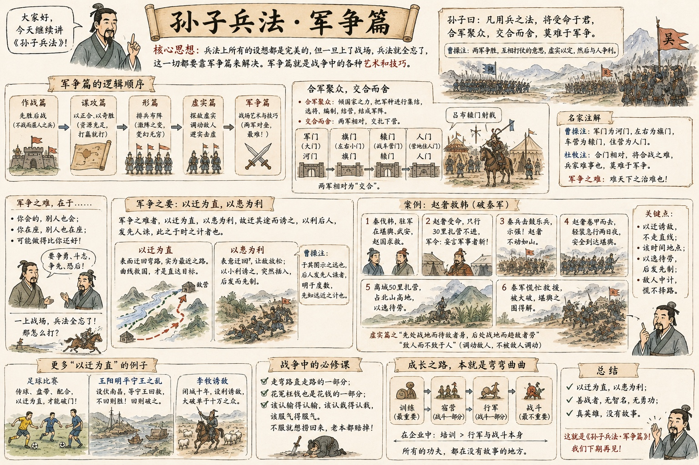
主讲人指出《孙子兵法》军争篇的核心是解决战场上兵法失效的问题，强调两军争胜的难度。他详细解释了“以迂为直，以患为利”的原则，并用足球赛传球盘带类比，说明走弯路往往是捷径。他举了赵奢破秦军的例子：赵奢出邯郸30里扎营，斩谏者、加固营垒，迷惑秦军间谍，然后卷甲急行军两天一夜，在离堪舆50里处安营，占据北山制高点，以逸待劳大破秦军。他还联系王阳明平宁王之乱，说明慌则易败。最后引申到人生和工作中，弯路和冤枉钱是必要的，训练比战斗本身更重要。
📖 全文解读 · 159句 · 12分26秒（点开看全文）
重温经典，以古鉴今。大家好，我们今天继续为大家来讲孙子兵法。来讲孙子兵法的军真篇，他的核心思想是什么呢？就是兵法上所有的设想都是完美的，但是一旦上了战场，兵法就全忘了，那怎么打呢？这一切都要靠军真篇来解决，所以军真篇就是在战争当中的各种艺术和技巧。孙子曰，凡用兵之法，将受命于君合军聚众交合而舍，莫难于君争啊。君争。曹操的注解就是两军争胜，就是互相打仗的意思，虚实以定，然后与人争利。所以他是在虚实篇之后而出现的军争篇。合军聚众就是把国家的队伍集结起来，然后以组织架构将领选好，每个千夫长、百夫长、万夫长全部选好，然后结营，结成军阵，然后开始打仗。所以合军聚众的意思就是倾国家之力，把军种进行集结的意思。交合而舍和敌人两军相对加扎下军营。交合而舍是什么呢？曹操的注解叫军门为河门，就军队的那个大门口叫河门，左右那个小门叫做旗门，以车战车截下来的那个营地的那个门叫辕门，以人为营地，住人的那个军营的门叫人门，两军相对为交合。我们都知道有个故事，就是吕布辕门射戟的故事。从曹操的注解就可以知道，不是所有军营的门都叫辕门的，他必须里面有战车结的那个营才叫辕门。普通的军营的大门就叫合门，河氏的注解叫合门，相对将合战真利兵家难事也莫难于军争的意思就是这是一个很难的事情，就是难天下之治难也。前面继篇讲到运筹帷幄之中，再难它也是帷幄之中，没有什么具体的危险，因为死的不是你运筹帷幄的人。之后的作战篇、谋攻篇，你讲的资源充足，吃敌人的，打得赢就打，打不赢就跑行。篇事篇当中讲形势，讲排兵布阵，然后虚实篇讲探他人虚实，调动敌人避实积虚。说起来都挺爽的，都是一些计谋策略。先是不战而屈人之兵，不用动手他自己就投降了，那当然这是最好的了。那即使要战，就是立于不败之地，先胜后打，然后赢了再打，这才是孙子兵法的核心。排兵布阵，激阵之变，变幻无穷，敌莫能测，这是所有战争的将领们最希望遇到的事情，最希望自己具备这个能耐。虚实之间调动敌人，比亲儿子还听话。调动敌虚我实以我食之击比虚以石积软，打他个落花流水。但是你懂的就是别人也懂，你会的别人也会，你在座的别人也在座，可能做的比你还好。所以你要争勇、要斗志，要争先，要恐后。到了战场之上，两军对垒了，要开始真正的打仗了，那才是天下最难的事情。因为你只要一动，就有可能有人命伤亡。毛泽东说，一上战场兵法全忘了，所以你该怎么打？有哪些原则、注意事项？军侦篇讲的就是这个走弯路是走路的一部分，花冤枉钱也是花钱的一部分，其实都必不可少，该认输得认输，该认栽得认栽，该服气得服气。你只要不服，你千万别想去把它捞回来，只要你想去捞，你的老本都会被赔掉。所以原文叫军真之难者，以迂为之，以患为利，故淤其徒而诱之，以利后人，发先人治，此之于时之计者也。以一为值，就是两点之间最短的是什么？从物理学上来说，两点之间直线最短，而实际上在阵争当中，两点之间不是直线最短。表面上迂回的弯路，实际上是最便利的道路。因为有地形，因为有地形你走直线你是走不过去的。在这个复杂的地形和千变万化的地形当中，哪条路最近就要以迂为止，走弯路就是走近路，我们一直讲曲线救国，就像看足球赛好了，没有人能从自己的后方一路直线攻到对方大门。每一次传球带球都是以喻为止的。就算是球王贝利，就算是罗纳尔多，就算是贝克汉姆，你一路直攻，你自己把球带到对方大门去，你的每一脚盘带，他都是以欲为之的，没有以直接一路下去的。以换为例，就是把困难变为有利条件，迂其途而诱之以利后人发先人治，故意远远的迂回过去，让对方感觉我们不会过去，再用假动作用一些小的利益去牵制对方，然后突然间插过去，能够后发而先治。曹操的注解叫于其图示之远也，后人发先人治者，明于度数，先知远近之计也。远远的迂回就是让对方感觉我很远，放松警惕，然后才能后发先治。因为我早已度量好地形了，知道哪近哪儿远，从哪穿插过去是最方便的站立。举个例子，就是赵奢打敌军，就是那个破秦军的故事。赵奢是谁啊？赵奢就是那个纸上谈兵的赵括的父亲，不过他是一位真名将哈他不是赵括，那个只会纸上谈兵，秦伐韩驻军在堪舆这个地方，赵惠文王要去救，然后就问廉颇，廉颇说道，远险暇，很难救，问岳趁，岳趁看法和廉颇一样，然后再去问赵奢，赵奢说，狭路相逢勇者甚，我去。于是他就带兵打仗了。秦国知道赵国发兵，于是再出一支军队驻扎在武安城西，和堪舆形成一个犄角之势，这个仗就很难打了，你打任何一方，彼此都会互相进行救援。赵奢受命于军，然后合军聚众带了自己的部队出邯郸城，只打了30里，只出了30里就扎下大营不走了，然后就传下军令，有来妄言军事的斩。这个时候秦军势大，他很浩瀚的很多人五安城外秦兵击鼓乐兵，然后城内的乌瓦接阵。你想外面城外敲鼓，城内的房子一直就像在地震一样，你就知道他的兵势有多么的强大。赵军当中有一个主将，看主帅安兵不动，非常的着急，忧心如焚，冒死觐谏和请战，我要去救武安。赵奢知道他是个好人，但是他就是等这样的好人来送个人头，以陈其以鱼为之之计，所以就喝令把他推出去斩，让赵奢一住就住了28天，然后还加固营垒，然根本没有去打的意思。秦军派间谍来，赵奢更是倾情表演，让他死心塌地的相信赵军是不会出战的。秦将一听到这个事情非常高兴，认为赵军只是应付一下要救韩国的这个救援的求救的事情，实际上并没有真的会跟秦军作战。赵车这边前脚刚刚送走秦国的间谍，后脚就卷甲而去，就是卷起盔甲然轻装急行军两天一夜没有遇到任何的抵抗埋伏，就直接安全到达堪舆这个地方。他也没有直接到达堪禺城，他离城50里就停下来扎寨，选一个有利地形。这个时候又有一位军士叫许立，貌似进言他说先居北山者胜。赵奢一听说的对，于是就派了1万人，占了北山的一个制高点。许立就说话了，因为原来不有一个政策，那叫妄言军事者斩。然后许立就说，我话说完了，请受死你，你来斩我。赵奢说为什么要受死？许立说你这不您军法吗？说妄言军事者斩。赵奢说，那就等回邯郸再说。回到邯郸之后，许丽得到了封赏而被封为国位。为什么会这样？我们后面会说，秦军听说赵奢已经到了探禹，然后大惊失色，连忙撤了5万军来救赵奢，占据有利地形，大破秦军，然后堪舆和被围困的事情就会得到了缓解。这一仗打的很有意思，卷甲而趋势很危险的，因为你两天一夜的急行军，远离后方辎重，没有士兵又很疲惫。如果你这么直接冲到堪舆城下，和秦军直接遭遇的话，赵奢恐怕连人自己都要被清了。最妙就妙的他凌城50里就安营扎寨，然后把攻势阵地全部弄好，再等秦军来。这就符合虚实里面说的叫先处战地而待敌者易，后楚占地而屈敌者劳。本来赵军是劳累的不得了，因为卷甲而去，他连盔甲都没穿，直接轻装上阵，冲到了堪于城下，劳累的不得了，但是他不到城下，离城五十里就停下来，留50里给秦军跑马拉松，他自己消耗，然后把自己变成了以逸待劳。在叙实篇里面我们还学过，就李靖点评的千万张句不出，那一句叫致人而不治于人，叫调动敌人不被别人所调动。秦军本来给他安排好了，是要调动赵奢的。秦军在堪于五安成犄角之势，就等着韦典打援了他半途消灭沼射是最好的。结果赵奢以迂为之，神兵天将没逮到他。而且他摆好战场之后，把秦军变成了一个被动的听他调动的军队，他来请客请君来吃饭。还有一句叙事篇里面学到的叫故知战之地之战之日，则可千里而会战，赵奢把时间地点都选好了，但是有一个问题就是秦军不来怎么办？知道赵奢以渔为之得计，到了堪于秦将，其实还可以多想一想，就是你到了就到了呗，算算日子，一只孤军啊，你没有粮草，没有自重，你能怎么办？观察观察再说，如果你这样的话，其实赵奢自己知道自己马上也得退。但是秦将慌了神，因为事出意料之外，事出反常必有妖，他就不知道赵奢还有什么其他的一些动作，于是慌忙扑过来，一打就大败而回。别人不中计，这是一个问题。我们之前学过王阳明凭宁王之乱的案例，就是王阳明手上有一张牌打南昌，等宁王回来救，还记得吗？这个故事也是以鱼为之，如果宁王不回来呢？宁王所有的谋士都向他觐谏，南昌丢了就丢了，我们打下南京来做皇帝。当时南昌还不传席而定吗？我说发个习文过去，你南昌的守军你不敢不听我的，因为我是当皇帝了。但是宁王慌了神了，于是回来了，回来了就送死了，都是慌不择路。所以做任何事不能慌，又能认输又能认栽。其实这不是什么丢人的事儿，前面我栽了，我认在新形势下想想怎么办？别老把前面的东西想要把它捞回来，你要想下老本去捞，那你就输个精光。最后说点跟这一章有点题外的话，以迂为值还是想要值的对吗？但是真正在工作和人生当中，成长之路本来就是弯弯曲曲的，进进退退的，没有什么一帆风顺，没有什么值的。所以要有一个基本认知，弯路它也是路，冤枉钱也是钱，不走弯路其实就没有路，不花冤枉钱就花不了队的钱。行军是战斗的一部分，宿营也是战斗的一部分。你再往前推发现训练其实也是战斗的一部分。在企业当中培训也是产生业绩的一部分，甚至比战斗本身要更重要，训练比战斗本身要更重要，最不重要的就是战斗本身。因为一切都在之前已经决定了，但是我们平时听到的都是战斗故事，都是行军故事，都是怎么拿下大单的故事。很少会去听到什么宿营的故事，很少听到训练的故事，很少听到培训的故事，很少听到资源积累和沉淀的故事。因为训练没有故事，资源积累沉淀没有故事，所有的功夫都在没有故事的地方。这就是孙子兵法所说的，善战者无志明无勇功。真英雄没有故事。这是我们今天和大家讲的这个部分，我们下期再见。

主讲人解释军争篇第二部分，强调军争既可为利也可为危，取决于指挥者的能力。他以赵奢为例，说明懂得迂直之计、做好铺垫才能获利，否则会中计。又举淝水之战谢玄以少胜多，因敌军未集结。主讲人指出行军速度的重要性，正常日行三十里，急行百里则只有十分之一士兵能到，易被以逸待劳的敌人击败。他类比朝鲜战争冻死事例，说明军队无辎重、粮食、物资的脆弱。最后总结三个道理：难者不会、会者不难；行军宿营比交战更重要，如拿破仑提高行军速度和粟裕的穿插战术；军队至强也至弱。
📖 全文解读 · 188句 · 13分23秒（点开看全文）
重温经典，以古鉴今。大家好，我们今天继续为大家来读孙子兵法，来读孙子兵法军征篇的第二个部分，军征为利，军争为威。在这个部分当中主要讲的就像曹操所注解的一样，叫善者则以利，不善者则以威。这就是我们俗话所说的，难者不会，会者不难。会真的能真到利，不会真的反而把自己投入危急之地。比如我们昨天所说的，赵奢两天一夜急行军去征利，因为他懂得于直之计，能够治人而不治于人，所以知战之日，知战之地，百里而会战，对他来说，这就是军争为利。如果他没有前面所说的那么多铺垫表演迷惑清军，那么他急行军过去之后，真有可能中了敌人的围点打援之计，那就是军争违危了。所以很多同样的事情，我们看到别人做的那么漂亮，自己也同样照着做一遍，结果全折进去了。那是因为人不一样，那背后所做的准备也都不一样。举君而真利，则不及。委君而真利，则兹重捐举君举就是全部的意思，就是全部的军队带着自己的装备，兵马、盔甲、器械、粮草自重一起行动则不急，那就是行动速度很慢，赶不上的意思。所以在关键的时候必须不带自重，轻计疾行，这叫伪君而真利。伪就是抛弃抛弃掉一些自重，轻装前进，折资重捐，那就是捐给别人，那捐给谁不知道，总之你就是丢了事故卷甲而驱，日夜不除，背道艰行百里，而真利则行。三将军静者先，疲者后，其法失一而止，卷甲而屈，就是我们昨天所说的那个把盔甲卷起来轻装前行。日夜不杵，就是昼夜不停，不休息，日夜兼行的意思。急行军自己急行军一百里去征力，那左中右三军的将领都要被别人所俘虏，为什么呢？因为急行军100里不休息的话，身体强壮的人赶到了，身体差的人就掉在了军队的后面。等你赶到的时候，大概也只有10分之1的士兵能够先到，那么大部队就变成了小部队，到那就直接被敌人给吃掉了，而且敌人还可以以逸待劳等在那儿。当我们那些身强体壮的士兵跑到那儿已经变成皮兵疲将了，那么陆陆续续就会喂上去，一口一口的被敌人所吃掉。我们前面所看过的一个叫肥水之战，谢玄8万人胜了富坚80万大军。事实上富坚大军虽然总数是80万，但是80万还没有到没有全到，没有集结完成，好多还在路上已经抵达的那个战场有多少史书上没有具体的记载。但是谢玄正是得了朱旭的情报，他知道大军还没有到齐，所以迅速出击，才击溃了复建的80万大军。古代行军三十里围射，这就是一天正常的行军速度是走三十里路，背盗艰行就是翻一倍。行军60里日夜不处，就是晚上通宵也紧接着走，然后再加40里百里，而趋力就是一天一夜急行军一百里。前面我们说的很多的战力，就是赵奢急行军两天一夜可以达到160里，按兵法来说，他就给人给抓了，那怎么办呢？他在离敌人50里的地方就停下来扎营布阵，一是等待自己后面掉队的人跟上，到了吃饭休息。第二是留五十里给敌人来走，我等你跑到我这里来五十里，而真力则决上将军其法办制这一条就是赵奢留给秦军的。我们昨天讲到的那个秦军，他自己从自己的守城在打过来的时候，急行军五十里过来，齐法半制，那只有一半的人能到，那则决上将军就是你的先头部队，就要受到挫折了。上将军就是先头部队的那个将领，三十里。而征利则3分之2制，按照正常速度来进行，行军速度的话，30里也就是3分之2的人能够先到，还有3分之1的人落在后面。事故均无眦重则亡，无粮食则亡，无伪机则亡。自重就是装备、粮食、被俘物资，这些都叫自重。危机是什么？就是物资财货。所以军队实际上非常脆弱，没有辎重会死，没有粮食会饿死，没有物资你也会死。你想在朝鲜战争，没有冬天的衣服，没有被子，就会整连整营的冻死在政地上。其实讲这么一大段，它主要讲的是三个道理。第一个就是难者不会，会者会难。对于智者来说是利益，对于愚者来说就是死路一条。如果你只是知其然，不知其所以然，就不要以为别人行，自己也能行，其实未必会行。第二就是行军是战斗的一部分，甚至比交战更重要。兵法还讲宿营，就是你住在哪里也很重要，也是战斗的一部分。在哪露营，在哪宿营，什么时候宿营，甚至比交战更能决定一场战争的胜败。到了交战的时候，胜败其实已经定了，由行军和宿营的决策定。赵奢胜行军就是行军和宿营决定的。拿破仑有一句名言，说行军就是战争，战争的才能就是运动的才能。他专门研究过行军的速度，传统行军速度是一分钟走70步，他提高到一分钟走120步。所以他打仗不是靠士兵的枪，而是靠他们的腿。还有一个特别能行军的将军就是粟裕，他是最知道迂回之际的，他脑子里装了整个战区的地图，所以他才可以穿插过来，穿插过去总能就像是神兵天将一样，打到敌人最软肋的地方。我们把行军当做战斗的一部分，宿营当做战斗的一部分，再往前推你会发现其实训练也是战斗的一部分，他甚至比战斗本身更重要的一部分，所谓平时多流汗，战时才能少流血嘛，就是这样的意思，再往这样推下去，其实发现最不重要的就是战斗本身，因为一切都在之前决定。但是我们平时读到的、看到的、听到的，我们感兴趣的都是战争当中的那个博弈，很少有行军的故事，很少有露营的故事，几乎没有训练的故事。因为训练没什么故事，就是在训练，就是在很辛苦的练各种各样的招数套路，敌我攻防的技巧，所以功夫都在没有故事的地方。这就是孙子兵法所说的，叫善战者无志明，无勇功，真英雄没故事的意思。第三个道理就是说军队的脆弱。军队你别光看着好像高达威猛，一群拿枪真枪核弹的士兵，其实他们非常的脆弱，一个不注意就得全军覆没。天下之至强也是天下之至弱。在我们觉得自己很强大的时候，要更加小心看看自己是不是其实也很脆弱。故不知诸侯之谋者不能预交，不知山灵险阻，早则之行者不能行君，不用相导者，不能得地利。什么意思呢？就不知诸侯之谋者不能欲交，欲就是同给予的欲。曹操的注解就是不知敌情谋者不能结交也。如果你不知道各个诸侯国的政治意图，就不能决定自己的外交方针，也不能结交外援。孙子兵法说，上兵伐谋，其次伐交。你要搞好外交关系，就知道各个利益相关方的利益和意图到底是什么。这是一个博弈论的思想。所以孙子兵法不仅仅是一本军事著作，它也是博弈论学者所非常推崇的，很早的博弈论的著作。具有竞争获者对抗性质的行为称之为博弈行为。在这个行为当中，参加斗争获者竞争的各方都具有不同的目标或者利益。为了达到各自的目标和利益，每一方必须考虑对手有可能的各种行动方案，以力图选取对自己最有利或者是最合理的方案。在博弈的策略当中，很重要的一条就是不要只看到对方博弈和利益诉求，而是扩大整个游戏的参与方，甚至改造这个游戏，把很多其他看似不相关的人和利益拉到这个博弈游戏当中来，加大我方的博弈筹码。真正也不只是看敌我双方的博弈游戏，也可以扩大到游戏的参与方，把其他国家其他的事儿给拉进来，从而获得一些外援，以增加自己的赢面。所以你看俄罗斯和乌克兰的克里米亚问题，它就是和中日钓鱼岛问题给联系起来看一个地域的游戏就变成了一个全球博弈的游戏，不知山林险阻，沼泽之行者不能行军。曹操的注解叫高而从者为山，众树所惧者为灵，坑谏者为险，一高一下者为阻，水草见家者为居，就是失地。重水所不归流者为泽，就是湖泊。所以要所有的地形都很清楚，你才能进行行军。不用向导者不能得地之利，向导就是向导，那你不重视向导，当地人的你就不能得到地利的优势条件。对于地形地利的研究是非常细致的一个工作。有一个故事大家都知道，就是诺曼底登陆。在登陆之前，盟军对于诺曼底地形的侦查是细致到了极点的。晚上他会派间谍潜水摸到沙滩上去取沙子和泥土的样本，然后去调查沙滩上沙子有多厚，下面的泥土有多少软硬，是怎么样的，坦克能不能盖上去。最后的结论就是沙滩太松软，坦克不能开，一开上去就会陷进去。那怎么办呢？就是先开上去一辆来铺地毯的坦克，前面加一卷地毯，帆布和木板做成的那一路铺过去，后面的坦克才能跟着开上沙滩。对于那些反坦克钢架怎么办呢？就先开上去一辆坦克，近距离的对钢架各个焊接点来打来放炸弹，轰垮了之后人钻出去，坦克把那些钢架给系上钢缆，然后把这种废铜烂铁再给拖走。那再往后是地雷再去打，之前专门设计了排雷坦克，就像个大怪物一样，前面顶着个大转轮，转轮上挂满了流星锤，这开起来转起来，无数流星锤一直在地面上打来打去，把地雷全给引爆了，后面的部队再冲上去。你想如果没有之前这些周密的侦察和针对性装备的设计和开发和研究，有多少人会死在诺曼底登陆的这个海滩上？所以要知道地形就是一句话，那么这句话的背后是无数的细节，无数人的努力智慧和无数人的生命构成的。故兵以炸立以立动，以风和为变者，兵以诈利。这句话有点悟道，有人把它当做孙子兵法的核心思想，说以诈立立论就是诈，就是各种阴谋诡计。但是从整个孙子兵法来看，57计先胜后战，那都不是诈来的。所以读书要联系上下文，我们听人说话要看他说话的语境。语言学家研究说，文字本身只能传达言语意思的7%，结合说话的语境才会获得完整的意思。所以我们不能把别人的一句话从语境当中抽离出来，孤立的解释甚至放大到别的语境去放大，那就会偏离作者的本意。孙子讲兵以乍立是在军真篇里讲的。因为前面基于庙堂、作战、谋攻、形事虚实都讲完了，然后讲两军争胜再讲诈，诈是什么？诈就是假动作，用足球赛来解释是最简单的，就是你每一脚上去都是有假动作的，炸就是隐藏自己的意图，欺骗敌人，调动敌人，这多方以物质让别人想方设法去犯错。以足球为例，诈就是假动作，但是你不能专门练假动作，对吧？你没有一个球员是专门练假动作的。兵以炸立，但是你如果把他变成了一个价值观，那你就认为鬼诈之人才能成事喽，那就是自欺欺人，把自己给炸进去了。孙子讲的鬼诈，可他不是鬼诈之人，以立动这句话又有歧义了。例子怎么解释？利益还是见利而动，人家诱你就是以利诱之去了，不就中计了吗？所以利是有利，根据胜利的原则，有利才会去行动。这句方好像没什么，就有利才行动。当然那还用说吗？当然要说因为不能做到有力才行动，才是我们最大的弱点。我们行动原因往往是因为焦虑，是因为压力，是因为贪婪，是因为愤怒，而不是真正的对自己有好处。有利的原则是我们行事最重要的一个原则。就不管之前怎么样，唯一要把握的就是下一步我们应该怎么做。对我们是有利的。以利动不是见利而动，是有利才动。就这句话绝大部分人其实很难做到，因为都会被自己的主观情绪所影响。以分和为变，曹操的注解叫一分一合，以敌为变也。分和之变就是激政之变。兵法当中又叫分战法大的战术就是分和激政。李靖说，兵散则以和为基，兵合则以散为基。三令五申，三散三合，富贵于正念。这是我们今天的内容。明天会和大家来讲，大家很感兴趣，也是很有名的在孙子兵法当中的一段叫做风林火山。其急如风，其徐如林，清掠如火，不动如山。这个是怎么来进行解释，我们明天再见。

主讲人解读《孙子兵法》中'其疾如风，其徐如林，侵略如火，不动如山'这四句，并重点介绍了日本战国武将武田信玄将其作为军旗（孙子旗）的典故。他详细解释了每句的含义：'其疾如风'指进攻和撤退都要迅速，曹操注解为'击空虚'，即避实击虚；'其徐如林'指军阵整齐如林，徐徐而行，无懈可击；'侵略如火'指进攻如烈火燎原，不可抵御，并类比林彪的'三猛战术'；'不动如山'指防守如山般稳固。接着，他结合武田信玄的实际应用，说明'疾如风'对应武田的骑兵和烽火台、棒道系统；'徐如林'对应长枪兵阵；'侵略如火'对应冲锋和指挥系统；'不动如山'对应主帅坐镇和军纪。最后，主讲人还解读了'难知如阴，动如雷霆'，强调隐蔽和突然性。
📖 全文解读 · 162句 · 11分27秒（点开看全文）
重温经典，以古鉴今。大家好，我们今天继续为大家读孙子兵法。个人认为今天这一篇和礼拜一的这一篇是我个人比较喜欢的两篇。故其疾如风，其徐如林，侵略如火，不动如山，这四句算是孙子兵法其实在日本影响最大的四句。因为日本战国有一个很有名的人叫武田信玄，是一个大将军，将其疾如风、徐如林，清略如火，不动如山这14个字用荆泥书写在青色的绢布上，作为武田军的军旗，被称之为孙子旗。我们先来看这句话怎么解释，其疾如风，李泉的注解叫进退也，叫其来无计，其退也疾。曹操的注解就是击空虚也，张裕的注解叫其来疾报，所向披靡。所谓的其疾如风，就是一讲进攻，二讲撤退。进攻殉疾如风，撤退无影无踪。曹操补充的说，叫击空虚，也就是要能判断虚实，出其不意，攻其不备，避实击虚，这样才能所向披靡。驯疾如风，他能去也能回。其徐如林指的是军阵就像树林一样整齐，徐徐而行，无懈可击。李泉的注解叫整城而行。你可以想一下整个军队的方阵，像树林一样整体去移动，静静的缓缓的向前推进这种强大的压迫感。杜牧的注解叫徐缓也，言缓行之时，须有行列，如陵木也，恐为敌人之眼习也。曹操的注解叫不见利也，与前面所说的兵以力动相呼应，就是说还没有看到虚实的情况下，还没有见到攻击的有利条件，则徐徐而行。杜佑的注解叫不见利不浅而如风吹凌小动而大不移，轻略如火。讲的是什么？进攻的时候就像熊熊烈火一样，李泉的注解就像如火燎原无蚁草，加了个无蚁草，就是敌人无处可逃，不可抵御，一个也逃不掉。林彪的猛追、猛打、猛冲就是这个意思。三猛战术相当于侵略如火嘛。曹操的注解还是一个字，急，也还是快的意思，不动如山。曹操的注解叫守也不动如山，讲的是防守啊。军队不动的时候就像山一样不可撼动。荀子有一篇叫义兵篇，他说圆居而方阵则如磐石。然啊，触之角摧就坚如磐石啊。谁如果来侵犯，只要拿个脚来顶，我就让那个角去粉碎。风林火山讲的就是快和稳，为了子说重如山如林，轻如炮如帆，进退则如风如火不动，就像如山如林一样。武田幸玄也把风林火山做了一些解释，他们怎么解释的呢？疾如风说的是武田家的奇兵，武田的骑兵是日本第一骑兵，他们往往打仗的时候是骑兵先冲锋。另一个就是战略和基础设施的建设，主要是指两项。一个是指烽火台的信息系统军种，以甲匪为中心向四周辐射一套密集的烽火台系统边境，一旦有事就用不同的颜色的狼烟来进行通报，所以武田信泉总能最快速的做出反应，调动军队。第二就是被人称之为棒道的交通系统，就像木棒一样直，这就是著名的武田棒道。贾斐国所在的是山区，武田幸玄为军队行动方面专门修建了九条非常笔直的棒道，通向主要的交战区。有了信息和交通的基础设施建设，他的军队就能齐疾如风，就非常的快速。徐如林说的是武田的枪兵，武田的枪兵每个人有一支4到6米长的长枪，举起来就像是森林一样徐徐前进，这是对付敌人骑兵的利器。第二是在军队当中整体移动的时候，像森林一样肃穆严阵，侵略如火，讲的是冲锋陷阵，就像烈火燎原，锐不可挡。第二个，也说明了武田军队的编制的组织和指挥系统，指挥起来能够像运用自己的手臂一样自如，指哪打哪。就是他说他的冲锋陷阵不动如山。首先是说武田信玄自己，不管战况如何激烈，他在高处都永远坐镇指挥，帅气高高飘扬。他坐在板凳上一动不动，即使敌人攻到他的脚底下，他也不会起身，自然会有身边的卫士去厮杀。主帅不动，帅骑不动，那么军心就不动，奋勇杀敌。其次呢，说的是武田军的军政和纪律，排兵布阵，各司其职，稍有违反就会军阀从施，所以不论敌人怎么进攻，武田的军人都不会动摇，不会受敌军的影响，也不会离开自己的阵地，从武田信玄到整个武田军都是不动如山的。第三，说明什么？在战略上绝不轻举妄动，也不去回应对方的试探和一些行动，而有自己的节奏。就像是树林一样，就像是山一样，一旦抓住机会就迅猛出击，就像是风一样，就像是火一样。所以风灵火山是武田信玄大大的发挥了孙子兵法当中的一些君真的精髓。难知如音，动如雷霆略相分众阔地分立玄泉而动，先知淤直之际者也，此君真之法也。难知如鹰，就像是英云蔽天，不见日月星辰，其势不可测，动如雷霆。姜太公说，迅雷不及掩耳啊，训电不及瞬目。就你雷来的时候，你连耳朵都来不及把它捂起来啊。你闪电掠过的时候，你眼睛都来不及眨一下。杜牧的注解叫，如空中击下，不知所避也。难知如鹰，动如雷霆，就是满天的乌云看不见日月星辰，也不知道哪块云的后面藏着雷电，那个云层后面的猎手的眼睛却居高临下，一目了然，突然一个闪电劈下来，你哪里都没有地方懂。略相分众的意思是什么呢？就是有钱大家赚，有财大家抢。略香就是打土豪，也是打敌国的。百姓到了敌国，一般都是下乡去抢的。抢什么呢？就是抢么粮食、物资、鸡鸭猪牛羊马都抢，还抢什么子女金箔这些各种财务，粮食物资是军队要的。孙子不是说了吗？叫因良于敌，故志将务食于敌，食敌一中，当午二十中，己敢一担当午二十担。他说了这段话，子女金箔是将士们抢来自己分的钱财，分给大家，奴隶和女人也要分给大家。分众就是分别去，分别去的意思就是人人都有机会去下乡抢东西，没有什么危险，又有油水这样的美差，不能交给一支部队去干，要人人都有机会大家一起发财。抢劫是古代战争的潜规则，也是重要的一个激励手段。这就是军队的丑陋面，凡是军纪好秋毫无犯的，都是政治上有大志的。他把老百姓已经预设为自己的子民，你要保护他，预备未来要统治他们。如果两国交战纯粹为了争利，对于敌国的百姓就没有必要那么客气了，那就是将士们的胜利果实了。就像打土豪斗地主一样，就已经定位你是阶级敌人了嘛，那就没有什么秋毫无犯了，而是要扫地出门了，看到就干掉分胜利的果实，全村都参与，大家都分一点，就算你只拿了一个铁锅，那也算参加革命了，就这么个意思。中国和北方的匈奴打了两千多年的仗，北方的匈奴下来作战，抢劫是唯一的目的。既然大家跟你出来抢，抢的机会和战利品的分配就一定要公平合理，否则那个强掠的团伙分赃不均会反目成仇的那军心也就垮了。而历代战乱时期的名将在分赃上都特别公平，怎么做到公平？其实这很难，因为每个人都有一个不公平的错觉，总觉得自己吃亏，所以公平根本就不存在。有一个将领想到了一个办法，就是自己一文不取。我只拿皇上赏赐的战场上抢来的全分给你们，那谁也没有话说了。因为最高的将领是不拿抢来的所有东西的。战争一般有两种性质，一种是侵，就是侵略。我们一般都讲什么八国联军侵略，这种叫侵，是战争的一种性质。第二种就是伐，就比如说北伐战争那个伐或者是诸葛亮九伐，中原的伐性质是啊一样的。侵略就是争利，抢东西、抢地盘，没有准备要推翻你的政权，取而代之就是抢胜利的果实，就是抢东西打的，你跟我和亲，然后向我进贡就可以了。伐不一样，伐是有政治目的的，伐是伐木的。伐伐哪里的木呢？伐的是你宗庙设计的墓，就把你祖灵给树给砍掉了，夷为平地，就是把你的政权给推翻，我来做天下的意思。所以罚是要罚你的政权，罚你的文化，罚你的符号，罚你各种各样的东西。建立我的政权，这是我的符号。文化大革命就是要去毁掉孔庙，这就是政权已经取得的。还是接着要罚？历代战乱的时候，盗贼风起，群雄逐鹿，只要你看哪支部队开始不抢东西，秋毫无犯了，那就是说明要立志得天下了。比如说李自成开始就有银闯王不纳粮的称号，但是他打下北京城之后又旧病复发，忘了自己是来罚的，不是来清的。也开始大分子女金博、吴三桂，这就引了清兵入关。接着来说略相分重，曹操注解的很含糊，叫因敌而治胜。也这什么都没说，废话一样，大概是他自己带兵，又是丞相，不想跟大家说这些东西。渡右的注解就很具体，叫敌之相议聚落有无守兵，六绪财骨易隅剽遣，则须纷纷替此使众人皆得往也不可独有所往，则大小强弱皆欲与敌争。利益就是让大家都有机会，不能一支部队去吃独食，而是大小强弱都要有积极性去抢你的东西。曾国藩说，将道啊，为将要联名啊。士兵不懂得战术，谁高明谁诧异，但是人人都知道盯着钱看。将领如果贪，或者是你吃空饷，你占大家的便宜，那他就不会给你卖命。他如果自己很廉洁，时常又能拿到一些东西给大家来分一分。那么各个奋勇跟你杀敌，这就是士兵的看法。这里所涉及到的组织，就一个非正式福利组织，总是有一些福利的，但是正式的福利都是该得的，就是跟工资一样。一旦成为理所应当，激励效果就会很差，甚至养出一些惰性来。总要有一些非正式福利，时不时来点小刺激，又有积极性又有乐趣，这是比较好的。扩地分力是什么？扩地分力和略相分钟的意思差不多，都是分胜利的果实。略相分众是分给小兵的。扩地分立就是分给将军的，扩就统扩张的扩是一个意思，就是扩张领土，分割给各种有功劳的人，有列土封侯的意思。曹操的注解叫分敌利也，玄权而动就是粮敌而后动，为了子里面的注解叫权敌沈将而后举，玄权就是那个秤砣。张裕的注解叫权粮敌之轻重，审查将之咸鱼，然后决定行动，大概是这样的一个意思，这是我个人非常喜欢的一个段落，当然这个段落也是非常有意思，值得反复体会的一个段落。我们今天就到这儿，祝大家周末愉快，我们下周一再见。

主讲人解读《孙子兵法》军争篇，强调指挥系统（金鼓旌旗）对统一军队行动的重要性，引用吴起斩擅自冲锋的军士、曹刿论战等例子说明军令严肃性和士气管理。他指出指挥系统使军队成军，否则为乌合之众。主讲人还结合现代心理学疲劳动机理论解释士气，并引用李世民破窦建德、曾国藩守城等案例，说明夺气、夺心策略。最后，主讲人联系个人经历，强调保持锐气、治气的重要性。
📖 全文解读 · 211句 · 15分36秒（点开看全文）
重温经典遗古千今。大家好，我们继续为大家读孙子兵法军真篇。今天的原文叫君政曰，言不相闻，故为今古。誓不相鉴，故为今奇。服今古今奇者，所以一人之耳目也。人既专一，则勇者不得独进，切者不得独退，此用众之法也。故夜战多火骨，昼战多惊奇，所以辨人之耳目也。其实这一段讲的就是视觉识别系统在军队里面如何进行应用。军政是一本古书，已经失传了。军政说言不相闻，故为今古，誓不相见，故为今奇。什么意思呢？就是互相在打仗的时候，你是听不见彼此在说话的。所以设置锣鼓来进行指挥。金和鼓金是青铜器，锣敲起来当响，声音很尖很脆。鼓是牛皮的，垒起来就咚的那种响，让人听了之后血脉喷张，那个心跳的节奏会跟鼓一样的快，擂鼓进攻，鸣金收兵，这是我们最简单的也是常了解到的一个内容。还有各种号、脚都传递的不同的意思，什么集结号、冲锋号等等，就是不同的音乐节奏来代表不同的意思。在不同的军队当中，因为相互看不见，所以设置惊旗来进行指挥，旗帜有不同的颜色，也会有不同的图案，它用来传递各种指挥信息，还有旗语，不同的动作、手势、方位代表不同的笛情和指挥信息，这就属于视觉通讯的这个识别工具和符号的指令符。今古今奇者，所以一人之耳目也。人既专一，则永不得独进，切者不得独退，此用众之法。也。就是当人多的时候，有了今古今奇，就能统一军人的耳目，眼睛看到的，耳朵听到的，跟着这个节奏去做事就可以了，行动就会得到一致。勇敢的人他没有前进的指令，是不能独自前进的那胆怯的人，他没有得到撤退的指令，是不能独自撤退的这就是指挥大部队作战的方法。军阀很严，叫当进不进，当退不退则斩，独自撤退你要斩，独自进攻也是要斩的。吴起带兵有一个故事和秦国作战的时候，两军对阵还没有打的时候，有一个军士不胜其勇，自己先冲上去，觉得自己很厉害，就冲上去了，斩了两个手机回来。然后吴起看到他自己冲出去斩了敌人，两个手机回来之后就把他斩首了。有军事，就他手底下的人就开始觐谏，说这是人才，你就让他戴罪立功。吴起说，军令是没有分谁是人才谁不是人才的。将在外，军令有所不受。但是将在战场，军令绝对不能不受，这就是战场指挥的严肃性。如果你带队追击，眼看就要追到敌人了，后面明金收兵，你就是要放敌人逃走。那没办法，你必须得放，因为指挥的责任不在你战场的全局。你不晓得你万一冲出去了，以为你得手了，其实你的大本营被别人端了也是有可能的。故夜战多火谷，骤战多惊奇，所以辨人之耳目，也就是晚上打仗多用火光和鼓声来指挥，白天多用旗帜来指挥，以适应人的视听的变化而发生变化。朝贵论战这个故事我们都知道，就是齐鲁的长韶之战，齐军败退，鲁庄公要追。然后朝贵说等等，他爬到了车上去仔细观察一阵，说可以追了，然后一口气追了30里。后来鲁庄公问他这是什么道理，他说敌人败退，但如果你追击，我又怕他有埋伏。但是我看他的车辙乱了，荆旗也倒了，那就可以追了。荆旗倒了说明什么？荆旗倒了说明指挥系统没有了，那个指挥的工具和符号系统都已经丢了，所以各自逃命去了。这个时候敌军可以说已经不是军队，而是一股盲流，已经变成乌合之众，那你就可以追了。当然他经期乱了，也有可能是上当。你认为他指挥系统没了，其实他安排了鼓声来做指挥也是有可能，他用那个乱经旗来骗你。杜莫的注解还介绍了军营里面夜晚火谷的运用，他说止则为营，行则为城。晚上扎安营扎寨的道理和白天布阵打仗的道理差不多，就是大阵之中必须包有小阵，大营之中也有各种小营，前后左右之军各有的营环绕着他。大将之营就在中间，很多其他的偏将都会环绕着他，然后曲折走来走去，扭扭曲曲，就像天上的星象。营与银之间的距离在50步到100步之间，道路相通，中间的空地就足以出营列队，壁垒相望，就足以弓弩相救。每个十字路口就设一个小碉堡，上面架着一个柴火，下面挖有暗道，然后就会有人在里面看着。如果敌人晚上来劫营，就放他进来，敲鼓，每个营帐都一起来进行做出反应，火堆全部点燃就会像白昼一样亮。那所有的士兵不可跑动，全部臂立列阵，就乱哄哄的，到处窜的全是敌人。这个时候弓箭手登高四边射箭，多少人都会被他灭掉。你看这就是一个军营当中去进行排兵布阵的方式和一段注解。诸葛亮的军营规划就有这番天罗地网的设计，所以他撤退之后，司马懿去观摩他的安营扎寨的这些营垒，就感叹道此天下之奇才也，这就说诸葛亮的排兵布阵的非常厉害。你只有权衡了敌军的轻重虚实，在策划地形迂回之际，这就是军争争先的原则。军队之所以能够成于军队，那就是在于他的指挥系统厉害。没有指挥系统多少人也不过就是乌合之众，他也不是军队，所以听说在将在外军命有所不受，没有听说过将在战场军令有所不受，你是不敢的，一定会被斩首的。原文当中叫故三军可夺气，将军可夺兴。三军可夺气，就是打击敌军的士气，让他气势低弱颓丧，让他觉得没意思，打不起来，提不起劲，那士气没了，力气就没了，那战斗力也就没了。美国有一个心理学家叫迈尔，他提出了一个叫疲劳动机理论，他解释士气和战斗力之间的关系。这个理论说人的总体能量是一个常量，是一个定值，每个人每天都会根据自己的需要和动机来对于能量进行分配。动机强烈分配的能量就高，动机强度低那分配的能量就低。所以你看有些人在公司在职场一天到晚没什么精神，到晚上能量就很足，对吧？不断的嗨。有的时候就属于夜间动物，它就是属于一个人体总量的能量常量。它一定会有一个宣泄口，有一个很高值，有一个平均值。有些人平时你在办公室看他不怎么动，但他一旦接受某个任务，工作量突然增加的时候，他会迅速的调整自己的状态，这也是一个意思。夺敌军之气最著名的战力，就是我们提到的那个朝规论战里面的这个齐鲁长朝之战。齐军一鼓，鲁庄公就要打曹规，说不可严摆阵势，闪出者斩之。齐军冲不破鲁军的军阵退回去重振旗鼓再来，鲁军还是不打。等到齐军击了三通鼓了，鲁军才开始冲锋陷阵，冲上去决战，然后大胜齐军。鲁庄公就问他什么原因，他说扶战勇气也一鼓作气，再而衰，三而竭，比劫我赢故克耻。齐军一鼓作气兴奋起来，鲁军不搭理他，搞了三次，他就自己兴奋不起来了，没气了。这个时候鲁军将士憋得很足的气，这叫比劫我赢。那同样的战力，三国时期司马师也做过魏将，文青造反，然后司马师就负责去讨伐他。文青的儿子叫文鸯，鸳鸯的鸯才18岁，勇冠三军。但他爸爸说敌军远来，趁他立足未定，一股机之可破，他爹不支声，不说话，文鞅就让他部队鼓噪起来，冲刚杀，鼓噪了三次，文青还是不下令，文鞅只能退下，跟他爹一起向东退军。司马师看到了，说文青要跑，快追。诸将说文央勇猛为战而退，恐有埋伏。司马师说，一鼓作气，再而衰，三而竭。文鞅垒了三次股，文青都不应其势已屈不走，何代于是魏军追杀文青大败。曾国藩也讲夺气，他说守城治法莫过于妙计，就是敌人来再城下古照，我们不搭理他，安安静静的城墙垛子上一个人都看不见，躲在后面监视着他，也不敢随便往城墙上爬。古噪即是没有反应，他自己觉得没意思，他就走了。司马法当中说叫战以利久，以气胜。未了子说叫气实则斗，气夺则走，他就是气势决胜。什么叫气势？你看有些人很有气势，站斗虽然不说话，是因为什么呢？魏男子这本书里面说叫将充勇而轻敌，卒国敢而乐战。三军之众，百万之师，志利轻云，气如飘风，身如雷霆，击城余而威加，敌人死谓气势。气势的关键在哪？就在于弃机，弃机的关键在于将领。吴起说三军之重，百万之师，张赦轻重在于一人，是为契机。孙子讲将叫智信仁，永言志排在第一，德国军事家战争论的作者叫克劳塞茨基，他讲将道，他讲出专门提出来叫勇气是第一。哪个因素排第一姑且不论，但是狭路相逢勇者胜，勇者就是弃。李靖也有这个论述，他说守者不止顽其毙兼其正而已，也守武器而带有言。所以要守气的意思就是养气之法，让自己的气势士气锐而不衰，再想办法去夺敌人之气。气势是篇大文章，我论我们做什么事，其实气势都是城市的关键。就你内心强大，气势如虹，那当然团队也就气势如虹了。将军可夺心意思是什么呢？杜牧的注解叫兴者，将军心中所依赖，以为君者，也就兵熊熊一个，将熊熊一窝。所以夺心就是扰乱对方将领的决心，他的决心没了，他的队伍就散掉了。战力就是我们前面看上兵伐谋那一段的时候了解过的一个人，叫后汉时期的寇荀真。那个魁萧大将就是高俊这个人。守臣高俊派军将黄甫文为使者来去见寇巡，黄甫文叫此理不屈，说话很有外交风范。寇雄二话不说就把他给斩了，然后把副使给放回去了，叫高俊去投降。于是高俊第二天就开城投降了。朱江问怎么回事，他说黄甫文是高俊的心腹为他专门设定计谋的。如果他外交辞令很好，那种很很有大国外交的感觉，他肯定是没有降的心的。你放他回去之后，黄甫文就会得到了打我的计策。于是我把他杀掉，那高峻就闻风丧胆，他于是他就害怕就投降了。所以上兵伐谋宰一个黄甫文就罚了高峻的谋将领可以夺心，杀了他的主心骨就相当于夺了高峻的心。第二个战力是什么？就是五胡乱伐时期的十六国北魏，就拓跋圭和后燕的慕容保作战，隔河对峙。慕容保出兵的时候，他的父皇慕容垂正在生病，拓跋圭知道消息之后，就派兵断了燕军的后路，与他让他与国内这个消息断绝，俘虏了燕国的使者，强迫他隔阂。对于慕容保喊他说你父亲已经死了，快回去。那慕容保兄弟一听非常担心，于是一连夜就撤掉了。那拓跋国于是追击打破燕军，这就是将军夺弃的一个案例。司马法说本心固兴其甚。李靖说攻者不止，攻其臣，攻其正而已，还要攻其兴，这才是关键。要夺别人的心，首先要自己强大领导者要强大自己的内心，才能养团队的那个气。这样的领导内心强大，团队才会气势如虹。事故朝气锐，骤气惰，暮气归，故善用兵者，避其锐气，即其惰气，此志气者也。朝气锐，骤气惰，暮气归是什么意思呢？简单的说就是一时之计在于晨。早上起来筋头足，中午犯困，晚上就想回家。司马法说叫兴气慎救气，陈浩注解的叫归来之气，气方锐盛，物与之争，对方刚来，年轻气盛，你就避他一比，熬他一咬，别和他争，等他气散了，你再跟他争。孟氏的注解叫朝气出气也，骤气再作之气，木气衰竭之气，这就是一鼓作气，再而衰散而竭的意思。苗成的注解叫朝言其始也，昼言其中也，暮言其中也。为兵使而锐久，则堕而思归，故可及。为什么敌人一撤退你就要追？因为对方人人思归不想打了，那你追他正好可以灭掉他，所以朝昼暮也不是直接对应早上、中午和晚上，而是说的是三个阶段。你不用真的傻乎乎的晚上去打，也许晚上别人准备的正好，白天都在睡觉。故慎用兵者，避其锐器，击其堕归，此治器者也。所以善于用兵的人，要避开敌人出来时的锐气，等他松懈想回家的时候再去打他，这就是治气的方法。李世民讨伐王嗣充，窦建德怕存亡齿寒，破了三足鼎立的军士，于是带大军来救窦建德。大军在泗水东岸列阵，叫横亘数里，兵势非常强盛。李世民在山上看了，对诸将说，叫贼欲渡险而消视军无镇令，逼城而城有侵我心，我们按兵不动。等他列阵久了，士卒倦怠了，肚子饿了，必将自退。他一退，我们就出击，可一战而胜。窦建德列阵从早上六点到中午12点，兵士又饿又累，开始坐在地上开始抢着喝水。李世民看了之后说，可饥也，于是一下子一鼓作气深擒窦建德。窦建德被捆到了李世民面前，李世民问说说我打王思聪关你什么事儿？王世充，不是王世充，你天远地远的，你跑来干嘛？窦建德说，我自己找上门来的，不老，您远曲这句话说出口，怎么什么气也没了？战以利久以气盛，利不能久，所以气是没有办法总是满的，要治气，永远要保持朝气。锐气是一个人和一个团队的关键。我们观察自己和团队里面的每一个人，初出茅庐的时候，都没有放松自己的资格，对吗？各个人拼命努力，这就是朝气，这就是锐气。等你干了十几二十年，你财务压力没了，或者你财务压力小了，你有了家庭，于是你就要享受生活。如果这个时候认识能力、水平能力没有真正的上了一个台阶，找到自己新的价值和新的价值的释放方式，你不能转型升级，那你就会有堕气。堕气再发展就变成默契，那这个人就废了。我们检讨自己，随时都要保持自己要有锐气，要保持自己的本色，尽自己的本分。精力不如年轻人的时候，就要把锐气集中，既不能离开一线，又要保持接地气，又要转型升级，成就自己，保成就他人，要保持有治气的意识，治自己的气，治团队的气，以至于能不能治别人的气，我们也不好打，也不好说，最终还是集中管好自己，别自己没管好，老想琢磨别人。这就不是孙子兵法给我们传递的主要的思想了。今天的内容就到这里，我们下期再见。

主讲人解读《孙子兵法》军争篇第五部分，重点讲解治气、治心、治力、治变四要点，强调治心是根本，领导者情绪影响团队士气。举例李世民以逸待劳击败窦建德，曹操判断袁尚行军路线而取胜。随后引入约米尼战略五层次：政策、战略、战术、战争勤务、基础战术，并联系孙子兵法。最后详解高陵勿向、佯北勿从等用兵之法，以马谡街亭之败和韩信背水一战为例，说明兵法不能穷尽所有情况，需灵活运用。
📖 全文解读 · 166句 · 13分2秒（点开看全文）
重温经典，以古鉴今。大家好，我们今天继续为大家读孙子兵法，来读军真篇的第五个部分。以治代乱，以静待华，此治兴者也。以静待远，以逸待劳，以保待饥，此治利者也。无妖振振之奇，勿积堂堂之政，此治变者也。以治代乱，以静待华，此治兴者也的意思，就是用自己的言枕去等待敌人的混乱，用自己的镇定去等待敌人的急躁和喧哗，这是治兴。什么叫乱？什么叫华？陈蒿的注解叫镇令不依，赏罚不明，谓之乱。旌旗错杂，航武清消，谓之华沈敌如是，则出兵攻治。领导者一举一动都关系的财产万千，都关系着人命关天，都关系着是非曲直，都关系着毁誉中间。所以领导者的情绪是会影响整个团队的士气的，也会干扰自己的决策和行动。其实很多的决策都是因为压力和焦虑做出来的，而不是作为理性的判断而来。为了舒缓自己的压力和焦虑而轻率的做出各种各样的决策，或者在困难和危险面前不能足遇大难而不惊，反而慌不择路，走向了灭顶之灾。治气、治兴、治利、治变是保持队伍战斗力的优势的四个要点，而治兴是一切的根本。以近待远，以逸待劳，以保待饥，此治利者也。先到战场的等待着敌人远道而来，自己安逸休整，去等待的敌人疲劳奔走，自己吃饱了等着敌人挨饿，这就是智力保持自己战斗力的一种方法。前面我们讲到了很多故事，讲到了李世民安兵不动去等着窦建德的部队列阵，列了整整一个上午，就是让敌人方由志变乱、由静变滑、由易变牢、由保变饥，由不可变可消耗他的战斗力，然后去打他。李靖说，兵法千章万句，不出一条，就是致人而不致于人，掌握主动，这一句其实也是这个意思。无妖阵阵之其物，击堂堂之正，此至变者也。曹操的注解叫振阵其也，堂堂大也。妖就是攻击的意思，如果对方的旗帜非常整齐，阵容非常的堂皇，就不要去攻击他，就避其风锐，耗一耗他，等他朝气锐没有了，渴了、饿了，不兴奋了，便提昼气堕木气归了，然后再去打。曹操为邺城也是一样，袁尚带兵来去救邺城，曹操说若从大道来，当避之，若寻西山来，此成情耳。为什么呢？意思就是他如果从大陆上来，那是振阵而来，堂堂而臣，无所畏惧，必有机变。所以这个时候不可以打他他如果顺着山根溜溜的摸进来，蹑手蹑脚，那说明他心中没有数，手上没有力气，那这时候就打他就是了。袁尚果然循西山而来，然后曹操逆击打破之，这不是讲战术，他是想没心里没底的时候，他一定会从小道上过来，因为他自己也不知道，他想打别人一个措手不及。但如果我已经知道了，那我就可以再返回去打一个措手不及。治变是善治变化之道，以应敌人，根据敌人的变化来进行变通。曹操那么强，他也不轻视袁尚，如果袁尚正面的正正堂堂来了，他也准备避其锋芒。古兵书军阵说，见可而进，知难而退，强而避之。接下来一个部分其实讲的是战略，19世纪瑞士的军事战略家洛敏尼。五个层次的划分，我觉得个人认为是非常准确的，无论你的事野是什么，都可以按照这五个层次来进行对号入座，看看是否能够规划清晰。第一就是政策。洛米尼把政策放在战略之前，他也认为他是第一个在战略上提出政策高于战略这个理论的人。就战争而言，先有外交政策，有战与不战，然后与谁结盟，然后与谁战。就经营而言，先要我们对社会，对消费者的政策，才会有做自己的战略。所谓的政策就是我是谁我代表谁的利益，我的行事方针是什么？孙子讲政策，57计里面道就是政策，政策和战略的区别是什么呢？战略是我的战略，政策是我对别人的政策。先讲政策后讲战略，就先考虑别人，再考虑自己，先考虑利益相关方的利益，然后和各个参与游戏的这种参与方的机制和利益之后，再回过头来设计自己的战略。政策之后，第二才讲战略，战略是我在哪儿，我要去哪儿，我怎么去，是获取胜利的路线图。孙子讲战略是先胜而后战，赢了再打，不战而屈人之兵，这就是他的战略。第三就讲战术，大的战术一朝先吃遍天，每一个成功的人都有自己的绝活了，那就是一招鲜，这就是大战术。孙子兵法的大战术就是以正合以击胜，怎么打他都是分战法，阵兵击兵相互转换，击阵之变无穷无尽。第四讲的是战争勤务，孙子作战篇重点讲这个，他所谓的叫驰车签4隔车迁甚败甲十万千里溃粮，没有后勤保障，再大的军队也是不堪一击的，而且非常脆弱。第五就讲攻城医术，这个时候讲的主要是对于筑垒要点的一些攻守艺术。第六讲的是基础战术，就怎么打我们常说的一些战略工具箱，战术工具箱，经常用来培训员工的各种各样的方法和策略。孙子兵这个军征篇讲到了叫高龄勿相备，丘勿逆扬，北勿从锐卒务攻而兵勿实为师必却穷寇莫追。这就是讲到基础战术层面的问题。兵法不能把所有的情况都写全了，他所以就会害死人，我们看看他的接下来的文章。故用兵之法，高陵务相被丘物逆阳北务从睿卒务功。尔兵勿实，归师勿恶。为师必决，穷寇莫追。此用兵之法，高陵勿相被，丘勿逆，什么意思呢？就敌人站在高处，不可以仰功。敌人如果从山丘上下来，不可以逆袭。如果你养攻地势不变，有进使不出，那还有敌人有一些什么垒目滚石砸下来，你根本无法抵挡。如果敌人背靠山丘冲下来，他站了地立，他没有后顾之忧，自高而下，气势又顺，力量加倍，就不要逆击，把他引到平地上再来打战力。就是我们之前看到过的一个案例，就是赵奢和秦军作战离营五十里扎营，然后军事许立建议说叫先占北山舍胜，赵军占了北山的地利，秦军来了之后，征又争不上，然后赵军重军击之，打破秦军。诸葛亮说山林之战不仰其高敌从高而来，不可迎之势不顺，影子平地，然后会战。不过万世都有两面，著名的诸葛亮汇类斩马谡，三国演义里面斩了，但在三国志里面那个阵史里面其实没斩。他是死在了狱中，还有一个说法就是干脆逃亡了，还没有回去报道。在街亭之战当中，马谡先是占了山的，在山上扎营，准备等魏军来居高临下，势如破竹，置之死地而后生。他是有这个想法的，但是副将王平建阻他他说山上没有水源，二没有粮道，如果被包围，你必然会被困，然后被困死、饿死、渴死。这个道理马术如何不明白？他当然明白，他要的就是置之死地而后生嘛。而且他准备居高临下，势如破竹，一举把魏军拿下，压根没有在准备在山上久待，什么水源啊、粮道啊，这些问题也就不存在了。不过马叔忘了一件事儿，就是韩信当年背水一战，置之死地而后生，并没有全部把兵马放在死地，他是有机兵去直取赵军大营来阵机配合的。如果没有阵机分战，你只有一支部队背水而战，那就是那不就不是置之死地而守后生，而是置之死地而死无葬身之地了。马叔没有按照分战法的安排，他准备把全部兵马都放在死地上。王平看他劝也劝不动，还被骂说文盲，不说他不懂军法，因为王平识字不超过十够嘛，什么马谡嘛打才子了，自然瞧不起他。王斌说，你要不在山上扎营，那你分一只兵给我，你我住在平地成犄角之势，有事呢也也可以互相相救。马叔同意了，所以最后还是安排了一个分兵，马叔为镇，王平为基，魏军大将啊。张郃来了之后，见到马谡扎营扎在山上，第一件事就是包围，第二就是断水断粮，这都是马谡预料之内的。这还想象不到的就是诸葛亮就不是他的爱徒了吗？如果你连这个事情都想不到的话，第三件事他没有想到。孙子兵法上面没写，就是漳郃放火烧山兵法，不能把所有的事情写全，所以才会害人家。这火一上来就不是高龄物相被丘勿池了。马谡军队饥渴难忍，然后再加上一个烟熏火燎的一时大乱，冲也冲不出去。这个时候张郃发动攻击，马谡大败，于是丢了街亭，诸葛亮的整个战局就败了。还有一支鸡兵王平，王平作弊，上官没有来救。三国志王平传记载说，叫树蛇水上山，举措烦扰平连剑，连归剑术，不树不能用，大败于街亭，众静兴散，唯平所领千人名鼓自持，魏将张郃移其伏兵，不枉毕业。从此王平发迹，成为蜀中名将。你看其实王平的发迹史，是让马谡自己的兵败来去成全他的不用兵之法。高龄物相当中还有一段叫是佯北勿从，睿足务功，尔兵勿实，归师勿遏，为师必决，穷寇勿追，此佣兵之法也。佯北勿从是假装败北的敌人不要追。后面有一句就是耳兵勿实，也有这个意思，就作为诱饵的敌人你不要上钩，派一支部队上去打，假装败退，引大部队来，出骑兵灭掉他，这是标准战术，地球人都知道。但是你到了战场上，你还是没有办法判断他是假装撤退还是真撤退。所以才有纸上谈兵这一说。就是你似乎什么都知道了，但是并不能完全判断他其实就是不知道。扬鬼误从，耳病误实，读了孙子兵法，咱们知不知道呢？正确答案是不知道，知道自己不知道兵法就算没毒，韩信破赵之战就是著名的背水一战，用的就是杨兵尔滨和杨北。韩信先在河边布了1万人的一个阵，派耳兵出战，谁做饵？那他自己做饵，他就由不得赵军不咬钩了。你见了韩信你还不咬，那你咬谁？拿主帅甚至拿皇上作为尔兵，在历史上不是一回了。因为这个尔让人无法拒绝，知道是耳你也要咬钩，更别说一兴奋起来看那个是大将军在那儿，哪管什么耳不耳的，上去就咬了再说。不过这个主意只能老板自己拿，谋臣一般都不大敢建议让老板去当饵。韩信亲率尔兵出战，大张旗鼓，战鼓喧天，帅气飘扬，昭君一看就很兴奋，于是万马军中取韩信受击。大丈夫，兼功立业就在今日了，于是就上去打了，打了一阵子，韩信就开始败北，慢慢的往后退了。杨北就是他他不扬也得北，因为赵军人数比他多，直接打他是打不过的，所以他就扬北，就是慢慢往后退。妙就妙在他是真的是真打不过，假装的，就跟这个假装的真不像。假装的了杨北的时候，韩信开始放儿下钩，这就是他的帅气，什么仪仗、战鼓，这些东西全部往地上扔，这是巨大的战利品。得了韩信的帅气，可以得到极丰厚的赏赐。于是赵军空营而出，抢夺战利品，真的去咬那个沟。这个时候杨扬北误从耳边误实两个镜条，赵军都犯了。前头韩信已经退到了水边，与列阵的1万人合兵一处再杀回来，后面有两千骑兵夺了赵军的大营，赵军一看前有劲敌后丢了老巢，于是就溃败。俗话说舍不得孩子套不着壤。从韩信身上我们看到了不把自己放在死地也是套不来狼的。今天的内容就到这儿，我们下期再见。

主讲人通过长平之战案例，指出白起违反‘归师勿遏’等三条兵法原则，全歼赵军。分析赵括失败根源：熟读兵书不等于真懂，需实践验证。赵王因贪图上党、国力耗尽而焦虑，冒险换将，决策失误。强调解决问题时易忽视新举措的风险。
📖 全文解读 · 155句 · 11分57秒（点开看全文）
重温经典，以古鉴今。大家好，我们今天继续为大家读孙子兵法。来读孙子兵法军贞的第六个部分，归师勿恶，为师必却，穷寇勿追。此用兵之法，秦俊主帅白起归师勿恶，为师必却，穷寇勿追，敌人退回本国，不要拦截包围，敌人要留一个缺口，敌人到了绝境可能会拼命，这个时候不要破镜。这三条他一条也没遵守，全部违法了，把赵军给围的死死的，然后全歼了。战斗的过程是这样，就是秦军先派出耳兵，扬北赵括立刻率大军出击。然后秦军将赵括引到预设的这个阵地城壁，秦军主力在已经布好的阵地那里等着赵括过来。这就是孙子兵法所说的，凡先楚战地而待敌者易，后楚战地而易，趋战者劳，故善战者治人而不治于人的意思，又是叫知战之地，知战之日，使敌自治者立之也。秦军之道在长臂决战，先布好口袋，然后引赵括来。赵括不知道，以和以正和以击胜。秦军先以耳兵为阵，长臂主力为基。等到赵括到了长臂之后，耳兵和主兵合为一处为阵，该出第二支骑兵了之后，赵括被阻在长臂作战不利，准备退军。这个时候秦军欲扶在两翼的25000骑兵出击，穿插到赵军的身后，沾了西壁垒这个高地有力地形挡住了赵括的退路，并且切断了赵括和大本营之间的联系，赵军被一分为二。这个时候白起再派出5000精济就很厉害的骑兵插到留守大本营的赵军这个营垒之间，牵制赵军的行动，切断所有的粮道，让赵军动弹不得。这个时候赵括被困，只好自己去驻臂坚守待援，白起一刻都不让他休息，轮番派出经清计来去攻击他，骚扰他，这叫敌意能劳制保能机制。秦昭王接白扯白起，说白起得手了。于于是即刻出发，亲自到前线河内发动当地15岁以上的男子全部参军，投入长平战场，彻底包围断绝赵军的粮道和外援。这个时候赵括断粮46天，赵军达到了互相残杀吃人的地步，只能孤注一掷突围，结果赵括阵亡，赵军投降，40万人被活埋了。有一个问题，赵括熟读兵书为什么会犯这么简单的错误呢？就是因为他自信初生牛犊不怕虎，但是牛犊还是要被虎吃掉的。你怕不怕是一回事，被不被吃是另外一回事。在赵括心中，廉颇劳矣，赵括现在的将心就是我。赵括廉颇在长平跟秦军耗了三年，国家都被他耗垮了，还得要靠我解决问题，自信必然会轻敌。一接战果然得逞，证明自己是对的，是强的。马上追击。你说是佯北误从，他认为是机器，多亏你是乘胜追击，他一追出去就不可挽回了。第二个就是为什么赵括他爹赵射跟儿子一谈兵难不倒他说不过他却知道他不行？赵奢对赵括他妈说，兵死地而阔亦言之，使赵不降，扩即己若必降之，破赵君者必阔也。军事是生死存亡的大事，赵括说的很轻松，没有他不知道的。如果赵括不用赵括不用赵括为将，那也就算了。如果用他为将，赵军肯定死定了。有人说赵括熟读兵书，但是不能活用，这不是本质，本质是熟读兵书不等于懂了兵法。俗话说没吃过猪肉，你还没见过猪跑吗？其实大错特错，你见过猪跑不等于知道猪是怎么回事，一定要吃过猪肉才知道猪是怎么回事。更何况赵括看的是猪跑，是在书上跑，地里的猪他还没见过。所以我们读书没读到一条，是知道有这么一条，不是真的会了这一条一定要自己实践练习过了才算真的知道。知道的程度还不一定永无止境。学孔子说学而时习之不亦乐乎，学到的时候其实不知道，一定是练习过了，实践过了，体会到了才会增知的，才不亦乐乎。上课难道你没有体会吗？老师一讲你就听懂了，对不对？你做习题你又不会，所以之前不是真懂，把题目做会了，那才叫学到一点点。赵括他的妈妈其实也知道赵括是没有将帅将的才能的。一是赵奢身边生前跟他交代过。第二他劝阻赵王不要认赵括为将的时候，说以前您任他父亲为将，赵奢从得令之日起不问家事，所得金箔全部分给将士。今天您以赵括为将给他的赏赐，他全部交给家里收起来，叫家里看看哪里好，哪里有什么地，哪里有好的房子，赶紧买，这就不是一个当将领的样子。第三个问题，赵王为什么不听呢？他为什么一定要换到廉颇而又用赵括呢？他是中了秦国的离间计吗？秦国间谍散布谣言说廉颇不战是要投降秦国。秦军不怕廉颇就怕赵括，这就是他上钩。其实并不是朝赵王的决策失误，是因为焦虑，是因为压力，是因为他太郁闷了，是因为压力太大了，他必须要做出改变，就是死太想搏一把，为什么呢？那我们就要看看这场仗是怎么打的了。秦国打韩国，韩国顶不住割上党郡给秦国求和，上党郡的守郡守冯亭还不愿意跟秦国把上党献给赵王，赵王贪心，于是马上派兵把上党给占了，这叫虎口夺食。你是韩国把自己的地给到秦国，但是秦因为韩这个上党郡的郡守，他的一把手不愿意把地给秦国，于是把地给了赵国。赵王还接了这个事儿，就是虎口夺食的事情了，夺了秦王嘴边的肉嘴，秦王怎么能善罢甘休呢？于是战争机器就开到了上党来了，接受上党的那点，昭君当然顶不住了，于是退守长平。赵王也派大军连颇为将，双方在长平丹河隔河相似，廉颇自己知道打不过，占据有利地形，坚守不打，你就守就好了，一守就守了三年，双方百万大军在那里耗了三年，两国都要被拖垮了，经济面临崩溃啊。赵王原本是贪图上党之力，结果在上党在屁股底下还没坐热呢，全国都要被拖垮了。你这样拖下去肯定是不行的那就偷鸡不成蚀把米嘛，你拾的还是全国所有的粮仓，那下这怎么行？但是不拖不行，赵王对于廉颇的不满，其实那个时候已经达到了顶点，他必须要做出改变。但是他却不知道，改变并不等于解决问题，甚至可能会更糟。连廉颇都不能打，其他的老将更不用说了，于是只能用年轻人。你们也许说赵括不行，但我清楚其他人没有行的，就赵括还没试过，我就赌他一把好了。我们做很多决策，大抵和赵王也都差不多。我们总想解决问题，但是顾不上我们为解决问题而做出来的这些举措。其实没有去了解过它到底能不能解决问题，反而有可能会带来更多的新的问题，甚至是灾难。如果让我们回到两千多年前去就赵望，我们又该如何决策呢？其实我们做的可能跟赵王差不多。雇佣兵之法，高陵务巷，备丘勿持，阳北勿从，锐竹勿贡耳，兵勿实，归师勿遏，为师必却穷寇破罪，此用兵之法也。将瑞竹勿攻，瑞竹勿攻的锐和前面朝气锐，骤气堕木气归的锐是一个意思。避其锐气，激气堕归。敌人正在锐气正盛的时候，就避他一避，熬他一熬，等他兴奋经过了，饿了、渴了、累了、倦了、皮了，我们再打。这是志气，这是唐太宗李世民的强项。前面学过他打窦建德的那个战力，就是瑞珠蜈蚣及其多归。我们今天再看两个，一个他先打刘武洲，也是这么打的。刘武周原来是隋朝的将领，隋末天下大乱，于是就起兵造反，自称皇帝，又得了突厥的外援，一路势如破竹。于是就和唐军作战，连胜好几场。李渊吉被他打了个落花流水，然后弃了太原逃走了。李渊集团的老巢都被他占了。他们本来就是发家于太原，于是黄河以东尽归刘州，李渊被他打怕了，说贼是如此难与争锋，于是就把黄河以东给全部舍弃，然后守关西而已。李世民说太原王爷所击国之根本，河东富食精益所资。如果我们把他放弃了之后，臣妾愤恨，我私底下还是非常憎恨或非常愤怒的。于是他主动请缨，亲率3万精兵平留梧州以复刻太原。于是就有了百壁之战。李世民率率军陈兼兵渡过黄河，和刘武洲部将宋金刚在百壁对阵李世民和李道宗登高观察，问李道宗说，敌人兵多来邀我战我你看怎么办？李道宗回答说，叫群贼，风不可挡，意以既驱，难以地震。李世民说，咱们才想到一块去了的金刚。玄军深入，精兵猛将咸于闲，聚于市五州聚太原，以金刚为谦，臂均无蓄积，以掳掠为之力。在速战我必赢，养锐以措其锋锐，分兵充其兴，腹必粮尽济穷。自当盾者，当代子计为宜。速战锐气务功。这个时候，就松金刚的锐器正在顶点，李世民就跟他熬熬了整整五个月。肩必清也绝不出战，只是派军骚扰断他粮道。金刚粮绝，锐气全没了，只能退军。他一退，李世民就继起多归，猛追一追追两百里，打了八仗，唐军三天没卸甲，两天没吃饭，将军里面都说差不多不能再追了让大家休息，等兵粮齐备再打不吃。李世民就说，我早就想透了，接着追，继续打。于是这一战彻底打垮，把宋金刚主力一举歼灭。刘武洲一看大势已去，于是又弃了太原城，逃到了突厥，不久就被逃突厥给杀了，刘武洲的政权就这么灭亡了。第二个战力，是李世民征薛仁镐，还是一样，薛仁镐有十万兵马，风兵封阵锐，这个时候李世民还是那一招叫锐卒务工，诸将请战，李斯民下令就说敢言战者斩，相持六十多天。这个时候，薛仁镐把粮食吃完了，没了粮食部下开始有些人来投降，因为这个到了点就开饭，那边没有饭。李世民一看敌军锐气已是李清立德，于是就说可以打了。于是就派出二兵，把敌人有还有斗志的那些人给诱出来，把他剩下来的锐气给卸一卸，最后一举击灭，把薛仁镐也给灭了，这就是李世民能打仗，李世民能打仗主要是因为他知道什么时候不打。李世民最猛是因为他知道对方在猛的时候我就躲起来，等对方没有力气我就猛了。而且他都不打第二仗，一次就收拾干净，都给他算绝了，这就是李世民厉害之处。这是我们今天的内容，我们下期再见。

主讲人解读《孙子兵法》军争篇最后一段，重点讲了“饵兵勿食”等八条用兵法则。他以曹操与刘备文丑之战为例，说明“饵兵勿食”是警惕敌人诱饵；又引用杜牧注解中库莫奚毒酒破敌的故事，指出杜牧虽误解原意，但错得有价值，让人学到新战例。主讲人批评读书中的“胜心”毛病，即总想胜过他人、标新立异，并以杜牧常批曹操、梅尧臣又批杜牧为例，强调读书应关注自己学到什么，而非纠错。他还提到“归师勿遏”等三条讲的是治气，用曹操讨张绣的战例说明归师勿遏的道理，并澄清“穷寇勿追”非不追，而是不要逼太紧。最后，主讲人建议读书要代入自身和实际，如切如磋。
📖 全文解读 · 169句 · 12分11秒（点开看全文）
重温经典，以古鉴今。大家好，我们今天讲军针的第七个部分，也是军真篇的最后一个部分。耳病勿实，归师勿遏，为师必却，穷寇勿追，此用兵之法也。尔兵勿实，就是敌人下耳诱你，你不要咬钩。苗城的注解叫鱼贪而亡而亡，兵贪而而败，敌以兵来调，我不可从战力就是曹操。而刘备文丑，曹操和袁绍作战，斩颜良解白马之围之后，亲率数百骑兵押送粮朝，辎重撤退，与刘备文丑数千追兵，遭遇诸将政恐，就很多他手底下的将领都很害怕，以为敌计有很多，还不如还营回去算了。荀彧就说，此所以尔敌也，安可去之。于是抛弃职重，解鞍放马引诱援军。刘备文丑果然去争抢自重援军士兵都忙着抢东西，没有战意。于是曹操率军上马冲杀进去，又斩了文丑。杜牧给了完全不同的注解，他说，耳兵务实的意思是，敌人丢下的食物你不要吃，小心有毒。敌呼气，饮食而去，先虚尝试，不可辨识，虑毒也。他还讲了一个故事，他说后魏闻帝时，库莫兮骚扰他们，于是这个姬英王拓跋星辰率军讨至。拓跋星辰对着很多毒酒放在军营里面，敌人来攻的时候，他就假装不敌，然后弃婴而去。等到敌人的率路进入空营，看了很多酒，大喜开怀畅饮，久酣独发。这个时候星辰再杀回来，不会不费吹灰之力就可以俘虏数以万计的士兵。杜梦的注解对不对呢？当然不对了。那孙子的原意肯定不是提醒你不要不吃不认识的叔叔给的食物，你这有点太小看他了。但是杜牧的注解其实错也无所谓，因为错的有价值。让我们知道还有毒酒破题这个战栗，我们还会去找这个故事。我们读书其实或者跟别人讨论问题，有一个非常普遍的毛病，就是有圣心。不是专注于我有什么体会，学到了什么，而是要想胜过别人。他说的很好，但是我想方设法叫要另立一说以慎之，或者换个角度跟他来讨论，总之不要总之要让他站不住脚，嫌我的本事，至少嫌我知道的也挺多。上课向老师提问题也不是真有问题，就是想展示一下自己的智慧。听完老师讲的课或者读完某一本著名的书跟人交流，不是交流学到了什么。而且一开口就是我觉得他那个地方说的是不大对的。好胜心是读书学习的一个毛病，跟同学讨论要压倒同学，上老师的课要挑战老师，读古人的书还想胜过古人。一有圣心，读书就不是怀着学习的虔程，而是抱着纠错的快感。你这不是学习性读书啊，你是纠错型读书。我们为了讲解孙子兵法这个篇章，会读11家著孙子教礼，是历代11人留下来的注解。每一个人都在前人的基础上做了注解，这种感受就特别明显。第一个注解的是曹操他就是靶子，他谁的靶子呢？主要攻击他的是杜牧，几乎把曹操设成了个刺猬。杜牧的助曹操第一句话就说，曹说非也，曹说曹操说的不对，曹操死了没有办法从墓里爬起来跟他辩论了，所以每次论战当然是杜牧获胜。杜牧为什么老说曹操说的不对呢？因为赢过曹操比较有快感，杜牧是个诗人，是个文人，他就特别喜欢标新立异。他在他注解孙子兵法的时候，不太关心孙子兵法对自己有什么用，而是关心自己的文章如果和前人著的一样就没什么意思了。孔子说攻则不污，那么不攻就要受辱了。杜牧他老说前人不对，后面自然有人说他不对。所以谁家住孙子教里，这里面说曹说非也，后面都有一句杜说非也，波乱反正的比较多，就是陈他是宋朝人，也是个诗人，杜牧写了200年，他也没办法起来论辩，于是梅晨每次都赢。我们认为谁对呢？首先我们不关心谁对谁错，我们关心自己学到了什么东西，有什么用。读书有的时候是关照自己，放自己身上去体会，放实际的事儿上去琢磨才是真的。读书搞那些标新立异、图示，讲说就是读书的大病，也没说那意思。其次，错也有价值杜目的注也让我们知道不少新鲜事儿不也挺好的嘛。再说他下的功夫很大，是11家里成就最大，影响最大，我们也没有必要去纠他的，错得我所需就行了。克劳塞维茨说，错误的意见不管多么荒谬，至少让我们知道了别人看问题的角度。这也是一个价值。有时候别人跟你说一个道理，你觉得他太荒谬了，简直不可忍受。这个时候你要往好了想你让他他让你知道了还有人是这么看问题的，不也挺好吗？第三，到底谁对这个问题我们当然关心不是没有对错，是有对错的那谁对呢？基本上曹操的意见可能为准，因为曹操他是见过猪肉，吃过猪肉的人，其他人猪跑都没见过。因为他毕竟是一方军事家，带兵打仗的人。除了曹操，还有一本注解作标准，就是郭华若易著的孙子兵法。郭华若是中国人民解放军的中将，黄埔军校毕业，又多年在抗日军政大学教书，他的注解版本可以作为标准答案来看。关于孙子兵法，我也常常会碰到很多人，特别是有公众号，或者是一些头条，还有喜马拉雅我都在发布。有很多人跟我讨论的，会说一些问题，比如说也说孙子和孙膑是同一个人，这个讨论其实没有多大意思。孙子是春秋时期跟吴王在一起的，孙子兵法的内容就是具体针对越国的，而孙膑是战国时期的齐国人，这个时候吴国已经没了，两人相差一百多年，怎么可能是同一个人的啊？无非是有人提的这个说法显得自己有学问嘛。但是这些提法其实根本不值得才信。就图氏来讲说他不是真读术，没多大意思。第二个常常讨论的就是小敌之间，大敌之情也。上下文的意思本来很清楚的明白说不能说到，不能再明白了。他说故用兵之法，实则为之武则攻之，备则战之，敌则能分之，少少则能逃之，不弱则能比之。故小敌之间，大敌之情也。打得赢就打，打不赢就跑。你是小敌，打不赢别人还非奸，还非坚持不跑，那你就被别人给抓了。但是有很多研究孙子兵法的人，或者是对他有兴趣的，都认为都认为是这个意思。但是我认为不是，真正的意思是如果弱小的一方能兼，那就一定能把大敌活捉。如果孙子是这个意思，那他前面的话都白说了。所以很多人会对这个理解可能会有很大区别。对于小迪之间的解释还有更过分的他解释既然是财宝是装备，是说敌人的财宝装备锁得再紧密，只要我们打败他就可以归我们了。为了这个论证这个解释，他还以庄子为证，庄子说降为居妾探囊发聩之道，为之守备则必射肩藤。故囧绝是把财宝锁起来有什么用呢？而不是引盗贼来盗贼来罢了。同学们一听，都震惊了，还是老师学问大。对于这些读书之病，王阳明其实讲了很多了，其说本以完备，非要另立一说以慎之。他不是真读书，而是有圣心，有些虚荣。读书只对自己有什么意义，有什么用，不要去在文字上纠结，自以为在做学问。所以读孙尊法还有一个体会，就是把自己带入成为那个古人，当你是他你会怎么做？读书的时候跟看电影一样，自然就会把自己带入胜利的那一方，再反过来把自己带入失外的那一方。假如我是他，你该怎么办？把自己带入书中，再把书带入自己的生活当中。书上的道理案例，在生活当中有什么相对应的情况，有什么启示，如切如磋，如琢如磨，这本书才算没白读。为师勿恶，为师必缺，穷寇勿追，子用兵之法也。这三条讲的都是治气还是睿足勿功的道理。为师勿恶就是什么呢？就是自己要退回本国的军队，不宜去遏制，不宜去追击。他那些要回家，各个归心似箭。如果你去拦着他他跟你拼命，他前面不是说要积其度龟吗？怎么又归师勿恶呢？那是方向不一样，他要回家，你从后面追着打，那他自然想赶紧跑回到家，他不想跟你打，于是气势上你占便宜，这叫机器多龟。但是如果你绕到他的前面去，拦住他，挡住他回家的路，他回不去，于是他就会跟你拼命，这个时候他的气势就会强过你。战力就是曹操讨伐张右，作战不利要退，刘表又发兵来救断了曹操的退路。曹操前后受敌，于是就在夜晚悄悄运过淄重，设了伏兵等张绣来追。次日张绣追过来的时候，曹操伏兵出，步兵和骑兵夹击打破张绣暂避。曹操对于荀彧说，贼恶吾归师而于吾死地，吾所之甚矣。渡游的诸解叫，若穷寇远还，依险而行，人人怀归，敢能死战。徐观其变而恶远恶结止为师必确缺缺就同缺包围敌人，要给他留个缺口，放一条生路给他。司马法说，为其三面，却其一面，以示深入也。这里的意图就是不要让他置之死地而后生。人人死战就是让他跑，在跑的过程当中，你再有一个伏兵去追击他，就在伏兵当中多处设伏，跑一段吃他一口，跑一段再吃一口，这样多吃几口就消化完了。我们再回到前面，曹操讨伐张绣的战力，刘表张绣应该如何用兵呢？首先他们不应该把曹操困死了，因为他们并没有能力吃掉曹操，鬼死了曹操的军队。人人死战，他们自然挡不住，应该放他走。张绣在后面追刘表，在路上设伏，而刘表的做法是聚险，以手挡住曹操的归路兵法。说实则为之，他哪有十倍的兵力去面对曹操呢？我们再回忆一下，前面从另外一个角度讲过这个战力。张绣的谋士贾诩再去将张绣追击曹操的时候，说不能追必败，肯定有埋伏。曹张绣不听，追了中福了，败了回来就问你怎么知道我必败呢？能知道我什么时候必胜不，光知道败没有用，知道胜才能打胜仗吗？贾诩说，这个时候你再追肯定会胜。张绣于是翻身上马，马上就追，于是得胜归来。为什么？因为第一次叫归师勿恶，第二次叫机器堕归气不一样，意志力不同，战斗力也就会不一样。志气就是衡量双方的意志力，双较量双方的意志力。穷寇勿追，困兽犹斗，狗急跳墙。敌人到了绝境，你不要马上去追击，迫近他，不要逼得他走投无路，这样他就会跟你死战。这个时候穷寇勿追，就不知道怎么传承来叫穷寇莫追。孙子从来没有说过穷寇莫追，勿破和莫追是完全两个不同的概念，要追怎么不追呢？毛泽东说一江盛勇追穷寇，不可沽名学霸王，这就是讲的穷寇要追，但是不要破镜，不要逼得他无路可走的意思。军侦篇到这里就要告个段落了。我们附录文章是军侦篇的全文，希望能够让大家再次去读一遍，去感受一下。再来返回头听一听，我们本期就到这儿，我们下期再见。
九变篇 · 第八
4/4 段规矩是死的，人是活的。决策要同时权衡利与害；别赌对手不来，要让自己有备无患。
- 权变：再好的通则也有例外，要随形势灵活变通。
- 利害并举：顺境想到风险，逆境看到机会。
- 将有五危：必死、必生、忿速、廉洁、爱民——五种性格弱点会被利用。
别做规则的奴隶。好决策永远是利弊一起算；别把希望寄托在「对方应该不会」。

主讲人解读《孙子兵法》九变篇中‘军有所不击，城有所不攻，地有所不争’的含义，强调不战也是战斗的一部分。他举了曹操放弃华费二城直取徐州的例子，说明城有所不攻；又用宁王造反不听劝告回救南昌导致失败、朱棣绕过关卡直取南京成功、沈攸之强攻郢城导致兵败等历史战例，说明不战与不争的战略重要性。他还联系现实，指出人们常因贪图小利或忙碌而忽视全局，建议要懂得取舍，控制心性。最后提到汉武帝开疆拓土导致民生凋敝，引用杜甫《兵车行》说明代价巨大。
📖 全文解读 · 158句 · 12分33秒（点开看全文）
重温经典，一古鉴今。大家好，我们今天继续为大家读孙子兵法九变篇。这篇讲解君有所不羁。敌军有的虽然可以打，但是可以不打不战，是战斗的重要的组成部分。曹操的注解叫军虽可饥以地险难入留之失前利，若得之则利薄，困穷之兵必死战也。发现敌军你虽然可以打，但是如果你小股的穷困之兵又居险地死守，你如果吃掉它，没有太多利益，而代价却很大，甚至会贻误整个战局的精展，那你就不要打了。杜牧的注解叫前面说的瑞竹勿攻，归师勿遏，穷寇勿破，死地不可攻，都是军有所不羁的意思。还有一种情况就是我强敌弱，敌人如果是前军先治，但是也不可以打，千万不要打，把他打打跑了然要等到他的后军到齐再一举歼灭。贾玲的注解叫不战而屈人之兵，善知善者也，如果可以招降也不避还击。还有就是穷寇，顾险而守击者，死战也不要打，静观其变，等他的心情剁了，再去打他。张裕补充，他说众之无所损，克之无所利，也不必计，就是什么意思呢？莫贪小利，像那种鸡肋，食之无味，欺之不必。可惜那些小部队看见利就想取你，反而耽误了正事，坏了大局。所以让我们不断的去控制自己的主观的意愿和心性。前面我们说到行军是战斗的重要的组成部分，甚至比战斗本身更加重要。宿营也是战斗的一部分，在这里我们看到不战其实也是战斗的一部分。这是一个利弊的衡量，也是一个全局观的问题。利弊衡量就是杀敌一千自伤800不值。全局观就是局部有利，你对于全局可能不利，你耽误时间了，耽误了决胜的战绩，哎也不要去打他君有所不及。这句话看起来很简单，一听就懂。但是我们读书往往都是为了关照自己，对照一下你会发现好像你没有一天能做到这件事情，没有做到事情有所不干，没有做到应一些应酬有所不去，没有做到有所有的酒有所不喝。别以为勤奋是光荣是荣耀，别以为自己是战斗英雄啊，你千万不要一歇下来不干活就觉得有负罪感。如果你每天忙得要死，恨不得抓住所有机会，最后很有可能是狗熊般猫名啊。包一个扔一个，白一个扔一个，没有多大成效，也没有真正的积累，不如要停下来好好计划一下你到底想要什么。城有所不攻就有的城池，虽然你是可以把他攻下来的，但是你也不去打他。曹操的注解叫城小而固粮绕，不可攻也操。所以治华废而深入徐州得14县也。这里曹操举了一个自己的战力，他说如果那个地方城又小又坚固，守军的粮食又多，那么你就不要打他，因为利益不大，代价却很大。所以他在攻打徐州的时候，就放弃了华废二臣，能够让自己的兵力完全得到保证，直取徐州。然后就得了14线的地盘，虽然那两个地盘没要，但是我得了14线的地盘。杜牧的注解叫，如果敌人在要害之地哈他深挖沟，这个广积梁就是为了拖住我们的部队。如果你这个时候去打他，其实没有什么好处。那如果攻不下来，让我们的士气多方受损，在这种情况下我们就不要打他。臣有所不攻。这句话对于造反来说是最重要的，可以称之为叫造反兵法。造反兵法的关键是什么？关键就是快。但凡你要造反上策，就是最快的速度，直捣京城把皇帝拿下，然后你称帝。一旦被拖住了，全国动员秦王大军快速集结，你造反就没有希望了。前面我们看到王阳明破宁王的叛乱的战力就是这样。当宁王猛攻安庆，安庆一下，南京就必然落入到宁王的手中。一旦宁王进了南京，就有了称帝的资本。他如果自己称帝，那大臣们就选边站喽。那正德皇帝本来就是一个荒唐的天子，宁王的机会不是没有，但是王阳明趁机取了宁王的老巢江西南昌，就赌他会怀回师来救宁王的幕僚，嘴皮子都磨破了，说臣有所不公，南昌臣咱们不要了，我们拿了南京就得了天下，那南昌不就回来了。如果在南昌被拖住了，那我们失了战机，我们的这个大事就完蛋了。但是宁王受不了自己的老巢被端，马上放下了要攻下的安庆，回师来去救自己的南昌。最后南昌他也没能回得去，在半道上在鄱阳湖就被王阳明给擒了。明王造反是受前辈明成主朱棣造反的鼓舞，而朱棣成功的战略恰恰就是城有所不公。开始他也是战事焦灼，主要在河北打，在山东打。燕军虽然打的胜仗多，但是损失也很惨重。而朝廷其实兵员充足，到处都是有秦王之君，你要拖燕军还是拖不过朝廷。其实后来朱棣得到了内臣的密报，他说南京城防空虚，于是就改变了自己的战略，亲率大军绕过了很多关卡，直到南京一路攻到扬州。等到江防都督陈宣，降了燕草，然后让燕师渡江。因为这个朱棣的封地就是燕，他被称之为燕王，然后拿下镇江直逼南京。这个时候古王朱遂和李景隆然后开了京川门就投降了朱棣，朱棣就造反成功了。唐朝徐敬业反了武则天，武则天有谋士劝他直取洛阳，这样兵封所指，不服武则天的人有很多，然后可能会响应，这是造反唯一成功的希望。徐敬业却不往北边打，他往南边打，他想攻下常州、镇江、南京，然后自己成帝业。那一看这就是一个割据为王的想做藩镇的气势，那这就没有人跟着他了吗？杜牧也讲了一个造反的战例，他说刘宋舜帝的时候，荆州省攸之造反，他的本钱不少。史书上说他素养兵马，多机粮食战士十万，甲马2000，就是带的那个盔甲的马，就是重装骑兵，有两千叛军到了颍城，然后攻朝是一个职务，叫藏营。他说攻守义市隐城易守难攻。没有十天半个月你拿不下来，那如果你不能顺利的拿下你的这个士兵的兵威锐器就没了。造反这个事儿，士兵们是被裹挟着干的，如果你看不行的话，军心其实也会有变化。不如放弃影城，顺流而下，直接拿下建康，也就是南京拔了刘宋的根本。那影城不就是传席而定，一样就是发了个习文说我已经称帝了，你们要归顺我吗？传席而定。沈攸之不听，就把自己的精锐全部拿出来去攻影臣影神的郡守柳世龙拒之就是抵挡他怎么打都打不下来，但跟着造反的士兵们看见第一仗就这么难，于是造反的成功的希望，他们认为是渺茫的，他们都不想担这个灭族之罪，于是纷纷当了逃兵，溃败逃走。沈攸之一看自己大势已去，于是找到了个树林上吊了。你看上造反大业就这么稀里糊涂的结束了。后市西方有战略家总结叫战略纵深，或者叫战略瘫痪。就一路打到敌人的中枢，把他的中枢神经给打打瘫痪了，全国就投降了。不要步步为营，步步设防，更不要有什么补给线，你等也是等不起的，关键就是快。这就是希特勒和古德里安的闪电战，就是这么来的。所以这就是说明一件事情，就是我们万事都是有代价的。原文地有所不争，有有的地方虽然可以争，但是你不去争。曹操的注解叫小利之地方争得而失之则不争也。杜牧的注解叫言得之难守，失之无害。伍子胥也曾劝谏过夫差，他说今天我打齐国获得了他的土地，就像叫游石田野，不如早从事渔越。伍子胥要去拿越国的土地，不去争齐国的地。因为吴国是南方人，你灭了越国之后，得了越国的地，又能守住，也能耕种。你到了北方拿了齐国的，你没什么用，你也守不住他，就大概是这个意思。不过此时的夫差志得意满，又被勾践伺候的很舒服，每天搂着勾践送给他的西施，根本不以为哈他会有灭掉越国的必要。于是北向中原就和齐和晋争霸天下，这是他的志向。结果他又中了勾践的离间计，杀了伍子胥。就在他准备举兵北上的时候，勾践趁他后方空虚，突然袭击杀了他的太子。又过了几年，吴国就被越国给灭掉了，夫差就自杀了。独立史的人难免会扼腕叹息，说伍子胥这么大的功劳对于吴国那么重要，夫差怎么能杀了他自毁长城呢？这是旁观者的看法。在夫差看来，吴国的胜利和强大，其实是我自己的本事，怎么会伍子胥的功劳呢？这就是每个人都会有的一种心理的状态的变化。杜牧还讲了一个战例，他说东晋的时候，陶侃这个人驻守在南武昌，北长江北岸有一个城池，诸将都说应该分兵去镇守那里，陶侃不回答，而诸将反复就游说他。陶侃这个时候带大家去渡江打猎，带他们到了现场说我之所以涉险而遇，这个平的就是长江支险。这个城池在江北，你里面没有什么依靠，外面又有很多的这种部落。你如果只是贪图这个城池的利益，不仅守不住，还招还会容易招惹事儿。所以就得了这个城池无异于江南，就是长江以南反而会招货，你干脆就不要了。后来余亮就有一个将领不相信，非得去守这个城池就去了。去了之后果然招惹了各个部落的精攻，然后大败。其实开疆拓土代价很大的，人民是很苦的。所谓的汉武大帝，我们不是说有那句话叫叫民犯强悍者虽远必诛。很多人认为他是英雄，历史课本上也称他为伟大的政治家、军事家。但是如果你生活在他的时代，可能注定逃脱不了他悲惨的命运。要么你在前方留血，要么你在后方受苦，因为全中国都被他搞得破产了。汉武帝的晚年国家濒临崩溃，在巨大的政治压力之下，他写了一个非常有名的轮胎罪己诏。其中有两个字叫狂悖，就是汉武帝对自己的自我鉴定，其实还算是比较恰当的。在800年之后，唐代诗人杜甫还留下了一首你知千古名篇冰车行，就是对于汉武帝开疆拓土写的一段诗，叫边庭流血成寒水，五皇开边意未矣。君不闻汉家山东二百州，千村万落生荆济。纵有剑赋把除离，何身龙母无东西。况复秦兵耐苦战，备驱不易全欲疾。长者虽有问，义夫敢生恨。且如今年冬，未休关西卒。县官己所租，租睡从何处？心知身男物，反事身女好。身女有德家比邻，身难埋没随百朝。其实这种非常愿意开疆拓土的帝王，未必会取得当时的百姓的支持。今天的内容就到这儿，我们下期再见。
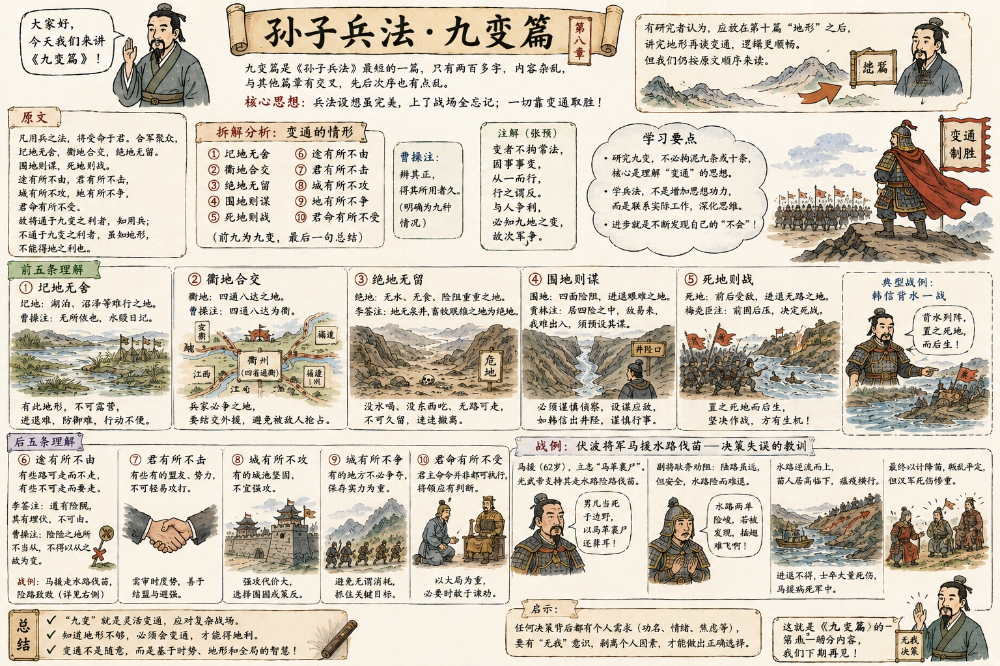
主讲人指出《孙子兵法》第八章九变篇最短但内容杂乱，与地形篇有交叉，有研究者认为应放在地形篇之后。他提到九变是变通的意思，九为虚数，但曹操注解为九种情况。原文列举了十条变通情况：圮地无舍、衢地合交、绝地无留、围地则谋、死地则战、途有所不由、军有所不击、城有所不攻、地有所不争、君命有所不受，学者对九条还是十条有争议，但主讲人认为学习思想更重要。他举例马援征五溪蛮，因个人求功心切选择险路壶头，导致瘟疫和失败，强调决策要剥离个人情绪。
📖 全文解读 · 190句 · 14分35秒（点开看全文）
重温经典，以古鉴今。大家好，我们今天开始讲孙子兵法的第八章九遍。九遍是孙子兵法最短的一篇，一共只有两百多个字，但是内容是比较杂乱的，它和其他的内容是有交叉，而且先后次序也有点乱。特别是他总结说，如果不知道九变，虽然知道地形也不能得地利。所以有研究者的人说，这部分的内容似乎应该放在第十篇地形之后，讲完地形再去讲，要讲变通的一个道理，这样也许逻辑关系会更为顺畅一些。而且有一些地形的术语也是在第十篇地形当中才提出来的，并且给予了一些定义。但不管怎么说，那九遍放在第八章或者是第十章之后，我们肯定还是按照原文的顺序来进行读。变是变通的意思，不按正常的原则处置。九中国人说数字九是一个虚数，就是多的意思在很多种情况，所以9便可以译为翻译成注意变通的几种情况。不过曹操有一个注解，曹操注解说辨其正，得其所用者久，就是说明确有九种情况，这个大家就不好办了。因为久辩这篇原文如果把它读下来做一个分析之后，会发现怎么数它都不止九条。我们先来看看原文是什么。一开始孙子说，凡用兵之法，将受民于军。合军聚众，匹地无赦。渠地合交，决地无流。为地则谋，死地则战。徒有所不由，君有所不积，城有所不攻，地有所不争，君命有所不受。故将通于九变之力者，知用兵以将不通于久变之力者，虽知地形不能得地之利也。在这个里面可以把做一个拆解，我们看看他到底讲了变通的哪些情况。第一他讲到了叫匹地无舌，第二叫渠缔合交，第三叫绝地无流，第四叫为地则谋，第五叫死地折战，第六叫徒有所不由，第七叫君有所不羁，第八叫诚有所不攻，第九个叫地有所不争，第十个叫君命有所不受。明明是十条，于是又有学者提出来是叫九变一节，所以前面讲的是九变最后一条君命有所不受，讲的是总结。关于孙子兵法这一类的研究，其实非常之多，一般好像我们讨论的会比较少，因为不管是九条还是十条，对于我们学习它的思想其实关系不大，九条或十条多学习一下就都可以。这些研究如果钻研进去，一辈子可能都研究不完啊。那是学者专家的工作，不是我们所要了解的一个范围。我们来学不是去增加自己的思想功力，而是和自己的实际工作有什么样的一些关系和总结和思维深度的挖掘。仅此而已。张裕的注解叫变者不拘常法，凌事事变，从一而行，行之谓反。与人争利，必知九地之变，故次君真。如果你不懂兵法就不会打仗，如果你按兵法从事却败了，那就是因为你不懂九变，大概的注解是这个意思。所以什么叫学会，其实没法说，只有会的人才知道什么叫会。而且每过一阵子就会发现自己又不会了，这个时候你又要开始进行进步了，功力又要增长了。进步就是不断的去发现自己有不会的地方。这跟彼得原理很相似。匹地无舍，渠地合交，绝地无流，为地则谋，死地则战。大概这五个我们先来做一些了解，匹地无舍什么匹地？曹操的注解叫无所依也，水毁曰匹。所以匹地就是什么？就是湖泊、沼泽这些难行的地区，很难走的地方。有这样的地形就不要露营。这个社毒，宿舍的社，因为水汪汪的本身扎营住宿就很困难。而且如果敌人打来的时候，你一方面难以去修建那些防御工事，另外一方面方面就进退也很困难，行动不便。局地合交是什么意思呢？渠地就是四四通约渠，所以的渠地指的是什么？就是四通八达的地区。在四通八达的地区是兵家必争之地，在四通八达的这个地方，和各个诸侯国之间来往都很方便。渠地合交就是要搞好外交，一方面你要结交外援，第二就是至少人家不要以你为敌，或者被别人给抢过去。浙江就有一个衢州市衢州市就是四省通衢，浙江、福建、安徽、江西，这是四个省的一个交汇地带，四通八达，这也是兵家必争之地。所以浙江有个地方，它这名字就叫衢州绝地无流。绝地是什么？李泉的注解叫地无全景，畜牧踩桥之地为绝地不可留。就是没水喝，没东西吃，没有柴火，你就赶紧走，千万不要久留了。贾玲的注解叫溪谷坎险，前无通路，曰绝当宿去。物流就是你走到死胡同了，那个地形非常的险要，就赶紧撤，就别被人给堵住了。为地则谋为地的意思就是贾玲注解有一个叫居四险之中，曰为地，敌可往来，我难出入居此地者可预设其谋，使敌不为我患，乃可计也。意思就是四面皆险，你前进的道路很狭窄，你往后退的道路也很艰险。敌人要来很方便，我要出入却很困难，这种地形叫围地。他必须预设其谋，让敌人伤不到我，这才能渡得过去。比如我们学到的有一个战例，其实前面讲过就是韩信破赵之战，他要经过一个地方叫警刑。井刑就是一个显非常显的围地，看名字就看得出来，井就像井底一样，那横两条竖两条行是山脉的中段的地方。所以韩信小心翼翼不敢精兵，他派出间谍侦查清楚没有埋伏，于是大摇大摆的才出了井津口。然后演出了一出背水一战的好戏。此地则战，死地则战的战力就是韩信出了围地，在水边布阵，背水一战，置之死地而后生。梅瑶臣的注解叫前因后有爱决在死战。何氏也有个注解，也是祝12家孙子当中的其中一位。他说素为死战者，身若缓而不战，气衰粮绝不死，何待也就到了死地，那就是等死不如找死，宁肯找死也不能等死，陷入死地要坚决的打，徒有所不由。意思是什么呢？图和这个路途的图是一样的，就是道路有的虽然可以走，但是不走，反过来有的不可以走，也可以去走，这就是变。李泉的注解叫道有险暇，聚其妖伏不可有，也就险暇之地派有埋伏，所以不去走。曹操的注解叫险隘之地所不当从，不得以从之故为变，就不该走的地方有人说不得不走，这就是变。前面我们也看到过那些什么韩信破赵的战例，就走了一条不该走的路，就那个井刑口韩信得到谍报，他说这个程渝不用李佐车的计策，没有分兵，在井行口设伏才敢通过。如果有伏，就像他后来伏了那个叫李佐车之后，又问他说，如果成于用您的计策，那我就被您给擒了。汉伏波将军马原，汉朝的伏波将军最后一战，不是讨伐五西蛮苗族的叛乱就败就走在败在走错了一条路。马原和当时的副将耿叔出兵出战，第一战赢了。蛮兵就是苗族的那些蛮兵，躲在山林里，这个时候马原要去倒他的老巢。有两条路可以走，一条从冲线走路很好走，但是路途很遥远。一个就是从壶口走走水路，路虽然近，但是有水险。马原认为走陆路是路比较远，而且粮食也比较废粮，不如走水路。知道匪曹，那冲县就不攻自破。这个时候耿叔坚决不同意他的副将，他说陆路虽然遥远，但是比较安全，即使不能攻入苗境，你撤退也方便。你水路的话太危险了。除非你能神不知鬼不觉的摸到敌人的老巢，不然一旦被敌人发现两岸巨险而守居高临下，那官军就插翅难飞。因为山高水窄，就是真正的死无张身之地，你路过他山上，石头什么木头扔一扔，这个船就成了。马原不同意，他说陆露也没那么安全，有可能到处埋伏，干嘛，所以两人争执不下，上书朝廷。这个时候光武帝刘秀就支持了马原的意见。于是汉军乘船逆流而上，进入到了虎口。形势发展果然就跟整耿叔所预料的一模一样。苗人很快就发现了汉正的意图，然后就趁高守这个险很险隘的山口，船又上不去，因为这个水流速度很快，因为你是逆行行船，你船走的很慢，加上夏天又又潮湿，然后天气又热。军中起了瘟疫，其实北方的军人不大愿意到南方打仗，就是南方的那个湿热之气很难受。于是士卒得了瘟疫，大批死去，马原自己也累死在军中。马原为什么会犯这样的错误？其实露璐也不一定对，对吧？首先都是所有的事情都是从后果这个结果来去论对错的，实际上对不一定对错也不一定错。但是水路是一条险路，风险更大，这是毫无疑问的。马原就是舍命一搏，他为什么要舍命一搏？是因为马原在出兵之前，他的心理情绪就已经有征兆了，因为那个时候他已经62岁了。武锡蛮抢掠各种军线，光武帝就遣威武将军刘尚去征讨他战于皖水，然后上军拜没，刘尚的军队全部全军覆没。第二年又有一个人叫李松，中原太守马臣又来去征讨，这苗族，依然还是败了。马云这个时候请求也自己带兵去打仗，光武帝就担心他年事已高，就不允许他去打仗。马云就说臣尚能披甲上马，光武帝就命令他试士骑，就试试看骑马到底能不能打仗。于是马元聚安固然以事可用，意思就是在骑在马上摆出一副大将军的威势，以表示自己还能带兵打仗。关武帝这时候就笑笑，他说这个是爵铄斋是翁，也就是说他这个老当益壮的意思，于是就命令马原带领自己的将军，什么马武、耿叔、刘匡、孙永来军人，然后带了4万士兵去讨伐五锡马。马原晚上和这个送他的人离别的时候，就对他的朋友杜英说了一句话，他说我已经年老了。常恐不得死国事，今祸所愿，甘心瞑目。意思就是我恐怕岁数已经大了，你死的时候，可能如果不因为国事而死的话，这个就死不瞑目。如果可以为国家而死的话，那我就算死也能甘心瞑目了。马元素有这个烈士之志，所大家都熟悉的一个成语叫马革裹尸，就是他的典故。他的原话就叫男儿要当死于边野，以马革裹尸还藏耳，何能卧床上在儿女手中，也就是他想死在战场上，不想死在自己家里的床上。于是他出征平叛苗族的叛乱的时候已经62岁了，他对死亡是无所谓了。而这一次又是最后一次为国家建立奇功的机会。水陆虽然险，他怎么会不知道呢？他打了一辈子的仗，他当然清楚了，但是打仗已经打了两年了，他换了三波将领。露璐无非是方便撤退，利于自保，并非利于得胜。这是我最后一仗了，如果我再不建功立业的话，就没机会了。于是马原赌上自己一条老命。但是呢，年轻人怎么会愿意跟这个老家伙一起赌命呢？于是汉军被围困在河谷之中，进退不得，瘟疫横行。每天都有一批一批的人死去的时候，耿叔焦虑万分，人微言轻啊，皇上也不听他的，没办法，他就给自己的哥哥耿改写信说一些情况，说你去跟皇上说。耿敢感觉事态严重，立刻把这个事情上奏给了皇上。耿耿的分量不一样，加再加上确实军事紧急，刘秀就派梁松去问责马原，并且代理监军的事务。梁嵩到的时候，马原已经病死了。这一仗最后的结局不是打赢的，而是用计去降了这个苗人，苗人自己杀了自己的首领来去投降了，然后叛乱被平定了，马原赌了一个命，赌得一个马革裹尸的千古美名，但是被他所悟，马格裹实的还有千千万万的汉军将士。对他决策心理分析，或许是我们的臆断，但是任何决策的背后其实都是某种决策者的个人需求，这种需求有可能是个人和小集团的利益，有可能是个人报复，有可能是某种情绪，有可能是某种焦虑、某种心结、某种心理阴影都有可能。一定要从他的个人角度去分析他的决策，而自己在做决策的时候要有一个无我的意识，把自己的个人因素、情绪从决策当中剥离出来，才能做出正确的选择。无我是客观的基础决策的一个保障。这是我们今天和大家来讲的九辩当中的第一个章节，我们下期再见。
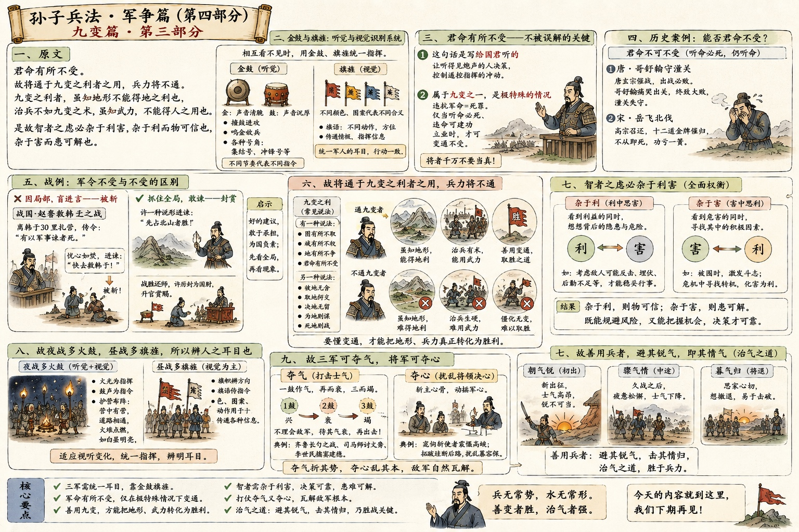
主讲人指出《孙子兵法》中“君命有所不受”常被误解，强调这句话不是说给将军听的，而是说给国君听的，意在让国君不要遥控指挥。他举了哥舒翰和岳飞的例子说明，将军若真不受命，下场是被处死。他还用赵奢斩谏言小将、许立冒死进言的战例，说明下级对上级的“不受”需要牺牲决心。最后总结，变通是特殊情境下的选择，并非普遍原则。
📖 全文解读 · 137句 · 10分32秒（点开看全文）
重温经典，以古鉴今。大家好，我们今天继续为大家来讲孙子兵法，来讲孙子兵法的九变篇第三个部分。这一篇当中有一句话叫做君命有所不受，就国君的命令有的时候是不应该接受的，比如不符合前线实际状况就可以不接受。但是大部分人会被这句话所误导和误解，那多少人的职业生涯就因为这句话而丧失了？君命有所不受也算是孙子兵法里面非常有名的名句之一。曹操有一个注解，叫苟辩于事，不拘于君命。也就是只要有利于战争的实际状况，不必拘泥于国君的命令。未了子当中也有一句话叫，兵者凶器也，争者逆德也，将者死官也，无天于上，无地于下，无敌于前，无主于后，意思就是这个人在生死之间为了生存什么都可以干，没有道德标准，无法无天，也不存在什么主君了。真实情况是这样吗？往往真实情况并不是我们看到的这样，如果真的是这样，其实战争就无法指挥了。因为你大将对于国军如果军命有所不受，那么小将对于大将也是军命有所不受。每个人都有自己的判断，不接受上级的判断，那么还怎么指挥战争呢？所以这句话的理解关键我觉得会有两个部分。第一个，这句话不是说给将军听的，这句话是说给国军听的。就是您要让能听得见炮声的人来做决策，尽量控制自己遥控指挥的冲动，这是说给国军听的。第二，这是九辩之一，讲的是变通。而所谓的变通就不是一般的情况，是很特殊的情况。军命有所不受，意思就是我不听国军的命令是死罪。但是遇到了极其特殊的情况，我只要听了肯定得死。但如果我不听，却可以为国家建功立业，这个时候可以变通，可以不听。军命有所不受，为将者千万不要当真了。这句话本来就是带兵打仗的人写在兵书里给到国君看的，你别国君还没当真，你自己当真了，还认为自己有了至高无上的决策权利。我们看历史上很多真实的事件啊，是不是军命有所不受呢？唐代安史之乱，哥舒涵守着潼关坚壁不出，唐玄宗却催促他出战。这在我们上面几篇其实都讲过这个故事。哥舒涵知道只要出战必败，他想不想将在外军民有所不受，不听唐玄宗的非得兼必不出呢？他想，但是军命有所不受的下场是什么？就是被处死。你看前面高先芝风长卿这样的名将，国家柱石都被唐玄宗给斩了，所以哥舒涵只能痛哭出关，就豪天抢地的痛哭，大声的哭吼着，然后出关迎战敌军。果然唐军大败，潼关失守，哥书桓被俘，唐玄宗也被迫丢弃长安逃往四川。还有就是著名的名将岳飞，北伐功亏一篑，被宋高宗给召还。他能不能君命有所不受呢？那不受就是一死，他派一个监军带着个圣旨来，在军营当中就斩了，怎么会十二道金牌不断的把你摧回宫中呢？我们再来看一个之前看过的战例，讲小将对于大将军命有所受还是不受的。战国时期，秦赵打仗，在堪于这个地方，秦国有重兵包围堪于这个城，赵奢就率军去救，但是他离邯郸三十里就停下来安营扎寨，没有一思进攻的这种感觉，于是就传了个军令，他说有以军事剑者死，就是你如果在军事上要给我建议的话，那你就准备死。秦军在包围看舆的同时，为了防止赵军来救，于是分兵一支只差5万，沉到了一个犄角之势。赵军当中有一位小将忧心如焚向赵奢敬谏，他说你快去救武安，否则就会如何。那赵奢立马就把他给斩了，因为我说过，军有以军事剑者死，等把秦军麻痹够了，秦军相信赵奢也只是应付一下，根本没有想来打的意思。到时突然亲率把自己的亲兵连夜急尽插到堪舆城下五十里扎营。这个时候，军士许立看了地形就进言说，先占北山者胜，请在北山安营扎阵。赵奢同意了他的意见，许立说，我的话已经说完了，请您行军法斩我。赵奢说，等我回去再说。得胜还师之后，许立被封为国位，还升官了。从这个战例我们看到什么呢？就第一个被斩的那个小关，他只看到局部，没有看到全局。他只看到了一个现象，没有看到本质。他的判断并不如他上级的判断，但是他要军命有所不受，所以就把斩了，而他的人头也成为了赵奢战略的一部分。第二个军民有所不受的是许力，首先他有必死之心，这条命他就是国家的。如果我的话能够对国家有用，我说出来我死的而武汉。所以如果你想军命有所不受，就首先要有牺牲自己的决心。故将通于久变之利者之用，兵力将不通。久变之利者，虽知地形不能得地之利也，治兵不如久变之术，虽之武力不能得人之用也。这句话是对于前面写的相当长的一段话的总结。他说将帅能够精通以上变通的，就懂得用兵了。如果你不懂得变通的话，即便是了解地形，你也得不到地利。如果你指挥军队不懂得变通，虽然知道武力，也不能充分的发挥军队的战斗力。这里出现了一个词叫武力，其实和9变是一个意思，就是九变里的5种情况。那么哪五种呢？有一个说法是图有所不由，君有所不积，城有所不攻，地有所不争，君命有所不受。有一个说法叫匹地无舍，取地何交，决地无留，为地则谋，死地则战。总之不管他表达的是哪一种意思，总之你要懂变通。是故智者之虑必杂于利害，杂于利而物可信也，杂于害而患可竭也。什么意思呢？就是智者能够兼顾到利害两方面的考虑，既看到有利条件，也能看到不利的条件。这点有点像我们现在常用的说的分析，就是优势、劣势、机会威胁，利就是机会。那么害就算威胁，你两方面都分析的到，你不能只顾一投。曹代的注解叫在利私害，在害私利当难行全。也就是你看到利就想想他有什么隐患，你藏着什么危险。你看到害就想想他有什么积极的一面，你能够转害为利，遇到困难或者是突发状况，你要懂得变通。曹操注解的很深刻，那我们自己在害私利很容易，再利私害其实很难。因为人们总有一种心理，就是一厢情愿，总是贪利而避害的。因为总有侥幸心理，贪利是真贪，避害却不是真弊。在心理上逃避侥幸而疏于防范。见到利的时候心里想那背后其实一定有害，但是却认为他不一定会发生，起码不一定会在你的肾上发生。见到害的时候，却坚决相信背后是有利的，而且一定会在你的身上发生。人们看到对于危机的解释，你就知道了，人人都同意危机，危机就是危险加机会，对吧？我们要化危险为机会，危机的机就是机会的机。但实际上危机的机可以用另外一种解释叫扳机的机。你不要去扣那个扳机，该买单的时候就买单，低调买单认赔就行了，这就是最积极的处理。谁不遇到点坏事，谁玩股票不亏钱呢？不要老想着把坏事变好事，试图在坏事上还能再捞一笔认输其实才能会赢，不认输不买单就继续往里面投入，最后捞本进去了，还不一定捞得回来。害没能转化为利，反而越来越大的害，那就不是孙子兵法交给我们的本意了。杂于利而物可信也。杂于利就是以害杂于利，把不利的那一面，有害的可能性都放进去考虑，就能应对自如。那么我们要对做自己做的事情就有了信心，能够实现它。曹操的注解叫既敌不能一无地而为我害所恶可信，也就是把敌人可能害我的地方都考虑进去，怎么算他都害不到我的时候，那我们的自己的计划就可以实施了。杂于害而患可解也。杂于害就是以利杂于害，在亥中能发现有力的一面，发挥出有利的那一面的价值，那么就可以解除患难。杜牧的注解就是我想解决敌人的敌人之患，不能只看到敌人害我的那一面，还要看我能取利于敌的那一面，掺杂的对照衡量才能解患。比如我们被敌人包围了，如果只想着突围出去，那就斗志懈怠，最终会被敌人所追杀，不如与战争之力去鼓舞将士拼死一战，那就更能解围了。贾玲的注解叫，在害时则私利而免害，故错之死地则生，投之亡地则存，视其患解。也就是讲张裕讲了一个战例，叫四晋八王之乱，张方入洛阳，然后接连战败，有人劝他就凑，趁着这个宵夜，趁着晚上赶紧跑吧。他说兵之力盾是常贵，英败以成耳，商业潜进逼敌，就赢了。张芳的话前面的一句意思就是胜败乃败兵家常事。后面一句话很有味道，他说英败已成，贵在英败已成，一路失败，最后把事办成了，就像科学发明搞实验一样的，或者是你经营创业节实都一样，都是因败已成，顺着失败一路总结，最后获得成功。这就是失败和成失败乃成功之母的本来的意思，可能并不是一直失败，而是你要做一些不断的总结，可能才会成为成功之母。我们今天的内容就到这里，我们下期再见。

主讲人解读《孙子兵法》九变篇最后部分，先解释“趋诸侯者以害、役诸侯者以业、屈诸侯者以利”三种手段，举长平之战、吴国疲楚、郑国渠为例。接着强调“无恃其不来，恃吾有以待”，以朱然日常演兵为例说明居安思危。最后重点分析“将有五危”：必死可杀、必生可辱、忿速可侮、廉洁可辱、爱民可烦，分别举姚襄、宋老生、刘邦等历史人物为例，指出性格缺陷是领导力灾难，并调侃刘邦“人至贱则无敌”。
📖 全文解读 · 211句 · 16分17秒（点开看全文）
重温经典，一古见今。大家好，我们今天继续为大家读孙子兵法，来读孙子兵法九变篇的最后一个部分事故。趋诸侯者以害，益诸侯者以业，屈诸侯者以利，什么意思呢？趋诸侯者以害屈服的趋是想办法让他去做对自己不利的事情，使他的力量得不到伸展。曹操的注解叫害其所恶，也对他不利的事情想办法让他去做，李全的注解叫害其正义，就损害他的政治，这都是教人怎么害人，我们看看就行了，不一定非得要会做。他又其贤智令比无臣，就是把他的一些贤良智慧的人拉走，让他没有人才可以用。然后扶持他的一些奸人，一些小人，让他的政令变败坏，以巧诈之际离间他们的君臣。这样的案例有很多，之前我们看到有一个战例叫做长平之战。秦国使间谍去邯郸散布谣言，说廉颇不出战是要投降秦国，秦国根本不怕廉颇，最怕的就是赵括，目的就是让赵国撤换廉颇，让赵括前来送死。一诸侯者以夜夜是什么？夜就是事儿，找点事儿来折腾他，劳逸他，让他疲惫。曹操的注解，夜事也使其烦劳，如入如笔入我出，笔出我入也，意思就是折腾他，让他来来回回，他回去我就出来，他出来我就打回去。战立我们前面也看过，就是春秋时期吴国折腾楚国的事儿。伍子胥把吴军分为三军，一军出击，楚国全国动员，吴军就回来休息了，等到楚国解散，吴军第二军又来骚扰那吴楚国继续全国动员，然后吴国又休息了，然后楚军解散，然后吴军第三军在上，车轮战连续搞搞了好几轮，楚国的精神崩溃了。这个时候吴国三军齐出，就攻陷了他的颍都，成为了春秋时期攻陷国都的第一战。战国时期，韩国为了劳役秦国，也诱使秦国把人力物力消耗在水力建设上，无力进行东伐。这个时候就派水攻郑国。到了秦国实行叫皮秦之际，郑国给秦国设计了一个兴修水利的工程，就是把泾水引到洛阳里面三百余里的一个灌溉工程。在实施工程当中，韩王的计谋暴露秦要杀郑国。郑国就说当初韩王叫我来做间谍的，但是水渠如果修成，只不过为韩这个国家绵延数岁之命，也就几年光景，但是对于秦国来说却是万世之功。秦王震认为郑国的话有道理，让他继续主持这项功臣。当郑国渠修成之后，大大改变了关中的农业生产的面貌，余量稀少，土地贫瘠的关中地区瞬间变得富庶。甲天下，韩国以义，诸侯以业，这个计反而让秦国成就了千古伟业。屈诸侯者以利是什么呢？就是用利益诱惑让敌人自己找上门来。曹操的注解叫令自来也，张裕的注解叫动以小利使之避趋。就是这些动作都是教人怎么去害人的，你简简单单看看就可以了，千万不要被人害，更不要去害人，叫防人之心不可无，害人之心不要有。故用兵之法，无事其不来，事物由以待也。无事其不攻，事物有所不可攻也。用兵的法则不是指望敌人不来，要依靠我有充分的准备来应对他。不要指望敌人不向我们进攻，而要依靠我们有敌人进攻不下来的力量和方法。曹操的注解叫安不忘危常设备，也就是时刻防备着，时刻准备着。我们经常在进行军队的检阅的时候，不就是说时刻准被子。吴起讲将道里面就有一句话叫出门如见敌，就是你时刻保持着要面对敌人的这个高度戒备。有人常说，那这个准备99%都是白准备的，敌人也没来。事实上你有所准备正是敌人没有来的原因，一旦你没有准备，他马上就会到。所以有事要解决困难，没事儿要防着，随时会出事儿，领导人设你没有办法不焦虑，因为他每天都在精神高度紧张和焦虑当中去度过。王曦举了一个例子叫朱然，这个人三国时期孙权的一个大将。朱然虽然没有周瑜那么有名，但是他的地位可不低，最后官至左大司马右军师，这是东吴政治军师的最高决策人之一。他一生战功赫赫，活了68岁，在乱世当中可谓是善终。他就是没有战事的时候，也每天都是这个西每天都是擂鼓演兵来进行军事演习。在军营当中全副武装随时都有可能开挖出去，敌也不知道他在备战什么，所以他每次出兵都能建功立业，所以居安思危在治思乱，借于无形，防患于未然，每天都在解决困难，随时都准备出事儿。因为出事是必然的，不出事是不可能的。那当领导就是解决困难和平事儿的。故将有无威，必死可杀也，必生可辱也，愤肃可污也，廉洁可辱也，爱民可反也。凡此吾者，将之过也，用兵之哉也。父君杀将必以武威，不可不察也。这是说什么？他说的其实是领导力，领导力很大程度上是一种性格，反之，领导的灾难往往也是一种性格的缺陷。将领一般来说有五种性格缺陷，这是最危险的。第一，不怕死。一般人说不怕死怎么会是一个非常危险的事儿呢？因为不怕死你就意味着将领会一味的死拼，那就会被敌人所杀。最关键的是你的部下会被敌人所杀。第二，贪生怕死，没有必死之心又会被俘虏，所以这是一个很难做的，当领导都不容易。第三，愤怒急躁，经不起刺激，会中那个别人激怒你的计策，愤而出战，你就送死了。第四，廉洁，爱惜自己的名誉，你受不得任何的侮辱，为了维护自己的名誉和这个所谓的声誉，洗清别人泼在自己身上的脏水，如果你这个时候你就会不顾巨大的风险出债，于是就会中计。第五，爱护居民。你爱护居民也会被人利用，或者让他为掩护居民而烦恼，或驱使人民为炮灰，让他不忍作战，敌人就藏藏在这些人民当中。这五种性格缺陷都是将领的过错，用兵的灾害，军队覆灭，将领生死都是由于这五种危险造成的，不可不警惕。故将有五威，必死可杀、必生可辱，愤怒可污、廉洁可辱。哀民可烦，凡此吾者，将之过也。用兵之灾，赴军杀将必以武威，不可不察也。必死可杀是什么？就是勇而无虑，叫必欲死斗不可取挠，可以其福众之。就遇到那些有勇无谋的，拼死就打仗，不跟他正面交锋引他来，然后设伏兵吃掉他。司马法说叫上死不慎。如果说将领没有谋略，就只知道用自己身先士卒去冒死奋战，那么就没有办法取得胜利。黄石公就是传说中宋太公兵法给张良的那位神仙，说勇者好行其志，愚者不顾其死。勇者好行其志，就是勇敢的人按照自己的意愿去从事，不愿意因为危险而放弃自己的计划，如果这个时候他又愚蠢，就不顾其死了，就看不到死亡的危险。吴起说，凡人之论将常官勇，勇之于将乃数分之一耳。夫勇者必精何亲和而不知利未可降也。意思是什么呢？就是吴起说，一般人来看待一个将军或者一个领导者，都把勇敢放在第一位。其实勇敢的品质对于将领来说只不过是占几分之1。因为勇敢的人必然轻于合战，就没有把对自己有利的东西想清楚就挥师去打仗，那个是将领不能做的。孙子讲将道排序叫智性人永言，克劳斯埃维斯也说讲将道专门会强调勇敢是第一。吴起则干脆说勇敢只是将领必备的品质的几分之一而已，毕生可辱也。作为俘虏，曹操的注解叫见利未切，不可敬也。司马法说上死不慎，也说上身多疑，什么意思呢？就是贪嗔怕死，疑神疑鬼。你放大危险，害怕损失，没有斗志，这就是兵家大患。封静的时候，有一个人叫横悬，篡位称帝。这个时候晋的将领刘裕起兵讨伐数江，而上去打那个横悬，占于真戎州这个地方。当时刘裕只有几千兵，而横悬的这个兵马颇为强盛。但是恒玄害怕失败，怕死，在他的战船旁边总系着一个青州，随时准备跑。他的士兵看在眼里也就没有了斗志。结果刘裕趁风纵火，劲锐针先，然后横旋大败，就是一样用了一个铁甲联营的曹率，对不起，他就用了一个火攻的计策，那就把衡玄给打败了。孟氏的注解叫将之怯懦赤毙身，反意不侵战，士卒不惊，上下犹豫，可疾击而取之。这几句话其实说的很深刻，如果你怯懦就治毙身反。你心里想的一定要回来，因为你胆小，一定会想着要活着，那你就不能去打仗，因为打仗没有一定要回来这一说的，一定要活着就只能逃跑或者投降。义不侵战的意思是什么？就是你不准备亲自上阵作战，让手下在前面冲杀那也不行。因为要打仗是你的事儿，大家是跟着你办事，帮你办事，不能你不去办，让别人办，那就不能用你了。今天我们其实任何工作都一样，你永远不能脱离一线，就不能脱离销售，不能脱离一线。脱离了一线，从思想上来说不接地气，脱离实际，领导力就会削弱。从组织上来说，你没有跟一线战士站在一起，没有亲自带兵，那就会士卒不经上下犹豫，就会被别人疾击而取之愤肃可辱也就是意思是什么呢？就是愤者就是刚怒也，素者偏急也，性不厚重也，意思就是当将领的一定要性格稳重，要厚重，要持重。如果你又急，你又容易怒，你心胸还狭窄，做事还那么的急躁，这个时候敌人就会利用你的性格弱点去激怒你，侮辱你，然后引你上钩。在五胡乱华时期，在16国时期，有一个人叫姚湘去打黄洛。这个前秦的附身派傅黄梅，然后邓羌讨伐，遥相深沟高垒，固守不战。邓羌就对黄眉说，他们彼此这个将领当中的主将和副将，就跟说姚湘这个人性格非常的刚狠，容易激动。如果我们大张旗鼓长驱直径直压他的营垒，他一定受不了我们的嚣张气焰，一定要来决出个高下，那么我们就可以一战而请之。黄眉依计而行，果然遥香受不了了，凤儿出战被黄眉所杀，李世民斩掉了随将。宋老身也是这样子的，宋老生其实是率金军2万，守住了一个臣叫霍一臣。李渊来打。李世民说宋老生这个人有勇无谋，肯定会出战的。于是李渊就在城外设伏，李建成、李世民就带了几十个骑兵到了城下去辱骂宋老生。宋老生一听果然受不了，率军出城，结果就中了李渊的埋伏，后面又被李世民夺了城门，断了归路，被斩于阵列当中。廉洁可辱也侮辱的辱。廉洁不是说不贪污，是洁身自好。什么极端爱惜自己羽毛的意思，不是说这个人不贪污，爱惜名声，容不得自己身上有一点点污点，有一点脏水。你坏他的名声，他跳进黄河也洗不清，所以他一定要跟你拼命。第二就是宁死，他要证明自己的清白，他就会乖乖中计，送上门来，明知是迹他也甘愿上当，这种人受不了。污名是人的一大性格弱点，污名钓誉追求自己的清明也是一个毛病。因为你越是清清白白闪闪亮亮，你越是周围的人，就会有强迫症，拿去找你的污点，泼你脏水，因为你太刺眼了。中国古代本来就有一个叫君子自污的说法，水至清者无鱼嘛，自己给自己撒点无伤大雅的污垢，不要那么刺眼，这也是一种避祸的手段和方法。爱民可繁衍，就跟绑架一样。你看电影上的那些大英雄，最后都把他别人都是把他女朋友给抓住了。于是他上刀山下火海也得过来，对吧？将领如果爱惜人民，就会以人民为人质去胁迫他。大家熟悉的就是三国演义当中，曹操打打过来，刘备就带着人民去走。那到了赤壁之战之前，所以走的慢，被曹操给追上了。但是有的时候不吃这一套，有很多人，比如周亚夫在七国之乱的时候，叛军攻打梁国非常紧急。这个时候梁王苦战和求救，周亚夫根本置之不理，任由梁国挣扎在生死边缘。实际上他压根就是让叛军的士气和粮草都在粮国耗尽，最后以逸待劳去收拾残局。最后结果如他所算，梁国顶住了叛军，粮食没了，撤退了。这个时候周亚父积其堕亏，一举平叛。不过梁王恨他也恨透了，那苦战的是老子，平叛的是周亚夫，那周亚夫不顾梁王比他更狠的那是谁呢？有一个人叫刘邦，他连自己的父亲、妻子、儿女统通都不顾，项羽捉了他的父亲和妻子吕雉，他把他爹给剥光了，衣服捆在案板上，旁边加一口大锅，说你要是不跟我打，我就把你爹给煮了，把你老婆给杀了。刘邦这个时候站在城墙上大声回应，是吧，咱们俩在怀王面前略为兄弟，就是你爹就是我爹，我爹就是你爹。你要碰了咱爹，那你也分一杯汤给我喝，至于我老婆，你要杀就杀，无所谓。项羽在他的面前流氓嘴脸之前气的脸色铁青，可是又没办法，最后还是没有伤害刘邦的家人。还有一次就是刘邦被项羽打的大败，落荒而逃，夏侯婴驾车和他自己的一对儿女在车上，这是后来的汉孝惠帝和汝元公主，后面有追兵，情况非常紧急，刘邦就嫌车上人太多，跑的不够快，这个嚓嚓两脚就把自己儿女给踹下车，不要了，自己跑了。夏辉英这个时候赶紧停下车，把这俩小孩给抱上来。如是者3，在历史书上出现了这四个字，什么意思呢？就是来回回来了三次，而且每次夏侯英都把孩子给抱回来，惊恐的孩子搂着他的脖子哈他还不断的去催马狂奔，而是慢慢的要哄下来，去让孩子平复一下，这个时候才走。刘邦气的就想杀掉夏侯胤，但是杀了就没有人赶车了，最后还是安然无恙的逃离了险境。就像刘邦这样叫不必死，不必身，不愤肃、不廉洁、不爱民。就是人贱到这个程度那就无敌了，人至贱则无敌。最后这句话九辩的部分就到这里告一个段落了。我们下期继续和大家来讲孙子兵法的其他章节，我们下期再见。
行军篇 · 第九
5/5 段靠细节读懂对手的真实意图；带队伍要恩威并施，人贵在精不在多。
- 处军：山地、水边、盐碱地、平原各有驻扎要诀。
- 相敌：从尘土、鸟兽、敌使言辞等细节推断对方动向。
- 恩威并施：先建立感情再立规矩，赏罚要服众。
判断对手别只听他说什么，看他言行间的「不一致」；带团队文武并用。

主讲人解读《孙子兵法·行军篇》，重点讲了山地和水上两种地形的行军扎营方法。山地行军要“绝山依谷”，靠近山谷以便获取水草，但扎营需在高处向阳面，避免被居高临下攻击和疾病。他举了马援征讨羌族时占据山谷夺其水草逼降的例子。水上作战要“半济而击”，等敌人渡河一半时攻击，但前提是主动求战而非单纯防守。他对比了郭淮远水列阵吓退刘备和薛万钧半渡而击破窦建德的战例，说明敌我双方都懂兵法时需反向运用。还提到晋楚交战双方互相退避不战，引出学习兵法的痛苦是敌人也懂兵法。
📖 全文解读 · 151句 · 11分43秒（点开看全文）
重温经典，以古鉴今。大家好，我们今天继续为大家来读孙子兵法。爱读孙子兵法的第九章节行军篇。行军篇王羲的注解叫行军当居地变察敌情也。行军包括了什么呢？包括了行军肃营布阵，一是要利用有利的地形便利条件，二是要注意侦查敌情。所以行军篇就是讲不同地形的注意事项和观察敌情判断的各种要诀。他说处军凡有四相敌，凡三十有意，所以这一章节的内容其实讲了是四种地形的扎营方法和31种敌情的表征的判断。我们接下来就来详细的来看行军篇。孙子曰，凡楚君相敌绝山一谷四深，楚高战龙无登此楚山之君也。决水避远，水克，决水而来，勿迎之于水内，令半稷而击之。利欲战者，勿夫于水而迎客。赤身处高，无盈水流，此处水上之君也。楚军什么意思呢？楚军就是驻军肃营、安营、扎寨。相敌相敌就是观察敌人，判断一些特征，出现什么现象，表明什么问题。绝山医谷士身处高站，龙无登此楚山之君也。这是一种地形状态，就是在山地当中的行军要诀。绝山一谷决就是通过的意思。一就是靠近，所以行军你要通过山地的话，是要靠近山谷的。山谷里有什么？曹操的注解叫静水草变里，山谷里才有水源，又有草可以放牧。因为军队有马要吃草，炊石班还要带的猪羊也要吃草。你看很多的我们的战争题材都是只要走过山谷都一定有埋伏。但为什么你明明知道会有可能造成埋伏，依然从山谷当中要穿过去呢？就是因为山谷当中有很多的水草便利，方便他的整个马匹、猪、羊、吃草来使用。后汉时期武都羌族叛乱，马原负责去征讨羌族。在山上马原就占据的山谷，夺其水草，坚守不战。这个时候羌族的这些人水源断绝，粮食吃尽了，穷困不堪，于是就都投降了。士绅处高深就是阳面，就是朝南向阳约深，在山曰高，山高之地可居也。什么意思呢？就是绝山一谷，要靠近山谷，但是你不能在谷底扎营，要在高处向阳的地方扎营。在高处低，视野开阔，便于防守。如果你在山谷里扎营，很容易被别人所包围，别人居高临下的攻击，扔一些石头下来，你的营帐就会被崩溃。为什么强调要在阳面呢？因为阳面相对干燥，温暖而且舒适，不容易生病。如果你在阴湿的这个背面，那么士冰就很容易感冒。如果你流感横行的话，在一个缺医少药的古代，那就有可能造成大规模的死亡。拿破仑说。再残酷的战斗啊，没有营地不卫生，对于士气的打击都会很大。瘟疫流行的非战斗战减员远比那些战斗减员来的更可怕。因为战斗减员，你的人战死，敌人也在战死，你在耗损敌人。但是非战斗减员是你自己病死，你一点都没有伤到敌人。战龙无灯，杜牧的纠结龙高，言敌人在高，我不可自下往高迎敌人而皆战，也就是你养功总归是吃亏的，所以不要硬上，只要你自己在低的位置，敌人在高的位置，就不要随便的往上冲。此楚山之君也。这是这就是在山地行军扎营的处置办法。那我们再看看在水上打仗有什么样的方法，决水避远水克决水而来，勿迎之于水内，令半击而击之利遇战者勿复于水而迎客，士身处高无盈水流，此处水上之君也。绝是什么？就是通过跟上面那一条绝山一谷是一个意思，就通过山地要靠近山谷。那这条说决水避远水的意思就是你渡过河之后，你要远离这条河流，克绝水而来物，银之于水内，令半季而及之利欲战者勿夫于水而盈客。敌人渡河来攻，首先我们要列阵要远水啊不要赴水，不要依附在水边，也不要在水上去迎接敌人，要等他渡过一半再来打，就是这句话的意思。所以孙子的水战法，其实他还是陆战法，如果都在水上打，那就是水军。你不在水边列阵，水边列阵是可以阻止敌人过河的。但是他不渡过来的话，我们也没有办法打他。所以我们有的时候会放弃河岸去防守阵地，然后引他渡河。他如果渡河也不要在水面上打他，要等他渡过一半的时候再打，这样敌军只有一半的兵力投入战斗，而且他们在河滩在低处，我们从高往低去冲击他对我们有利。这和我们平时想象的防守和登陆作战不大一样。比如说诺曼底登陆，德国如果不在海岸线上设防，等盟军半渡而打，那是不可想象的。所以在这个事情上有一个前提，就是遇战者我们的目的是要消灭对方的，而不是为了防守。你这个时候才能半度而击之，否则你就要防守。好，杜牧在这个书的注解当中讲了一个战例。他说三国时期，魏将郭淮在汉中，刘备欲渡汉水来攻。郭淮的部下的将领，都认为刘备势力很大，而且兵很多，重寡不敌我们人少，刘备人多，应该依水为政，不让他渡河。郭淮说不对，如果我们依水为政，那是势弱。刘备一看就知道我们不敢跟他打，那他就敢过来了。那我们这个时候不如远水为阵，引他过来，等他渡过一半，我们再来打他，于是远水为阵。这个时候刘备在对岸看了，知道这是在玩一个叫半计而击的套路，于是他不敢过来就撤兵了。刘备看见郭淮远水而镇，就不敢过河。唐朝初年有一个类似的战力，但是结局是相反的。薛万钧和罗毅守幽雁这个地方，窦建德率数十万人去侵犯范阳这个城市。薛万军对于罗毅说，就要众寡不敌，敌人比较人多，我们比较人少，我们没有办法跟他打。如果我们打跟他打，百战百败，只能继取怎么办？我们雷马若兵阻水被城为阵，引诱他来渡河。这个时候宁要亲率荆济数百人在城内设伏，等他渡过一半，然后去打他。罗辑依计而行，窦建德果然渡河，半渡而济，打破窦建德。你看同样的一个打法，同样的一件事，对于懂的人和不懂的人，或者是对于不同的人，其实他的操作方法和结果都是不一样的。遇战者勿富于水而迎客，想和敌人交战，就不要在水边列阵迎敌。如果你在水边列阵，敌人其实就不敢过河来跟我们打。张裕的注解叫我欲必战就不要进水迎敌，因为他怕他不渡河，反之我不想战就阻水拒之，让他过不了河。不过由于双方都懂这个道理，我们再看前面那个战力，对于这条的运用都是反着的。郭淮不想跟刘备打，他知道兵法。他不想打的话，就应该在水边列阵，挡住他不让过河，对不对？但是他知道刘备也懂兵法，于是你如果进水列阵，刘备就知道你实力不济不想打。那么这个时候刘备反而要渡过河来打你，你在水边的一点兵力也不一定挡得住。而郭淮选择的是远水列阵，根据兵法，刘备认为郭淮的实力是有的，他很自信，于是就离水边远一点，那肯定是想跟你打的，他准备半渡而击，那这个时候刘备反而不敢来了，结果郭淮赌赢了，刘备判断错了。张裕还讲了一个有意思的战例，说是春秋时期的晋楚交战，晋将杨楚富和楚将子上加在一个也是隔着水，相对也有两个两支部队。杨楚阜就想让这个楚军过河，他用半渡而击这个打法，于是退军一射，一射就30里退军一射子上也想到了半渡而起之际又是禁军过河，于是他自己也退军一社。大家想到一块儿去了，互相都不中计，反而越退越远。然后彼此觉得没意思了，干脆各自退回国内去了，就不打了。所以学习兵法的痛苦是什么？学习兵法的痛苦就是敌人也懂兵法，但是学习博弈论的痛苦是对方不懂博弈论。因为兵法是要我赢，那对方也懂，对方也想要自己赢，所以就不容易赢，因为双方都想自己赢。但是博弈论不一样，博弈论是追求双赢。如果对方不懂博弈论，你能算出双方共同的最优解是什么。但是他不懂，他不会算，于是就把你拖下水，搞他个两败俱伤。士身处高，前面讲到在山地宿营要侍身处高，在水边也一样要侍身处高。在高处在向阳那一面，曹操的注解叫水上一当处其高也，前向水后当衣高而处之。要在阳面。前面说了阳面是干燥微生不生病居高处就是视野开阔，观察敌情比较方便。第二就是不会被别人放水给淹。如果你夜里洪山洪爆发，水上很多水量上涨，你就可以很好的去处理它。而不会你如果在低处很容易被冲，你的军队会被冲垮。第三就是如果敌人来袭击，你还是有高处，可以借助这个士气的变化。因为你地势高，你有气势无影水流，意思就是一样。就是曹操的注解就是怕别人灌溉我，就怕别人放水来淹我跟前面的视身处高是一个意思。贾玲的注解有一句话叫做水流之地可以盖五菌，可以留毒药。除了水淹，如果敌人在水中放一些毒，那么你喝了这个水就会很危险。诸葛亮说水上之阵不可逆其流，就是讲水战了，水战是顺流而下，你要占便宜，你占大便宜。如果你逆流而上去打敌人，那么你还要和水流作战，那么你的胜算就会很低。所以历代的襄阳和安庆是军事重镇，襄阳或者安庆一旦陷落，顺流而下，南京基本上就守不住了，所以在水上作战当中，襄阳和安庆是非常重要的两个城池，此处水上之军也，这就是在水上用兵的方法。今天我们和大家来说了陆上用兵和水上用兵的两个方法，我们下期再来解读其他的内容，下期再见。

主讲人解读《孙子兵法》行军篇第二段，重点讲斥责（盐碱沼泽）、平陆（平原）等四种地形的驻军原则。他举红军过草地、沙漠陷坑为例说明斥责地要快速通过；用北方种树防骑兵类比平原驻军要右背高前死后生。还联系现代水库放水、户外运动遇山洪等场景，强调‘上雨水沫’的预警价值。最后总结六种危险地形（绝涧、天井等），主张远离并诱敌靠近。
📖 全文解读 · 154句 · 11分52秒（点开看全文）
重温经典，一古鉴今。大家好，我们今天继续为大家来读孙子兵法行军篇的第二章节。决赤责为疾去无留。若教君于赤责，必因水草而被种树，此处赤泽之君也。平路处翼而右被高前死后生，此处平路之君也。凡此视四君之利，皇帝之所以慎四地也。凡君好高而恶下，贵阳而坚阴，养身而处实。军无百疾，势未必胜，丘陵堤防，必处其阳而右备之，此兵之利，地之助也。赤是什么？敕就是言简地则就是沼泽地，决赤则为疾去无流，意思就是部队要通过盐碱地或者沼泽地的时候，要快速通过，千万不要逗留。盐碱和沼泽有什么威胁呢？对于军队来说，第一它不生五谷，没有食物，你得不到补给。第二就是水草比较薄，难以宿营。第三就是地势宽广而低下，防备无所依靠，难以构筑工事。第四就是地气湿润，容易生生病，所以为急去无留，就是赶紧走，不要停留。这里我们也看到当年红军长征过草地的苦处，其实很艰难的。若交君于斥责，必依水草而被种树。万一和敌人要在斥责之地遭遇了怎么办呢？就一定要靠近水草而背靠树林。靠近水草的意思就必须要有水源，如果是盐碱地，没有水和军队就支持不了。背靠树木一是背靠险阻，那不至于四面都被敌人所骚扰。第二是沼泽地，你不知道深浅，你不知道哪个地方，你一脚踏进去就再也出不来了。我们在电影里面不都看过吗？红军过草地走着走着一个战士突然就陷到水里面，那没了顶。然后沙漠也有这种状况，对吧？去某些地方沙是松的一个深坑，你一脚抬下去，你自己爬不出来了，你一点一点被陷到沙漠里面给埋了，去拉你的人也很危险，说不定一起会被陷下去。而长有树木的地方，地面就比较坚实，没有这种危险。此处斥责之君也，这就是在盐碱沼泽这个地区用兵的方法。平路处驿就是在平原上驻扎，要选择平坎的地方，没有沟沟坎坎，这个时候就便于自己的车马和个马匹奔驰来往。所以古代为了防止北方游牧民族南倾，不仅有长城，还在平原地带大量的种树，就是因为北方匈奴是骑兵为主，我们是步兵，所以要用树林来减缓他的这个行军速度，否则他直接突，直接骑这个马就长须直入，那就很麻烦了。而右背高前死后生，平路处义就是要找平坦的地方，但不是四面都平坦，四面都平坦，那你四面受敌就会很麻烦。最好要右背高，就是右边背靠着一个高地，左边是比较平坦，这样我们后有屏障，前可杀敌，前死后生，就是前面是战场是死地，后面有靠山，没危险，是深地，这样打起仗来我们就会有便利条件。所以两军交战的时候，谁先到战场，谁就占了有利地形，那谁就多了很大的一个胜算。那为什么是右背高？不是左背高呢？李全有个注解，他说扶人利用皆便于右，是以备之。就是用右手端枪，也是左手在前，右手在后。你看拿刀基本上也是右手，我们吃饭也是右手，写字也是右手，右手力气比较大，所以右边比较方便。此处平路之君也，这就是在平原用地的一个方法。凡此四君之利，皇帝之所以胜四帝也，他最后做了一个总结，就是这种状况。山水斥责平路的楚君之法，诸葛亮说山路之战不生其高，水上之战不逆其流，草上之战不涉其身，平地之战不逆其虚。此兵之利就是山路作战就不要仰功高处，在水上打仗不要逆流而上，在草泽里面打仗千万不要孤军深入，在平地里面打仗要背靠实地，这就是皇帝之所以胜四帝也，皇帝就是靠这些办法来战胜四方诸侯的。这四帝是谁呀？我们很多学者去研究这四帝是谁。在上古时代我们不是只有三皇五帝，没有四帝这一说法。所以曹操他有个注解，叫皇帝出力，四方诸侯无不称帝。他泛指的是什么？这个四帝就是当地的各个诸侯王都被称之为四帝，用它来进行虚指。这时候我们不禁问一句了，孙子从哪里学的兵法？难道他是天上掉下来，是自己想出来的吗？那都不是，那他自己带兵打仗，虽然也是一个将官，但我相信他不会所有的状况他都预料到，他也都经历过，也不会。他是和孔子写的论语一样，叫述而不作，只是叙述而不是创作。他是从古人那里学来的，天下兵法始于皇帝，皇帝兵法作为他主要是因为他有一个大将叫丰厚，打了很多的仗。前面我们说叫以政和以积胜之道，源自于皇帝和封厚，就是皇帝这个人和封厚他的大将兵法当中的沃箕文来获取而来，由皇帝而姜太公，姜太公然后再到孙子，然后终于集中国兵法大臣孙子兵法。直到今天，他的战略思想还是时代的最前沿。英国有一个著名的战略家叫里德哈特，他曾经评论说世界上有两部著名的军事战略书籍超越所有的兵法战略，那就是孙子兵法和克劳塞维茨的战争论。而战争论比起孙子兵法来还是有点过时了。你看战争论比孙子兵法要晚了两千多年。里德哈特还说战争论过时了，孙子兵法才是前沿，这就是孙子兵法的价值。这不是我们中国人说的，这可是英国人说的。凡君好高而物下，贵阳而贱阴，养生而处实。君无百疾，是为必胜。丘陵堤防，必处其阳而右备之，此兵之利，地之助也。最后他会还做了一个概括，他说军队驻扎总是要选择一些干燥的高地，而避开潮湿的洼地，要向阳面，不要被阴养生就是什么呢？就是靠近水草，便于放牧、养马、放牛、放羊、喂猪、打水砍柴，粮道便利，就是养生处实实就是虚实的是沾高地，有靠山就是实嘛，背后是空的，没有屏障就是虚的。养生处实就是生活条件有保障，后方有屏障，没有后顾之忧，只留一面来去进行杀敌。在高处，在阳面养生处，石军中就不容易生病，这样战斗力才会强，才能得到保证。丘陵堤防必处其阳而又备之，杜牧的注解叫繁遇丘陵堤防之地，当居其东南也。就是驻君和买房子差不多，都是要朝向要好，朝向好你住起来才舒服，你才有什么南北通透，你才有坐东朝西才会有这种等等各种各样的说法，或者坐西朝东，这个不是很懂。上于水末治，遇设者败其定也。这就开始讲各种可能遇到的状况了，上于水末至遇设者待其定也就是渡河的时候，如果你发现河水浑浊，水面上有泡沫，那就说明上游有大雨，一会儿河水可能会暴涨。而如果你这个时候渡河，你可能渡一半，河水暴涨你就给淹死了。所以这个时候千万不要渡河，要等一等等水面平静了，水势稳定了，你再渡河。我们经常看到报道，都什么上游水库放水，淹死下游民众的新闻，大家只是愤怒，却没有提出一种技术的解决方案。那为什么不先放下一些信号标？如果你一开始水不要放那么大，放下一些红色的什么警示彩球什么，每隔十分钟放一批，过1个小时再正式放水。那其实下游河边的人，你准备就有了时间，否则你就是挨村通知，也必然没有全部通知的到的。你突然排山倒海的大水放下来，那还是会让很多人的性命为之丢失。这条兵法其实对于我们喜欢户外运动的人也很有用。你出去登山，在水边宿营，山洪爆发被淹死的事情其实也会有一些发生。台湾阿里山不也发生过一些悲剧吗？就是游客在河滩上钓鱼，然后上游洪水下来，河水暴涨，等救援人员到转播车到对，还是救不下来，最后还是死了。所以你记住孙子兵法的这条救命兵法，如果你看见水开始浑浊并且有水墨，那就是上游有雨水势随时会暴涨。下雨引起的这个涨水，毕竟和水库的放水是不一样，它是有时间逃生的，下雨毕竟它不会涨很快水库就比较快了，迅速就会让河床上涨很高。凡地有绝见，天景、天牢、天罗、天陷、天喜，必即去之物净也，无远之敌静之，无迎之敌备之。这讲的是六种危险的地形，就是你不能靠近的绝见。就是有一条深沟，前面水还不小，你是没有办法过去的，叫绝见。天井是什么呢？天井就是四边都高，下面还有水，是一个天然的大井的感觉。天牢是三面环觉，只有一面可以进去，但是你进得去你出不来，这就是天蓝的一个牢狱。天罗是什么呢？我们就说天罗地网，天罗就是草木很深，行动很困难，刀枪施展不开，弓也拉不开，剑也打不出来。就像你打高尔夫进了树林，你挥不了杆是一个道理。天罗地陷就地势很洼，道路很泥泞，车马过不去，天然的一个陷阱。天系是什么？天系就是我们经常去旅游景区看到的那个一线天，大家都喜欢去看这个大自然的鬼斧神工。不过旅游你是好玩的，但是你如果真的打仗，你行军在一线天里面，你真的就是凶多吉少了。避疾去之勿静，也就是遇到这6种地形，你迅速离开，千万不要靠近他。无远之敌近之，无迎之敌备之。我们离这六种地形远远的，让敌人去靠近他。如果这六种地形的附近和敌人交战，那对我们有利的阵地就是我们面对这6种地形，而敌人去背靠着他，那背靠着他他有可能往回走。曹操的注解叫用兵长远六害令敌进备之则我利敌凶。都牧也有一个注解叫营相也，备也。凡这个言欲此六害之地，无远之相之，则敬之自由。敌静之以之则举动有阻，故我有利而敌凶也。所以用兵的关键是先占据有利的地形。如果你碰见这6害绝地，我们要离他远远的，要面朝着他等敌人来了，把他击进去，我们就赢了。这就是我们今天和大家说的行军的第二篇，我们下期再见。

主讲人详细解读了《孙子兵法》中观察敌情的25种方法，包括通过地形、草木、鸟兽、尘土、使者言辞等判断敌军动向。他举例赵奢用谦卑使者麻痹秦军、吴王夫差厉声挑战晋军后撤兵、纪信假扮刘邦诱项羽等战例，并联系现实指出人们易因期望而相信假象。最后提到因项目交付将停更一周。
📖 全文解读 · 185句 · 14分1秒（点开看全文）
重温经典，以古鉴今。大家好，我们今天继续为大家讲孙子兵法，原文是军行有险，祖黄井家伟，山林议会者，必景复所之，此福坚之所处也。敌境而静者，视其险也。远而挑战者，遇人之境也，其所居易者利也。种树动者来也。种草多仗者，一叶鸟骑者服也，受害者富也。乘高而锐者车来也。悲而广者，徒来也。散而调达者，憔才也。少而往来者，迎军也。他讲了很多都是排兵布阵的各种各样的方法。他说军行有险阻，黄井加尾山林，义会者必以谨复所至，此福坚之所处也。什么意思呢？就是行军路上，当你遇到了一些险要之地，湖泊、沼泽、芦苇荡、山林等等容易隐蔽的地方，要仔细的搜索，防止敌人有伏兵或者是吃猴，还那些侦查员以下就开始相敌，就是观察敌情的各种各样的方法了，叫敌近而近者视其险也。敌人离我们很近却不动，那是因为他占据了险要有力的位置，有恃无恐，静是静止不动，不一定是安静不出声。我们前面看这个马原讨伐湖南苗族叛乱的战力。马原被困在河滩上，苗族就在峡谷高处对他鼓噪，因为他知道上不去，奈何不得他。第二个就是远，而挑战者遇人敬。也就是敌人离我们很远，又派少数部队来挑战的那就是引诱我们要前进。前面一条说敌军相近而不动是有视险无惧。这条相反，敌人相远而挑战是诱我们前进。未了子里面有一句话叫分险者无战心，挑战者无权气。如果敌人占据了险地，我们不要和他打仗。如果敌人隔得很远又来进行挑战，我们不要全弃机织，要留一手打一打看一看什么情况。第三个叫其所居易者利。也就是如果敌人占据一个开阔地带，地形对他肯定是有利的。他想营诱我们过去决战，因为没有多少人傻到在一个开阔地带来去安营扎寨，肯定有一些埋伏种树动者来也，你看见树木摇动，那就是敌人来了。大部队开来是一定要伐木开道的，或者是制作一些兵器，搭建一些营盘，那些木头都会成为很好的一些工具。所以你看见树木摇动，那就是敌军来了。第五个叫种草多，仗者一夜，如果你在草丛当中设置障碍，那是布下一阵，那敌人很有可能已经跑了。敌人可能是营垒不攻势还没完成，怕我们袭营或者已经拔营撤退了，他怕我们去追，他往往会把那些草结成一堆，他假装好像是藏了人一样，就吓唬我们，不让我们过去。鸟起者服也，那鸟本来飞的挺正常，它突然飞高高飞起，那就说明下面有人。受害者复也父是什么？一是敌人藏在树林当中偷袭过来。二是广臣张翼，就是兵相当多，攻击面很大，倾覆式就地毯式前进。这个时候树林里面的野兽都藏不住了，全都赶出来了，那说明这个问题很严重。第八个就是城高而锐者，车来也就尘土高而尖的就是战车来了。悲而广者徒来也就是如果尘土很低而且很宽广，那就是步兵来了。因为战车是排成一行向前走，所以扬尘比较窄。步兵队列比较宽，所以扬尘也会比较宽。但是人步行扬起的尘土没有车扬的那么高，在古代打仗的时候，专门有人放负责望敌尘，看看敌人的尘土。三国时期曹操追刘备，张飞为了疑惑，曹操还派了一队骑兵在马尾巴上拖一根树枝来回奔驰。扬起冲天尘土，不知道曹操看了那个城，能看出是假的，不搞不清楚。第十个就是散而调打者，桥踩也就是尘土，分散而成条状的是敌人在砍柴。为什么分散而成条状呢？首先砍柴是到处去砍，所以它是分散的。那拖然后再拖回来，拖完就是烟条成那个烟尘，它是成条状的。少儿往来者迎军，也就尘土很少，有来有往，时起时落，那就是在扎营。原文叫慈悲而易备者敬也。辞强而进趋者退也。清君先出，居其侧者成也。无冤而寝，何者谋也。奔走而陈兵车者七也。半进半退者右也。战而立者饥也，疾而盈者渴也。见立而不静者老也，鸟疾者虚也，夜呼者恐也，君劳者将不众也。惊其动者乱也，利怒者倦也。一样，都是在讲各种各样不同的观敌的一些方法。慈悲而义悖者敬，也就是敌人的使者来了，言辞很谦卑。我们派赤候去观察，发现他正抓紧时间来进行战备准备的时候，这是敌人在麻痹我们，让我们骄傲，让我们放松，他准备进攻了。其实杜牧讲的一个战例，就是我们之前看过的一个战例就是。赵奢就堪于之战。赵奢去邯郸只有30里就安营扎寨，秦军使者来都好吃好喝的招待，那秦将就以为赵奢不敢来，然后秦史一走，赵奢就背道监行，然后趁着他的不备去直接到了城池，然后大败秦军。其实骗人的招数就那么几招，书上其实都写着，但是人们还是会上当一句。有人会感叹，这傻子太多，骗子都不够用了，人们为什么会上当？其实西方有一句谚语是这么说的，他说人们总是相信一些事情，他们因为只是因为什么？只是因为他们希望那是真的。别人制造的假象如果符合你的期望，自然也会心心满满，甚至得意洋洋的以为果然不出我所料，其实这都是别人设计好了的。第13个讲的是什么？辞强而进取者退，也就卑此而来的是要进攻，反过来就是来使措辞很激烈，摆出一副我要打你的那个架势的，就是色立内人，他意味着他要跑了。杜牧也讲了一个战例，他说吴王夫差北伐，然后和晋国争霸，与晋定公在黄池这个地方对峙。两军还没接战，越王勾践然后乘虚伐吴，这福才很害怕，要回师去救。但是对于秦军已经在对峙着，你不战而退，第一你怕折了士气，第二对方一旦追，那你手下你没有办法跑。这个时候就和手下的大夫们商议说不战而退和战而争先怎么做有利。这个王孙罗他说今天必须要挑战振奋人心，然后才能退。于是吴王代价3万到进军一里的地方列阵，好声音震天动地。然后进定宫，派董鄂这个人出使，然后来问你到底啥意思，到底是打还是怎么样。副差这个时候亲自接见来，厉声对他说，孤知事君在今日，不事君义在今日，就是要战要和今日了个断。那个董鄂回去见了晋定公，说，我看吴王那个脸色似乎有大忧之事，如果今天打就要拼命，不能跟他作战。于是进定公让步，同意蒋和那夫差这个时候占了先得了和约饱了面子，马上就撤兵回国了。第14个叫轻车先出居其侧者成，也就清兵先出来，就是那些比较轻的战车先出来，就是要列顿作战，列队了，然后派清兵到两边去定下列阵的边界，就有点像是标兵的感觉。车定位好，插上旗，各个部队就在自己的旗子下面进行集结，然后摆好阵势开始打仗了。无约而请何者谋，也就没有实质性的谋约，就要请和的，一定就是有阴谋的。比如说计兴，匡项羽就是这个事儿，刘邦在荥阳被项羽包围十分危急，这个时候即兴献计。他说我跟主公您长得很像，我假扮您从东门出翔，您从西门逃走。然后刘邦依计而行给项羽送了一个降书，说汉王今天出降，个项羽非常高兴。到了半夜，先是大批妇女陆陆续续从东门出来，楚军都来围观，看你看刘邦怎么还不出来，就等刘邦等妇女们走完，天已经亮了。这个时候记兴就卧在一个乘龙车上，他湿施然出来，就是他在一个龙眼上，古代王才能坐的那个那个车上出来了。然后楚君看到刘邦想了，就喊项王万岁。等到项羽发现这个刘邦是假的，真刘邦早就从西门已经跑掉了。这个时候项羽就没想一想，刘邦啥条件也不谈，就宋信来说，今天我要我要出降就要投降了，这不科学，但是他太骄傲了，认为刘邦就应该无条件向我投降。第16个叫奔走，而乘兵车者7，也就敌人士兵奔走展开兵力，摆开那个兵车列阵的是期待和我们交战。半退半进者右，也就半进半退就是进退不一，有的是在前进，有的在后退，有时在前进，有时在后退，队形杂乱不整，那就是引诱我们前面前进，他进怕我们跑退又怕我们不追，所以呢，半进半退。战而立者机也就如果我们派侦察兵，派赤候去侦察，远远的看到敌人都倚着一个棍子，或者是倚着自己的兵器站在那儿，说明他饿了，疲惫了，军粮没了。第19个叫疾而先赢者可也。如果你看见敌军出来打水的人打了水，自己先咕咚咕咚一通喝的那说明敌军当中没有水了，都渴的不行了。第20个，见利而不敬者劳矣。这敌军来了，见到我有利可图而不能进取的，说明什么？说明他们士卒疲劳，没有战斗力。鸟急者须也。张裕有一个注解，他说敌人如果已经偷偷撤退了，还留下营帐在那虚张声势。那那是鸟儿看见营中没人，一定会明教让其他的同伴一起跟上，就在那里去驻营了，驻自己的巢了。所以鸟儿看见敌鹰在在敌营聚集，那就是已经是一座空营的意思了。楚国伐郑，郑军顶不住，准备逃走，赤候来报说楚营有鸟，原来楚军也顶不住，他们先跑了。进伐齐的时候，书相就说城上有鸟骑，石齐盾说城墙上都有鸟站的，说明肯定没有人守城，都跑了。后来周齐王险伐高齐，就要班师回朝，就是以柏叶个柏树的树叶伪装成营帐，然后拿牛马粪烧起一些烟来。齐军看了两天才知道他这个空影，然后再追想追也追不上，那其实他都是这个意思，就鸟急者虚也。还有就是说，22个叫夜乎者恐也，夜乎也叫惊营，叫君心不稳，夜间惊慌，惊营不是惊叫，慌乱间，晚上是看不清。甚至是会互相攻打，自相残杀，以为敌人是对方是敌人。所以前面关于扎营的规矩就是相距多远，何处举火，讲的很细致的。如果敌军来袭或者有经营之势，各营都要在自己的位置列队，都不许动火堆全部点燃，亮如白昼，那么敌我自焚了。再有弓箭手在高处射箭，就可以射杀入侵之敌。周亚夫平定七国之乱也遇到经营的事情，乱到互相攻扰，甚至闹到他的中军大仗。他的办法就是高卧不起睡觉。大家发现中军好像没什么事儿，就主帅没事儿，大家也就自然平息了。君扰者将不重也，君扰就是军中骚扰，军中扰乱那是将将领没有威望，不稳重。杜牧的注解叫言进退，举止轻佻，率意无威重，军事亦老乱也。三国时期，张辽屯长射，到了晚上，军中忽然大乱，一军尽扰。张辽说一定有敌军奸细在作乱，大家不要动，于是令军士安坐。张辽在中军站在那穿上盔甲，过了一会儿，军营当中就安静了。24、惊奇，动者乱也。惊奇是用来指挥的就是一些识别信号语言。如果惊奇乱动，就说明指挥系统已经没有了。这个时候部队已经乱了，齐鲁的长朝之战，齐军败退，鲁庄公要追，朝晖说等等。登上车看了一会儿就说可以追了。鲁庄公问你在看什么？刚刚他说我看他荆旗乱不乱，如果荆旗没乱，说明一定有人指挥，那不是真败，有可能是埋伏。如果经济乱了，说明各自奔逃，没有指挥，所以你现在可以追了。赌军追击果然又赢了。25是什么呢？叫利怒者倦也。贾玲的注解叫人困则多怒，军力无缘无故发怒，就说明敌人已经厌倦了。在今天讲的所有的一切都是观察敌情的一些情况。我们因为在接下来的一个礼拜，我们要有很多的这个项目要来进行交付。所以在这个部分暂时停更一个礼拜，我们到十一回来之后，继续和大家来读孙子兵法，我们下期再见。

主讲人解读《孙子兵法》行军篇第四部分，重点分析“数马肉食，军无悬甀，不返其舍者，穷寇也”等句。他举项羽破釜沉舟的例子，说明穷寇锐气盛时应坚守不战，熬其粮草。又用公司员工私下交谈类比“谆谆翕翕，徐与人言者，失众也”，指出将领失去民心。他批评“先暴而后畏其众”的将领，引用贾林注解，指出这类领导教令不明、士卒不练，先强暴后畏惧，是智懦之极。还提到“来委谢者，欲休息也”，需防其有诈。最后强调“兵非益多也”，以刘邦只能带十万兵、韩信多多益善为例，说明将领需能驾驭兵力，并主张依靠内部选拔人才，反对依赖外援。
📖 全文解读 · 143句 · 10分32秒（点开看全文）
重温经典，一股见今。大家好，久违了，我们今天还是和大家来讲孙子兵法，来讲孙子兵法的行军篇的第四个部分。数马肉食，均无玄否，不反其舌者，穷寇也。尊遵惜兮，许与人言者失众也，故赏者，穷也。数法者，困也。先报而后为其重者，不精之至也。来猥亵者，欲休息也。兵怒而相迎，久而不和，又不相去，必警察之意思是什么呢？数马肉食，君无玄否？不反其舌者，穷寇也。数马就是把人吃的粮食拿来喂马，肉食就是运粮的牛，把它杀掉拿来吃。君无玄否，就是树枝架着煮饭的那个陶锅没了，砸了，不要了，不准备煮饭了。不反其舍者就是不回军营，这就是破釜沉舟的意思。穷寇意思就是准备与咱们决一死战，拼命了。项羽本纪当中，在史记里面有一篇叫项羽乃昔引兵渡河，皆沉船破釜欧烧卢舍，持三日粮，以示士卒必死吾意还心。就遇到这样的一些状况，破釜沉舟的穷寇怎么办呢？张裕的铸解，交敌如此者，当坚守以待其必也。就你跟他打，他这个时候锐气很盛，你打不过他，这个时候你不如坚守不战，熬他，把他的所有的家当粮食给熬没了，饿就把他饿死了。谆遵惜兮，许与人言者失众也。曹操的注解叫谆谆，就是说话的样子。熙西就是失其貌，意思就是老师的谆谆教诲很恳切的样子。那西西就是闭合嘴巴，吸动嘴巴嘚啵嘚嘚啵嘚的意思。这个里的谆谆兮兮许与人言，就是跟人讲话可能是上对象，也可能是士卒，相互之间。总之就是如果看见赤猴，如果赤猴看到军营里面总有人站在谈心，说明什么？说明将领已经失去了民心了。那看你在一家公司也是一样，你看到一家公司总有一些人在悄悄的说话，总有人在洗手间里嘀嘀咕咕，总有人在哪里去说一些他们自己小团队的一些话，就说明这个公司的管理者失去了民心。如果是将领找人谈，那就是军情不稳在做他的工作。如果士卒之间相互谈，就载明就代表他们在匪议他们的主将数赏者囧也，炯则数赏以劝境，就拼命的赏赐你的将士，那就说明已经非常的窘迫了，大家都不愿意干，对主帅没有什么敬畏之心。那么主帅喊谁也喊不动，只有把佳底拿出来以期待众赏。重赏之下必有勇夫。树罚者，困也。赏的多了是一个问题，罚的多了其实也是一个问题。杜牧的注解叫人力困毙，不畏刑罚，故树罚以拒之，就大家都疲劳了，宁愿被处罚也不愿意干活，所以就加大处罚来威胁和胁迫他。先暴而后畏，其重者不精之志也。先是粗暴严厉，然后就害怕部下，这是最不精明的将领。贾玲有一个注解，叫教令不能分明，士卒又非精炼。如此之将，先欲强暴乏人，重备则惧也，至懦知极也。贾玲的注解很深刻，有这样的毛病的领导其实还不少。首先他对于自己并没有负起自己当作为领导的该有的责任。教令不能分明，士卒又缺乏训练，上上下下的能力都不够。这个时候他怎么办呢？他不是精心策划，也不能辅导士卒带领大家解决问题，而是态度很强硬的去要求不下。比如说我只要结果这是给我上，所以这些话做不到，就会处罚部下，那部下自然不服，知道自己不能让领导满意，而对于自己领导也不满意，你就觉得你行吗？你那你上，光让我们在这卖命，大家看出来他的色利内人色利胆薄就不干，开始反抗。他一看手下不听他的那压不住阵，这个时候他就害怕了。贾玲说这就是智懦之极，就是最懦弱的将领，他所作所为就是这样来猥亵者，欲休息也。气味而言谢，欲求良解，就敌军使态度变得委婉谦逊，说明什么？说明想休兵西战不想打了。不过前面有说，前面我们讲的时候也讲到叫慈悲而易备者敬也就气味而言谢不就是慈悲吗？一个是要战，一个是不要战的。前面讲了一个慈悲，但是加了一个义备，就是嘉靖在做战备。那么他来猥亵，我们怎么知道他背后有没有异备呢？所以对于猥和亵还有一个解释就是伪治来谢。宋来人质杜牧的注解叫所以伪志来谢，乃是以穷，故有他故，或有他故，必欲休息。张裕的注解叫以所亲爱委志来谢势势力穷，极欲休兵西战。他最亲睐的人都被他送来作为人质，那就是已经穷途末路了。兵怒而相迎，久而不和，又不相去，必经察之，敌人盛怒出阵。但是搞了半天又不打又不退，那这个时候肯定很有蹊跷，这个时候要仔细侦查他想搞什么鬼。曹操的注解叫备其服，也要防备他有什么其他的埋伏。张裕的注解叫勇怒而来，既不和战，又不隐退，当觅四之，必有其福。兵非一多也，惟无五境足以并立，料敌取人而已。夫为无虑而益敌者，必擒于人。卒为轻覆而伐之，则不服，不服则难用也。卒以轻覆而伐不行，则不可用也。意思是什么呢？兵非亦多也，为吾武境，卒以病力料敌取人而已。就是兵力啊不是越多越好，而在于你自己不盲目冒进，又能集中兵力查明敌情，这就够了。而要能并立料敌啊，就关键在于你能否选拔人才。兵非亦多也，曹操的注解叫权力君，王羲的注解也有一句话叫权力君足矣，不以多为善。权力君就是你能驾驭，你能驾驭多少兵，你就驾驭多少兵。这个时候兵如果超出了你驾驭的能力，那就不是多多益善的事儿了。韩信说他败兵是多多益善，10万百万他都能驾驭，但是刘邦只能带10万兵。对于刘邦带兵的才能来说，十万就是一个临界点，得超过10万权力不均你就驾驭不了。不过他也说刘邦不善将兵，但是善将将他就能把韩信给驾驭了，那是这个意思。唯吾武境，王羲的注解叫不可，但是吾也当以忌制料地而行，就不能凭自己的勇猛去冒进。足以并利料敌取缔人而已。曹操的注解叫饲养足，也足以病力。料敌在于取人，在于选拔人才。选拔人才在哪呢？曹操说私养足也不要去外面寻求什么助手和什么人才，就在我自己养的兵里面去选拔饲养，就是自己的子弟兵。那么自己的兵该怎么去饲养呢？后面就讲饲养之道，这是一个很重大的战略和组织观念，就是依靠自己内部的力量去选拔人才，不依靠外援，因为兵本来就不贵，多，又要权力军，你能团结兵力，又能驾驭指挥，所以不能靠别人。魏了子说，天下驻卒名为10万，其实不过数万，其来兵者无不为其将曰无为天下先战啊。凡是有军来支援的都号称是10万，实际上也是几万人。而且来的时候，君主对于将领都会谆谆教诲，咱们千万别打头阵，让他们先打，就是这个意思。秦灭了六国就是这种情况。秦军就是秦军，为秦国而战，打赢了就是自己的，打输了也是自己的。而六国？对，不一样，六国谁都不想先打打输了是自己的，打赢了可能自己还是个输家，所以他就不会全力以赴的六国合为一拳去打秦国。那企业的发展其实也是一样，要靠自己的力量去发展。如果你和别的企业所谓的叫优势互补，搞企业的联盟，不指望对方能够帮助自己发展，那你最好就死了那条心。个人也是同理，我们常说就是有一个朋友有一条路，对吧？多个朋友多条路，但是朋友是可以帮你的，但是你不能指望朋友。很多人每天在跑各种场子，做资源整合，希望能够认识一些人。其实你只要自己有点本事，有点自己的正事儿，你根本没有时间也没有动力去认识别人。你不如在家带孩子，在孩子上投资的时时间不够，才是职场人士的通病和战略投资的重大失误。夫为无虑而易敌者，必情于人。没有深谋远虑而又轻敌的你就一定会被敌人所俘虏。左传当中说，君其无畏，诸小风差有毒，而况于国乎？不要轻视诸，这个是个小国，蜜蜂蛰一下都有毒，你更何况是个是一个什么国家？菜是一种虫子，就是窝上面是腕，下面是个虫，是个毒虫，类似于蝎子一样，并不在多，祸患也不在多，有的时候一个小的问题就可以让你灭亡。我们不是都说千里之敌溃于蚁穴，所以你如果有勇无谋，轻易大敌，就一定会被敌人所擒。春秋时期，宋楚交战，宋军主将华元煮了一锅羊汤，给部下们一起其乐融融的分着吃，但是忘了分给他的车夫。车夫流了一夜口水，但是他也流了一夜怨恨的眼泪。第二天上了战场，还没有下令出战，他二话不说，突然驾着车猛冲，就自己一辆单车冲进楚军的军阵当中，华园就被俘虏了。这就是小蜜蜂蛰死人的故事。竹为倾覆而伐之则不服，这个讲的就是饲养之道。我们明天就会讲这句话，明天我们再见。

主讲人解读《孙子兵法》行军篇最后部分，核心论点是治军需恩威并施。他解释“卒未亲附而罚之则不服”，强调要先施恩德再行处罚，并举杜牧和曹操的注解说明恩威平衡的重要性。他引用吴起“总文武者军之将”和司马穰苴“文能附众，武能威敌”来佐证。他举诸葛亮放服役期满士兵回家的例子，说明信守法令能赢得士卒之心。他批评选择性执法会导致人心存侥幸，强调法令的严肃性和稳定性比现实性更重要。最后他提到三令五申是事先明确纪律，并指出“令素行”才能养成服从习惯。
📖 全文解读 · 83句 · 5分49秒（点开看全文）
重温经典，一古鉴经。大家好，我们今天继续来讲孙子兵法，来讲孙子兵法行军篇的最后一个部分，竹为倾父而伐之则不服，什么意思呢？不服则难用也。如果士卒对你还没有亲净依附之前，就用处罚去管理，他们就会不服，你不服就很难使用了。杜牧的注解叫恩性未洽，不可以刑罚其止。苗臣也注解叫德以治治恩以清之。恩德威富，罚则不服，故怨难难使。所以你一定首先要对大家有恩德，你的处罚才会令人信服。你要先让人们敬爱你，然后才会敬畏你。一开始就想让大家去怕你，那你当不了什么领导者足以轻负，而罚不行则不可用。也反过来来说，如果大家对你已经倾负了，但是你却不能严格的执行纪律，那么这个部队也不能用于打仗。曹操的注解叫恩性以洽，若无刑罚，则狡惰难用。也只有恩没有危，只有爱没有罚，那么就会变成骄兵剁将，你也不能用，这就是私养之道。那私养不是厮混，你打成一片没问题，但是你纪律严格也不含糊。故令之以文，齐之以物，施为必取。曹操的注解叫文是什么？仁义的仁武就是法律的法。文是怀柔安抚是胡萝卜，吴是军纪军阀是大棒，胡萝卜加的大棒才能打造一支必胜的队伍。燕子去举荐司马郎驹的时候说，他说文能负重，武能为敌。吴起说，总文武者军之将，兼刚柔者兵之使。令肃行以教其名，则名服。令不素行以教其名，则名不服。令肃行者，与众相得也，令肃行的肃损。平时平肃军令不是上了阵才开始执行，所以现在要开始打仗了，军令要开始执行了，不要像平时那么随便了。那平时就要严格执行，让大家养成一种服从执行命令的习惯，这才可以。如果你平时很放松，不给大家养成一个好的习惯，要让上了战场才开始宣布要严格，那么大家就会不服。因为没有服从的习惯只有军令，平时就是一支令行禁止的军队，和这样的政策才能兵将相得，上下协调才能一致。杜牧的注解叫，居常无事之日，须恩信威令先助于人，然后对敌之时行令立法。人人幸者，令要在先身，所有的命令要首先说明使人听之不惑，法要必行，使人守之无轻信者也。三令五身，使人不惑也。法令简当，义在必行，然后可以与众相得也。法令的关键是什么？一再事先声明，人人都要明了，这是第一个。第二个是有法必行，没有例外。三令五申就是我国古代的军队纪律的简称。三令是什么呢？第一令叫官敌之谋，是道路之变之身死之地。第二令听经古事，经奇以其其耳目。三令叫举府以宣其行赏。五申是什么？就是赏罚以一其兴。二身是什么事风和以一其图三化战阵惊旗，四身夜战听火鼓。五申听令不公，视之以府。三令五申都搞清楚了，法令简单恰当，而且意在必行，没有例外，大家就会踏踏实实、清清楚楚、明明白白。如果三令五申都是空话，人人犯错，你选择性的执法，那么各个都会心存侥幸，人人焦虑，心里都不踏实。未了子说，令知之法，小过无更小宜无身故。上无一令，则众不二听动无一事，则众不2。志未有不幸其心而能得其利者，未有不得其利而能治其死战者也。这讲的是什么？讲的是制定法令的方法。你制定法令如果之后发现有问题，有些小的缺点，如果不是要命的，就不要变更，就这么执行。如果有一些地方不明白，也不需要重新补充或者是重申。这样的法令就是法令下了就执行就可以了。法令的严肃性、权威性和稳定性比法令的现实性要更加重要。诸葛亮和魏军作战以寡敌众，但是就在这个时候，有一批士兵的服役时间到了，按法令应该回家。诸葛亮说信不可失，但没有人留他们打完这场仗再走，照样到了时间就放他们回去，结果人人都愿意留着下一战上下相得，士气爆涨，这个时候才可以大败魏军，这个就是诸葛亮和士卒之间的相互驯养的过程。这是我们今天和大家讲的行军篇，行军篇的全文一共有5篇，我们在这里也附录给到大家，希望大家可以去看一下，听一下。有很多的听众说在哪里才可以听到或者看到原文？喜马拉雅的用户是在微信公众号为你读历史，或者是如鱼学堂都可以看到原文。么在其他的一些喜马拉雅的平台，是可以连续从第一期听到我们现在的所有的语音版，可以同时在听叫搜孙子兵法就可以找到我们的语音文字。我们今天的内容就到这里，下一期和大家来讲孙子兵法当中非常重要的一篇地形篇，也是孙子兵法的第十篇，我们下期再见。
地形篇 · 第十
3/3 段环境是助力不是借口。打败仗六种情形多半怪将领，不怪天。爱兵但不能溺爱。
- 六种地形：通、挂、支、隘、险、远，各有进退打法。
- 六败：走、弛、陷、崩、乱、北，「非天之灾，将之过也」。
- 爱兵有度：厚待却管不住，就像溺爱孩子，关键时刻用不上。
环境给你加减分但不替你决定胜负；失败大多是管理问题，不是运气。

主讲人详细解读《孙子兵法》地形篇的六种地形：通、挂、支、隘、险、远。他引用曹操、张预、杜牧等注解，并举例刘邦用甬道保粮道、邓艾勘察地形、韩信破赵之战等。他强调等待和不打的重要性，认为必败判断比必胜信心更重要，并以诸葛亮六出祁山为例说明追求不败而非必胜。
📖 全文解读 · 216句 · 16分1秒（点开看全文）
重温经典，一古见今。大家好，我们今天继续为大家讲孙子兵法。来讲孙子兵法的第十章地形篇。地形篇曹操的注解叫欲战审地形，以利胜也，意思就是地形是作战的关键，所以你要在真正打仗之前，要先熟悉审查地形，这才是立胜之道，才能赢。张裕啊注解叫樊君有所行先五十里内山川行势，使军士4其伏兵将乃自行事地之事，因而图之，知其险意，故行师越境审地形而立慎，故此行军。意思就是在50里以内吃猴，先要去打打前战，先看看敌人有没有设伏兵。将领要亲自去查看地形，知道地形险意在哪里可以打仗，哪里不可以打仗。李世民在打仗的时候，每战自己必须亲自查看敌形，甚至去查看敌营。多次遇到危险，他也绝不把这个活派给别人，一定自己去，因为一切答案都会在现场。我们经常听到一句话叫现场有神灵，只有到了现场才知道在什么地方，怎么用兵，一路打好副镐，作战时就会胸有成竹。三国时期率军攻灭蜀汉的魏国大将邓艾出身贫寒，曾经在屯田部队里当一个看管稻草的小吏。他很有才学，又喜欢军事，每到高山大川就四处勘察，然后去谈论哪里可以宿营，哪里可以设伏，敌人会从哪来。周围的人都讥笑他，你比如说你这个小官，而且是个管稻草的，你又不是将军，你管这些事儿干嘛啊？他也毫不介意，就像画家说搜尽奇峰打草稿一样，他看见什么他自己都在打副稿。邓艾就是搜尽奇峰打演习，他看到什么地形，他心里都在演练兵法。就这样平平淡淡的过了20年，终于他被提拔当了一个管理屯田的叫点农都尉，这个小官有机会去洛阳汇报，他见到了司马懿，在一次谈话当中就改变了命运，进入了太尉府，最后建立了齐功，灭掉了蜀国。地形篇的原文，孙子曰，地形有通者、有卦者、有知者、有爱者，有贤者，有远者，这讲的就是六种地形，地形当中说有通卦之爱嫌远。什么叫通呢？通就是我可以往，彼可以来。曰通。美瑶臣的注解就是道路交达，就是四通八达之地通行先居羔阳，立粮道，以站则利，遇到这个事儿，就谁也挡不住谁的通行。那么这个时候该如何去打仗呢？就先占据视野开阔的高地，占据在向阳这一面，并且保障自己粮道的畅通，这样的打仗就会比较有利。曹操的注解叫宁治人无至于人，就是我占据有利地形等他来或者引他来，但是千万别到他设计的那个地方去立粮道，就是方便自己的粮草运输，关键就在于有要冲的地方，修立自己的碉堡或者是雍道，然后去把粮草给保护起来。所谓的雍道就是两边都筑墙的一个通道。刘邦和项羽对峙的时候，刘邦就是靠凶助这个甬道的方式去连接各个熬仓，就是粮仓，保障粮食的供应。张裕说，先处战地以待敌人，则能治人而不治于人。但是我占了有利地形，等他来，他老是不来，我天天要吃饭，那怎么办？所以他必须保证粮饷不绝，然后才能有利于自己。我们读兵法会发现，有很多时候等待都是最好的策略，你一定要懂得等，而且要等得起。有的人不能等，总以为等待就是不作为，那就容易胡作非为。这里再补充一下项羽和刘邦对峙的大结局，刘邦占据了粮仓，每天吃饱，项羽粮到被汉军给截断了，供应不上，疲劳不堪又饥饿不堪，所以项羽同意讲和划定楚河汉界等。项羽一签完合议一撤兵，刘邦马上撕毁合约，叫机器堕归，然后就在麾下把项羽打的乌江自刎了。在下面的原文当中说，可以往南以反曰卦卦形敌无备，出而胜之。敌若有备，出而不胜，难以反不利。我出而不利，彼出而不利曰知知行者，敌虽利我，我无出也。隐而去之，令敌半出而击之利卦形是什么呢？就是可以去，但是很难回，就叫卦可以前进难以返回的地形，有去无回就卦了。杜物的注解叫卦者牵卦也。这个牵挂不是指惦记，而是有东西把你给牵扯住挂起来了。卦形敌无备，出而胜之。敌若有备，出而不胜，难以反不利。遇到卦形，你要看敌人有没有防备他。如果没有防备，那么我们出兵突然袭击就能赢。如果有防备，我们攻击就不能得手，那么就进退两难了。杜牧的注解叫挂者险阻之敌，与敌共有犬牙交错，洞有挂碍也往攻敌。敌若吾备攻之必胜，则虽与险阻相错。敌以败，那不得复妖，我归路也。若枉攻敌人，敌人有备不能胜，则为敌人守险阻，邀我归路，难以反也。意思就是地形险阻，如果敌人没有防备，我们去突袭就能得手。如果那这个时候敌人就已经败了，那么地形对我们也就无所谓了。如果敌人有防备，我们攻略攻不下来，敌人就会断了我们的后路，所以我们恐怕就要挂了。遇到这种情况怎么办呢？陈浩他给到了一个答案，叫不得已，现在此则须为持久之己，掠取敌人之良，以4利变而击之。如果不得已被敌人断路，断了后路怎么办？就应该有大持久仗的打算，抢夺别人的粮食，等待着时机再去攻击他。陈浩的注解其实有点骇人的，你陷到卦刑那里面，前面打打不下来，后面被断了退退路，哪能还有机会去抢粮食打持久战。遇到这种情况，一般只有3种选择，第一，你有援军来救，那么万事妲己。第二，拼死一战，以图万一。可以撕出一个口子，能够让自己的大部队撤退，但拼死的结局基本上是全部战死了。否则那就不叫挂形，挂刑就是区容易回来难了。三就是认输投降兵法不交投降是个大问题，该认输的时候不认输，那就只有送命了。为什么说陈蒿害人呢？所以人家孙子没有教怎么办？因为他没办法。陈老师就想出来一个办法，这个卦刑你不能去去了就不能回来，99%回不来，一旦被断了退路，那就是绝人之路。但是陈老师告诉你，天无绝人之路还是有办法的。于是就鼓起了你本来就蠢蠢欲动的侥幸心理。你在一番历史确实有所成功，于是你就更有信心。其实在历史上这种事情也许发生过1000次。999次都死了，只有一次活着的那你坚信你会跟他一样，你甚至比他还强，然后你就去，你去了就闭挂。第三叫知行，我出而不利，彼出而不利。曰之敌我双方处在狭路的两端，谁先出动对谁就不利，这叫知行。比如两军之间相隔一个峡谷，那谁去攻打就必须先要经过峡谷，经过峡谷就容易中埋伏，或者两军隔阂对峙。谁要进攻就得渡河，那就给了对方半渡而击的机会，所以谁都不想先进攻知行敌虽利我，我无出坦引而去之，令敌半出而击之力。那遇到这种知形怎么办呢？就敌人虽然利诱我，我也不打，我们应该引军离开，让敌人以为我们撤退，然后来出击，出了一半我们再出伏兵，再来攻击他。陈浩的注解叫，若彼此出军，地形不变，敌人若来诱我，我们一定不要追击。我们引军离开，敌人如果不来追就算了。如果敌人来追，等他出来了一半军队，我们快速的把他干掉。前面我们看到过有一个战力，就是靖楚交战。靖将和杨楚富与楚将此上在敌水这个地方相聚。杨处父想让楚军渡河半渡而饥，于是退军。一社子上也想到半渡而击之计，于是他自己也退军一舍。大家想到一块去了，相互都不中计，那越退越远，那不干没意思了吗？大家就各自退到自己的国内去了。这也是一种知行，知行就是谁先打对谁不利，所以先要想让对方出击，但是又互相不上当，干脆就打不起来，所以就回家了。有人会觉得这个是什么兵法？都没有打过胜仗。其实兵法最重要的不是打，而是不打。我们为什么会失败？为什么会损兵折将？就是因为我们打了，如果我们不打就不会失败。不打永远有机会打，打败了死了你就什么机会都没有了。所以孙子先讲胜后讲战，他要先赢，然后再打，没有赢他就不打。所以你看实际上在打的情况下，他是少数，大部分情况下都是选择不打的，打就一战而定。仔细看那些重大的战例，比如说周亚夫平定67国之乱，都是不战而等，然后一战而定。学会等待，学会不打，这才是真的英雄。从头打到尾，这是电影里的英雄，为了电影好看，真英雄都懂得一个最通俗的道理，不作死就不会死。爱行者，我先举之，必赢以待敌。若敌先居之，赢而勿从，不赢而从之。险行者，我先居之，必居高羊以待敌。若敌先居之，隐而去之，勿从也。远行者失君，难以挑战，战而不利。凡此六者，地之道降之至刃，不可不察。爱情是什么？爱情就是狭隘，爱情就是曹操的注解。爱情者叫两山之间的通古敌势不得挠我，也就两边有高山，中间有谷。如果我占了敌人，只有一条路可以来，我守住谷口，他就没有办法攻击我。遇到这种地形，如果我军先到必营以待敌营就是满，就把水装满一样，兵力部署要把山谷填满，那么怎么填满呢？就是两头都要布阵。曹操说前期爱口正地和隘口平齐，爱行一前一后有两个口，两个口都要和这个隘口平齐来布阵，这样敌人就进不来了。如果敌人先居之，赢而误从，不赢而从之。如果敌人先占了，爱行赢之以待，我就是他布好了兵，那么我们就别去。如果他只占了一头，或者是没有占隘口，那么我们就可以打进去。因为通过如果没有把住两头，他就没有地利，那胜败就取决于敌我双方，而不取决于地形了。前面我们学过韩信破赵之战，赵军没有守住井进口，那韩信就大摇大摆的通过了。这里的爱行和知行不一样，爱行是高山，非常高的山，是没有办法在山上什么推什么石头，推木头下来去打造那个隘口的。他更多的是在谷里面想办法对阵。第五个叫险行，险行者我先居之，必居高羊以待敌险形，这就是险要的敌形，易守难攻，这叫险。如果我们先到达就占领高处，阳面已等敌人来，那就是抢占制高点。如果敌人先居之，隐而去之勿从也。如果制高点被敌人给占了，那么咱们就不打，我们就撤。杜牧的注解叫，贤者山峻谷深，非人力所能为，必居羔羊以待敌。若敌人先居之，不可以震，则当隐去阳者就是南面之地，就南边靠太阳的地方。如果敌人持久，我居阴而生疾，那我经常在阴冷潮湿的北方北边，那么就容易生病。若于洗勉而遇敌，则先居北山，那此南面阴而被阳也。羔阳二者，只可舍扬而就高，不可舍高而就扬，孙子乃统而言之。意思就是敌人占据了想要的地形，不是能人力能够打下来的，明摆着打不过，那么就不要打。迎兵撤退，咱们撤退，他如果来追，他就离开了险要的地形，那我们就可以设伏并打他。如果他不追，那就让他自己在山上待着，那咱们就回去了。曹操的注解叫地形险隘，尤不可置于人。碰到又险又爱的地形，尤其不能去打。李靖说，兵法千章万句，最后总结成一句叫致人而不致于人，就是我摆好战场等你来，而不是你摆好战场等我去。杜牧的注解其实有很多内容，就是站阳面是怕敌人待久了，如果我们驻军在阴面就容易生病，但是如果碰到像有一个地方叫喜影这样的地形，就要占据北边。北边它是阴坡，没有阳坡给你占。所以高和阳如果不能兼得，那么就要舍阳而去，高不能舍高取阳，孙子是统而言之的，你不要看见只有阴破，没有阳魄，你就不会了。你先要找高的地方，然后再去找阳的地方。远行是第六种形，远行者军事难以挑战，战而不利。远行就是指敌我相距很远。敌我相距很远的情况下，兵力又相当，那就不适合主动挑战。杜牧的注解叫，比如我与敌相距三十里，如果我们去攻打敌营走了30里，大家都累了，那这个时候就是我劳敌意，对吧？敌人修整的很好，而我很疲劳，这个时候如果等他们俩挑战，那就是我们已待劳了。如果你一定要打怎么办呢？独木的注解叫欲避战者则一乡敬业。就是把你的军营往前慢慢的推移到可以以四星进攻，以这样的距离为好。杜牧，这是自己的想象啊，孙子没有给到解决方案，他只是原则性的讲远行的特点，具体的解决方案。只有上了战场才知道，你每一地每一站其实都不一样。凡此六者，地之道也，将之至刃，不可不察也。这就是六行。地形之道就是将领至关重要的重大责任，怎么能不知道呢？打仗我们都愿意鼓起必胜的行星，但是对于将领来说，必败的判断比必胜的信心更重要。我们知道自己如果失了先机，丢了地利就不要打，最怕的就是自己不知道自己会失败，盲目的去打。诸葛亮的中国梦就是统一中国。所以他明知道自己国力是不如魏国的，他还是六出祁山，矢志不渝，九发中原。他每一次一旦看见肾机已失，马上就会撤兵回家，为什么呢？因为粮食不够，世界上没有必胜这回事儿。我们要追求的是什么？追求的叫不败。我们今天的内容就到这，下期再见。

主讲人详细解读了《孙子兵法》地形篇中的六种必败情况：走、驰、陷、崩、乱、北，强调这些不是天灾而是将领的过错。他举例说明，如走是自不量力以少击众；驰是士兵强而将领弱，如吴楚鸡父之战和唐田布因无威望而失败；陷是将领勇猛但士兵跟不上，如张预注解强调将领需训练士兵而非单打独斗；崩是小将对大将不服而擅自出战，如晋楚邲之战中先縠和魏锜、赵旃的破坏行为；乱是将领懦弱、管理不严，如张预注解比喻公司无老员工；北是将领不能料敌且无选锋，如孙膑答齐威王、历代选锋军（如北府兵）的例子。最后，主讲人联系现实，强调团队中要有精锐力量，如阿里中供铁军。
📖 全文解读 · 289句 · 22分46秒（点开看全文）
仇闻经典，一古千今。大家好，我们今天继续和大家来讲孙子兵法，来讲孙子兵法的地形篇。地形篇在第二个部分讲到了顾兵。有走者、有持者、有陷者、有崩者，有乱者，有北者。凡此六者，非天之哉，将之过也。夫事君以击时曰走，卒强力弱曰迟，力强卒弱曰县大力怒而不服，遇敌怼而自战，将不知其能曰崩。将若不言教道不明，立足无常，陈兵纵横曰乱，将不能料敌以少何众以弱击强，兵无选风曰北。凡此六者，败之道也。将之至刃，不可不察也。这里讲的主要就是为降制，为降者你要了解你自己团队的情况。故兵有走持现崩乱北，凡此六者，非天之灾，将之过也。这里讲六败，就军队有6种必败的情况，这六种情况不是天灾，它都是将领的过错。第一走走是什么？叫扶侍君宜击十月走，双方其他条件都相当，却用10分之1的兵力去和敌人打仗，那就一定会败。曹操的注解叫不量力，自己不知道自己的力量到底在什么地方。李权的注解叫不量力，也没有去按照自己的力量均衡去打仗。若得形变之地，用其福之己，则可以就一利时是自不量力，除非你得了地利，还有一夫当关，万夫莫开，这个时候你才能跟对方打。第二种叫持叫族强立弱。士兵很强悍，将领很懦弱，指挥不动，纪律松弛，叫迟。这个是吴楚击父之战，楚军是纠结了一些附庸小国的七国联军，其中还有一些小国的国君碰上楚军的主帅，主帅这个人叫杨盖病亡了。那吴公子光就说了，楚军多宠镇令不一，率谏而不能整，无大为命，楚可败。后面果然楚军大败。唐穆宗时期，郑州军乱，朝廷派田部为魏国的节度使平叛。田部从小在魏国长大，在这个地方长大。魏国镇的人都轻视他，不听他的。数万人在军营当中骑驴而行，田部也管不住。过了几个月要打仗的时候，军士们都不愿意出战，田部无奈就给上皇上上来一封仪表陈述军请说自己无能为力，只能以死相谢就自杀了。所以用人不仅要有才能，还要有威望，还要有驾驭别人的手腕。你只有才能没有威望，你只能做副手，你需要有威望才可以。第三就是险，立强足弱曰陷陷就是陷弱的意思，曹操的注解叫立强欲使进逐弱则陷败也。将领很强悍很勇敢，但是士兵跟不上，将领说跟我冲，将领冲进去了，后面的兵没跟上，于是他自己就陷进去了。张裕的注解叫，将力刚勇欲战，而士卒速伐训练不能其勇同奋，苟用之必陷于败亡。其勇同奋很重要。将领的职责在于什么？将领的职责不在于自己单打独斗啊，不在于自己有多么高的技能水平，你的职责在于训练和带领你的士兵，如果平时不能训练士兵上来战场，自己一个人你再勇敢，那就把自己给陷进去了。第四叫崩，大力怒而不服，则欲敌怼而自战，将不知能曰崩，崩就是什么崩溃。曹操说大力，小将也。大将怒之兴不厌，浮愤而附敌，不良轻重则必崩坏。大力是什么？大力就是小将，就小将对于大将不服你，你还怨恨他，你遇到敌人的时候，擅自率领你自己的部署出战，大将不能控制，这样的军队就会崩溃。陈浩的注解叫此大将无力而怒，小将使之心内怀不服因缘，愤怒遇敌，使战不顾能否，所以大败也。那个小将，小的将领气急败坏，看见敌人他自己就要打一架，然后不管自己死活，那更谈不上什么整体战略了。那么小将怨恨在心，情绪失控，他不仅自己要乱打一气，而且很有可能会更糟，希望己方失败，让主将蒙羞。你不是骂我吗？那我就看看你自己怎么样。我们前面也看到过一个战例，就是晋楚争霸在邺城打仗，晋军和楚军对峙在黄河，晋楚决见决战在即，是战是和晋军内部有所分歧。主帅熊灵富要守中军，叫左先溃要战，激烈争论没有结果，中军于是就来了个怒而不服，怼而自战，就擅自败兵自己渡河。然后熊灵复听到之后，非常惊讶，也很震惊。于是就有一个人叫司马涵，就提议全军出动，防止先是被歼灭这样的晋国的全军被动迎战，晋军内部还有俩混蛋，比那个先古还坏，仙古主观上是为国建功，而这两个人有叫魏齐，一个叫赵然。这两个人因为向熊灵赋要升官被拒绝，于是心怀愤恨，希望请进军大败，好让熊灵复倒霉。两个人向熊灵赋领了出使楚赢和谈的任务，但是去了之后，根本就不是弹劾，而是去挑战，故意让熊灵复没有准备被楚军突袭，这样就禁军打败，于是晋军就让出了自己的霸权。荀灵复的孙子荀彦也曾经做过禁军的主帅，率军伐秦。荀彦行令就说击鸣而驾，唯武马首是瞻。旁边的阮叔这个人就大怒，说晋国之命魏士有也就晋国怎么跟我下命令的人还没有出身出来？于是自己率部回师好了，不跟你玩了。这个栾叔本来是晋国的权臣，年纪比荀燕还大，辈分比他还高，看来晋国风气如此，难怪最后有三家分镜，这个说法分成了韩赵魏，那三国战国七雄居其三。如果晋国不分裂，战国七雄变成五雄，秦国能不能统一天下，还真的不一定。再来说一个晋国的骄兵悍将叫赵川。赵川是一个不折不扣的富二代，他靠的自己的伯父叫赵崔和哥哥赵盾，两秦秦国来打晋国的时候，赵盾是主帅，赵盾亲信上君叫左瑜篇献计说秦军不能持久，咱们坚守不战，如果他熬不住，必定撤退，咱们再来个积其堕归，可获全胜。赵盾深以为然，觉得这个方法很好，于是下令坚守不打仗，进军不战。秦康公就急了，就问刘亡到这个秦国的事会怎么回事？师会说，那这个一定是于平的主意。于是禁军主帅赵盾的弟弟赵川对于赵盾提拔于平非常不服气，我们去挑战赵川的部队，他肯定会出战。于是秦军依计而行，派军去骚扰赵川，于是赵川果然出战。这个时候赵盾正在开会，听说赵川给杀出去了，为了弟弟的安危，他只好全军出动混战一场。晋国到最后被三家分晋是非常有道理的。你看他的大将每一个就是二把手不听一把手的，每一次都这样，那就没有办法打一场很好的仗。第五个叫乱，将弱不严，教道不明，立足无常，陈兵纵横曰乱将领弱懦，管理不严格，教道不明确，那么立卒就没有规矩掌法，出兵列阵，纵横不振，横冲直撞，这叫乱。张裕的注解叫将弱不言，谓将帅无为德也。教导不明，谓教乐无古法也。立足无常，为将成无久任也，臣兵纵横，为士卒无节制也为将若子自乱之道，将领懦弱就是没有威德教道不明就是没有方法。立足无常就是军中什么职位没有任职时间长的，就像一个公司，你没什么老员工，所有的职位都是新人，谁也赶不长，那你这个公司不乱才怪。出阵横中直创，然后乱走，这个时候没有节制士卒，没有人管，这个部队就是一支乱军，乱军是打不了胜仗的。第六个叫北将，不能料敌，以少合众，以弱击强，兵无选风。越北北就是败北。将领不能判断敌情，用少数去打多数，用弱兵去打强敌，用兵也不懂得选择精锐，这叫北。这里的关键就兵无选风，选风就是什么？就是用兵一定要选锋，要把自己最精锐的部队给挑选出来，组成一支先锋队，就像一把尖刀去插向敌人。可以说没有选风，只有兵没有锋，就叫没有兵锋。齐威王问孙膑问我一个问题，他说两军相向，地平足齐合而北者合，就是战场是平的，人数也是差不多的。为什么一方就会战败？孙膑回答说，失败的一方必然是因为其正无锋，也就他的士兵当中没有那个最精锐的部队。未了子战威这本书里面讲到武士不选则总不强，这个思想其实给我们一个提示，就是你的选风在哪儿？带队伍是一定要选风的。杜牧的注解叫李靖兵法有战风队，就是挑选最勇敢强健的士卒，每战都做先锋。何氏注解的很详细，叫扶士卒疲勇不可混，同为一。一则勇士不劝疲兵，应有所容，出而不战自败也。故兵法曰，选兵无选风曰北昔其以稷积强，谓以武足分勤，以锐势盛，汉有三合，侠士剑客，其才无谓之解，凡其谓之绝命，唐谓之调荡，世皆选风之别名也。用之用术啊，无先于此。凡君众即惧，则大将勒诸营，各选精锐之士，须矫健出众，武艺一格者不为别队大约十人选一人，万人选千人。所选物寡，要在必当，则复兴健将统军，自大将清兵、前锋齐福之类，皆品良配之也。意思是什么？就是士卒是参差不齐的，不能混在一起。如果你混在一起，勇敢的人没有得到重视，没有荣誉感，没有战斗的欲望，那么疲弱的？天塌下来都有高人顶着。于是上了战场，他就躲在强者的后面出而不战。所以兵法说兵无选风就要失败。所以打仗一定要选出大刀队、先锋队、敢死队，这才是兵锋。历代其实都很重视选锋军的建设，而且各有各的名字。春秋五霸时期，晋国称为前行，秦国称为瑞士宪政。战国时期齐国称为祭机绝命，魏国的时候称为五卒，唐朝的时候被称为战风跳荡等等。从这些名字我们就可以看出来选风君的意义。所以用兵之术无先于此，用兵首先是用锋。部队动员集结之后，大将要先选各营的精锐之士，大概十个人选一个人，1万个人当中就选1000个人出来，就另外叫一支部队。一是用自己的清兵，二是要用先锋，三是要出奇服，一些什么伏兵之类的，就是要用兵锋是战胜的关键力量。这就是对于上面的这个合适的注解作为一个详细的解读。明代的于谦，不是说像是那个谦大爷，明代于谦将军，他说御武之道莫先于练兵，练兵之要必先分其强弱。故兵法曰兵无选，风曰北，又曰兵以治为圣。百万之众不用命，不如万人之斗。万人之众不用命，不如百人之愤。此言兵不贵多，贵于精，多而不精，莫弱少而精。就东晋的时期，面临一个非常强大的秦国的军事压力。东晋大将谢玄选拔北方刘名当中的这很勇猛的人作为他的亲兵，以刘劳之为参军。就把这支精锐部队给混编在一起，每战都用先锋营百战百胜，号称北府兵翡水之战，他破了福坚的百万之众，北府军一战成名，始终是东晋最强的军事力量。后来建立了刘宋帝国的刘裕起家就是北府兵的参军，他登基之后，北府兵又成为刘宋军事力量的核心。所以任何一个团队当中都应该有他的兵封部队在，就是那个敢死队在，他不管拿什么都能拿下来，有点像是阿里当中的中共铁军他的力量。服地形者，兵之助也。料敌制甚，即险恶远近，上将之道也。知此而用战者必胜，不知此而用战者必败。故战道必胜，主曰无战，必战可也。战道不胜，主曰必战，无战可也。故进不求名，退不避罪，为人之宝而立，何于主国之宝也。意思是什么呢？意思地形是用兵的辅助条件判明敌人的企图，研究地形的险意，计算道路的远近，制定用兵的计划。这是上将知道懂得这些道理去指挥作战就有作有慎的把握，不懂得这些道理的你就必然会失败。地形很关键，所谓叫天时不如地利，但也只是辅助条件。因为地利不如人和，人才是根本。不是说地利不如得人，而是说得人之道才能审时地才能审地利，才能料敌情，才能决战得胜。故战道必胜，主曰，无战必战可也。战道不胜，主曰必战，无战可也。根据实际战况做出判断，如果自己的这一方有必胜的把握，主军说不打，其实也是可以打的。如果己方必败的主军说必战，那么也可以不战，这还是将在外军兵有所不受的道理。还记得我们以前说过，将在外军兵有所不受，说不是说给将军听的，是说给主君听的。故进不求名，必退不避罪。为人是宝，而利合于主国之宝也。所以进不求战胜之名，退不避为命之罪，一切只为保护民众真正有利于自己的主君，这才是国家的栋梁和国家的宝贝。为什么这样的人是宝贝呢？张裕的注解叫，进退为命，非危己也。皆所以保民命而合主力，此忠臣，国家之报也。进退不是为了自己，而是为了国家、人民和主君的利益，这才是真正的忠诚合适的。有一个注解叫进祈求民曰见利于国家土，市民则进退其必罪也，见其猝国财民之害，虽君命使敬而不敬，罪及其身不悔也。敬不是为了求名，而是为了国家人民，那么就敬退，不是怕得罪，不是怕自己因为违背了主君的命令而被怪罪，或者是被下军事法庭，不会上军事法庭，如果进和退，这个时候的进，如果对不起，如果这个时候的进啊，有祸国殃民的可能性，那么军命让进也不能进。哪怕是因此被怪罪、被下狱啊，被上军事法庭也不后悔。和氏在自里，在这里自己发挥了叫孙子所论，并非为了国家人民而为。人是宝，利何于主？保护人民，保护将士的生命安全，不要让他们做无谓的牺牲。而利益呢，要符合主君的利益，主君的利益是国家人民的利益，但是有所区别的。这样的人可谓高超、正直、善良、忠诚、骄傲。高超是洞察本质，知胜知败、知进知退。正直一身正气，不是在这件事情上正直，而是一贯的正直，要有一贯的原则性。不论他做什么决定，上上下下没有人会怀疑他的动机，他才能有资格也有空间去独断专型。善良就是真正的爱人民、爱国家、爱部下、爱主君。这种真挚的爱没有虚假，每一个人都能感受得到。忠诚呢，就是忠诚于国家、人民和主君的利益，而不是忠诚于某个人的指示。因为主君的指示并不符合主君自己的利益，不一定的，主君的判断也不一定。对。骄傲是所谓战胜之名，对他来说没有加持，他根本不需要一场新的胜利去证明自己。当别人拿这些去衡量他的时候，他会觉得非常可笑。谁是这样的国宝呢？岳飞，岳飞不是，岳飞的进退符合国家利益和人民利益，但是不合主力，他不符合皇上造构的利益，银欢二帝造构做什么？北宋灭亡，赵构是最大的利益积得者。因为他本来没有资格当皇帝的，却当了皇帝。如果战不用岳飞打金国就可以把他哥哥送回来，这会给他带来巨大的政治危机，俘虏了敌国皇帝是没有什么用的，因为别人另立新军，你手上的皇帝就作废了。所以岳飞他必然会死，只要他的那个想法是要银环二帝，他他注定了要被当时的皇帝所杀掉。明朝的土木堡之战，这个蒙古的瓦剌首领俘虏了这个明英宗，明朝马上就封英宗的弟弟为新君，就是景泰帝。野先手上的皇帝没用了，无奈就将英宗送回。景泰帝将英宗软禁于南宫，一关就关了七年。七年之后，景泰帝病重，石亨发动夺门之变，然后英中才复辟。所以岳飞你银环二帝的主张是不符合宋高宗利益的。宋高宗和金国议和，继续扣留他的哥哥宋清忠，而送还了他的亲生母亲显仁皇后。宋高宗成为了南宋中兴之主，与81岁的高龄善终。所以合乎主的是秦桧，不是岳飞。岳飞摘了一个为人是宝，秦桧占了一个立和举主各占一半。有一个人符合为人是宝而立和于主的标准。这个人是谁？有一个人叫唐朝的郭子仪。郭子仪在安史之乱的时候，任这个庶方节度使，在河北打败了史诗明，又联合回河收复了洛阳、长安两京。功劳是在平叛当中居首的，被封为中枢令，同时被封为分阳郡王。岱宗时候叛将普普固淮恩勾引吐蕃，然后回河去进军范中地关中地区。郭子仪正确的采取了结盟回合打击吐蕃的这个策略，保卫了自己国家的安宁。郭子这郭子仪戎马一身，屡见奇功，与84岁的高龄才告别沙场天下因为有他而获得安宁达二十多年。他的他真正做到了叫权倾天下而昭不济，功盖一待而主不移，就举国上下享有非常崇高的威望和声誉，他的权力权倾天下，但是朝廷并不猜疑他功劳已经盖过君主了，但是君主又不怀疑他。郭子仪权倾天下，位及人臣，但是他坦坦荡荡，从来不对皇上设防。有奸臣猜忌他说他要谋反，要皇上找他来看他来不来，不来就是要谋反，来就可以把他拿下。郭子仪从来就是一分钟都不耽误，马上就去，不带任何护卫。他说，我这个脑袋本来就是皇上的，皇上你要娶你拿走就是了。公主嫁给他儿子，郭爱两口子吵架，公主说我爹是皇上，你还敢对我无礼？郭爱说，皇上算个屁，那是我爹不想做罢了，我爹要想做，轮到你爹吗？就把公主给骂回去了。公子回去就向皇上哭诉，这个事情在任何朝代都是死罪啊。郭子仪听说这个荒唐事儿，连忙进宫谢罪。皇上说，这是小孩子家吵架乱说的我们就不用管他了。最后郭子仪把儿子打了一顿，这事儿就算过去了。郭子仪有七个儿子，八个女婿，都是朝廷的高官。他60岁生日的时候，儿子女婿们都来贺寿，从朝堂上下都带着护板，护板是什么？就是面见君主的时候的工具，用以记录记录一些军命或者是做一些提示。儿子和女婿们把护板放在床上，放了满满一床，这就是床满户的典故。如果你去乡下古村里看看到古宅上他的那个砖雕，郭子仪的故事是最多的。因为郭子仪代表了中国几千年来中国梦的终极梦想。终极梦想是什么？荣华富贵、健康长寿、子孙满堂，郭子仪全站齐了。所以这是在中国历史上难得的一个功高盖主，但是主对他一点想法都没有的人。今天的内容就到这儿，我们地形当中还有一篇，我们下期再见。

主讲人强调带兵要像对待婴儿和爱子一样，才能让士兵同生共死，并举吴起为士兵吸脓疮的例子说明真诚的重要性。同时指出恩威并施，不能一味溺爱，否则士兵会变成骄子。引用李靖的“为我者不为敌”观点，说明将领要让士兵怕自己胜过怕敌人。举了孙子斩吴王宠妃、田穰苴斩庄贾、彭越斩迟到者等历史案例，说明立威的重要性。最后讲知己知彼知地形，强调认清自己比了解敌人更重要，并联系企业管理。
📖 全文解读 · 226句 · 17分19秒（点开看全文）
重温经典，以古鉴今。大家好，我们今天继续来讲孙子兵法地形篇当中的最后一个部分。士卒如婴儿，故可与之夫身息。士卒如爱子，故可以与之俱死。就对待士兵就像对待自己抚养的婴儿一样，那么就可以叫他们一起去跳深息，去冒险。对待士兵如果像对待自己的儿子一样，就可以和他们一起去赴死。战国时期吴起为将，与下属最贱者同衣食，卧不涉席，行不沉马，自己背着自己的干粮，和士卒同劳苦。有一个士兵腿上长了疮，吴起亲自用嘴给他把那个毒给吸出来。那个士兵的母亲听说之后悲伤的大哭。邻居问，将军对你儿子这么好，你还哭？他母亲说，曾经他爹腿上也长了个疮，吴将军就替他把这个疮脓给吸出来了，很快就打死了。今天吴将军又为我儿子洗窗，那我儿子看来也要为他而死了。梅瑶臣的注解叫什么？叫福而欲之则亲不离，爱而助之则性不依，虽死于死，虽危于危。就你抚育他他就和你亲，不离不弃。你爱他帮助他他就对你信任，他可以和你同生共死，赴汤蹈火。所以对于士兵要有抚育的真心，你别认为吴起那个是手腕，那是方法。如果你认为那是手腕，那你就自己去试试看，对吧？你去吸别人腿上的脓疮，你试试看。你没有真诚的爱，没有一颗带兵如子的心，你是做不了杰出的将领的。合适的注解叫后汉破羌，这个将军段炯也是行军仁爱，士卒受伤他都亲自去探视，亲自替他们包扎在边疆，十几年未尝一日入侵，就没有一天正经事。在床上睡觉的都是与他自己的将士同吃苦同为乐，所以人人乐意为他而死。所谓的身先士卒，兵法云叫勤劳之师，将必先己。暑不沾盖，寒不重衣，贤必下步，军警成而后饮，君时熟而后犯，君垒成而后舍。这不是一次两次，一天两天，而是几十年如一日都这样。你这个是装不出来的，能装几十年那就不是装，那就是真的了。能有人做到吗？极少数。何氏还讲了一个叫西晋八郡太守王睿的故事。西晋灭了蜀汉，王睿做八郡太守。因为靠近吴国的边境，准备打仗，百姓、士卒都苦于劳役，叫生难，这个多不举，不举就是不养育，就生了儿子就杀掉或者遗弃或者扔掉。生男而不举的事儿在中国历代都有，因为很多人人头税都是按男丁收的，很多时候男丁就是劳役，要做很多事儿。你家里有几个男孩呢？就要交多少税，就要分担多少劳役。在汉武帝时期，穷兵赎武，没有钱了。汉书上面记载叫武帝征伐四夷，重富于民。民产子三岁则出口前故民重困，至于身子则杀甚可悲痛。如果你生了儿子，看到到了三岁他就要开始交人头税了，人民是交不起税的那就不敢养儿子了。那生下来的如果一看是儿子就把他杀了。因为知道计划生育有杀女婴弃婴的对吧？但是你不知道历代其实都有因为兵役而杀男婴的。杜甫的诗中的姓知身男物反是身女好，身女犹德嫁比邻，身男埋没随百草。实际情况比这个还要惨。知道了这种情况，王瑞怎么办呢？他一向是非常严惩弃婴杀婴的。第二，只要是有生孩子的，都给产假、免劳役、减赋税。就这样就救了几千个男孩。这样过了十几二十年，他到了奉命兴师伐吴的时候，这些男丁正好都到军队里面参军。到了参军的年龄，父母们都对自己的孩子说，你呀，你们不是你爹妈生的，你们都是王府军生的，一定要为辅君效力，不要爱惜自己的生命。结果，王瑞以70岁的高龄完成了灭吴大业，三国归为晋。厚而不能食，爱而不能立，乱而不能治啊。譬如骄子不可用也。如果你只知道后代而不能指使他，那如果你一味的溺爱而不能命令他，如果违法乱纪也不能治理他，那么士兵就变成了骄子，骄子就没有办法使用了。杜牧的注解叫黄世公说叫士卒可下而不可骄。意思就是你可以平忍平易近人，你可以礼贤下士，但是你不能骄纵他。恩以养事，谦和待人，这叫可下。治之以法，这叫不可教。英符这本书里面说害甚于恩，我们往往对一个人太好，结果就害人害己，把他给害了，把自己也给害了，为什么呢？因为一味有恩，只有爱，却没有规矩，没有法，他习惯了，骄纵了，然后就堕落了。你这个时候想把关系再调整回来，这是不可逆的，调不了，所以你只好放弃他。你放弃他了，他机会没了你也白白培养了这个人，一旦已经形成了习惯的恩情没有了就成了仇人。其实有什么仇，并没有什么伤害，只是停止了恩情而已。但是对于你来说是停止了给予，对他来说，是被夺走了她的既得利益。所以恩怨恩仇，没有恩就没有怨，没有恩也没有仇。曾经有多大的恩就会有多大的仇，就会有多大的怨。吴起说，故空今夺，所以威耳惊其徽章，所以微目净令刑法，所以威心。耳微以身，不得不轻。木威以荣，不得不明。心微以形，不得不言。三者不立，必败于底。故曰，将之所以灰，莫不从以一。将之所以止，莫不遣死。吴起提出来叫威，而威目威兴，他经常训练，要做到操练要有仪式。他强化了一个指挥系统的权威，养成令行禁止的习惯，这样才能做到下属不怕牺牲，直打，旌旗一指，战鼓一敲，马上就会冲，因为不冲的后果很严重啊。李靖说，为我者不为敌，为敌者不为我。你怕将领呢？就不怕敌人，你怕敌人你就不怕将领，所以将领一定要比敌人更可怕。冲锋陷阵不一定会死，你吹了冲锋号，不冲的马上就会阵法。李靖后面说的更恐怖，李靖说，孤之为将者，必能十足而杀其三，次者十杀其一。十杀其三，无威正于敌国，实杀其一，令行于三军。什么意思呢？就先杀自己人，差的将领十个杀一个，厉害的将领十个杀三个。你杀十个人，杀三个人的威震敌国，你如果是十个人杀一个人的，三军听令。所以古代你只要出战之前，必然是要杀人祭齐的，不是杀敌人的人质，杀敌人的人质比如说吴康熙杀吴三桂的儿子，那只是表示决裂，不能立威。你要杀自己内部不听令的人，这才是立军威、立军阀，让三军听令。什么样的人最好是斩杀对象呢？就是谁跟皇上关系最好的那些宠臣，而且没有什么能力的宠臣，他以为没人敢动他吊郎当这个时候你杀了他，三军将士就会明白，原来人人都可以杀。原来你看这个人前人后的一个人，到最后在三军将士出兵之前就被给斩了。先斩后奏跟皇上汇报，皇上也觉得啥的好，就这样的故事是数不胜数的。君孙子跟吴王谈兵法，吴王把自己的妃子就交给他，让他演练看。说你要是能把这群女子训练成一只铁军，我就信你的孙子兵法有用。妃子们嘻嘻哈哈不听号令，孙子马上把领头的两个吴王最宠的妃子给斩了，于是娘子军即刻练成了田壤驹，斩庄鼓也是最典型的战力。晋国燕国都在攻打秦齐国，齐国大败齐景公听了晏婴的推荐，启用叫天壤居为大将天上居打了个主意，跟齐景公说，我出身卑微，您能从我把平民当中提拔成我大将，但是大家不熟悉我，也不会服我，我压不住阵，请您派一个您最亲信的重臣来做监军。于是齐景公就派了一个人，叫庄古田香田壤居跟庄古约定第二天政午出发，第二天军队集结好了。张庄古却和送行的大臣们喝到太阳落山才来天上居，把他叫来军法官，按军法出征迟到该怎么办？斩首好，于是立刻把他斩了，齐景公接到了要斩庄古的报告，急忙就派使臣来救天上君，又治了这个使臣在军营里叫鞭马疾驰的死罪，念在是君王的特使，于是免死，就斩了教夫和一匹马。这一斩，先是威震敌国进军军队，听说来了这么个狠角色，没等交战马上就撤军跑了。那燕军也撤退了，那天让军乘胜追击去收复了全部势力。大军凯旋，齐景公率百官在郊外迎娶，还能那还记得什么庄武，于是就是封天上君为大司马，天上君就成为了著名的司马让军。司马郎驹的套路在历史上就被不断的抄袭和拷贝。但每一次都有不读书不小事的，把自己的人头给送上去了。秦末陈胜吴广起义，项梁项羽也起兵，他们都攻占了一些郡县，玩的风生水起，天下野心勃勃的年轻人个个都蠢蠢欲动。彭越的一些小兄弟找到他说，你带我们起兵，他们说行，我们也一定行。彭越不同意，他说现在两虎相争，形势如何发展都不清楚，我不想参与你们之间的事儿。年轻人于是不羁不依不饶，纠集了一百多人说一定要跟彭大哥一起打天下。彭越被缠的没办法说好吧，既然大家都要干，明天日出的时候，第一次开军师会议，既然要成军，就要立军法，迟到的就直接斩首。第二天到了中午，彭越等着小伙子们稀稀拉拉的来了，迟到了十几个人。彭越说军法是迟到的人斩首，可是迟到人太多了，也不能把你们都斩了，就斩最后一个吧。大家嘻嘻哈哈的说，有必要吗？下次知道了。彭越不说话，一步上前亲自斩了最后一个。众人吓得发抖，都不敢抬眼看他。彭越就此设立吐痰啊，以那个人的人头祭奠，成为一方豪杰，最后投靠了刘邦，成为了西汉开国的功臣。其实这三个案例都算是十杀其一，有十三十杀其三的。在古代不知道，近代是有大有特有，就是斯大林的大清洗。苏共第20次党代会前，苏联内部这个政治斗争，在1937年到1938年这一年当中，斯大林本人就签署了681692人的处决命令。但是被害的人总数至今都算不清楚。有人说斯大林把红军能打的将领都杀完了，以至于希特勒打进来的是红军都没有能指挥的大将，这个说法不对，斯大林并没有输掉第二次世代大战，恰恰相反，他是二战的赢家。内部清洗在理论上就是保持组织强大的一个手段，因为这能让士为我而不为敌，所以如果没有选举机制，就必然要过一段时间来清洗一次。今天讲反腐，有所谓的叫不反腐要亡国，反腐要亡党的说法，那是不讲反腐的人说的话，那不反腐才会亡党啊。你把贪官都抓完了，党就不党是不会没有官用的。你相信官永远很多，你只会更加强大，更有说明生命力。张裕的注解叫，恩不可以专用，罚不可以独行专用。恩则足如骄子，而不能使毒刑罚则势不能轻覆而不能用。王者之兵意德行参任而恩威并施。只有恩兵就变成了骄子，没有办法用，只有罚士卒就不倾负你也不能用。所以未了子说，不爱悦其心者，不我用也，不言谓其心者不我举也。所以有才才乐于效命，有畏才不敢不出死力，所以欲降之道就是爱欲为赏于法为的本质是什么？为我而不畏敌，畏敌而不畏我。怕上级的就不怕敌人，怕敌人的就不怕上级，不怕上级的就一定会怕敌人，怕死。所以为的标准就是上级要比敌人更可怕。知吾足之可以击而不知敌之不可以击，甚至半也。知敌之可击而不知吾足之不可击，甚至半也知敌之可击。知吾足之可击而不知地形之不可战，甚知败也。故知兵者，动而不靡，举而不穷。故曰知己知彼，胜乃不殆。知天知地，胜乃可全。意思是什么？就是这是在讲知己和知彼的关系。如果知己不知彼，知道我们能打，不知道敌人也很强大，那么不一定打得下来，那胜算只有一半。同时你如果知道敌人有懈可击，却不知道我们自己的部队行不行，那你也不一定拿得下来，这叫知彼不知己，胜算还是一半。所以知彼不知己和知彼和知己不知彼都一样，都不能完全打胜仗，都只能一半。唐太宗说，五常灵阵，先料敌之兴，于己兴属审。然后，彼可得而知焉，察敌气于己之气孰智，然后我可得而知焉，是以知己之柄，兵家大药，今之大臣，虽谓之柄，苟能知己，则安有失利者哉。就李世民他的意思就是什么呢？就每次临阵对敌打仗的时候，总是先分析敌人作战企图。和我们的作战系统到底谁能这个谁更思虑审慎，思虑周密，这样就能治彼。再看看敌人的士气和我们的士气谁更旺盛，这样就可以制己。所以知彼知己是兵家非常重要的一件事儿。今天的大臣就算不能判断敌人，那首先要对自己有所判断。你有清晰的认知，你就不会轻易的失败。李世民能看透别人，他也能看透自己，而且他能动态的把握驾驭敌我军情军心的变化，制造出一些必胜的时机。他说，如果你们没有我这个水平啊，你就不用把敌人看透，你只要能认清自己，也不至于自己会败的很惨。这是李世民的知己知彼观。你没有本事知道别人，那你一定要知道自己啊。我们非常认同这句话，我们学习知己知彼的时候，大多数都是说怎么去知道别人，自以为自己，所以当然很了解了自己对自己。实际上人的毛病都是不能正确的认识自己，而不是不能正确的认识别人。做企业也是，别老是去研究竞争对手，知道别人在干嘛其实没什么用。你要知道客户需要什么，你知道自己能干什么，这是比较重要的。知敌而知可击，知吾足之可击，而不知地形之不可战，甚至白也，你就你知道敌人可以打，你也知道我军能打，但是你不知道地形能不能打，你其实还是只有一半的胜算。所以这就是知彼还知己还不够，还要知地形。故知兵者动而不迷，举而不穷。所以懂得军事的人，行动就不会迷惑措施变化是无穷无尽的。行动之前你都看透了，你都想透了，所以就不会迷惑了。知己知彼知天时地利，所以有任何变化都会了然于胸，随时应对，不会穷困而无济于施。张裕的注解叫，不妄动，故动则不悟。不轻举，故举而不困。知彼我之虚实，得地行之变利而后战也。故曰，知己知彼，甚乃不殆。知天知地，甚乃可全。所以知己知彼，胜利就没有危险。懂得天时地利，胜利就有完全的保障，这就是地形当中的一个非常重要的部分。这也是我们今天三篇地形当中的最后一篇。我们下期就和大家来讲更多的关于孙子兵法的内容，我们下期再见。
九地篇 · 第十一
7/7 段不同处境激发不同心理。绝境反而能逼出潜能；让组织像一个人一样协同。
- 九种战地：散、轻、争、交、衢、重、圮、围、死，各有心理与打法。
- 置之死地而后生：断了退路，人会爆发平时没有的战力。
- 如使一人：好组织上下同欲、首尾相应，像一个人那样行动。
适度「背水一战」能逼出潜能；组织上追求「率然」式协同，一处受冲击全局联动。

主讲人详细解读了《孙子兵法》九地篇中的散地、轻地和真地。散地指在本国境内作战，士卒易逃散，应坚壁清野、断敌粮道，并举了于谦北京保卫战的例子。轻地指刚入敌境不深，士卒思归，应速战速决，用小胜鼓舞士气，并引用吴王与孙子的问答说明。真地是兵家必争之地，谁先占谁有利，举了吕光征西域、李世民虎牢关之战等例子，强调心理战和士气的重要性。
📖 全文解读 · 214句 · 17分1秒（点开看全文）
重温经典，以古鉴今。大家好，我们今天继续和大家来讲孙子兵法，来讲孙子兵法的第11篇9地篇。九地曹操的注解叫欲战之地有酒，张裕的注解叫用兵之地，其士有酒词论地势，故此地形上一章我们讲的地形，那这章讲地势的形势，形势就是这么来的。战地的形式主要是进入敌国的深浅，周边国家的关系，敌我之间的心理以及综合支持的差异，以及在不同的地势条件下如何进行战略行动的一些方针。我们这一章讲的主要是这个内容。九地篇的原文一开始讲到孙子曰，用兵之法，有散地、有轻地、有真地、有交地、有渠地、有重地、有起地，有为地、有死地。诸侯自战其地者，为散地，入人之地，不身者为轻地。我得义地，彼得一利者为真地，我可以往，必可以来为交地诸侯之地三蜀先治而得天下众者为取地入人之地。身被役成多者化为重地。行山灵险阻造，则凡难行之道者为匹地所由，入者爱所从，归者于彼寡。可以积武之众者为为地即战则存，不及战则亡，为死地。是故散地则无战，轻地无止，真地无功，交地无绝，渠地合交，重地则掠，匹地则行，为地则谋，死地则战。什么意思呢？用兵之法有9种，地势散清真焦渠，众辟为死。曹操的注解叫此九地之名，这就是用兵的规律。在战略上有9种地区对于作战有重大的影响，分别就是我们刚刚说的叫九种。第一种叫散地，什么叫散地？诸侯自占其地址为散地，事故散地则无战。诸侯在自己本国境内作战就叫散地。为什么在本国境内作战叫散地呢？曹操的租解是士卒练土道尽一散，就是在自己家附近，管不好就溜回家了，军心容易散，士卒容易溃败。李全的注解叫卒士统怀妻子吉则散，是为散地。杜牧的注解叫士卒进家，进无必死之心，退有归途之处。有散地作战的原则是什么？孙子说散地则无战，就不要轻易的打。贾玲的注解叫不可恕战，就是意思就不要打太多次，要打就一次搞定。你看所有的散地就是离在自己家附近的。吴王也问孙子，他说散地不可战，那么必然就是固守大城不出喽。但如果敌人攻打我其他的小城池，在我的乡村烧杀抢掠，不让我们出城砍柴，阻碍了我的要道，等我空虚的时候再来打，该怎么办呢？孙子的回答叫，敌人深入我的国境，一心一意就是为了打。而我呢，士卒离家太近，战斗欲不强，列好阵势一容易一冲就容易散了，那就逃回家了，所以战斗不容易取胜。这个时候应该把人都撤进城里，把粮食也都搬进城里，把守城池的和险要的地方去守住就可以了，这就叫兼壁清野。然后，再派清兵去阻截对方的运输线，然后把他的粮草给断了。这样的话他挑战不得，急将跟不上，抢又抢不到东西，必然三军都困难。这个时候观察他的状态，再去设计诱惑，他就可以获得成功。如果一定要打，就必须依靠地势，一险设伏。设伏没有险要的地势，那么就靠天气的阴晦昏雾。总之你都要隐蔽，出其不意，攻其不备才可以。其实我们历代的北方民族去所谓的烧杀抢掠，往南方民族去打都是这样。一旦长城被空攻破了，南方民族和政权基本上都是这个方法，全部缩进北京城，在周边抢掠一番，没有什么收获，四处的秦王军队又向集京城来进行集结，于是他就退走了。如果皇上觉得没面子，一定要出军，出军队出城作战，大部分都会是灾难。明代的土木堡之变就是这样，明英宗清征野鲜，20万大军在土木堡全军覆没。英宗被俘，于谦临危受命，县令百官在通州支取俸禄，把通州的粮食和钱全给搬空了，让野仙抢不到粮食，也没有什么钱。野仙势如破竹，一直打到北京城下。这个时候，于谦亲自披甲驰锐，传上盔甲，拿上长矛，率领22万大军守城，先后在德胜门、西直门大败野仙，野仙的弟弟也被打死了，那野仙这个时候攻不进北京城，又抢不到东西，于是连续失败，士气就比较低落，再就是在各地的秦王之君正在向北京集结啊。野仙坐不住了，于是拔营撤退。这个时候羽谦看到机会激齐堕归，以火炮去追击野县，先后在固安和霸州两次打败野县，申请了他18员大将。这就是我们所讲的散地。第二个讲清帝，清帝是什么？入人之地不深者为清地，清地则无止，进入别国的国境，还没有进入到很深的地区，就叫清地。曹操的注解叫士卒皆清凡也。清帝和散地差不多，散地是在自己家门口，一一没有斗志所就回家了。清帝是在别人家家门口，离自己家也不远，往前走，害怕，不知道前面有什么危险，往后退，一退就退回自己的国家，那就安全了。所以在亲帝士卒的战斗意志也不强。这就是我们工作的时候，有的时候为什么不在自己的家乡工作，或者是离自己家近的地方，也不带药去，从南到北，从北从东到西就走的很远呢？就是因为在兵法当中，其实也是一样有散地和情敌这样的心理状态。那么你在清帝该怎么办呢？清帝则无止就不要停留。青帝就是刚刚进入敌境，又没有背靠一些险要之地能够防守。士卒的心里都是希望回家，前进很困难，后退却很容易。在这种情况下，你就要选精锐的骑兵在侧翼埋伏。一旦敌人遭遇了，你就不要犹豫，立刻攻击。这个时候敌人是在散地，他的战斗意志比我们还要差。如果敌人没来，那么就迅速通过，不要在轻地停留，让士卒快快去抛弃离家的愁绪，死了回家这颗星，那就可以打胜仗。吴王也问了孙子一句话，他说，士卒思缓，南进易退，未被险阻，三军恐惧则何？如。就是一些士兵回想回家，你往前走很难，往后退很容易。而且没有什么很好的背靠的一些地势让我依据。那三军都害怕，那都害怕，这时候怎么办呢？孙子的回答说，军队刚刚进入敌境的时候，士卒还没有进状态，非常恐惧。这个时候最好不要打硬仗，不要去啃什么硬骨头，不要去攻城，也不走他防守的大路。这个时候你只要出移兵去迷惑敌人，有精锐的一些这种先锋部队穿插进去，软找那个软柿子聂到乡下去抢掠一番。其他的士兵一看，说我军打胜仗了，于是就振奋了，就不害怕了。同时你分机兵在两侧埋伏，如果敌人一来马上痛击他，敌人如不来，那就快速通过，不要停留。对于清帝的战术安排处理，体现了我们在前面看到了孙子兵法当中的三个思想。第一个思想叫志气，关注士卒的心理状态，制造一次小的胜利来去鼓舞士气，给大家壮胆。第二叫选风。我们之前不是说到了吗？要找那些特种部队，要找每个军队里面找最优秀的人，把他组成一支别动队。普东的士族害怕，但是你选出来的这支部队是不害怕的。敢死队选这些敢死队去打胜仗，抢东西，鼓舞士气。第三叫分战法，就是以正和以击胜。大部队快速通过先锋军先插进去，去找那个软柿子捏打胜仗，然后再有一支机兵在埋伏策应着，以防敌人进行遭遇，这是第二。我们再来看真谛，我得异利，彼得异利者为真谛，真谛则无功。所谓的真谛就是大家最熟悉的那句话，叫兵家必争之地。我得义利必得益利者为真谛，就是谁先占了对谁就有利，为什么呢？曹操的租解叫可以少胜重，弱胜强。也就是你要有了这个地势，一夫当关，万夫莫开。你少的可以打多的，弱的可以打强的。所以对方沾了真理，你就不要轻易的去硬攻他。杜牧也讲了一个战例，就是肥水之战。在肥水之战之前，傅坚派了自己的大将吕光去征伐西域。等吕光平定了西域，攒了大批的财宝，往东边想回归自己的朝廷。这个时候，傅坚在肥水大败，富坚一倒台，那前秦手握兵权的各个大将、军阀都有自己的想法。吕光等到自己的军队抵达颐和这个地方，就新疆的安西南这个位置，前秦的凉州刺史凉溪准备关闭这个境内通道，不让吕光入境。这个时候高昌太守杨寒对于吕那个梁溪就说，他说吕光刚刚把西域拿下来，兵强气锐，风头正盛。这个时候看到中原丧乱，他自己的主公都死了，那肯定会有一些其他的想法。河西地方万里代价10万足以自保。如果吕光出了流沙，那这个时候你再想打他就很难了。这个时候有两个关口叫高谷口，险阻之要，一先守之，夺其水比冀穷可以作之，如以为远，亦无关，亦可居。就是有两个关口，一个叫高五口，一个叫一五关，你把这两个险要的地方给守住了，他就没有办法进来了，我们先要把这个地给征到。但是这个总归很多的谋士提建议，主公不一定听，果然他遭到了良席的拒绝，这就是真谛的本质，真谛本质是高武口和15官这两个可以挡住吕光的真谛。吕光听到谍报人员说杨寒的计策的时候非常担心，部下有一个人叫杜靖，他对于杨寒和对于梁希都是很了解的。他就对吕光说，梁希文雅有余，机辩不足，他是不会听的。咱们立在速度，这个时候我们快点进去。如果梁希能够听从杨寒的计策，那我把头给你当板凳坐。梁希果然嫌两个官太远了，于是就派了5万人在酒泉去阻截吕光。吕公长驱直入，杨汉第一个举郡投降，敦煌太守以晋昌太守也相继投降，而吕光最后斩了梁西，建立了后梁帝国。所以不管哪个阵营，其实都不缺明白人，只要你主公听不懂，那就没办法。韩信在井进口之战就是这样。广武军李佐车给程于献计，他说你要把住井进口，陈于还是不听。这个时候韩信攻破赵军，斩了成余，俘获了李佐彻，然后给李佐彻行礼。他说先生，如果成于当时用你的计策，我就到不了这儿了。那李佐彻，后来因为感动，就投到了汉军阵营当中，为韩信效力。杨开也是一样，你看一看一看到主公言不听计不从，就知道，大势已去，等吕光大军一来，他第一个就投降了。在这段当中，吴王也问过孙子，他说敌若先治，具要保利减兵练足，或出或守，以备我击，则如之何？就是敌人如果先占到了这个阵地该怎么办？如果敌人先占了阵地，那我们就不要打他。孙子的回答，他引兵而去，大张旗鼓，车马从后面托树枝，扬起高高的尘土。假将假装是大军撤退，然后分兵屈其所碍，他哪疼我们就往哪打，攻其必救，把他给引出来，他必然离开真谛来救，这个时候我们事先埋伏好，他一出来咱们就把那个地方再给占，这就是真先之道。反过来，如果我们占了真地，敌人用上面的方法来对付我们，我们首先要选精锐固守真地，派清兵去追击，一路追击一路设下埋伏他如果回师来战，我正好有伏兵等着他，这就是全胜之道。这李世民有一个战例，唐太宗李世民，李世民打窦建德的虎牢关之战，演绎的就是孙子的这个真谛理论。隋末群雄逐鹿，王世充在洛阳称帝，国号为镇，窦建德在河北称帝，国号为夏。李世民率三万多唐军包围王世充的洛阳城，双方鏖战八个多月，王世充非常顽强，双方都精疲力尽了。这个时候窦建德率十万大军来救王世聪，窦建德也是个能能征善战的英雄豪杰。李世民如果撤兵而去，你这个令图待再举也没什么好说的。但是你在这一走，已经到手的洛阳城你就前功尽弃了。镇下两国合兵却可以打到他的家门口。另外一方面，他也看到了一举消灭两大豪杰的机会，就是这个真谛虎牢关。李世民刘李元吉就他的弟弟在洛阳城守住自己率了3500个骑兵，昼夜兼程直奔虎牢关，并紧紧赶在窦建德之前到达。当李世民入驻虎牢关的时候，窦建德距离虎牢关也只有30里地入关。第二天李世民就给窦建德的夏军打了一个小小的伏击战，挫挫夏军的锐气。他率了500个骑兵出关，就命令秦叔宝程咬金布下埋伏，自己和尉迟敬德仅带着四个骑兵去下营挑战，把敌人数千骑兵给引了出来，然后杀了个人仰马翻，俘虏了两员夏军的大将。就像前面散地，清帝的时候说了，说起来是不同的地势，实际上都是在打心理战，就是在志气，治自己的气，也治对方的气。窦建德十万大军气势如虹，唐军3500人就要灭掉对方，很难免人心忐忑。这个时候，李世民一天都不耽搁，趁着对方立足未稳，马上亲自上阵，500个人打掉对方，几千个人却打了一个大胜仗。这样，自己的士气就雄起了，对方的心情就郁闷了。李世民就这么和窦建德好，一夫当关，万夫莫开。他在虎牢关挡住了十万大军一个多月，时不时就派自己的清清兵出去斩杀一通，夏军就是攻不进虎牢关。没办法，这个时候李世民广派斥候，抓住机会又派了骑兵1000人去劫了夏军的粮道，俘获了全部的粮草辎重。粮草自重一失，形势就直转即下。那夏军的士气越来越低落，又折腾了一个多月。李世民觉得差不多了，于是就放出烟雾弹，说唐军要牧马啊，马都出去吃草了，骑兵没马用。都见到这个事候，全军出动，抓住这次机会，也准备打一个大决战。夏军清晨列阵，一直熬到中午还没打，士兵又饿又累。这个时候，李世民召回战马，突然发起总攻，3500人一举冲垮了夏军十万，直接申擒窦建德。他把窦建德押囚车推到洛阳城下，喊王思聪来看，他说你的救兵来了，王思聪一看崩溃了，窦建德被他抓起来了，于是出门投降了。李世民就问窦建德，他说我打王世充啊，关你什么事儿，你大老远了，你来打我干嘛？窦建德讨好说，如果我不自己送上门来，我怕有劳宁远娶啊。你看这自己的气势一点都没有了，哪里是一个称王称帝的英雄豪杰所说的话。所以从散地、清地、真谛这三地我们就可以看到，至始至终围绕的都是心理因素。双方精神力量的消张就是志气，这是战争当中的关键，也是九帝当中的前三弟的关键志气。今天的内容我们就到这儿，我们下期再见。

主讲人解释了《孙子兵法》九地篇中的交地、衢地、圮地和围地。交地是平原四通八达之地，原则是“无绝”，即部队首尾相接，防止被截断，并举了保护粮道和分兵占高地的例子。衢地是三国交界之地，原则是“合交”，即先与第三国结盟，吴王问若军队后到怎么办，孙子答可先派使者结盟。圮地是难以通行的险阻之地，原则是“行”，即快速通过，吴王问遇敌追兵怎么办，孙子答先派轻车侦察，左右迂回，疲惫时休整。围地是入口窄、归路迂的地形，原则是“谋”，即用奇谋脱困，吴王问被围且粮道断怎么办，孙子答先阻塞隘口示弱，待敌松懈后激励士卒突围。
📖 全文解读 · 128句 · 10分44秒（点开看全文）
重温经典，一古鉴今。大家好，我们今天继续来和大家讲孙子兵法，来讲孙子兵法的九地篇。第二个部分我可以往彼可以来为交地，交地则无绝诸侯之地有三蜀先治而得天下众者为渠地，渠地则合交入人之地，身备诚亦多者为众地，众地则略。我们这次来讲，这三个九地当中的中间三个所么交地，交地就是我可以往必可以来为交地。曹操的注解叫道，真相交错也。所谓的交地就是平原，无险道路四通八达，甚至没有什么道路也可以畅通无阻。我来得敌人也来得谁，也挡不住谁。在交地作战的原则是什么呢？就是交地则无绝，曹操的注解叫相及蜀，也就是你的部队首尾要相接，中间不要有空挡，如果有空挡就容易被敌人给截断，吃掉你的尾巴或者分割分别包围，让你首尾不能呼应。杜牧的注解叫川广地平，四面交战，须车技步武，首尾相属，不可使之断绝，恐敌人趁我。王羲的注解叫力良道也，交往交相往来之地，义谓之通地，居羔羊以待敌，宜无绝粮道。王羲提出了粮道的问题，他说交相往来之地叫交地，也叫通地。在这样的地势情况下，部队要集结居羔羊之地以待敌，并且保障自己粮道的安全。所以部队不要分割，那也不是绝对的。孙子讲的交地无绝不是说不要断绝是不是绝对的，这个首尾相属在一起一点也不分开。比如你要保证粮道，就要分兵去保护自己的粮草通道。要占羔羊之地，也可以分兵一步，而另据地形成犄角之势。主动的分兵并不叫绝，而是你要注意你的行军布阵，不要有空挡，不能让敌人钻了空子。要能相互策应，保持联系，不能让敌人乘虚而入，是这个意思。吴王也问孙子这句话，在交地这样的地势，我如果要断绝敌人，不让他来，一定是让我自己的编程加强守备，修筑工事，把守要道。但如果事先没有准备，被敌人抢了先，他可以来，那我就去不了了。兵力上没有优势，那该怎么办呢？孙子的回答说，既我不可以往，必可以来，则分竹逆之，守而易待，势之不能敌人且治设伏影炉，出其不意。就是既然我军去不了，敌人却可以来，那么我就分兵埋伏，向敌人示弱，等他长驱直入的时候，我再出伏兵再去打他。第五个叫衢地，诸侯之第三蜀先治而得天下，重则为渠地，衢地很好理解，就是诸侯之地，三蜀就是三国交界之地。比如说我们说什么鸡鸣三省，就是早上公鸡叫三个省的人都能听到，那个地方就叫衢地。浙江有一个市叫衢州，比三省还多一省，明浙赣皖四省交界，在衢州这个地方是四省边界的交通枢纽和物资集散地，这就是个超级渠地，所以干脆以衢为名，就叫衢州了。素有四省通衢，五路总投这个说法。那么衢地为什么先治而得天下正呢？天下就是诸侯敌我之旁还有第三个国家，我们谁先到了和第三个国家结交，得到第三国的协助，那么就变成了一个二打一的形式，那我们的胜算就很大。所以渠地则合交，在渠地的战略方针当中，最好就是搞好外交和第三国结盟。吴王又问孙子，他说渠地必先我懂了。但如果我隔得远，军队出发的迟，就算我快马加鞭也没有办法先到，那怎么办？这吴王当时问的都是一些关键问题。孙子说先到不等于军队先到，是外交使者先到，先带着重臂后礼，先定盟约。军队虽然后到，但是盟约我已经成了。两国合攻，敌人莫之能打，这就是谋攻篇说的伤兵伐谋，其次伐交的道理。敌夷通途，私除要害之道，乃令清车贤眉而行，扬其尘埃而已。牛马敌人若出鸣鼓，随之应服武士，与之中期内外相应，其败可知。也就敌人以为我们和后方交通顺畅，这个私除要害之道，就是他就撤了守备。因为以为我们有别的通路，乃令轻车衔眉而行，就是我们派自己的轻车快马衔眉急进，悄悄的去前面埋伏，这就是我们派出去的骑兵，扬骑尘埃而以牛马，这就是镇兵，大张旗鼓的去诱惑他。敌人若出鸣鼓，随之敌人如果上钩了，我们再使劲敲鼓，让他跟着我们走。英符武士与之中期振兵，把敌人引到我们埋伏机兵的地方，中期的就是期待计划好的那个地点。内外相应，其败可知也。接下来说就是匹地，所谓的匹地是什么？行山灵险阻，早则凡南行之道为匹地脾地则行山灵险阻。水网、湖泊这些难以通行的地区就叫辟地，贾玲的注解叫金水所毁曰痞，曹操叫少故也何事也有一个注解叫匹地者，少固之地，不可以成垒这个沟皇移速去之匹地怎么办呢？匹地则行，匹地下面都是水，没有办法固定，你没法筑城，没有办法修工事，没有办法扎营，你只能快速通过，不要停留。吴王也问了孙子这句话，他说我军进入匹地，山川，地形险恶，道路难以行走，行军时间长，士卒疲劳。前面有强敌，后面有追兵，左边有敌营，右边有敌将，敌阵敌军再来以轻车消骑，在爱道口截击我们，这个时候该怎么办呢？孙子说先派轻车前进到我军前十里左右寻找险要的地方，就看看敌人现在是什么样一个状况。和他接战，后面的部队就左右迂回大将的四面观察寻找敌人空隙突破之后，与前锋在合适的地方来进行汇合，到了疲倦的时候就停止真攻，固守休整。因为匹力行动不便，消耗太大，要记得保存体力，所以他是这么来阻截的。我们再来看围地所由入者爱，所从归者欲必寡，即吾之众者为为地，为地则谋，为地的为不是，实则为之的为不是敌人把我们包围了，是地形把我们包围了。所由者爱就进去的道入恒很狭窄。而所从归者迂，就你想回来，道路又很迂，回曲者。困在这样的地方，敌人有很少的兵力就可以打败我们，这只叫围地。李全的注解叫举动难也，杜牧的注解叫出入艰难。就是不仅你进不去，你还出不来，你打仗还施展不开，这个时候怎么办呢？孙子的忠告是为地则谋，就是要想办法，可见是真是没办法，没有奇谋诡计你就出不来了。吴王问孙子，他说，吾入为帝，前有强敌，后有险滩。敌决我良道，利我走势，敌躁不尽，以官武能则何如？就我们被敌人包围了，前面有强敌，后面有险阻。敌人断了我的粮道，引诱我退军。他擂鼓呐喊，但是又不打观察我们的反应，这个时候该怎么办呢？孙子的回答叫进了为地，首先要阻塞那个隘口，不让敌人进来，也显示我们并不准备冲出去，敌我双方都展开出坚决的意志，这样我们的士卒也能宾至如归了。以君为家，万众一心，安心御敌一次，把几天的饭做好，敌人看不见我们炊烟，就以为我们没粮食了。这个时候我们在故意装出毁乱寡弱之行。比如前面行军篇说的，叫仗利者饥也，疾而先迎者渴也，惊其动者乱也，利怒者倦也，尊惜兮徐臾仁言者失众也。我们把这个军法再反过来做，我们可以一条一条表演给他们的赤候看。这样敌人以为我们快不行了，准备开始收取胜利的果实，心情放松了，戒备不言了。这个时候我们召开决战动员大会，再去激励士卒，激起敌人我的仇恨，令每一个士兵都各个奋勇，各个愤怒，依托左右险阻的低行精精锐进出，一鼓作气冲锋前行。敌人如果来挡，那我们立刻去打，务必要突围出去。前锋猛斗，后军扩大战果，左右两军策应倾朝突围，一举而下。吴王又问他说，反过来，敌人在围地潜伏很深，计谋也很深，用小力来引诱我们，像上面说的演习给我们看荆棘洞，什么乱野荆棘舞的乱七八糟的，好像他们已经乱了，我们判断不了他们要干嘛，我们也不知道我们该干嘛，这时候该怎么办？孙子的回答叫，千人操经，分散要道，轻车近挑，诚而勿帛，骄而勿去，此败谋之法。这个孙子就说派出军队，多多的持自己的旌旗，然后分别把守各个要道，显得到处都有很多兵力的样子。派出自己的清兵，清骑出去挑战主力严阵以待，不和他相互冲击，交叉肉搏接战，稳住阵脚而不撤退，这样看他要干什么，然后再破他的计谋，对你被逼到绝地，你只能采用各种各样的阴谋诡计来去脱困，这个是没有办法的事情。这就是我们今天所说的内容，我们下期再见。

主讲人详细解读《孙子兵法》九地篇中的死地概念，强调死地是“即战则存，不即战则亡”的绝境，但指出死地并非速战就能生存，而是基本必死，只能求死得够本。他引用李靖的七种死地状况，如无向导迷路、左谷右山险道、兵未整而敌忽至等，并重点说明学习死地是为了避免陷入，而非冒险。他举刘邦入关萧何收地图、林彪粟裕看地图的例子，强调研究地形和向导的重要性。还提到赵奢破秦军时离敌营五十里下寨的战术，以及韩信背水一战实有策应，告诫不要轻信戏剧性历史。最后解释围敌死地时应开生路，沿途伏击，以减少己方伤亡。
📖 全文解读 · 162句 · 12分35秒（点开看全文）
重温经典，一古千金。大家好，我们今天继续和大家来读孙子兵法。我们继续来讲九地篇。9地篇的第三个部分，即战则存，不即战则亡，为死地，死地则战。死地和为地的区别是什么？就为地而等着死地，等不得死地怎么办？死则战必须马上打，因为即战则存，不急战则亡，这一点很重要，因为大多数情况下都是可以等的。但是将领以为不能等，以为急战则存，不急战则亡，最后成了不作死就不会死。其实死地不是即战就一定能存的。如果你快速作战就能生存，那就不叫死地，那就快活地，快活地，死地就基本都会死生的希望已经没有了，所以你求不要求生？但求死的够本，捞几个垫背的一起死，这就是亡命图，那么战斗力就很可怕。各家怎么讲死地呢？朝代的注解叫前有高山，后有大水，进退不得，这就叫死地。李泉的注解叫祖山背水食净立素不利缓，李靖说的比较全，他说祸有。禁军行师，不应向导，陷于危败，为敌所致。左鼓右山，素马玄车之境，前穷后觉，雁行余贯之言兵城未整而强敌忽灵。进无所平，退无所顾，求战不得自守。莫安住则日月激流，动则守尾受敌也无随朝兵伐资粮，马困人疲，志穷力疾啊。一夫守爱，万夫莫相。若彼要害敌先巨之。如此之力，我以失守。纵有消兵利器啊，亦何以失其用乎。若此，此地即战则存，不及战则亡，当需上下同心，摒弃一利，抽肠见血，以死于钱，因败为功，转祸为福。李靖讲了7种死地的状况，说第一个叫禁军行尸不应向导，陷于危败为敌所致。禁军行师没找向导，就是你打仗的时候没有找到向导，自己盲目前进，然后迷路了，陷入到了危险的败局，为敌人所致。所以我们学习死地，重点不是学习到了死地该怎么样，而是学习怎么不被逼入死地，陷于绝境，这是重要的。所以李靖的第一条就是地图上一定要研究清楚，行军一定要有向导，才不会陷入死地。历代名将都是把地图看的滚瓜烂熟的，他们没事不是像我们现在可以打一盘王者荣耀，那个时候他们没事干就开始看地图。刘邦入关破秦美女金箔无所取。萧何先去国家档案馆，把天下的地图全给收了。林彪、粟裕打仗不打仗都成天对着地图发呆，胸中有百万雄兵在那个地图上来回演习，那么打仗就不会输成什么样。第二，左谷右山，数马悬车之径，就左边有深谷，右边有高山。你走在一条非常险的道上，马得牵着轮子，有一半都是悬空的，敌人来了打都不用打几下，我们就全掉下去了。第三个，前穷后觉，雁行于贯之言，就前后都没路，只能有一个雁行于贯，一个跟一个通过的悬崖，这死定了。第四个叫兵城未整而强敌忽林，进无所平，退无所顾。就刚刚抵达战场，你兵形还没有整理清楚，没有修筑工势，也没有来得及列阵，敌人就冲过来了。这个时候你要前进，没有策应，形不成冲击力。你要后退又没有掩护，那一退就变成了一个溃退。这种情况怎么办呢？就兵法前面已经讲了，先处战地则胜，后处战地则败，以愚待不虞者胜。所以别人早就有做准备了，而我们乱哄哄才道没有组织起来，所以基本上就是个败局。没办法，只能一团混战，看自己平时训练怎么样了，将士的战斗力怎么样，有没有能力有一个力挽狂澜的英雄杀出一线生机。如果你活的出来了，那记住下回一定要先到战场，先准备好。如果敌人已经先到了，那咱们就不到那儿，我们隔个三五十里阿营扎阵，然后再引对方来。兵城未整而强敌忽林，进无所平，退无所顾，就是他了。赵奢破秦军离敌营五十里，下寨引他来留五十里路给他走，就走的就是这一招。第五个叫求战不得自守，默安住则日月激流动则守尾收敌。就你想打你打不到敌人，你想守你就没险可守，你驻扎的你就旷日持久，没有转机。你要是行动，就前后受敌，动弹不得。第六种叫野无水草，军阀资粮，马困人疲，志穷力己，就到了戈壁沙漠。你没有水马没有草，军队没有粮食，马困人皮，到了力量的极限，你到了穷途末路无计可施的时候，那也是到了死地。第七个就是一人守爱，万夫莫相若，比要塞，敌先拒之。如此之利，我以失守，纵有消兵利器，亦何以失其用虎？一夫当关，万夫莫开的要害之地，被敌人给先占去了，卡住了我们的脖子。再有销兵利器你也发挥不出来。遇到这7种死地，即战则存，不积战则亡，就是你需要做到的是什么？上下同心，摒弃一力，抽肠见血，一死于钱，因败为功，转会祸为福。吴王也问孙子，他说吾师出境，君于敌人之地，敌人大志为我数从，欲突已出，四塞不通。我军被包围在死地了，如何去极力士卒突围呢？孙子也有一个回答，孙子说深沟高垒，向敌人展示出我们要坚守，安静别动，敌人不知道我们在干嘛。你就开动员大会听告诉士族们我们现在危形势的危急。把牛杀了，把车烧了，然后大家一起吃一顿大餐，准备做个包死鬼，然后把粮食都给烧了，水井也给填了，灶也给平了，不准备做下一顿饭了，大家都剃光头，把帽子扔了，头都不要了，帽子有的留着，还有什么用处呢？这个时候你就通过各种发狠的仪式，把大家给激励起来，是有必死之心，降无贪生之念，必死之心冲出去，置之死地而后生，是九死一生，你的存活几率很低，你千万不要学，你要学是怎么不进死地。当你进了死地之后，你就不能求生，而是要求必死。但是你要死的够白拉几个垫背的，这样也许有生的可能性。所以所有的冒险都不是用来学习的，你只有被逼到了那个份上，你命都不要了。这时候你就看见你的命硬不硬了。千万不要学韩信把自己的军队都列到水边，背水一战。韩信的背水一战只是故事的一个部分，他还有2000人在后面策应，他的置之死地而后生根本就是假的。所以如果你其他什么兵头没有，就那一万人全部在水边等死，那居然活着出来了，那才叫置之死地而后生。人们都比较喜欢夸大，喜欢添油加醋，因为夸大了才有戏剧性。每个人都偏好自己的戏剧性，写正式的人也偏好戏剧性，正式的调味料也得加不少，但事实上都是冰冷的。我们读历史不要自己陷入戏剧性的偏好的陷阱当中去，以为自己把那个戏码可以再演一遍。你去演的时候你就会发现根本的剧本不是你想象的那样，现实的剧本就是静入死地都死了，所以才叫死地。吴王也问了是吧，若吾为敌则如之何？就是我们如果把敌人围在死地，那怎么办呢？孙子的回答叫，山峻谷险，难以逾越，谓之穷寇积之之法。伏足隐庐，开其驱道，视其走路求深又出，必无斗意，因而击之虽重必破。兵法说，若敌人在死地，士足勇气击破之法，胜而入抗，应守其利，避开去道，以惊其分散要路清兵进而诱之，成而误战。败谋之法意思是什么？就是别为死了，你一定要给他开条生路。人一旦有了生路就不想死，战斗意指就会入，这个时候你一心只想逃亡求生，这个时候在他逃跑的路上去埋伏骑兵，跑一段吃掉一劫，跑一段吃掉一劫。那这个时候，你不仅能保证自己是胜利的，而且保证我军不受损损失。比如你围了1000人，你围了个水泄不通，务必要寻求全歼，这个时候你可能要付出800人的牺牲，伤敌一千自损八百，那是因为有1000个亡命图。那如果你放了一条生路给他们跑，然后沿途吃掉一点，你可能跑掉20个，但是我们伤亡可以在十个人以下，所以这就是比较重要的作战的打法。所谓古之善用兵者，能使敌人前后不相及，众寡不相视，贵贱不相救，上下不相收，足离而不及，兵合而不齐，合于利而动，不合于利而治。敢问敌众整而将来待之如何？曰先夺其所爱则听矣。什么意思呢？就是古代善于打仗的人，有几条指挥的艺术。第一个能使敌人前后不相及，让敌人前后部队不能相互策应，苗头的注解叫射击冲眼。就埋伏骑兵冲散他，撞击他，让他首尾不能相接。众寡不相视，就是能使敌人的主力和小部队不能相互依靠。苗城的注解叫惊扰之业，贵贱不相救，上下不相收。官兵之间不能相互救应，上下不能收容，散乱仓皇你找不到组织，足离而不能骑，兵合而不能骑，就是士卒散乱不能集合起来，集合起来不能形成有效的阵列。杜牧的注解叫多射变诈，以乱敌人，或冲掩后，或惊东击西，或利尾行，或张骑士，我则无形，以何战敌则必备。而分众分时，其易射离散，上下惊扰，不能和合，不能齐集。此善用兵，也就军队组织起来才是军队，如果你没组织起来100万人，那也只是待宰的羔羊而已，乌合之众。所以指挥作战的艺术就是打扰别人的组织。打乱合于利而动，不合于利则治，能够有利于我军的局面就行动，如果不利于我军的行动，那就停下来就不打仗。曹操的注解叫暴之使离，乱之使不齐，动兵而战。李权的注解叫挠之，令见利乃动，不动则止，就是扰乱他他乱了有机可乘就打他，如果没乱就不要打。敢问敌众整而将来败之若何？他曰先夺其所爱则听矣。指挥的艺术就先扰乱敌人，但是如果敌人不乱，而且人数众多，阵型步伐整齐的向我进攻，那怎么办呢？这个时候我们的回答叫先夺其所爱，曹操的注解叫先夺其所事之利。若先居立地，则我所欲必得。曹操说的敌君所爱是什么呢？就是一是他有的有利条件，我们先占了地利，我们就占了主动了。张裕的注解叫敌之所爱者，遍地于粮食，我先夺之，则吾不从我之己。敌人爱的一是地形，二是粮食。你把这两样给他抢了，他就慌了、乱了，就没有办法雄赳赳气昂昂了。前面讲的李世民破窦建德的战力，就是3500人先夺了虎牢关，把窦建德的十万大军挡在关外，又寻机灭了窦建德的运粮部队，夺了粮食，那窦建德自然也就散了。这是我们今天和大家讲的九地的第三篇，我们下期再见。

主讲人逐句解读《孙子兵法·九地篇》第四部分，强调客场作战要深入敌境、掠夺粮草、养精蓄锐，以王翦灭楚为例说明“谨养而勿劳”的重要性。指出战争的关键在于战前准备和等待时机，如曾国藩带湘军注重军营生活。解释“投之无所往，死且不北”等句，以强盗持剑和吴越同舟为例说明形势迫使士卒团结。最后以李世民破窦建德为例，说明强弱并用的地形利用之道。
📖 全文解读 · 183句 · 14分34秒（点开看全文）
重温经典，一古鉴今。大家好，我们今天继续和大家来讲孙子兵法。来讲孙子兵法的9地篇的第四个部分，原文是凡为克制道深入，则专主人不克略于扰也。三军足食，谨仰而勿牢，摒弃激利运兵计，谋为不可测，投之无所往，死且不北，此焉不得？士人静力，兵士甚，陷则不惧。吾所往则固，深入则居，不得已则斗。是故其兵不修而戒，不求而得，不约而亲，不令而兴。今降去夷，至死无所至。吾士无于才，非勿惑也。无于命，非勿受也。令发之士卒坐者替瞻经燕卧者替交夷，投资无所往，诸慧之勇也。这段话在说什么呢？我们一句一句来看，凡为客之道，深入则专。主人不克为克就是侵略别国，客场作战的意思。深入则专，深入重地，士卒不敢逃亡，只能心智专一拼命打仗。主人不克的意思就是敌军抵挡不住，我们是为克，当然敌人就是为主了，因为我军在重地，敌军在散地。前面说了散地无战，他们的战斗意志其实不如我们略于饶野。三军卒食，就是你在敌国富饶的田野上抢劫的话，三军人马要吃饱景仰而勿劳。摒弃激励运兵计谋，为不可测，注意修养士卒积蓄锐气，集中力量用兵设谋，让敌人无法去猜测你的动向。杜牧的注解叫思言深入敌人之境，须掠田野，使我足食，然后避避养之，勿使劳苦，气力全胜，一发取胜，动用变化使敌人不能测我，也就是深入敌境，你要去抢劫田野，丰衣足食，然后呢，然后叫避避养之，生沟兼壑，养精蓄锐，气力全盛，然后一战而能定天下。我们在战争当中很少去讲什么君子之战或者是怎样，一般都是先要去抢劫一波，让自己的士兵能够去吃饱穿暖，自己的那些马匹要能够喂饱。这就是我们所谓的在吃敌人的一担粮食，相当于自己的二十担粮食的意思。王翦灭楚用的就是这个办法。王翦率60万秦军灭楚，到了楚国安营扎寨，然后深沟高垒，养精蓄锐，每天就在军营里面开运动会，让士兵们开始投石为戏，就是玩各种石头。楚军来上门挑战王翦，就是必赢不出楚秦国人又多，那楚军又不敢直接打进来，那就一养就养了一年，楚军严阵以待了一年，姿势都僵了，就开始活动活动，开始移动军队。楚军一移动军队，王翦立刻挥师决战，眼杀一战而定，楚国被灭了。景仰而勿劳，摒弃激励这句话其实信息量很大，人们看战争一般都是看战斗本身，而战斗本身只是战争的一部分，甚至有可能是最不重要的那一部分。孙子说先胜而后战，所以等到你真正开始打的时候，其实已经赢了，才打的是胜而战之，不是战而胜之。战前我们要具备什么条件，又要等到敌人有了什么样的条件，我们再发动战争，这才是战争的秘密所在。曾国藩带湘军就没有那么多的奇谋技巧，就一招扎扎实实步步为营。在曾国藩的日记里面，当士兵旷日持久的去驻营围敌的时候，他关注的他不是士兵们怎么样，是有没有敌方有没有进行骚扰。他关注的是什么？关注的是军营里面的肉够不够，蔬菜有没有最后下令每一营一定要自己种菜养猪，这样有自己新鲜的蔬菜和肉食，搞好生活，然后又能劳动以养精蓄锐。俗话说养兵千日，用兵一时。一般用来告诫士祖，国家养你，你要上战场去报效自己的祖国。不过这句话原来的意思并不是讲这个，他的出处是南使陈宣传。他说的是兵可千日而不用，不可一日而不备。它有三层意思，第一层就是养兵，千日兵养着谨养而勿劳，摒弃激力，你一般都不要用这个气力都在，但是不是不训练的意思，你要坚持训练，让士兵们能够有很好的体能，一用你的就会用掉了，你不要动不动就派兵出去打仗，要摒弃激励才可以。第二叫用兵一时，所以你一定要等到那个关键的时刻，敌人有所不及、有所不逾、有所不戒的时候，迅雷不及掩耳之势，一把用出去才能制胜。就像两个人拿着刺刀决斗一样，你刺刀在手里拿着没有刺出去，气力都在。你一把刺出去，如果没有刺到对方，刺刀又没有收回来，这个时候你就蒙户大开，气力全无，几乎是不设防的状态。那对方一旦抓住这个机会，你就完了。所以刺刀的力量在于没有刺出去的时候，刺出去就要有结果。如果刺出去没有结果，恐怕就要被别人给结果了。第三层意思是什么呢？就是我们上一节所说的防备不能松懈，一松懈就会被敌人给端了。投之无所往，死且不北，意思是什么呢？就是把部队投到没有路可走的地方，士卒宁愿暂死也不会逃跑。因为无所往就你没地方跑。死焉不得，世人尽力，死焉不得，就是士卒敢于拼死，焉有不慎的道理。士卒尽力，就士兵到了这种境地，他就不得不尽力了。未了子说，一贼仗剑击于势，万人无不避之，非一人之独勇，万人皆不孝也，必死与必生，故不谋也。就是一个强盗，拿着一把剑在街上乱砍，很多人都逃着，都避着，他不敢冲上去。这不是说一个人勇敢而很多人懦弱，是因为他有必死之心，而其他人都想活着，所以他才是恐怖分子嘛。兵士甚陷则不惧，陷于危亡之地，人人持有必死之旨，他就不怕敌人了。已经死了，有什么可怕的？最可怕的不就是死嘛。你连死都不怕，那还怕活着吗？吾所罔则固，深入则居，不得已则斗。曹操的注解叫居父，也就是把他捆起来。俗话说，咱们是一根绳上的蚂蚱呀。士卒深入到敌境，到了无路可去的地方，就像被捆在一起一样，必须齐心协力，才能殊死搏斗，有一线生机。杜牧的注解叫，不得已者皆已，陷在死地必不生已死就死，竟不得已，则人皆利而斗也。就以死就死这四个字很关键，就不是拼死求生，有了生念就不容易拼死嘛，可能就投降了，也有可能想办法跑了，而是没有生念就是死。你多唠几个垫背的这才有生机。是故其兵不修而戒，不求而得，不约而亲，不令而行。这样的军队不用告诫，也不用整顿，他都懂得戒备自己，不要上级要求，都懂得出力，不要求什么约束鼓励，都能够亲密团结，也不用什么三令五申，都能遵循纪律。张裕的注解叫同舟共济，则吾越之患乎一心也。张宇说的是一个成语，叫吴越同舟。春秋的时期，吴越两国世代交战世仇，两国是敌国、仇国，在一条渡船上，两国百姓都有相互敌视，传到了江心。天气突变，风雨大作，转眼这个船眼看着就要颠覆了，必须马上爬上这个桅杆，把帆给降下来。这个时候船上的人，不论你是吴国人还是越国人，都争先恐后的往上冲，同心协力降下来这个船帆，这就叫风雨同舟。不用什么团结就是力量的什么思想工作，仇人也能变成亲人，这就是形式，形势远远比人事要强。惊祥去移，至死无所知。禁止迷信活动，消除部署的疑惑。战斗至死也不逃走，曹操的注解叫惊妖降之言去疑惑之际，当然也有反其道而行之的，就是将领自己装神弄鬼，给军队沾个卦叫大吉大利，让大家奋勇作战。田丹守寂寞用的就是这个办法，那他让士兵扮成神仙向他行礼侍奉。他每发号令都说这是神仙的意思。那自然人们一旦愿意去相信或者是有些迷信，就会听从他的指挥。武士无于财非勿祸也，无于命非勿授也。我们的士兵没有多余的钱财，不是说他们不爱钱，是要钱就不能要命。我们的士兵贪生怕死也没有，不是他们不想活着，是因为他们不拼命就不能保命。所以曹操的注解叫皆烧焚财物，非物祸之多也。弃财致死者，不得已令发之日，士卒作者替沾巾将卧者替交遗投之无所往，诸秽之勇也。当命令下达的时候，士兵们每个都坐着，泪湿衣裳，躺着的泪流满面。但是当你把他们投到除了向前拼命以外没有路可走的时候，他们每一个人都像专注和朝会一样勇敢。专注有多勇敢呢？他受了这个吴王吴公子光，就是后来的吴王阖闾的命令，去刺杀吴王辽。公子光请吴王辽来家吃饭，专注去上菜，上来一条鱼，然后匕首藏在鱼肚子里。当专注从鱼肚子里抽出这个匕首刺向吴王辽的时候，吴王辽的卫士的长矛其实已经刺进了他的背，但是他拼尽最后一个力气把吴王辽给刺死。曹惠的勇敢？曹惠就是鲁国的大夫，前面我们讲过他的故事。在长沙之战让齐军一鼓作气，再而衰三而竭的那个朝魏，曹桧跟着鲁庄公和齐桓公在东阿相会，用匕首挟持的齐桓公定下盟约，收复失地。这是两个非常勇敢的人，故善用兵者，譬如率然君然者，长山之舌也。击其首则尾志，击其尾则首至，击其中则首尾俱止。敢问兵可使如帅然乎？曰渴夫无人与悦人相恶也。当其同舟而济而遇风，其相救也，如左右手。是故方马埋伦未足事也，其勇如衣，正之道也，刚柔皆得地之礼也。故善拥兵者携手，若是一人不得已也。就善佣兵的人就像帅然一样，帅然是个什么东西呢？帅然是一条蛇，他是长山上的一头蛇，你打他的头，他的尾巴就想来救运，你打他的尾巴，头就来救运，你要想打他的中间首尾就一起来救。我们能不能像率然一样，让军队都能有这样的一些行动呢？回答是肯定的，吴国和越国是世仇，但是他们遇到风雨同舟的时候，遇到暴风雨，他们都能像左右手一样相互救援和协调，那军队又何尝不能呢？事故方马埋轮未足视也。方马就是拴住马，埋轮就是把车轮埋起来。所以用马拴起来，把车轮埋起来的办法来防止士卒逃跑是靠不住的。曹操的注解说，方马就是驸马也埋伦啊，是不动也。子言专男不如权巧，你强迫氏族不如利用权变之巧，让他不得不死战的那个形式给他造出来。驸马为什么叫方呢？多么的注解叫驸马使为方阵，而不是把马束缚在双马桩上，是前后左右马拴在一起，拴在一个方阵，不让他跑的意思。其勇如一，正之道也。杜牧的注解叫其政勇敢，三军如一，皆在为政者也。刚柔皆得地之理也。曹操的注解叫强弱宜势，也让强者和弱者都能发挥作用，主要在于适当的利用地形，使我军处于有利的一个态势。手下的兵有强有弱，要让强者弱者都能够一起为你所用。比如李世民3500人就能破窦建德的十万大军，3500人怎么用？3000人守着虎牢关，那一夫当关万夫莫开的气势，敌人也攻不进来。他带着500最强的人出关挑战，让程咬金和秦叔宝率领在路旁埋伏着。然后他率领着500最强的六个人，其中有两个超级牛人，他本人和尉迟敬德去挑战。李世民说我有这张弓，你那张矛，千军万马也进不了我们的身。他们两个带四个骑兵就直挑窦建营的大德，把几千敌军引入到了伏击的地方，打了一个大胜仗。这个胜仗一开局一打，守关的3000人士气大振。这就是强弱并用，刚柔皆得。故善用兵者携手弱，使一人不得已也。所以善用兵的人能使全军携手作战，团结就像一个人一样。因为他能造成那种不得不服从的一种情势，人人是不得已只能听他的，除此之外没路可走，就被被他给绑在了战车上。李泉的注解叫礼重如敌寡，也和前面视篇党讲到的那个治重如治寡，治斗众如斗寡是一个道理。就掌握军政之道的人，指挥多少人都和指挥一个人一样自如，同进同队，齐心协力。这是每一个企业的管理者都要去学的一个非常重要的技能。我们今天的内容就到这儿，下期我们再见。

主讲人解读《孙子兵法》九地篇第五部分，强调将领应静心平正、以身作则，通过保密、变计、换营、绕路等手段掌控军队，如裴行俭料事移营的例子。深入敌境后要破釜沉舟，驱使士卒如群羊。随后解释九地之变，包括散地、轻地、争地等，并给出应对策略：散地固守、轻地连营、争地急趋、交地守垒、衢地固盟、重地掠粮、圮地速过、围地堵缺、死地示死。引用巴顿名言和曾国藩的读书兵法，强调人情与士气的重要性。
📖 全文解读 · 217句 · 16分15秒（点开看全文）
重温经典，以古鉴今。大家好，我们今天继续和大家来读孙子兵法。今天来读孙子兵法九地篇的第五个部分，将军之事，静以忧，政以志，能于士卒之耳目，使之无之，益其事，革其谋，使人无食，亦其居于其途，使人不得虑。帅与之妻，如登高而去其梯率与之深入诸侯之地而发其疾。焚舟破釜，若趋群羊，趋而往去而来，莫之所至。据三军之重，投之于险，此谓将军之事也。这一段讲的就是如何带兵打仗的一些方法。将军之事，静以忧，政以治。曹操的注解叫为清静、优身、平正。作为领导者啊，不是风风火火、忙忙碌碌、咋咋呼呼，而是要镇静平和，不紧不慢，有充分的时间去进行思考，有条理，举止适度，一切尽在掌握之中。我们要想成功，想要取得成功，总是在洞中获得，通过自己的洞去把握，去抓取，而东西往往是往东啊抓，往西抓，却空劳一场，什么也没有抓住。能不能静下来认真思考，踏实积累？不是在洞中抓，而是让成果从境中来。这是兵家的思想，也是佛家的思想，他是军事的思想，也是人生的智慧。所以有人说太忙的人是不会成功的。我们想管住别人，对于别人有很多的规矩，有很多的要求，却没有想真正叫先正己，用自己的正去带领整治军队的阵。所谓正人先正己，儒家说正兴诚义修身齐家治国平天下。兵家也有振身以其君的道理。曾国藩的将道突出一个字叫廉，他说士兵是不懂兵法的，他也不知道谁的本事大，但是在钱这个事情上面个个都非常在意。如果将领贪腐，他肯定不服你。如果将领在钱上面特别清楚，特别廉洁，他就会认你。如果你再能奖惩明白，还能让大家都得点好处，那么个个都会愿意跟着你去打仗，能于士卒之耳目，使之无知，这不是愚民，是保密的意思。就是能让士卒知道作战意图，这是一件很坏的事情。你要不能让他知道作战意图，这才是对的。使每个人都只知道自己的任务，不知道整体的作战意图和计划，这是军事保密的需要。曹操的注解叫民可与之乐成不可与之律。使就领导者的责任是让大家满怀信心的跟着你干，而不是让士兵跟着以你一起操心该怎么办。孔子说名可使有之，不可使知之，也是这个道理。每个人只知道自己的任务，为将者去掌握全局，意其事，革其谋，使其无实行动经常发生变化，计谋不断更新，别人无法识破你的机关。杜牧的注解叫，所为之事，所有之谋，不使之其造诣之端，实其所缘之本，也就让大家知其然而不知其所以然。那么，没有人能推测你下一步的行动将会是什么？张裕的注解叫，前所行之事，就所发之谋，皆变意之是人不可知也。就总是变来变去，谁也不知道你下一步想要干嘛。因为在军队里不只是有你的兄弟父子，还有敌军的间谍，还有不知道自己在不知不觉当中泄密的自己人。所以不能让任何人知道你下一步的行动，那么就要打乱一切让别人看起来规律可循的东西。另外一方面，你反复无常又怎么能让大家都听你的呢？这就需要耍一些手段了。张裕讲唐朝名将裴行俭，他有一个故事，他刚让大家扎好营盘，突然下令移营到山上重新扎营，大家都非常不情愿，也非常不满。到了晚上，突然天下下了大暴雨，先前扎营的地方都被水给淹了，水深涨雨还呦一丈多深，大家都惊叹了，说您怎么知道要下雨的呢？裴刑俭说，以后我叫你们干啥就干啥，别问我为什么，你为什么知道？怎么样？裴行俭这一手很高，他如果跟大家说，有可能下雨，结果又没下。那么他以后说什么大家都不会信了，他什么也不说。如果晚上没下雨，也就没人会和他的命令去联系起来，无损他的威信。但如果下雨了，他就变成了一个料事如神，威信就会变得更高，亦其居于其途，使人不得虑。驻军，经常变换地方，行军呢多绕弯路，谁也不知道自己要去哪。要让手下人保密，最好的办法就是让他不知道这个秘密，让敌人派多少间谍进来也是白搭。帅与之妻，如登高而去其梯啊，主帅交给部署任务，就像派他去上楼一样，然后把梯子给抽掉，他只能上不能退。率与之深入诸侯之地而发起机，焚舟破釜，若趋群羊，趋而往，趋而来，莫之所至。主帅率领军队深入敌境，就像拔出弩机射箭一样，只可以去不可以回，把船烧了，把饭锅给砸了。就在今天决一死战，将帅指挥士兵就像驱赶牛羊一样赶过去赶过来，大家只知道跟着走，不知道自己要去哪。礼全的注解叫还师者皆焚周粮兼其志，既不知其谋，又无反顾之心，是以趋阳也。船烧了，桥没了，死了撤退回去的心，也不知道主帅你打的什么主意，只能拼着命跟着往前走。这就是跟驱使牛羊一样。据三军之众，投之于险，此谓将军之势也。据三军之众投之于险而取胜，这就是将军的责任。巴顿将军有一句名言，他说我要你们记住，没有哪个杂种是靠为国捐躯来赢得战争的。要赢得战争靠的是让敌国那些可怜的杂种为他们的国家去捐躯，据三军之政投掷于险。但是你要有责任让他活着回来。用曾国藩的话说，就你带他出来，然后你战后要回到家，回到兄弟父母身边，那这是你也要负责的事。还有一个朴实的然，就是只要是成熟的青年，而不是吃喝嫖赌五毒俱全，那就不要带他去学坏。这就是仁者，这就是儒家。九地之变，屈身之力、人情之力不可不差。进入9种不同地区的畸变，能屈能伸的去应对各种形式的变化以及各种人员心理的人情的掌握，都是为将者必须具备的能力。这就是总结九地为下文去铺开它的内容。这里专门提出了人情就是对于志气的强调，强调心理人情才能驾驭士气，不仅驾驭我军的士气，还能驾驭敌军的士气。他儒家讲天理、国法、人情，兵法也讲人情。关于人情兵法，前面志气的战力里都有，就是注意士族的心理，心理决定的士气，士气决定了自己的战斗力。曾国藩说，读书讲了两条，一条叫做每天坚持一页一页一行都行，你只要坚持就行了。精进就会变得很快，这叫不疾而速。最怕鼓起劲来大干一场，来一场会战，后又过了劲了，就撂下也不管了。那就很难去让自己每天精劲，因为拱一卒是完成任何工作、实现任何目标的关键。成功都靠拱足，不是靠出车，因为没有那么多车可以出。你象棋里面一共也就两个车，只要有五个组，所以只要喜欢出车的人，你跟他说拱足，他就是不爱听。曾国藩说，读书有第二条，一本没读完就不要动下一本，这样你就不会留下一大堆半途而废没有读的书，这算是读书兵法。凡为克之道，深则专，浅则散。去国阅境而失者绝地也。似打者趋地也。入深者重地也，入浅者轻地也。背故前隘者为地也，吾所往者死地也。是故散地吾将一其治，轻地吾将视其蜀。征地五将驱其后，交地五将景其手。渠地武将固其节。众地吾将济其实。匹地吾将净其图。为地吾将色其怯，死地吾将视之以不活。什么意思呢？凡为客之道，身则钻，浅则散，就轻入到别国去，客场作战深入敌境，那么士卒专心致志。如果你入境未深，那么士卒就会军心涣散。没要臣的注解叫深则专顾，浅则散规。这就是前面说的重地、轻地、浅地的区别。去国越境而失决地也。四彻渠地入深，重地入浅，清地被故前隘者为地，无所往者死地。这里多出了一个绝地，梅瑶臣注解叫进不及轻，退不及散。在二地之间，就是刚刚越境进入敌国，就已经不是散地了，但是还没有到。清帝四通八达的叫渠地，深入敌境的叫重地，入境未深的叫浅地，背负险固前有一些阻塞的那个叫围地，走投无路的就是死地。这些不同的地势该怎么去应对呢？事故散地五将一其志，李全叫一卒以之兴，就是让大家万众一心一心一意的意思。杜悟的注解叫，守则治一，战则一散在城中，固守则大家一心一意不让敌人进来，如果你出门要想出城作战，那么有人就想借机跑回家。所以前文说散地无战嘛，就是以守不宜战。清地呢，吾将使之蜀，蜀是什么？曹操的注解叫使相即蜀，就是进入清帝要让部队营垒密集的连在一起。第一防止敌人来打你，可以相互救助。第二也防止士卒要逃跑。真谛吾将屈其后，交地吾将景其手。这句话有点麻烦，就是各家注解都不太一样。曹操的注解叫立地在前，当肃其，肃敬其后也等于曹操啊，曹操等于没解啊。他和孙子说的一样，他明白别人还是不明白这个后是什么，后是抄到敌人的后面吗？杜牧的注解叫必争之地，我若以后当趋急而争，况其不后哉。就对于争地，如果我们已经落后了，就当急行军去。真程皓说杜牧初解的不对，他说二说非也，若敌惧地，利我后阵之不以后惧战地而驱战之劳，这意思就是什么呢？意思就是如果敌人已经占据了地利条件，那么我们后面再去追，那就成了后驱，占地则败。那不过他这样说前人不对，理由也不成立。因为杜牧子说的是，如果前面敌人跑在前面，我们要追上去，赶在他的前面，先打到真谛，并没有说敌人已经把真谛给占了。陈浩的注解是如果地利在前面，我们先分精锐去占。如果敌人示众来真，我们在大部队朝他的后路这样讲，似乎似乎又想多了，争地争到了就是争到了孙子，应该没有说真到之后再去抄敌人的后路的意思。杜佑也有个主解，叫地利在前，当敬其后真谛。先居者胜，不得者富，故从其后始相极也。杜佑前面说的对，说真谛的性质就是先居者胜，不得者败，这才叫真谛。所以不存在真到了之后再去抄敌人后禄的问题。不过他后面提到了一句叫故从其后始向极也又不明白了，就要到后面去，部队跟上前面相及，不要掉队，这有什么意思，也搞不明白。张裕就强化了杜游的观点。张裕他说这个先头部队到了后面还没有跟上，所以后军也要快速前进，守尾一起到。我估计孙子没有那么复杂的意思。张裕还提供了另外一个解释，叫趋其后，为后发而先治。那么这个后，就是敌人先出发，我们后出发的后了。孙子可能更没有这个意思，干嘛要说后发先治呢？反正是要先治的，孙子也没有管你是先发还是后发。总结一下就是我们不去想那么复杂，简单一点，直接一点就是真地武将趋其后，意思就是对于真谛，我们当快速前进，抄到敌人的后面抢先到达。读书只问自己学到了什么，那么理解他思想的原意，就别纠结他字面的思意思了。他的思想在上下文里面，在他整本书里面，你学到了就是学到了。如果你去纠结争论某几个字或者一句话的意思，实在是没多大意思。交地武将警旗手，我可以往彼可以来为交地。在交地就要守住自己的壁垒，断他的通道。杜牧的主角叫岩壁垒也敌人四面都可能来，我们就要修筑攻势，深沟高垒，严密把守。渠地武将固其桀，渠地河交结交诸侯，使之牢固。不要让敌人抢先和邻国结盟，也不可以让他破坏我们自己的盟约。种地吾将计其食，种地的关键在于己，是粮草，是乌资。所以我们深入到敌境后勤根部上就要阴凉于敌，就要解决己养和物资。曹操的注解叫掠鼻野，就抢敌人的。二次大战的时候，二次世界大战为什么说中国做出了巨大的贡献和牺牲呢？就是中国坚决不投降，日本就没有办法获得中国全部资源去投入到他的东南亚地区的战争反而消耗巨大，他的资源都在中国战场上被消耗掉了。匹地五将竞其途，到了匹地山林险阻，沼泽，你就要快速通过曹操的注解叫即过去。那快点走为地，吾将色其阙，进入围地就进入包围了，那么就要把自己的缺口给堵上。就一个缺口能出去，为什么自己还要堵上呢？兵法说为师必确，敌人包围我们，怕我们死战，就要留一个缺口给我们，给我们一条生路。那我们的士兵就没有死战的意志，就给敌人就给人家安排好的路上跑。我们一跑，他就祭起堕龟，围追堵截，最后把我们一节一节吃掉。所以咱们自己堵上缺口，告诉士卒们，我们无路可逃，只有最了敌人冲杀，反而有可能击垮敌人。北齐的时候有一个皇帝叫神武帝高欢。当初在河北起兵的时候，曾经和什么耳朱天光、耳珠夺绿、耳珠珠照、耳朱众远等等，这很多将军的联合在一起，在越南会战。当时耳朱赵兵强马壮，号称有20万大军。高欢骑兵只有2000部，足3万包围在南陵。这个尔朱赵等围而不和，就留一条生路给高欢跑，准备歼灭他。那高欢就把牛、驴子什么集中在一起，全拴在一起，把那个鹿给堵死了。大家看他无路可逃，于是将士死战，四面奋击，于是大破这死这所谓的四将联军，最后跑了死地，吾将侍其已不活。到了死地，就要向大家展示必死的心。曹操的注解叫利是兴也，你把辎重给烧了，粮食给烧了，井给填了，灶给炸了不活了。那这时候就跟人家拼了，这就是死地求生的方法。这是我们今天所说的内容，我们下期再见。

主讲人解读《孙子兵法》九地篇第六部分，强调士兵心理决定战斗力：被包围则抵抗，迫不得已则奋战，陷于危急则听从指挥。引用班超率36人夜袭匈奴使团、迫使鄯善王与汉朝结盟的案例，说明将部队置于危地可激发斗志。解释霸王之兵不依赖外交结盟，而是靠自身强大威势使敌国无法集结或结盟，以商汤网开三面、葬无名骸骨赢得民心归附为例，说明王道在于自身过硬。最后指出指挥三军要施无法之赏、悬无政之令，让士兵只执行任务不告知原因，以裴行俭令移营避暴雨为例，说明避免士兵议论猜疑才能保持指挥权威。
📖 全文解读 · 157句 · 12分19秒（点开看全文）
重温经典，一古见今。大家好，我们今天继续和大家来读孙子兵法，来读孙子兵法的第十一章九地篇的第六个部分。故兵之情，为则欲不得已则斗，故则从，是故诸侯，不知诸侯之谋者，不能欲教，不知山灵险阻，早则知行者不能行君，不用相导者不能得地利四五者不知一非霸王之兵也。服霸王之兵伐大国，则其众不能惧，威加于敌，择其交不能合。是故不争天下之交，不养天下之权，神己知私，危家于敌，故其臣可拔，其国可毁。什么意思呢？故兵之情，为则裕，不得已则斗，过则从。所以士兵的心里被包围了你就会抵抗，迫不得已就会奋勇战斗，陷于危急之地就会听从指挥。这就是前面所说的九地之变，屈身之力，人情之理不可不察。这所谓的人情之理要掌握士兵的心理，因为心理决对应的战斗意志，而战斗意志决定了你的战斗意。韦则欲曹操的注解叫相持御者杜牧祝言兵在为地，乃实乃人人有欲敌驰甚之心，相欲持也，穷则同心守欲，不得已则斗，曹操的注解叫士有不得已也，过则从，曹操的注解叫险之胜，过则从计也。张裕他讲了一个案例，他就前面说的伤兵伐谋，其次伐交学过的那个叫班超。伐交班超出使西域在单代善这个地方，这个单善叫在对不起，在单善这个地方。善善王一开始很热情，后面突然变冷淡了。这班超就打听到是匈奴的使者也来了。珊珊是跟汉朝还是跟匈奴来进行结盟呢？如果珊珊跟匈奴结盟，那就有可能先把班超一行人给斩了。作为见面礼。班超一共36人，就是将自己陷于危急之地了。班超把这36个人全部召集起来，提出了一个惊人的计划，直接打掉匈奴的使者，把匈奴使团全部杀了。那山山王交代不了，就只能跟汉朝结盟了。那千里之谷之外的他国首都，36个人要干这样的大事，班超有这个胆，那其他人有没有呢？班超请大家喝酒，说了危急的情况，问大家。需要被善善给送给匈奴你的骸骨作为豺狼的食物，还是建立一个不世之功，以求富贵之名。众人都说今在危亡之地，死身从司马就把自己的命运交给他。于是趁夜突袭火攻匈奴使团的营地，杀了使者。第二天把使者的头颅踢开去见山山王。山山王吓破了胆，把儿子交到了汉朝作为人质，于是跟汉朝交好世故，不知诸侯之谋者不可预交，不知山灵险阻沼泽之行者不能行君，不用相导，不能得地利。所以不知道其他国家的意图和计谋，就不能涉及外交政策。就像班超这个例子，如果不知道单善所处的形势和匈奴的动作，就不可能做出这样的决断。不知道山林险阻沼泽的地形就不能行军，不用向导就不能得到地利。曹操的注解叫上夷惩此三世，而复云者，利物不能用兵。固复言之，前面三条已经说了，这里又重复强调了一遍，叫45者不知一非霸王之兵也。以上的几个方面都必须掌握，如果有一条不知道的，就不是霸王之兵。45怎么解呢？曹操的注解叫谓九地之利害，或曰上45是也，4加5等于9，45就是9。有人说这不是九地。泛指上面所说的几条原则，霸王之兵不是霸王的兵，是霸的兵和王的兵。霸就是称霸诸侯的意思。王就是号令天下，地位、境界层次都不一样。霸是大家都怕他服他，都听他的，是老大大哥王就是天下供奉之主，是君父，是老大服。霸王之兵伐大国，则其众不能聚，为家于敌则其交不能和。以霸王之兵去争大国，则敌国将内部分化，无法充分动员集结威力。加之与敌国，则他国不能与敌国结交。而慕尧臣的注解，叫伐大国则能分其众，则权力有余也。权力有余则威加敌，威加敌则庞国惧，庞国惧则敌交不能和。兵力强盛，排山倒海，敌国怕兵危，那么就无法充分的调动集结动员自己的部队威震天下。旁的国家就会人人自保，谁也不敢得罪我，所以就没有人会和敌国结交了。比如晋楚，晋国和楚国去争郑国的时候，晋国战胜则郑国复晋，楚国战胜则郑国叛晋负楚。大国赢了，小国再依附他，那么大国更强。霸道就是这样形成的。世故不争天下之交，不养天下之权性己之私威家于敌，则其臣可拔，其国可夺回。因此没有必要去跟哪一国结交，也没有必要培养哪一国的势力。只要伸展自己的意图，兵威加之于敌国，就可以拔他的臣池，毁他的国度，杜牧的注解叫性申也言不竭外援，不蓄养鸡权之际，但臣兵危加之于敌国，为生己而思欲若此，则其诚可把，其果可毁。这里的幸和身啊是一个一个意思，毁就是毁灭的意思啊。贾玲的注解叫，诸侯既惧不得负众，不敢合众，我志智谋，威利有余，诸侯自归何用啊。养交，也就是各国都怕我不能动员集结，不能结盟和我为敌，我的智慧、威力强大有余，那么各个国家自然依附给我，哪里需要我花那么多心思去结交他们呢？有一个故事就是商汤，商汤在郊外看到一个猎人张王捕鸟，四面张王念念有词，从天坠者，从地出者，从四方来者，皆入无网。天上掉下来的，地下冒出来的，四面八方飞过来的，都绕我的网里，这就是一网打尽的节奏。商汤到前面说，嗨，敬之以非劫其赎，为此就是你下桀这样的暴君才会这样子的，才会有这样的猎人。你想一网打尽，于是教他撤掉三面网，只留一面，教他一个新的歌绝叫其猪毛作王古今知人寻序，遇左者左，遇右者右，遇高者高，遇下者下，吾取其翻命者也。范太臣现在的文就是蜘蛛结网，他只织一面，那我也学蜘蛛，织网捕鸟，要左你就左，要六你你就右，要高你就高摇下你就下。三面自由飞，一面是我的网，你非要撞上来，是你命不好，我取犯命者，其他的鸟你走好。这件事情传出去了，其他国家人民听到了，说是汤之德及禽兽，也说汤商汤的德行已经汇集到这些非禽走兽了，更何况是人。于是有四十国归附了他，所以四面之网未必得鸟商汤去三面而治，其一面就一网网了四十国，那他网的可不是鸟，他网的可是国家。又有一次商汤盖房子，工地上挖到了一具死人的骸骨，很多人就当把垃圾想把它扔掉。商汤说这是我们的同胞，于是就把这边无名骸骨很尊严的给葬了。于是天下人又传说汤的德行一一急于死人了，更何况活人乎。于是百姓归心，无私不服。无私不服的结果是什么呢？就是当商汤开始征伐天下的时候，他往东西奔的人民就不愿意了。他说你商汤怎么往东打，怎么不打我，你打我希望他来统治，往西打，东边的人又不同意了，他说我们这边还没打完，你怎么又往西边去了？他就这样统一了天下。所以说王霸知道打铁的关键还是自身硬，他的你的政治、经济、文化、军事全面领先，你就可以行王道与天下。不要去跟这个结盟，跟那个结交，你勾心斗角没有用，那不是王霸之国干的事儿。比如美国当初也有行王道的行，也有点百姓归心的意思。打伊拉克的时候，估计利比亚人也有不少叛断美军来的，可惜你不能负责到底，奥巴马不懂得最起码的规矩，叫领导世界。领导世界就是为世界去牺牲自己，一点都不牺牲，哪有资格去领导别人。你不流血牺牲，不靠自己的力量，而是靠争夺天下的力量，来去进行这种外交统治。仰天下之权来治理天下，那就只能被天下所耻笑了。失无法之赏，玄无政之令，犯三军之众，若使一人犯之以事，勿告以言，犯之以利勿高以害。详解就说施无法之赏，玄无证之令，就无法无证，就是大破常规的意思。意思是什么呢？就是为了胜利，平时一些规矩你就不用遵守了，有临时的特殊的规矩。曹操的注解叫犯用也，严明赏罚，虽用众若施一人也犯，就是用的意思，赏罚分明。指挥三军就像指挥一个人一样方便整齐。这就是前面所有的多次的治众如治寡，用众如用寡，泛之以事勿告，以言我们姚臣的注解叫但用以战，不告以谋，只管叫士兵去执行任务啊不要说明为什么。那为什么为什么要这么做呢？因为知道的人多了就容易泄密，别人就知道你下一步要干嘛了。张裕的注解叫任用，至于战斗，勿论之以权谋人之谋则已也。这是第二个问题。你告诉士卒为什么他就要思考，要分析。你一思考一分析就避免难免要怀疑，就是不能踏实坚定的跟着你干。前面说的那个战立，士兵们刚好扎好营，裴行俭就让他们把营牵到高处，而不给任何理由。士兵们非常不满意也不愿意。但是到了晚上大暴雨之前，扎营的地方全部淹了，大家对于裴将军就会十分崇拜。那如果假设的时候假设一下，裴将军在下令的时候说，晚上可能要大暴雨，赶紧迁到高地。那么士兵们就要议论了，有人说要下，有人就说不会。若不会下，那就该休息，不该折腾。那这个时候你话就很多了，到了晚上下了雨，裴将军英明如果没下雨，裴将军下次要指挥别人就很难了。你不告诉大家的原因，即使没下雨，大家也没有办法把牵淫不牵淫的这个事情和你下雨不下雨这件事情联系在一起。裴将军想什么不是咱们能猜的，高深莫测，总有他的道理，那咱们听指挥就好了。所以为将者要让士兵对你深信不疑，但是深信是有原因的，不疑才是目的。所以最好的方法就是不给他们信不信的机会，直接不疑就可以了。泛之以利，勿告以害。曹操的注解叫勿使之害，王羲的注解叫虑宜惧也。那张裕的注解叫人情见利则静，知害则毙恶告以害前面，泛之以示，勿告以言，是要让他不要思考，不要让他判断，不要让他怀疑，一心跟着你干。这里泛之以害，物告以立，就告诉他们有多好，不要告诉他们多危险。因为人都是趋利避害的，要让大家见利亡命，而不要因害宜惧而不敢前进，所以要人不宜不惧，这是关键。今天的内容就到这儿，我们下期再见。

主讲人解读《孙子兵法》'投之亡地然后存，陷之死地然后生'，强调将士兵置于绝境能激发其死战决心。他举了韩信背水一战为例，但指出韩信另有2000骑兵在外，并非真正绝境；而南朝梁将陈庆之在涡阳之战中，主动等待北魏援军包围自己，认为只有被包围才能让将士殊死战斗，最终大胜。主讲人还联系到现代管理中的'捧杀'现象，说明顺从敌人意图使其松懈，再集中兵力一击制胜的道理。
📖 全文解读 · 153句 · 11分44秒（点开看全文）
重温经典，一古鉴今。大家好，我们今天继续和大家来读孙子兵法九地篇。九地的最后一个部分，投之亡地，然后存陷之死地，然后生服重陷于害，然后能为胜败把军队投放在王地上，然后才能保存。把军队投放在死地上，然后反而能够活着。因为士兵是陷入危险的境地，反而你能够操纵士这个胜败，曹操的注解叫必输死战在王帝无败者，孙膑曰，兵恐不投之死地也。未险难地，则士卒心不专，既献难立，然后胜败在人而为之耳。不到生死存亡的时候，士兵不能将生死置之度外，专心置志，死心塌地的去打仗，因为他还有别的选择。你只有把他投放到王帝死地绝境，你才能爆发出他们的小宇宙大败敌人置之死地而后生的战力，当然也是要说韩信的背水一战了。不过韩信是把士兵投到了死地，但是他自己却另有安排，有2000骑兵在外面，所以士兵在死地，他心里明白外面还有一个活的劫案，让他去解决这个问题。另外一位将军就是把自己真正和大家放在了死地，就是陈庆之在涡阳打的这场仗。陈庆之是南朝梁国的名将，人称战神，据说是毛泽东最崇拜的古代将领，他的战绩辉煌到令人难以置信，所以对他的历史是真是假还是有争论的。陈庆之打涡阳城的时候，就是今天的安徽蒙城，与北魏的军队相持，自春至东，打了数十百战，失老气衰，将士苦不堪言。这个时候北魏的援军来了，在梁军的背后驻营，诸将怕腹北受敌想撤退。陈敬之说，咱们来打了一年仗，前粮米费巨大，但是大家却没有战心，都想退缩。敌人来包围我们，那太好了，我们只有置之死地而后生，等他们把我们包围死了，大家就会殊死战斗，那才是真正胜利的时候。历来打仗都怕被敌人包了饺子，陈庆之却盼着敌人来把自己包了饺子，因为他认为只有被包了，将士们才会发狠，才会咬出去。果然魏军驻了30座营盘来包围两军。陈庆之率众衔梅夜出端掉了他4座涡阳续主王位投降，再挑30个俘虏放回魏营，传递魏军的败训。陈青之同时率军尾随在降祖的后面，乘势攻击旗下的九营全溃，魏军全军覆没。故为兵之势在于顺降敌之意，并敌一向千里杀将，此谓巧能成势者也。是故正举之移冠折服无通实其实立于狼庙之上，以诸其实敌人开河，必疾入之先，其所爱危与之妻剑，莫随敌以决暂时。是故始如处女，敌人开护，后如脱兔，敌步急聚，故为兵之势在于舜降敌之意。什么意思呢？曹操的主解降于，或曰，比欲进，射伏而退。比欲去，开而击之。这就是将欲取之，必先与之的意思。指挥作战的事情在于顺着敌人的意图让他得志，让他松懈，然后去打他。多目的注解叫服顺敌之意，盖言我欲击敌来未见其细则藏行避济敌人之所为，顺之勿精。假如强以邻我，我则是妾而服。且顺其强以交其义，后其懈怠而攻之。假如欲退而归，则开为始去以顺其退，遂因而击之，皆顺敌之止也。意思是什么呢？就是我们要打敌人，也找不到他的空隙，就把自己给藏起来。敌人要干什么我都顺着他，你别惊动他。假如他强悍要欺负我，那么我就示弱示怯，显得我显很害怕，让他逞强，让他骄傲。等他懈怠了，然后再射埋伏打他。如果他想撤退回国，我就网开一面，露他，让让他跑掉，再积其夺归。害人的道理都一样，就是顺着他让他自己变坏。所以我们一般都有很多说法叫捧杀，所以忠言逆耳，奸臣对你永远是百依百顺的。病敌一向千里杀将，此谓巧能成事也。病敌一向什么呢？病敌向并兵向敌，就朝着一个方向集中兵力攻他一点。曹操的注解叫并兵向敌，虽千里而能擒其将也是谓臣势巧者也。指挥作战的事儿在于假装顺从敌人的意图，让他松懈得志。悄悄集中兵力朝着一个方向一举击之则长驱千里，擒敌杀将，这就是巧妙能成事了。战立就是我们前面看过的一个战例，就是匈奴，我们这个冒顿单于群灭东胡的故事，冒独杀了他的父亲头曼。单于继位，东胡见他出力就开始欺负他，派使者说投投曼的这个千里马不错，能不能送给我们朝鲜都说东胡你太没礼貌了，默读说，就一匹马，那怎么能这个可以给就给，于是就给掉了。东湖又来使者，说你的后宫美女有很多，分一个给我。朝臣们群情激讽，认为这是奇耻大辱，王的女人怎么能说给就给呢？要发兵攻打东胡。莫读却说，一个女人怎么就不能给兄弟呢？于是又给了这样，东胡不仅认为默顿软弱可欺，默顿自己的朝臣都觉得他自己没有出息。过了一阵子，东胡又说，东胡和匈奴之间有1块千里的荒地，是无主之地，那就划给我们东胡，默顿再召集群臣开会，那些大神想你连老婆都可以送人，一块荒地算什么？那给呗，改呗。于是你问我们干啥？你想给就给。默度这个事大怒，他说土地是国家根本，怎么能给别人？于是他杀了主张给力的大臣，即刻起兵千里，突袭东胡，而东胡毫无防备，东胡王被杀，土地、人民、牛羊全部归了莫顿。事故正举之日，移观者服，吾通其始。这就是保密的需要。曹操的注解叫谋定则闭关以决其福。信勿通其始，决定战争行动之后就要封锁关口，然后销毁通行的扶阵，禁止两边的百姓来往，也不许敌国的使者进入，这样防止军情泄密，就不让敌人知道我们的状况，立于狼庙之上，以诛其事。立就是严厉严格、认真的意思。诛曹操的注解叫诸就是治，商议决定在宗庙里的秘密，认真的谋划军国大事。都牧的注解叫言郎庙之上诛治其事，成败先定，然后兴师。所以这里有这个意思，有两层，一个是谋定而后动。先胜后战，赢了再打。一个就觊觎庙堂之上，运筹帷幄之中，要绝对保密。敌人开河必急入之。那开合就是开门的意思，敌人有奸细当即入也，那敌人一旦露出破绽，就要趁虚而入。不过有时失败也会在这毒敌人露出的那个破绽，也许就是把你给诱进去的假象。先其所爱，为之与期。先其所爱就是先占着敌人最心疼的那块战略要地。比如李世民打窦建德，就先占了虎牢关，就把窦建德给挡在了关外。危治与期这四个字怎么解又很费劲。曹操的注解叫后人发先人治，叫后发先治。但是他没说危与之期四个字什么意思？杜牧是注解了，他说危前也，言以敌人所爱利变之处为妻，将欲谋夺之，故前往伏妻，不令敌人之也。杜牧注解了，危就是浅，不让人知道的意思就说得通。所谓的危行，就微服私访，就是潜行的意思。多目解释的期就是期待的地方，期待的目标。所以微置与期就是秘密前往我们自己期待的目标。但这里的期主语是我不是知，不是敌人，所以还不完全通。陈蒿梅、妖晨、王羲、张玉四个人的注解一样，都是受到曹操后无人发先人治六个字的影响，威与之妻就与后发先治有什么关系呢？他们说威就是把敌人把消息悄悄的透露给别人，因为我们占据了那里，如果敌人不知道，所以他不来，那怎么办？我们就要把那个消息给透露给他，然后他知道，然后我们才能打。我觉得这四位发挥的有点多，加上曹操、杜牧六个人的注解，其实都不用那么的好找。个中国人民解放军军事科学研究院的副院长郭花柔将军，他有一本易著，他的注解很简单，危雨之期就是不要和敌人约期会战，微雨就是不应该这样的意思。礼记弹宫下有一句话，大家都熟悉的嗟来之时的典故，他讲的就是危与，就是不要那么危，就是无非范仲淹在岳阳楼记里面也有危斯人吾谁与归，不是这个人我要跟谁去呢？所以危与之期战斗不是决斗，不要跟敌人约好时间再打，而是出其不意，攻其不备，这才符合上下文的意思。所以我们在这一段用的是郭化若将军的观点，剑末随敌以决战士。剑末随敌问题就来了，末是什么规矩？就是木工锯木板打家具，先画上那个墨线，然后照着那个线来锯。问题在剑是守规矩还是不守规矩？按道理来说应该是守规矩剑行。但古文剑同简就是简除的意思，所以不守规矩也对杜牧说是守规矩，墨就是规矩，也言我长须，剑履规矩，身守法制，随敌人之形若有可乘之机而出决战。贾玲说不守规矩，谏楚也末神末也随敌计，以决战事为胜事利不可以守神墨而为焉。曹操的注解叫刑间规矩无常，也就是没说守规矩还是不守规矩。郭华二将军说实施作战计划是要灵活的，根据敌情变化做出相应修改，来决势决定军事行动，所以这是政绩，这就是也不叫守规矩，也不叫不守规矩，灵活应对事故，始如处女，敌人开户后如脱兔，敌不及惧，处女示弱，脱兔枉疾。就开始的时候就像处子一样，冷静柔弱，一旦敌人露出破绽，那动如脱兔，让敌人来不及抵抗。这就是我们今天和大家说的九地的第七个部分，也是我们九地的全文全部讲完了。附录是九地篇的全文，大家可以照着我们的原文再来听一下，或者再来了解一下。我们本期内容就到这里，下一期就和大家来讲兵法13篇的倒数第二篇，第12个章节，我们下期再见。
火攻篇 · 第十二
2/2 段火攻是强手段，但用前必须算清收益；更重要的是——永远别在愤怒中做大决定。
- 火攻五法：火人、火积、火辎、火库、火队。
- 慎战：篇末突然拔高到「慎战」总纲，强手段更要冷静评估。
- 戒怒兴师：情绪是决策最大的敌人，怒可复喜，亡国不可复存。
越是「核武器级」手段越要先算值不值；重大决定绝不在情绪上头时拍板。

主讲人解读《孙子兵法》火攻篇，首先列出火攻的五种对象：火人、火鸡、火资、火库、火队。火人指火烧敌军营盘，举例刘备被陆逊火烧连营和朱温借风势纵火击败朱宣。火鸡指烧敌粮草积蓄，如刘邦派刘谷烧项羽粮仓，以及高颎向隋文帝献策烧陈国茅草仓库。火资和火库分别指烧运输中或入库的辎重，如官渡之战曹操烧袁绍粮仓。火队有不同解释，主讲人倾向烧运输队或粮道，并认为能烧的都可烧。接着讲火攻条件：行火必有因，即需天时地利，如天气干燥、敌营易燃、有风，不一定需要内应。举例陆逊和朱温的火攻均无内应。烟火必素具指火攻器材需提前准备，如火箭、火禽、火兽等，并解释火箭用法、火性（艾草）、火牛阵等。最后讲发火有时有日，需天干物燥且月亮在箕、壁、翼、轸四宿时风起，才是放火时机。
📖 全文解读 · 121句 · 9分48秒（点开看全文）
重温经典，一顾见今。大家好，我们今天继续和大家来读孙子兵法，来读孙子兵法的第12篇火攻篇。火攻篇孙子曰凡火攻有5，一曰火人，二曰火鸡，三曰火之，四曰火库，五曰火对。火攻的对象有五个火人，火鸡是鸡累的鸡，不是圣诞节吃的火鸡火鸡火库火。对，火人是什么？就是火烧敌人的营盘，烧杀冰卒刘备为关羽报仇，兴兵伐吴，然后被陆逊火烧连营大败，那逃回呕血而死，这就是火人。火人也不一定是烧营盘了。晚唐乱局的时候，后来的梁太祖朱温和天平君节度使朱宣、朱景兄弟大战，两军皆在草莽当中列阵。这个时候刮东南风，朱温均逆风，士兵们每个人脸上都有惧色，过了一段时间，突然转了风向，西北风骤起，朱温马上下令纵火，烟焰漫天，向天平军卷过去。朱温这个时候趁势掩杀，天平军大败，朱宣被杀。火鸡是什么？火鸡是火烧敌人积累的器材粮草。楚汉争霸，刘邦和项羽在成蒿对峙，汉军占了粮仓，不愁吃不愁喝。刘邦再派刘谷带了2万部卒，数百骑兵渡过白马经，进入楚地搞破坏，到处去烧项羽的粮仓和积蓄，楚军就更没吃的了。隋朝初年的时候，高营向隋文帝先破这个南朝城国之策。也是伙计。他说南方人都是茅草房子，北方人仓库都是地窖。那南方土尸地窖存不了东西，仓库也都是木头竹子架起来的，最怕火，于是就带一支特别部队，一支先锋队去烧它，然后重新建好之后再烧。不停的骚扰，搞得陈国是名穷才避，这个时候就可以不战而屈人之兵了。孙子兵法说，军无委机则亡，火机就是要让敌人没有伪机，就没有一些积蓄，全给他烧没了。火资就是烧敌人的辎重，火库就是烧敌人的仓库。辎重和仓库东西是一样的，在运输途中就叫自重，到了仓，入了仓就叫仓库。杜牧的注解叫器械、柴火及军事的衣装，在车中上道位置，约兹在乘迎垒移游，直射曰库其所长二者皆同。官渡之战，曹操就是烧了袁绍的粮仓，那个袁绍就败了。资重和仓库最重要的不是军火，粮草柴火也很重要。比如说曹操或军无财势不来，这发不出赏钱也是很难打仗的。火队是什么？火队也有不同的解法。贾玲说火队对和谁同音？就说道路的意思，火队就是烧他的粮道，破坏他的运输线，也有说火队就是烧运输队，烧那些运输的设施。到底孙子是烧的？火队指的是什么？我们更倾向于是烧的这个对仗兵器。不过郭华若将军认为烧的是粮道，孙子也没有办法起来给我们标准答案，那上面各家建议烧的，我倒是认为，只要能烧得着的，都可以把它烧掉，烧了就对了，你烧不到知道标准答案也没什么用。行火必有阴，烟火必肃聚，发火有时，其火有日，时曰天之燥也，日者月在积必一整也，凡此似秀者，风起之日也。行火必有因什么要火宫，必须要等于有条件才可以。曹操的注解叫阴好坚人，说这个阴比较有内应，李全也因为是内应，因坚人而内应也，陈蒿著的叫虚得其变，不独坚人，关键是要具备条件，不一定指的是内应。张裕的注解叫反火火攻，皆因天时造旱，引舍毛卒，积础俱粮，居净草莽，因风而焚之。要具备什么条件呢？天气要干燥，敌人的营房都是竹子、茅草这些易燃的材料，积聚的粮食草料比较集中，而且附近多有草木灌木丛。这就顺风烧它。前面战列里面这个陆逊火烧连营破刘备，就是陆逊发现蜀军叫隐舍毛卒积蓄，这个基础巨粮拘禁草莽，他有这个火攻条件。朱温和朱宣、朱景兄弟打仗，双方都在草莽当中列阵，风向一转吹向朱宣兄弟，朱温马上纵火，这两个战力都不需要奸人来内应，所以行火必有因，主要是指的你要有一些条件，不一定指内应。需要内应的情况通常是攻城，而内应在城中放火引起混乱，然后趁乱呢打开城门放兵马进去。如果守城遇上火灾啊，先别忙着救火，守住城门是第一，因为那个火是敌人奸细放来引我军注意力的烟火必速聚。就是火攻器材，必须时刻准备着杜牧的注解叫艾蒿，这个狄尾兴除膏油之术，先需修士以备用兵法有火箭、火罐、火性、火冰、火兽、火情、火到、火弩，凡此者皆可用也。火箭就是一个包一瓢油，在箭头上射向敌人的城楼或者是战船。箭撞上去，那个瓢撞破了，油溅出来了，然后再射火，点了火的箭去点燃他，然后再射油，箭上去给他加油，就等于给他烧光了。火镰是一种取火的器物，打造的时候把形状做成弯向镰刀和火石撞击，能够产生火星而得名。火性就是古代火攻的一种占据。攻城的时候将艾草点燃，然后放在那个杏核里面，系在鸟的爪子上飞着，然后放飞。等鸟到了屋檐之下，火性烧破了，房子也就点着了。那这个时候敌人的城池里面火焰4起，火性里面的艾草就是咱们艾灸用的那个艾草，点燃了就慢慢的烧烧净之前它不会熄灭。军队要搞火攻，艾草是必备植物，火攻就是给敌人做艾灸，没事点一下，火情和火性都是配套使用的，火情就是利用禽鸟飞的带火种来进行火攻，火兽跟火禽一样，还是用艾草作为火种，抓了什么野猪、麋鹿这些东西刮伤脖子，撵到敌营里面去。春秋时期也有火牛阵，就是燕国攻骑的时候拔了七十余城，然后田膳守季末集中千头牛，然后每个在脚上都绑上了刀子，然后尾巴上就进了芦苇。然后身上披着五彩龙纹外衣，点燃牛尾的芦苇，然后牛痛狂温到烟影里面。五千精壮勇士紧随其后，他一举冲破燕军，竟赴失地七十余臣。在算不上火兽，或者说这是一种火兽的用法，但也不是原艺，是一种创新。火道是什么？就是进去放火的间细火兵，就是执行放火任务的骑兵部队，来带着易燃之物和火种直抵敌营来放火。官渡之战，曹操就是亲率步兵5000，冒用援军的旗号，任贤梅这个马复口各带的采柴草一粟，趁着夜暗小路偷袭乌巢，到达之后立刻围攻放火，这就是典型的火兵。火弩就是火使，张弩远射箭头点火数百箭半夜齐射向敌营，焚烧他的粮草积蓄，待他的敌军乱了，然后趁乱打他发火，有时起火，有日放，火呢要看时间，起火呢要看日子，不是你想放就放，一定要条件完善才可以进行火攻。时是什么呢？时就是天造，天之造也。日者，月在积必一整也。天时就是天气干燥的时候，张裕的注解叫天时，旱燥则火亦燃，要天干物燥才能小心火烛。挑日子也要挑什么呢？挑月亮在积毙易枕这四个方位，机必易枕就是星宿的名字。中国古代测天上以28星宿为名，这28颗星都在赤道附近，所以天文学家用作天空当中的标志。古人认为当月亮行经到这个机闭翼阵四个星宿的时候，风比较多，所以又叫四星号风。西方也有类似的传说，就比如说巴比伦称这个整星为风星也一样。凡此四宿者，风起之日也，也就是月亮经过击毙义诊四个星宿的时候，就是风起的日子。那这个时候就是放火的好日子。这是我们今天和大家讲的火攻篇当中的第一个部分。明天讲火攻的第二个部分，明天我们再见。

主讲人详细解读了《孙子兵法》火攻篇中五种火攻变化及其配合兵势的方法，包括火发于内则早应于外、火发兵静者待、火可发于外无待于内等，并举例汉朝李陵与匈奴作战时先放火自救、东汉皇甫嵩火攻黄巾军等历史案例。他强调火攻需注意风向变化，如昼风久夜风止，并引用刘元靖因风向突变反被火烧的教训。随后主讲人对比火攻与水攻，指出火攻更易直接取胜，水攻只能阻断。最后他结合吴国数胜而亡的史实，强调战胜易守胜难，并引用李克、吴起的思想，说明百战百胜可能导致国家灭亡，主张非利不动、非威不战。
📖 全文解读 · 198句 · 15分48秒（点开看全文）
重温经典，一古鉴经。大家好，我们今天继续和大家来读孙子兵法，来读孙子兵法火攻篇的第二个部分。凡火攻必应5火之变而应之火发于内，则早应于之外。火发冰静者待，而武功及其火力可从而从之，不可从而止。火可发于外，无带于内。以实发，指火发上风无宫，下风，昼风久，夜风止。凡君避之，由无火之变，以数守之。故以火左攻者明，以水左攻者强。水可以决，不可以多。凡火攻，必应无火之变而应之。他意思就是凡用火攻，要根据五种火攻的变化来使用，以冰势来配合火势变化。使用5火就是前面所说的火人、火鸡、火子、火库火。对这5种火攻方式，兵势和火势该怎么配合呢？下面讲了五条，所以把5火之变理解成5种变化也可以说得通。第一种叫火发于内则早应之于外，使敌人内部放火就要及时从外面派兵去策应。放火不一定只光靠那个火烧死敌军，而是要引起他的惊慌混乱，然后我们再趁乱打他。所以火一起，一听到乱军之声，马上就要从外面攻进去。如果等人把火扑灭，敌军也安定了，你再发动攻击，就会失去放火的意义，所以要早应于外。第二个，火发兵，近者败而无功，集其火力可从而从之，不可从而止。如果敌军起火了，而敌军非常镇静，没有喧哗，没有慌乱，那就表明敌军治军严谨。这个时候他的军队是训练有素，而且早有准备的，这个时候就不要进攻，要等待一下加强火势，能有机会就打，没有机会就算了。所以任何时候都不是非打不可，不要觉得自己白来一趟，白来一趟比大败而归要强很多，如果大败而不能归，那就更惨了，所以可以打就打，不可以打就不打，一定要支止不甘心，什么什么白准备，不支持你非要干一场，那就是败将的性格。第三个方法就是火可发于外，无带于内，以时发之。如果火从外面放火的，就不需要内应，这个时候你只需要适时的放火，找到时机。如果敌人在草丛当中或者军营有栅栏有可烧的机会，就不必等待。内应要及时放火，否则他自己把营地周围的草丛先给烧掉了，那么我们的火就烧不过去了。汉朝的李陵争讨匈奴的时候，匈奴与上风纵火，李陵就赶紧先放火，把周围的草先烧掉，这样敌人放的火就烧不过来了。这也就是碰到草原火灾的一个自救方法，自己先把面前的那团火给烧掉。东汉末年，黄甫松和黄巾军拨财部打仗，这个黄甫松守在长社，今天就是河南长葛县的一带位置。波才率大兵包围城中，兵少众寡悬殊，军中很害怕黄甫松就说用兵有机变，而不在于兵有多有少。现在贼人依草皆营，容易因风起火，如果趁黑夜放火焚烧，他们一定惊恐慌乱。这个时候我要出兵攻击，那田丹以火牛阵的功劳就可以实现了。于是天遂灵人院，当大风起来的时候，黄甫松马上命令将士扎好这个火把，登上城墙，先派精锐派遣出这个城的外面纵火大呼，然后在城上点燃火把与之呼应。黄甫松借此身势鸣鼓，冲出黄巾军惊乱逃走。第四个方法就是火发上风，无攻下风，在上风放火不可以从下风进攻。所以在上风放火不能从下风进攻的原因就是什么？就是可以顺风进攻，也可以左右击之，但是你不能逆向走，逆向的火不就烧自己了。随末天下大乱，刘元靖是众多起兵的英雄之一，他也自称天子，兵势强盛。隋炀帝派王世充去讨伐他，王世充也打不过他，这个时候刘元靖善用火攻他的军队，人人都拿的茅草火，可发于外，无带于内，以时发之啊，随时放放旧风放火。炎陵一战，王思聪被他烧的是胆战心惊，将要弃营逃跑。那风向突然转了朝辽刘元靖的方向烧过去了，把刘元靖自己的军营全给烧没了。王世充这个时候趁机掩杀，打破刘元俊之后，刘元靖就一蹶不振，屡战屡败，最后被王室聪给斩了。所以火攻要千万注意的是什么风向它会变。第五个就是昼风久夜风止，白天风吹的时间长了，晚上风就会停，这是经验之谈。曹操的注解叫树，当然也绕老子的道德经也说，飘风不中朝，骤雨不终日。飘风就是暴风，暴风刮完一个早上就会停止，暴雨也不会下一整夜。意思就是你越是来势凶猛的，越不会长久数。当然也上天的风雨，军队的士气、人的警惕性都有数，都不是无限的。兵法就是研究把握调配利用敌我双方这些术的嚣长来进行打仗。凡军必之由五火之变以树守之所以兵军队必须掌握这五种火的变化，心中有数，灵活运用才可以。故以火左攻者明，以水左攻者强，水可以决不可以夺。就是说水攻不如火攻，以火佐攻者明，就是用火攻辅助很明显，很容易就能获胜。以水攻者强，以水辅助进攻，攻势可以加强。所以火攻可以明白易胜直接取胜，而水攻只能加强攻势，这是为什么呢？因为水可以决不可以夺，水可以阻断敌军，不可以夺取。积蓄。这个铎是什么？11家注解，都说叫积蓄，曹操的注解叫随浊者可以决粮道，分敌军，不可以夺敌积蓄。谁可以淹没敌人的粮草粮道可以分割敌人，但是不能把敌人的粮草辎重给烧光。我想这个夺也包括夺命，火的杀伤力是大大的，要大于水的，很多人都会游泳，但没有听说过人会游火的，除了那个呃权力的游戏里面那个龙母可以浴火而生。日本侵华，蒋介石炸那个花园口、黄河大堤，让人民付出惨重的代价，也只不过稍微耽误一下日军而已。很多水工的故事都很可疑，比如说韩信水淹龙居，说让韩信让士兵拿一万多个沙袋在上游，先把水给堵着，等到龙驹军过河的时候，把沙袋扒开放水淹他。曾国藩专门研究了这个事儿，他说这个基本上不可能办倒。如果能办倒，他也想如法炮制，筑一个水坝续上能淹死千军万马的水，还一下子你说放就能把这个水给放开，那怎么可能我们现在修水电站，要大坝合龙的时候，那是个好大的工程，哪里是一个人拿一个沙袋就能办得到，即使办到了，水坝筑起来了，你有没有办法一下子把它给扒垮嘛？古代你有没有炸药啊？总之，火来的快，水来得慢。如果是围城的话，把河道引过来淹塌城池倒是可以办的。春秋时期，晋国的治伯裹挟韩魏两家包围赵家，就是赢汾水，汾河水淹了靖城，不过他最后也没有得手，赵家策反了韩魏两家，三家联手灭了治博，这就是三家分晋了。那晋国最后变成了韩赵魏三国。在战国7雄当中有三个位置是这三个国家，所以长胜将军反而要灭亡。一战而定，关键要在于定服战胜功取而不休。其功者凶，命曰废流，故曰民主。律之，良将修之，非利不动，非得不用，非威不战，主可不可以怒而兴？师将不可以运而至战何于利则动，不合于利则止。怒可以复喜，运可以复乐，亡国不可以复存，死者不可以复生，故明君甚之良将谨之，此安国全军之道也。夫战胜功取而不修其功者，凶命曰废刘。就是对于不修其功，对于废刘的解释，11家跟约定好了一样，都解释为战胜之后赏罚不及时，造成士卒不知道该干嘛，于是这个才劫失老而不得归。可能因为曹操第一个这么说了，影响了后面各家的认知，都有可能。曹操的注解叫弱水之流不复还，或曰赏不以食，但废流也，赏善不逾约。他说两个意思，一个废流，那就像覆水难收一样回不来了，或者说赏罚不及时造成废流，这不对，对于功劳奖赏要当天兑现。战胜攻取却不能巩固胜利，休明政治那是凶兆，要遭殃，这叫废流。军事胜利之后，必须要有政治胜利，否则军事胜利反而会成为灾难。你看现在的战争，离炭战争之后的黑洞，废柴批兵留在那儿给他拖死，这是巨大的灾难。废刘的战力，典型的就是春秋时期的五伐吴国、伐楚国。那这一战，孙子炳本人也是参与其中的。吴王阖闾杀吴王辽继位，锐意改革，军事强盛，就开始伐楚。吴王阖闾三年与吴子胥薄熙孙子公楚获得大胜。当时和吕的就只想取这个楚国的国都颍都。孙子说民众疲劳，不能攻打颍都要等待时机，和吕才作罢。吴王阖律四年，然后六年，吴国又两次大败楚国，中间第五年还击败越国一次。到了第九年，阖闾憋不住了，问吴子胥和孙子，当初你们都反对我打颍都，今天怎么样呢？这回两个人都同意了，说联合唐蔡两国就行。于是吴国呢再举攻楚，一举拿下了颍都。楚王逃亡，创造了春秋战国史上攻下大国都城的第一个战力，连续九年都在大胜。仗怎么样呢？就废流了，因为只有军事没有政治。不仅占领楚国后，政治没怎么弄，没有能休功，自己本国政治也没弄明白。何闾在颍都废，刘越国就乘虚而入，攻打楚国，攻打吴国，楚国向秦国求救，秦国也来攻打吴国。吴军就和秦越两国作战都败了。阖闾的弟弟夫盖见到他弟弟在哥哥在颍都滞留不归，自己先逃回国，自立为王。国内乱了，阖闾急忙挥师讨伐，覆盖楚国就是趁机收复了颍都覆盖，逃亡投降了楚国。阖闾这一仗最后什么也没捞着，不过第二年他又发楚，又打了个大胜仗。阖闾的吴国一直很强大，威震华夏。不过没有60年的江湖，吴王阖闾19年，阖闾在和越国战争当中就伤众而亡了。他的儿子夫差即位，阖闾死后，临死的时候告诉夫差说，别忘了勾践杀了你爹。这个夫差和勾践的故事大家都知道了。后来这个夫差的吴国后来为勾践所灭，成为了春秋时期比较早灭亡的大国。服战胜攻取而不修其功者凶。吴国就是孙子时期的吴国，正是最典型的战力。中国古代就有数胜必亡的道理，百战百胜那就要亡了。怪不怪这个典故其实就是评价吴国的。魏文侯问李克，吾之所以王者和对曰数战数胜。王侯曰数战数胜，国之服也，其所王何？李克说，数战则民皮，数胜则主交。如果交主治皮民，此其所有王也。意思就是魏文侯问李克是个将，一个他的手底下的将军。吴国为什么灭亡呢？李克说因为数战数胜，就是打怎么打都赢，百战百胜难道不是国家之福吗？反而为什么他会灭亡呢？李克就说百战是因为仗态太多，那么百姓必然很疲于奔命，资重粮草钱财等等都要劳民伤财。百胜胜利太多，那么主君就很骄傲自大，以骄傲自大的国君去统治那些疲惫不堪的人民，那怎么可能不灭亡呢？吴起也会有类似的思想，然战胜义，守胜难，故曰天下战国，五胜者祸，四胜者弊，三胜者霸，2胜者亡，一胜者地，是以数胜得天下者息，以亡者众。战胜别人容易，守胜就很难。所以说天下战国，五战五胜，那是国家的灾祸，四战四胜，那会出很多问题。三战三胜那是霸主，两战两胜可以称王，一战而定天下，那才是天下之主。百战百胜而得天下的很少，灭亡的很多。项羽百战百胜，最后没赢，对不对？刘邦每次打都输，最后赢得了该下一战，获得了这个汉国天汉朝天下战胜易守胜难。今天的美国其实就这样，打什么伊拉克，打什么叙利亚，打摧枯拉朽很容易，但你要守得住，你在伊拉克守不住，人家伊比利比亚守不住，你在叙利亚也守不住，你在哪儿都守不住。美国在伊拉克就废流了，奥巴马不愿意废流。那就会输掉更多。找个女朋友也不是你想甩就能甩的，更想要。更何况一个国家呢？十乱中迹没有那么容易的，其实。故曰民主律之，良将休之，非利不动，非得不用，非威不战。竹可不可以怒而兴师，将不可与运而志战。合于利则动，不合于利则止。怒可以复喜，运可以复乐，亡国不可以复生死者不可以复身。故明君甚至良将紧之，此安国全君之道也。他说所以英明的君主要慎重的考虑这些事，优秀的将领要认真的研究这些事儿。不是有利就不要行动，不能取胜就不要用兵，不到威迫就不要作战。国君不可以因为愤怒而兴师，将令不可以因为愤怒而打仗，对国家有利在动，对国家不利就停下来。愤怒的可以恢复到喜悦，气愤的可以恢复到高兴。但是，你国家没了就不可能再复存，人死了也不可能再附身。明君要慎重，良将要警惕，这才是安国全军之道。这是我们今天和大家说的火攻篇，我们下一期和大家来讲最后一个篇章，兵法十三篇，最后用剑，使用间谍，我们下期再见。
用间篇 · 第十三
4/4 段信息优势是一切的前提。花在获取真实情报上的钱回报率最高。首尾呼应——「知」贯穿全书。
- 五间：乡间、内间、反间、死间、生间。
- 反间最贵：策反对方的间谍，是整个情报体系的枢纽。
- 首尾呼应：全书始于《计》「不可不察」，终于《用间》「先知」。
决策质量上限由信息质量决定。舍得在「弄清真相」上投入，是回报率最高的投资。

主讲人解读《孙子兵法·用间篇》开篇，强调战争耗费巨大，必须不惜重金使用间谍了解敌情。他举刘邦与项羽的对比为例：刘邦舍得花4万斤黄金离间楚军，项羽却连刻好的大印都舍不得给功臣，被韩信批评为“妇人之仁”。主讲人还分析了四种舍不得花钱的心态：大钱花习惯了心疼小钱、算别人的账不算自己的账、担心花钱无效、想把钱花在刀刃上。他反驳这些心态，指出花钱是为自己定价，多花冤枉钱才能提高成功概率。最后，他引用曹操、杜牧等注解，强调“先知”不能靠鬼神、类比或星象，必须取于人。
📖 全文解读 · 180句 · 13分46秒（点开看全文）
重温经典，以古鉴今。大家好，我们今天继续和大家来读孙子兵法，来读孙子兵法的最后一个章节，用剑片用剑篇。孙子曰，凡兴师十万，出征千里。百姓之肺，公家之奉，日费千金，内外骚动，怠于道路，不得操事者70万家，相守数年，以征一日之胜，而受绝路百斤，不知敌之情绪，不人之志也，非人之将也，非主之左也，非甚之主也。故明君贤将，所以动而胜人，成功出于众者先知也。先知者不可取，于鬼神，不可向于士，不可焉于度，必取于人，知敌之情者也用剑。曹操的注解就是战者必用间谍，以知敌情之始也。凡兴师十万，出征千里，百姓之费，公家之奉，曰日费千金，内外骚动，待遇道路不得操事者70万家。曹操说，古者八家为邻，一家从军，七家奉之，言十万之师举矣。不是跟驾者70万家。为什么是八家为邻呢？都牧的主角叫古者一夫田1顷，夫9顷之地，中兴一顷，挖井树儒八家居之，视为井田带皮业，沿70万家转书皮于道路也。杜牧说的井田，就是我们中学学的井田制的说法不大一样。历史课本对于井田制的解释是九宫格，每隔100亩，周边八格是私田，一格是一家人的那中间一格是公田。大家在一起先干完公田的活，然后再去干私田的活。私田的收成归自己，公田的收成归公家。这个公家不是我们现在理解的天下为公的公家，而是公爵家，比如秦穆公，比如说秦宋襄公等等。杜牧说的有什么不同呢？杜牧说的中间那个不是宫田，而是住家的小村子，八家人的房子、水井，公共设施，在中间那一个周朝的景田制，到底是不是周围私田，中间公田，那么安排本身并不可考证，我也比较怀疑，其实比如大家在一起干公田的活，有一点跟人民公社一样，谁出公谁出力，出了工没有出力都不好管理。另外为什么中间收成归公家呢？如果私田收成都很好的话，公间这个公田的收成不好，那怎么算呢？远远不如每家交税来的那么简单。所以其实比较倾向于景，田式的景不是把土地画格子分成景字，而是像杜牧描述的那样，周围是田，中间是井，是住的人家。井田制八家，一个井田，一家当兵，七家负责后勤的运输供奉。所以10万之师就是有70万家来供养他，这个耗费太大了，战争的耗费。孙子在第二篇作战篇里面就详细反复的说道，这里再一次强调，我们可以看到孙子的价值观是对于战争的耗费胜利的代价是非常谨慎的。不像我们现在有的人随口一说就不惜一切代价，要干嘛干嘛，就像电视剧里邓小平说的一样，空话太多，任何事情都有代价，最重要的就是计算你的代价，有利就做，没利就算了。相守数年，以争一日之胜，而受绝禄百斤，不知敌之情者，不仁之之也，非人之将也，非主之左也，非甚之主也。战争的耗费这么大，相持数年就争胜利的那一天。在每天这么大的耗费情况下，如果居然舍不得在间谍上面花钱，因为不肯花钱而不知敌情，那么将领是最不仁慈的，也是最不负责任的，也是不是一个负国君的好的辅佐者，也不是一个能胜利的好主帅，不仁之志也。孙子对于这种行为的批评，把不仁放在第一位，认为这是不体恤国家，不体恤人民的行为，整部孙子兵法的价值观就是用仁义是权变嘛。在学习的时候一定要注意，仁义是本，权变是末。往往人们容易舍本求末以全变。轨道是兵法的核心，那就那你就不懂真正的兵法是啥了。楚汉相争，刘邦就是最舍得花钱的，项羽就是最舍不得花钱的。楚汉战争到了最激烈的时候，项羽被这个刘邦被项羽围困在颍阳颍阳城一年之久，并且断绝了外援和粮草通道。陈平献计，让刘邦从仓库当中拨出4万斤黄金，买通楚军的一些将领，以施展离间计，让项羽远开始疏远钟离昧，撵走了范增，最后刘邦得以脱围而走在白登之围上，刘邦被匈奴冒顿包围。然后，还是陈平用计用重金去贿赂冒顿单于的看氏，他的王后让冒顿放刘邦回去。而项羽在花钱的价值观和刘邦相反，他在面对人民的时候做到爱民如子，面对人民币的时候更加爱人民币如命。韩信说他说的非常形象，叫项王见人恭敬慈爱言语人有疾病，涕泣分时饮至使人有功，当受绝者应完场完毕，忍不能与死所为夫人之言也。意思是什么呢？就是项王待人恭敬仁爱，言语温和，又生病的心疼的流眼泪，将自己吃的东西分给他，等到有人立下战功，该加封进爵。刻好的大印要放在手里磨来磨去，磨到了那个大印都失去了棱角，还舍不得给这个人，这就是传说中妇人治仁的仁慈。凡是能花钱解决的，都是这个代价最低的，在间谍上花钱最多，但同时又是最节省的。张裕的朱角叫相持且久，70万家财力一困，不知续辞。而凡今夕绝赏之隙，不以单求，这个所知敌情者，不仁之志也。每天有70万，你在家花钱，这个钱你不心疼，反而心疼那些给间谍的所谓的绝路赏赐。不去花钱了解敌情，离间敌人，你真的是不仁到了极致。这个道理在书上看似乎很简单，但是在实际工作当中其实很难。实际上这是最难的一部分，难在哪儿呢？难在人性，难在四个心态。比如第一个形态，大钱花习惯了，其实不自觉的。小钱往往是预算外的刺眼的不得了，心疼到不行。每天70万，在家花钱一加一块钱，那也是70万。但是你每天像水一样在流，你是感觉不到的。如果额外要花5万块钱赏钱，他就受不了。第二个，算别人的账，不算自己的账。他在处理这个问题的时候，心里不是算自己的账，算自己一天70万要花多少钱，而是算别人的账。你这样你凭什么要拿我那么多钱，你值得吗？你配吗？然后心里就不服气了，不平衡了，不愿意了，宁愿自己吃亏，也不让对方占便宜。项羽就是典型的这种形态，他觉得你们都是跟我混饭吃的，我打天下你们跟着混，那还要我的赏赐干啥？对于这种心病，给一剂药是什么？你给别人钱，不是给对方定价，而是给自己定价。你需要给他很多钱，不是因为他身价高，而是因为你身价高，因为不是他值钱，而是因为你做的这件事儿值钱。就像很多大的公司花10亿美金收购一些初创公司。那个穷小子在搞了一年半载，甚至可能还没有进入公司，还没有收入，这家公司他能值十个亿吗？他要拿了十个亿，比我这个C O还有钱。但是如果你今天不收购它，明天它有可能成为你的竞争对手，颠覆你的市场，所以这十亿其实很便宜。第三个形态就是我怎么知道给他钱给的是对的？给了却没有价值，甚至给错了该怎么办？比如说你要买通敌，将钱给了人却没有买通他吃里排外。他如果你要施展离间计，反而中了别人的反间计，那你花钱不是买倒霉吗？这种形态也很普遍，听上去似乎很有道理，其实是最没出息的，花了钱却上了当，这种本来就是你应该考虑到的事儿。如果花钱百分之百的解决问题，那这个时间岂不是太简单也太容易了。而且有的时候花钱只是为了创造或者排除一些可能性，从来都不是百分之百的。还拿上面的收购案作为这个例子，你不收购他他说不定也干不起来，也威胁不到你我。或者你收了他，明天又冒出个别的，这都没办法的，是因为你自己太值钱，没办法。心态四是什么呢？要把钱花在刀刃上。对于这种心态，有一剂特效药就多花冤枉钱，是把钱花在刀刃上的唯一办法。只有你花钱的面足够宽，你才能把钱花到刀刃上的概率进行提高。而一旦有一分钱花在刀刃上，就成百上千万的回来，这跟拓投资是一个道理，间谍工作就包含着大量的天使投资工作。如果你想把每一分钱都花在刀刃上，那是一厢情愿，那是最没出息的说法。怎么可能呢？你的判断就很准确吗？故明君贤将所以动而胜人，成功出于众者先知也。所以明君贤将则动辄战胜敌人，成功超出众人的。就是在于事先你能够了解情况。北周有一个名将叫韦孝宽，他做标骑大将军，镇守在玉璧这个地方，他最能抚育人心，善用间谍派人进入北齐工作的这些间谍都能静心用命。他甚至也有接受他金钱的北齐人为他通谋消息，所以北齐有什么动静，北周的朝廷都能随时掌握。北周有一个大将叫许盆，韦孝宽把他视为兴腹，派他去镇守一个臣。没想到许盆却举旗投降了北齐。韦孝宽大怒，派间谍去刺杀他，很快就把这个人头送来了韦孝宽的谍报工作就是这么得行。应手先知者，不可取于鬼神啊。要想事先了解情况，千万不能占卜问鬼神啊，不可向于事啊，不可能找相似的事情来进行推测。杜牧说，相者类也，言不可以，他是比类而求，这句话很重要，行息量也很大。中国历代的说客，要说服别人的时候都喜欢用打比方。现在商家做广告也喜欢打比方，比如牙膏广告，冬天把树干刷起来刷白来来打比方，告诉别人刷他的牙膏能防止蛀牙，这两者之间有啥关系呢？其实啥关系也没有，既不能证明那个牙膏能防止蛀牙，那又不能说明那个树就没有虫蛀，完全不能证明。但是听上去很有道理，看上去印象深刻，这就是类比对于人思维的影响。所以当我们真正要做出重大决策的时候，没有要排除类比思维对自己的影响。开会的时候要就事论事，禁止人打比方。打比方其实是最容易偷换概念的，类比思维也是最容易自欺欺人的。不可厌于度这句话又有不同的解法，曹操的注解叫不可以事度恕也不能用事物的一般规律来去进行猜测，因为任何事情都有例坏的可能。曹操自己就犯过错。赤壁之战他把战舰连在一起，别人提醒他要防火攻，他就以世树度志，说冬天不会刮东南风，结果真的刮了东南风。李全的注解叫渡数也，夫长短阔狭，远近大小皆可以言于数度人情度不能知也把度理解成数据，然后各家注解的差不多，但最都没有说最关键的叫度数是什么。后面的学者有解释，度就是这个度数指日月星辰运行的度数，也就是那个位置，不可厌喻。度就是指不能用验证日月星辰的位置的规律来去探究敌情。我们看三国演义，诸葛亮经常夜观星象来预测吉凶，孙子兵法告诉我们这是靠不住的。所以古人什么都明白，没有一个人其实是迷信的。要知道了解敌情必取于人，而知敌情也一定要有人实地的在现场看过，他才能知道。读书就要有正确的读书的价值观，从而对于杜有一个自己的解释。我们看到一般的规律，说数据，说星象，说那哪个是对的呢？其实哪个都不对，但是已经不重要了。每一个都给了我们一个看问题的角度，而且是非常有价值的角度，引发我们的思考，让我们学到更多。很多人他会去考证这个问题，但所有考证无非在其他古书当中翻到对于度这个词的一些解释，一些代入的用法，代入到这句话当中来推演一下。不能说前人说的不对，提出一个新的标准答案。王阳明专门说过这个问题，读书要有自己的收获，而不是去考证所谓的正确的解释。今天我们的用剑第一个部分就和大家说到这里，我们下期再见。

主讲人详细解读《孙子兵法》用间篇的五种间谍：因间、内间、反间、死间、生间。他举例祖逖利用因间，通过恩义结交地方豪强，获取后赵情报；内间方面，引用杜牧列举七种可发展为内间的敌官，如失意、贪财者，并举例周瑜打黄盖、勾践行贿伯嚭、王世充使者贿赂窦建德部将。反间部分，讲述刘邦用陈平离间项羽与范增，以及冒顿单于用老弱残兵误导刘邦使者。主讲人强调内奸常因无见识而自欺欺人，危害甚于真坏人。
📖 全文解读 · 218句 · 17分13秒（点开看全文）
重温经典，以古鉴今。大家好，我们今天继续和大家读孙子兵法。来读孙子兵法的用剑篇的第二个部分，故用剑有5，有阴见、有内见、有反见、有死见、有身见。五剑俱起，莫知其道，是为神迹，人君之宝也。应见者，因其乡人而用之。内剑者，应其官人而用之。反见者，因其敌间而用之。死剑者为匡视于外，令吾兼知之而传于底间也。身兼者反报也。我们来详细注解这5种间谍的使用方法，故用剑有无应见、内见、反见、死见、身见、无见俱起，莫知其道，是为神计人君之宝也。间谍有5种，就是应见、内见、反见、死见、身见。5种间谍一起使用，敌人不知道消息是从哪来的那这就是神庙的道理，国君的法宝阴剑者因其乡人而用之，阴间是什么？就诱使敌国乡人做间谍。乡人注解的很简单，就是敌国的当地人。杜牧的注解叫敌乡国之人苗臣注解叫因其国人利而使之利用当地人给他利用他，贾玲的注解叫独因这个见为相见，这里说阴和相其实差不多。不过郭华若将军对于乡人有特别的解释，他说乡人就是春秋时期对于敌方关襄大夫的略臣，齐国叫襄梁人，宋国叫乡镇周礼乡大夫说乡大夫的级别是介于司徒和乡吏之间。郭华若将军的解释也是有很多价值的，那总要点一个身份管点事儿，才能提供更有价值的情报嘛。善于乡人的例子就是大家所熟悉的闻鸡起舞的主这个主题祖悌北本来他是北方大主，在五胡乱华时期，汉人南渡西晋变身东晋，主悌就常怀恢复中原之志，而且他身性豁达，轻才仗义，又发愤图强。文姬练武练成文武双全，智性仁用颜，具备祖悌为人最能爱人下士，叫人对他死心塌地，为了自己的手下，他他什么原则都不管。手下宾客众多，有很多的幕僚，其中也不乏这些鸡鸣狗盗之徒。扬州灾荒的时候，有的宾客出去去劫掠附户，被官府捉拿，他就利用自己的势力把人给捞出来，不仅不加责备，还说彼附南唐一出步，咱们要不要再来再去南唐干一票。他来这一手候，大家都觉得跟他祖大人干死，武汉像主题这样上对下恩义相结，下对上人身依附的中国模式，只要能做豪强，做不了天子的，其实他也做不了国家注使。如果天子宰相也只认兄弟伙，你要死心塌地的跟着我，违法乱纪我都罩着你，用纵容属下贪腐来去换取他们的忠臣，那就是以腐治国，国家非败亡不可。梁武帝就是例子嘛。祖题后来遭到了朝廷的猜忌，忧愤而死，他那样无法无天，能不被猜忌吗？回头再说主题，怎么利用阴见，他对于下人也是恩义相结，只要你跟我说，我一切都保你主悌。任豫州刺史和后赵的石勒接壤，石逢乱世，河南是靖赵边境地区，地方豪强都结党自保，这些所谓的小的党派，都有儿子在后赵做人质主体，对他们放宽政策，任由他们让两边讨好。对他们李恩有加，给他们提供情报，时不时又假装去打一回后诏，显示这些乌宝和他们没有什么直接关系。如此这般，屋主们对于主题非常感恩，也非常感激后赵有什么风吹草动的，他都来汇报主题，总能收复河南大片失地，这是一个很重要的因素。就跟别人交好的同时，没事就打他一下，没事就打他一下，但事先商量好的就给他们那些手数两端的这些人以一个很好的感觉，既让对方没有感觉，他会反叛出来，又让自己人清楚，你打我只是做做样子。内谏者，因其官人而用之，内谏是什么？就是用敌方的官吏杜牧讲的7种人可以发展成内谏，就是作为我方的间谍。第一敌之官人有贤而失之的，第二有过而悲行的，第三有宠避而贪财的，第四有屈在下位的，五有不得任食者，六有欲因败丧而斩己之才能者，七有颠覆翻复变诈常持两端之兴者。跟我们说如此之观皆可浅通问宜，后况金薄而截之。敌方的官吏本来有闲达的，但是犯了错误的，前程受到影响的这一类人比较容易，作为你的内奸，这是第一种。第二种，有被刑罚心怀怨恨，或者父母父亲受刑罚影响子孙前途的这是第二种。第三有宠妾，有情妇或者有特殊爱好，有贪财的，你不是说最怕领导没爱好，有爱好就有弱点的意思，只要有这种弱点的也可以发展。第四，对自己的地位其实不满的。第五有不得志，才能得不到发挥的。第六个就希望自己失败，才有机会，就是希望自己的这个国家和军队失败，自己才有机会的那第七个，有反复无常，长持两端之心的这些人都可以发展成内建。不过你要问用对方的内谏，对方也会演戏给你看。周瑜打黄盖就是打给曹操看的，曹操认为黄盖心怀怨恨，真心来向，不加防备，结果就被黄盖火烧赤壁了。行贿敌国有宠碧贪财的孙子本人就中了一招，吴国夫差将越王勾践，五千残兵残将包围在快稽山，眼看越国就要亡了，这个时候谁跟着吴王呢？三个重臣伍子胥啊、薄皮和孙子勾践来使投降。伍子胥劝去吴王啊，不给他机会彻底消灭越国。这个时候勾践就派文种带了金钱美女去行贿剥剥皮，说越国表面是投降，吴国实际上是投降。剥皮先生，以后越国的美女，财富都先通过您再给吴王，越国的财富就是您伯喜先生的财富，这样伯皮就全力帮助越国了。奸臣总是有忠臣没有的本事的，伍子胥孙子的话吴王不听，那就听薄皮的。薄皮后来还配合勾践害死了伍子胥。那伍子胥正是当初落难时把他引荐给吴王的恩人啊。勾践敢于亲自去吴国做人质，去麻痹夫差，很大程度上是因为有薄皮的保护。后来说服夫差放勾践脱身回国的还是这个人。给夫差送上西施镇旦，就是通过剥皮建议夫差重用重建姑苏台，并给他送上越国最好的木料，帮助他消耗吴国名利财力的还是通国剥皮。勾践把用剑的方法，还有前面十这个祭篇里面兵者诡道说的，悲而交之、一而劳之，倾而离之等等。一部兵孙子兵法都用尽了，孙子一点招都没有，眼睁睁看着吴国灭亡。前面看到孙这个李世民灭窦建德的事儿，也是有内谏在发挥的作用。李世民当初包围了王世充、窦建德来救李世民，抢占虎牢关，窦建德打不进去，还总被他冲出来杀伤士卒，李世民有没有软肋呢？当然有，他最怕的是什么？就是窦建德不在这儿跟他打转过去打他的后方兵法不是说了，当敌方占了真地就不要去进攻，而应当引兵，屈其所碍，攻其必救，引他出来，再在路上埋伏打他，你不是占了虎牢关吗？那你就站着，我去打别的地方，我打你必须救的地方，让你出虎牢关，我再打你就这么简单的道理。窦建德帐下当然不会没有人知道谋士临近就进言说应当全军渡过黄河北上，去打河阳，安排主将镇守。再帅大部队击鼓举旗跨越太行山，打到上党线，虚张声势隐藏目的啊不必麻烦作战，加速赶到虎口，逐渐惊扰京普京，夺取河东之地，这是上策。实行这个方案有三个好处，第一到无人防守的地方，军队万无一失。第二扩大地盘。第三，唐军对于王世聪的包围就会被解除。林靖所言既是真谛的标准战法，也是围魏救赵之际，可以说也没有多大奇妙，都是教科书一样的战略。窦建德觉得很有道理，准备听了。那如果这样了，李世民就很麻烦。这个时候谁帮了李世民的忙，就是王世充自己。王世充被李世民围的急了，怕窦建德撤兵而去，洛阳城就陷落了。于是王世充的使者长孙安氏私下送金银珠宝，利诱各个将领，让他们劝窦建德别走。各个将领都劝见劝谏，说林靖不过是一个书生，怎么能跟他谈打仗？窦建德耳朵根子软，一个书生的意见当然顶不过那么多将军的意见。于是他就反悔了，最终被李世民拖死在虎牢关下，被李世民的深情送到长安给斩了。窦建德的大将们做了王世充的内奸，害了自己，害了窦建德，也害了王世充，这就是领导者的痛苦啊。人们都会向你敬言的，有的是忠心为国，有的呢就为了自己的权利和利益，你怎么分辨呢？你连禁言的人都分辨不清窦建德的战力啊，临近就事论事，公中提国，那大将们就是为了得到王世充的好处，但是他们为王世充说话的时候，也是理直气壮的。他并不认为自己收了钱才这样说，为什么？因为古往今来，只要是拿着人家的都自欺欺人，想把自己给欺了，他自己都相信自己说的话是公允的，才会理直气壮，才能收服别人。所以我们十万大军为什么要躲在李氏小儿区区3500人，你要怕他干嘛？以他们的智商，根本认识不到战局有多么凶险，内奸的案例太多了，那专门写一本书可能都写不完。内奸并不是怀有叛国目的，他也不知道自己进的谗言对国家有多么大危害，只不过是嫉妒有能力的人啊，不希望他们建功立业。就我自己好不了，我也不让你好大这个出发点，或者想表达一点与众不同的意见，找到一种存在感，于是就把敌人给拉下水了。我们常常会哀叹某某主君为小人所恶。小人都不是像伯皮那样的坏人，往往就是一些没有见识的人，他们自以为自己对主君忠臣，主君也认为他是忠心的。往往这种人最容易被发展成内奸，因为他根本不知道自己在做内奸，他也不能识别发展他的人送他的东西的真正目的。这种没有见识的人对国家的破坏比真正的坏人要大。因为主君对他是不设防的，认为他没有坏心。鸿门宴刘邦得以逃脱，关键在于买通了项羽的亲叔父项伯。项伯认为自己在害项羽吗？那当然不这么认为，项伯知道自己的行为是做了刘邦的内奸吗？他也不知道，他只不过是个老好人，绝对没有坏心。项羽也绝对不会防备他，而他确实在鸿门宴上跟刘邦约为婚姻成了亲家了，那这就不好说了，所以国家不能所谓的有德无才的人，国家大事，只要有足够才能的人才能理解，才能参与讨论。真正的德高的人，其才也高，因为德就是最大的见识。这个世界上没有有德无才这回事儿，才是德的前提，没有才的人不可能有德的。有欲婴败丧而斩己之才能者，这种情况也很普遍，很可怕。比如大家本来都是宫中提国的，然是主君用了甲的计谋，没有用乙的计谋。乙是希望这件事情最后成功的还是失败呢？很多人都会希望他失败，以证明自己正确，所以这部分人就会协助敌人搞破坏。有翻复变大长持两端执行者今天投降这个，明天投降那个，各方都想争取他，但是各方都不信任他，随时准备把他抛弃。三姓家奴吕布就是最典型的人物。什么叫三姓家奴呢？他原本姓吕，认了丁原作为义父。第二，他姓丁，被董卓买通，杀了丁元之后，他又改姓董，所以这是三姓，不过三姓还没结束，最后为了貂蝉又杀了董卓，所以最后他要投降曹操，曹操就不敢留他，就把他给杀了。孟达也是，孟达本来是蜀将，投降了魏国，后来经不起诸葛亮的引诱又降蜀。诸葛亮故意泄露孟达和楚国交通的消息，让司马懿知道。这样绝了孟达的后路，催他下决心局势。司马懿也了解这个孟达手鼠两端的性格，也写信引诱他把他稳住，然后卷甲急尽八天就到了孟达城下，把他斩了。司马懿没赔本，平了孟达之乱，稳住了城池。诸葛亮也小赚一把，至少除了魏国的一个将军折腾了司马懿一场，孟达就被抛弃了。反建者因其敌贱而用之。反舰是什么？反舰就是诱使敌方间谍为我所用，怎么诱他呢？杜牧说，有两种方法，敌有箭来亏我，我必先知之。或后禄右止，凡为我所用，或扬为不绝，是以委情而纵止，则敌人之剑反为我所用也。那么厚厚的贿赂让他愿意跟我干，要么假装不知道，故意演些戏给他看回去，让他误导自己的主君。楚汉相争的时候，项羽就是中了刘邦的反间计，刘邦想去除掉项羽的主心骨。雅父范增先用内剑让陈平用了4万两黄金买通项羽手下的将领，散布谣言说范增、钟离妹对于项王的封赏不满，要和刘邦联合灭了项王。项羽本来封赏方面就不大大方，虽然这话他也不相信，但也能听进去了，就做好了铺垫，等项羽的使者到汉军阵营当中来，陈平先以太牢之惧，高规格高好酒肉接待席间话眉两句，然后突然故作惊讶的说，什么你们是项王使者，我还以为是亚父。这个范增的使者马上叫人撤去酒席，降低规格和接待标准，使者回报，然后项羽大怒，就把范增给撵走了。这个故事听上去跟项哄小孩一样，但是项羽居然会上当，为什么？第一是因为陈平事先有谣言，舆论做了充分的铺垫。第二个还是在于项羽自己，他跟对着他跟着他干的人本身就不够慷慨，所以他自己心里有鬼，就不踏实。他认为任何人要背叛他跟刘邦都是完全有可能的。其实所有的疑心都是对自己的不确信，都是怀疑自己。项羽的疑心并没有错，他把自己的叔父项伯在鸿门宴上保护刘邦的那个，就是刘邦的内谏。项羽抓了刘邦父亲要杀的时候，也是他劝住的。刘邦得了天下之后，赐相伯姓刘，封射阳侯。刘邦自己也中过反间计，中了谁的计呢？就是那个匈奴的狠角色冒顿单于韩王姓叛乱，韩王姓不是韩信，韩王姓联合匈奴和汉朝作战。刘邦想一举端掉匈奴，派了十几拨使臣去打探徐实。冒顿把精兵强将都藏起来，然后让汉朝使者看的都是一些老弱残兵，所以使者个个回来都说匈奴可击，只有娄晋说这是匈奴的反间计，故意误导我们的。刘邦一心想打兴星百倍，就骂娄静，说他扰乱军心，把他关起来，等他凯旋之后再来处置。结果刘邦在白登被冒顿单于40万大军包围，差点就挂了。他靠陈平设计买通冒顿的宠妃，堪治才一何得归。不过刘邦有个好处，马上就把娄晋给放出来封了关内侯，而其他十几个说匈奴可击的全部被处斩了。这是我们今天说的用剑的第二个部分，我们下期继续来讲用剑。

主讲人首先解释了死间的含义，即被己方故意送出假情报、最终必死的间谍，并举例郦食其被韩信连累而遭齐王烹杀、郑武公借斩关其思骗胡国不设防后灭之、北宋派假和尚吞蜡丸离间西夏君臣等案例。随后讲解生间是活着回来汇报的间谍，引用李筌和杜牧的注解，并举西魏达奚武伪装侦察敌营为例。接着解读“三军之事莫亲于间”等句，强调亲信、厚赏、保密的重要性，以陈平受金离间项羽君臣为例说明赏莫厚于间。再解释“非圣智不能用间”，以陈平分肉类比其平衡能力，说明其胜任间谍工作。最后讲“非微妙不能得间之实”，以刘邦中匈奴冒顿示弱之计为例，指出贪功使人上当。并提及司马懿装病被婢女发现、其妻杀婢灭口的故事，以及刘邦、华元、戴笠等通过间谍掌握敌方守将、左右、门者等信息的案例。
📖 全文解读 · 201句 · 15分11秒（点开看全文）
重温经典，一古鉴今。大家好，我们今天继续和大家来讲孙子兵法，来讲孙子兵法的用剑篇。此剑者为匡世于外，令吾剑知之而传于敌。见也，身见者反报也。此剑为匡士于外，令吾剑得之，知之而传于敌剑也。什么意思呢？死剑是最悲惨的了，他被派出去的时候就已经被自己人给出卖了。什么叫死谏呢？就是传递一些假消息给自己的间谍或者使者，让他带给敌人，不知道自己掌握的消息是假的。当然一不可能泄密，二更能得到敌人的信任，三他当然也不知道保护自己。所以当真相败露的时候，他一定会被敌人给杀了，所以叫死剑。最著名的死剑就是叫立时机，也叫利益机，刘邦派他去说降齐国，他凭自己的三寸不烂之舌，真把齐王给说下来了。他向齐王拍胸脯，他说我要是骗你，你就把我给喷了。结果他和齐王高高兴兴的喝酒，韩信却不愿意一个书生耍嘴皮子，比他打仗功劳还大。于是直接发兵攻打不设防的齐国立基，就这么稀里糊涂的成了死箭，被齐王给贾齐国给煮了，齐国也被韩信所灭。春秋时期有一个著名的死剑案例，就是郑武功。郑武公他想伐胡国怎么办呢？他先和胡国联姻，让他的儿子娶胡女为妻。在朝会的时候，为问群臣，他说我国要开疆拓土，往哪个方面发展更为合适呢？大夫官司关关七司，就说虎可罚，这个关七司的判断是正确的。但可悲的是，他不知道主公问这句话的目的，就找一个死谏，这算是第一个举手报名了。众穆公大怒，他说胡兄弟之国子言伐之何也，把他推出去斩。胡国国君当然很快听说了，非常感动，不设防。然后这个时候正武公就起兵灭了胡。北宋和西夏作战。还有一个死谏的例子，就派一个假的和尚吞蜡丸入西夏，被抓住拷问，招供出肚子里有蜡丸，取出来一看就蜡丸就是给西夏谋臣的密信，西夏就把那个谋臣给杀了，假和尚当然也就死了。这就是一些实践。实践最根本的就是你不你不能让死践知道你是你是被出卖的那个人。生见者反报也，死见是一去不回，生见相反，只是活着回来汇报的。李泉的注解叫往来之始也。按照李泉的说法，外交使节广义上都是身见，都是间谍。杜牧的注解叫往来相通报也。深见者必渠内名外愚，行列兴状，矫洁敬勇，贤于鄙视，能忍饥寒，够耻者为耻。在南北朝的时期，东魏西魏征战，西魏的宇文泰派西武达西武这个人侦察东魏的高欢军营。达西武带领三名骑兵穿着敌人的衣服，到了傍晚离敌营数百步的地方下马，偷听直导他们的军中号令，于是上马经过各个军营，好像夜间警戒一样，遇到不遵守法令的士兵就拿鞭子打。这样子把西武全部了解了敌军的情况，并且禀报了余文泰，这就是申谏当中的用法。故三军之事莫轻于剑，赏莫后于剑士莫密于剑，非甚至不能用剑，非仁亦不能有剑，非微妙，不能得剑之实。危哉微哉，无所不用剑也。三军之事莫轻于见，什么意思呢？张瑜的注角叫三军之势，然皆轻抚独剑者以复兴相为最为亲密。三军将士都轻，但是跟间谍是最轻的。每一个派出去的间谍都有可能被对方发展成反间。如果不是亲自领导，重重赏赐，恩义相结，那就有可能被反间为敌人所用，出卖我方军情了。赏莫后于贱啊。你要肯花钱啊，在间谍工作上花再大的钱都是小钱，因为你是在买天下呀。二是在买自己的生命。结局就是得到天下和丢掉性命二选一啊。比如楚汉相争，刘邦被项羽包围，陈平申请时愿出黄金4万金，然后剑出君臣，刘邦马上给钱，都不问什么计划，你的钱怎么花，为什么是4万，不是3万，也不是5万，那都不问。视莫密于间，没有什么事情比间谍这件事更秘密的。间谍工作就是地下工作，就是秘密工作。杜牧的主角叫出口入耳，也就像陈平要买通项羽手下散布谣言，如果事情不密，简直害死自己了。所以一定要谨小慎微，非慎至不能用剑。杜牧的注解叫先良见者知性，诚实多智，然后可用。后貌深情，险于山川，非圣人莫能知。知人知面不知心，你要知他的心、知他的智、知他的能，你还要驾驭他，只有很聪明的慎至之人才能做，甚至能知人。陈平就是专门给刘邦做间谍工作的，很多人都否定陈平的人品，最传最著名的传言就是叫这个稻嫂受惊。稻嫂就是他哥哥对他特别好，她却跟他的嫂子私通。那这个没有明确的证据，但是传言很甚受惊。就是什么？他跟刘邦当了官之后，收受下属的贿赂。刘邦责问他的时候，他自己承认的，他说他刚来没钱，没钱就办不了事儿，所以他才受贿。很多都都否定他，刘邦却很信任他，把最机密最重要的情报工作交给他做。陈明自己是不是慎至之人呢？他做谍报用了哪些人，怎么用？史集其实没有记载，但是记载了他年轻时候的一件事情。每年设稷，就是家乡，宗祠，要做祭典，乡亲们都愿意陈平做社庙里面的社载，主持祭祀，为大家来分肉。因为他把肉1块1块都分的十分平均，父老乡亲都赞扬他叫善臣如子，之为宰叫小说小小臣宰肉，这个分的太好了。陈平感慨的说，皆乎我能，使我能宰天下，亦如是肉也。假使我陈平能够有机会治领天下，也能像分肉一样恰当称职。所以陈平这样的人有什么本事呢？他就是有分猪肉的本事，分猪肉的本事就是平衡的本事，平衡各方利益的本事，调动各方积极性的本事，协调各方关系的本事，这就是做宰相的本事。不仅为刘邦六出奇迹夺取天下，而且在刘邦死后保全自己，吕后死后能够诛除诸吕，匡扶汉室，都立下了安邦定国的功劳。能够成为汉朝宰相，真的不是普通人。非仁义不能用剑，仁义怎么注解？陈浩的注解叫仁者有恩及仁义者夷而治世。主将者既能仁杰而易始，则贱者静心而差察乐为我所用。所以仁义是一种领导力，既能与人心心相印，又不吝啬赏赐，决策断世，还能非常果决。你的胸怀、人格、情谊、慷慨、洞察、决断都是你的本事。这都让人服气，让人除了踏踏实实死心塌地跟着你这干，跟着你干之外，不做他想非微妙不能得见之识。间谍工作因为太高深、太凶险，我们任何间谍都有可能被敌人策反，被敌人控制。驾驭间谍就要推心置腹，恩义相结，又不能相信任何人，推性置腹和不能相信任何人之间的关系太微妙了。见者回来汇报他说的是否是实情。如果他说的是对的，而敌人是制造假象来骗他的那你就要开始思考了，怎么样才能得到实情？刘邦这样的用剑大师也会上当，比如说他上了这个默读的当了，他派十几拨使者去看匈奴的这个残兵弱马，每个人都说匈奴可以打，只有娄静说，你这肯定是装出来的。以刘邦的智慧，竟然把娄晋给关起来，相信了那些十几个说可打的，结果你自己差点回不来了，就像所有骗术一样，默读的骗术是教科书一样的，任何一本骗术答选上面都会写的明明白白，非常简单甚至是拙劣的，很多人都能想得到，但是一眼就能识破，这就需要本事，为什么刘邦的智慧也会上当呢？是因为这个假设符合他的期望，而他贪图击破匈奴之功力。你有所期待，有所贪心就会上当。人们会相信一些事情，只不过是因为他们希望那些事情是真的。危哉危哉，无所不用见也微妙太微妙了，见士未发而先闻者，见于所高者皆死。凡君之所欲者，臣所欲功，人所欲杀，必先知其守将左右业者、门者，舍人之性名令吾间必所知之。见视未发而先闻者见与所告者皆死，什么意思呢？间谍工作还在进行，就事先告诉了别人，那么间谍和告诉了消息的那个人都要被处死。处死间谍就是惩罚他泄密，处死知道秘密的人就是为了灭口，所以要做保密工作，组织纪律其实很严格的，连家人都不能告诉一个字。你搞两弹一星的工作人员，离家一走好几年，家人都不知道他去哪儿了，也不知道他什么时候回来，也不能通讯，是死是活根本不知道。这就是保密工作。要让人保守秘密，最好的方法就是不让他知道。司马懿一生有两次装病，第一次装病赚那个曹爽，夺了魏国政权，第二次还有一次他在家韬光养晦，曹操让他出来工作，他觉得还没有看清楚政治形势，不想出山怎么办呢？就装病说得了封病，曹操不信，夜里派人去看他，果然在那里一动不动不歪着，那曹操就信了。所以装病也好，装疯也好，一定要一个人前，人前人后要一个样，有人没人一个样，大义不得。因为随时都有可能在探子，在暗中观察。有一天司马懿在内院歪的，院子里正在晒书，竹筒翻开了一片，在那晒，突然来了暴雨。读书人司马懿一看树要浇湿了，忘了自己在遵病在装病，腾声而起就去收书。结果就被自家的一个婢女给看见了，这个婢女惊的张大嘴巴，同时在内院还有司马懿的妻子张春华，张春华立即当机立断，亲手扼杀了那个婢女。所以司马懿狠，他老婆也是个狠角色，凡君之所欲饥，臣之所欲公，人之所欲杀，必先知其首将左右。业者门者，舍人之性，命令武剑，必所知之。凡是要攻击对方的军队，攻打对方的臣池，要杀掉对方的将领，一定要知道对方的守将是谁。左右倾信，掌管那些信息的官员，守门的官吏和近事的官员的性名，一定要为我们的间谍弄清楚。这个段信息量很大，可以解释好多事儿。先说我们要知道对方守将，这句话很好理解，打仗是要和对方的主将作战，主将的能力决定了军队的战斗力，所以兵熊熊一个，将熊熊一窝。这个雷兵若马跑到韩信手里就是境旅。因为他有区势人以战的本事，就随便在街上叫一帮乌合之众，他都有办法让他们殊死打仗，而40万大军到了赵括手里就得任人宰割。所以长平之战前，秦军想方设法让赵国调走廉颇，换上赵括，把自己要悄悄的调起白起为主帅，并且严格保密，令有谢五官军为将者斩。王合对于廉颇的棋局悄悄换了，白起对于赵括，那这个时候赵军就败了。刘邦遣韩信、曹参冠婴击未报，问为大将谁也？对曰伯之。刘邦说这小子还乳臭未干，不是韩信的对手，又问骑兵将领是谁？曰冯进冯靖说，那个家伙，冯将冯无泽的儿子虽然也不错，但是还是搞不过冠婴。然后就问部族将领是谁？答像他他说，那也搞不过曹参，我不怕了，于是就打了。所以主帅不仅要对自己手下的人要熟，对于敌军上下的各个将领，人物背景、军事能力、性格特征，甚至个人爱好都要有所了解。上面说要了解对方将领，那为什么还要了解左右业者门者舍人呢？张裕举了个例子，还是刘邦，刘邦战败逃脱投奔韩信军中，就直接到了韩信的卧室，把韩信的硬性给收了，把韩信军队的指挥权抓到了手里。他如果不是有这么细致的基础工作，就算他是主帅，安能不惊动韩信就能到他的床边。还有一个冲到对方床上的例子，而且不是刘邦到韩信床上那样的自家人，而是冲到这个敌军主帅的床上。战立就是春秋时期的楚宋交战，楚军围了邯郸差不多一年，城内到了每个人都是人吃人的地步，还誓死不投降，楚军也批判不堪，魏宋国想把楚军耗走，楚军开始建房子耕田，显示自己要长期占领，就在这安家了不走了。在这种情况下，宋国的执政花园夜里亲自遣身到这个楚军大营。直接就冲到了楚军主帅子反的床上，把子反给劫持了。两人在床上谈判。楚国退军化缘到楚国做人质，签订了协议。如果化垣事先没有周密的间谍工作，把子反的左右业者门者舌人都摸得清清楚楚，甚至有所默契，他怎么可能摸到子反的床上呢？还有就是民国时期，民国时期的铁血锄奸，戴笠要除掉伪上海市市长傅小安，通过谁呢？通过他最亲信的跟了他几十年的两代艺仆厨师朱深元，趁他在虹口官邸熟睡的时候，用菜刀把脑袋给砍了下来。朱深元和傅筱安有意但是还有更大的国家大义。所以这就是我们今天和大家说的用剑的第三个部分，我们下期再见。

主讲人首先解读了《孙子兵法·用间篇》最后一段，强调反间是五间之本，需重金收买敌人间谍为我所用，并举例汉匈互派使者、苏武被扣19年。接着解释伊尹和姜子牙作为间谍案例，指出二人虽被儒家视为圣人，但孙子将其视为间谍，引发争议。主讲人总结孙子兵法九条思想精要：以强胜弱、行动必有代价、先胜后战、学会等待、一战而定、分战法、诡道非核心、知己知彼关键是知己、接受失败。强调时间的重要性，批评因焦虑而盲目行动，并引用李牧、德川家康等例子说明等待的价值。
📖 全文解读 · 222句 · 16分52秒（点开看全文）
重温经典，以古鉴今。大家好，我们今天继续来和大家来讲孙子兵法。来讲孙子兵法用剑的最后一部分，必索敌人之剑来见我者，因而立之，打而舍之，故反剑可得而用也。因是而知之，故相见内见可得而食也。因势而知之，故死谏为匡使，可使高低。因势而知之，故身见可使如期。吾视之，吾见之，视主必知之。知必在于反见，故反见不可不后也。这里强调了5种间谍，反间最重要，这是用剑的关键，必锁敌人来谏我者因因而立之，倒而舍之，故反见可得而用也。什么意思呢？就一定要把敌人派到我国的间谍给找出来，重金收买他，把他留下来诱导他，这样反间就可以为我所用。这里的舍之炒造了诸解舍，叫居止也。就让他住下来，有点软禁的意思，软禁起来，然后再腐蚀他，诱导他，策反他。扣留对方的使者，拖延一些时候，以期能够错反为自己所用。汉朝和匈奴频繁互相派使者，大多都有间谍任务，那相互扣押使者也是常事。其中苏武被不是被扣了19年吗？不投降，留下了苏武牧羊的千古传奇，应是而知之。故相见内见，可得而失也。由反见了解了情况，那么相见内谏就可以为我所用了。通过和反间的对话，知道敌国乡人当中有贪吏的人，也知道朝廷大臣谁可以谁跟谁有矛盾，那么就可以安排下一步来进行利用。所以反间也不一定完全是策反投降，把他留下来九州伺候，不停的跟他聊，让他言多必施。张裕说焉还留忌酒论事必多，我应得茶敌之情，对吧？因事而知之，故死见为匡事，可是告敌。通过反谏那里了解的情况，可以知道什么样的假情报可以让对方起到颠覆性的作用，就可以派死谏去传递他因势而知之，故深见可以使如期通过反见了解敌人的疏密，深见就可以按期来回报敌情。五剑之事，主必知之，知之必在于反见，故反见不可不厚也。所以五剑之事，反见为本，用剑要下大血本，反见要下最大的本钱。昔阴之兴也，医治在下。周之兴也，履牙在阴，故为明君贤将能以上志为剑者，必为大功。此兵之要，三军所持而动也。西殷之兴帝医治在下。就殷商的起源是靠夏国的医治，这个人医治就是医尹，这里孙子把他作为间谍的第一个案例，伊尹的身份比较复杂，大概是厨师，也是家庭教师，帝王的师傅、间谍军师、相国圣人也医治也就是伊尹。首先他是个厨师，他是中国厨师的祖师爷。烧菜关键就是掌握火候。这个火候论就是医应所提出来的医治，也就是医应他提出了五味调和和火候论，它的厨艺是有理论的，医治是夏朝，有分国国君的厨师和贵族子弟的家庭教师，专门研究两件事儿，叫烹小仙和治大国。所以我都怀疑老子说的那个什么治大国如烹小仙是不是受到了医治的启发。因为老子只是说，而医治在这两方面都堪称中华始祖，烹饪他被称为中华的祖师爷，伊颖治国他被封为叫商元慎，商汤得到了医治，娶了有有生国的国君的女儿，一致作为陪嫁来到上帝。然后孟子说汤之于衣饮学焉而后成，故不劳而亡。汤尊医治为帝王师帮他教他尧舜这个方法。同时由于医治是夏国人熟悉夏国的内情，又多次往往返夏国从事谍报工作，包括结交夏企的元妃哈媚喜，大量窃取夏国的情报，为商灭夏发挥了非常关键的作用。周之兴也履牙在英孙子举的第二个间谍案例就是姜子牙。周朝的兴起是殷是靠什么在殷商的这个姜子牙，姜子牙曾经为商纣王工作，周王得到他就了解了很多关于商纣王的内情。孙子举医治和姜子牙两个间谍的案例，引发了后多后面很多人的不解，甚至不满。读兵法的，特别是著兵法的，还是读书人多，儒生多。医治和姜子牙都是儒家价值观里面的圣人，孙子将他们说成间谍，而间谍再怎么重要，在儒生心里也不是什么正人君子。再说这二位做了什么间谍工作，也是不可考据的。于是他们在商河州的建国大业里发挥的核心作用，更绝不是间谍的作用。苗臣的注解叫伊影吕牙非叛于国也，下不能任而应任者，应不能用而周用者，其成大功者为名也。他说这两个并不是叛国的间谍，而是良臣，则民主而逝之，为天下苍生谋谋福利，所以这个故明君贤将能以上志为鉴者必成大功，此兵之要三军之所势而动也。所以明君贤将必要有大智慧的人做间谍，必成大功。这里用兵的关键就整个军队都要依靠间谍情报来进行行动，整部孙子兵法从祭篇开始，以用篇用剑篇结束，并不以战斗攻击为主要内容。为将者能不引起深思和慎重行事吗？李全所论正是本书的结语，也就是孙子兵法的核心思想叫先胜后战。既是为了先胜有胜算，然后举兵剑，还是为了先胜掌握敌情，知己知彼，然后出战。先胜后见的关键是什么呢？叫不战没有胜算，没有胜局就不要动兵法，主要是研究不战，不是研究战，要能不战而自保，一战而能定天下，才能掌握孙子兵法的开篇所言，兵者，国之大事，死身之地，崇王之道，不可不拆，这才是他的关键。无论我们做什么事儿，都要有先胜后战的思想，谋定而后动，什么都不做没关系，很多情况下都是等待，都是最佳的策略。在所有事物发展起到决定性作用的因素里面，有一个终极决定性因素叫做时间。要懂得等待，要懂得忍耐，并且观察和利用时间带来的变化，并且能够利用时间制造变化。时间带走了毛主席，让邓小平改变中国。如果想对抗这段时间有所这个时间有所作为，那就什么都有没有可能了。不要这个叫什么毛皮痒痒，老马上下做点啥。一些所谓的战略举措无非是决策者的焦虑情绪，不干点啥就觉得自己在不作为，或者主将认为不能动，国军在后方认为他不作为，焦虑的不得了，非要有所行动，情绪才能缓解，那么一动就成了不作死就不会死的人。这是我们今天和大家讲的用剑这个部分，所有的兵法13篇和大家都分享完了。最后我们来稍微总结一下兵法13篇的一些战略核心。孙子兵法有九条思想上的精要一部孙子兵法讲完了，你会发现它不像传说中的那么神秘，也不是什么秘籍，而是简单平凡的道理，一些平正通达的一些大道，圣人之道本来就简单，我们不能伟大是因为我们不甘于平凡。我们总把事情搞得很复杂，因为我们不相信简单。我们最后来总结一下孙子兵法它主要讲了哪些内容。第一个，孙子兵法讲的是以强胜弱，而不是以弱胜强。孙子兵法第一篇讲计不是奇谋技巧，是计算的计，是现在的所有的分析优势劣势分析法，优势、劣势、威胁、机会。妙算就是在于决定是否开战之前，在家里衡量计算双方的政治、经济、军事实力的对比。五士奇迹就是从五个地方七个科目进行打分，分多的就能赢，分少的就要失败。打完分就能知胜，叫做多算胜，少算不胜。知胜算下来能够赢，后呢兴师动众再来打算下来自己分数没有别人高，那就不要打。所以孙子是不相信以弱胜强的那都是小概率事件。兵者，国之大事，死生之利，存亡之道，不可不察也。孙子是不会拿国家、民族的命运去赌一个小概率事件的，这是第一点。第二点，打的赢也要付出代价，行动必有代价，战争的代价极大，不要光想着怎么赢，要算账值不值。李克说，魏文侯啊，树胜必亡，胜仗打多了，国家反而要灭亡了。因为树战则鸣疲，树胜则主骄，一骄傲之主率领疲惫之名，这个国家就要亡了。汉武大帝就演绎了一出主教名疲的一生嘛。民犯强悍者，虽远必诛，何其霸气。汉武帝一身开疆拓土，武功赫赫。结果中国从政府到民间全部破产，国家差点都让他给搞亡国了。晚年迫于巨大的政治压力，下了轮台罪己诏，批评自己。郑继位以来，所谓狂背，使天下愁苦不可追回。你看，就算打得赢，也要计算清楚代价。第三，先胜后战，赢了再打。孙子兵法主要讲的是什么？自强执法，他首先是修炼自己，而不是惦记别人啊，怎么去打别人。孙子说，善战者先为不可胜，以待敌之，可胜不可胜在己，可胜在敌，胜可知而不可为。又说这个善战者先胜而后战，要从胜中求战，而不是在战中求胜。先修炼自己的筋骨，让自己成为不可战胜的，让自己没有漏洞，然后等敌人出漏洞。如果敌人不比我们弱小，或者和我们强大强弱差不多，而且他没有失误，没有漏洞就不要打。可胜在敌在于他什么时候失误，敌人不失误我们就没法赢，所以胜负可以预知，可以判断，但是不要强求胜机一线抓住机会打，不能反过来冲上去打，在打的过程当中去找胜机，那你就很危险。第四个，要学会等待，要忍耐。现在人们常说不作死就不会死，孙子兵法讲的最多的就是这个战争这个东西。收益和代价极不对等，打赢了伤敌一千自损八百，不一定有多大利益。打输了有可能国破家亡，命都没了。所以关键是要能等，不能因为焦虑就频频做动作。哥叔寒手通关，知道不能打，他能等，但是唐明皇焦虑不能等，所以逼他出关作战，于是全军覆没，秦军王翦伐楚，他就能等。既能安抚秦始皇，让秦始皇不着急，他就把60万大军开到楚国境内安营扎寨，开始天天搞运动会，等到楚国人焦虑了、动作了，露出破绽了，他一举就把楚国给灭掉了。等待在很多情况下都是有最好的战略，但是人们往往认为等待是不作为，是不可接受的。要有一个认知，一辈子的不作为也是可以接受的，因为作为的结果可能是死。比如日本的德川家族，德川家康，他是最能等待罪人忍耐，也最能妥协。织田信常在他是小兄弟，丰臣秀吉在他是大诸侯，他有没有志在必得，一定要拿天下呢？没有，他可以等啊，等不来他可以妥协。丰臣家族很强，他就可以一直做诸侯。结果大哥们都没命的，都没他命长，都先死了，没有人能难住他了。这个时候他还在，丰臣秀吉死后又等了17年才稳稳当当的拿了天下，他的家族就统治了日本，一下子统治了两百多年。第五个，一战而定，胜而不定，那么胜利就没有意义。胜利是手段，不是目的，目的是平定天下。如果打了胜仗不能平定百战百胜了，那还要接着打。那么打100场胜仗有什么意思呢？打胜仗也是要死人的，就算死的是敌人，那也不如他不要死，收服他加入我们，你不是会更好吗？孙子有很强的保全思想，他保全自己、保全人民、保全城池、保全财产，最好也保全敌人。他收复了敌人归我所有，这才叫平定天下。战国时期，赵国李牧守边防御匈奴，他就紧闭城门就练兵，数年不斩赵王不满换一个将领上去。上任11年多烽火连天，天天打仗，打的边境地区汉人无法耕种，匈奴无法放牧，双方死亡惨重，冤冤相报，永无宁日。赵王无奈，然后又派铃木去，然后铃木又挂上了免战牌，哼隔绝接触边境数年无事，匈奴也抢不到东西，渐渐懈怠了。这个时候李牧突然大举精兵，一战灭了匈奴十几万人，平定边关得到的十几年的安宁。第六点，以郑和以击胜分战法是基本的战术原则。以郑和以击胜，这就是孙子兵法里面作为人熟悉的一句话，前面书中其实已经讲过很多战例了。那个姬不念奇，是奇数偶数的奇，又称虞姬。就多出来的部分就是预备队，他手里捏着还没有打出去的牌，留到关键的时候再打出去，这叫分战法最基本的战术原则。反打仗一定要有分兵，有100万人要分兵，28人也要分兵。最后项羽到了乌江边只剩28计，他也要分兵，首尾相顾不能挤成一团。大韩信背水一战，不是把真的所有部队都步入在了水边，背水一战他就真的被敌人给撵到河里去了。他分了机兵出去埋伏，关键这时候杀出来才能获胜。人们老是相信奇袭，以少胜多，他还是侥幸心理，老想识巧劲。孙子告诉你，兵法没有侥幸弄巧，肯定乘作必须要按军事规律，按兵法套路来走。第七点叫诡道不重要，兵者诡道也。孙子兵法这句话误了好多人，因为他们认为孙子兵法就是三十六计。很多人都认为孙子兵法就是三十六计，就是一些鬼诈取胜的方法。鬼诈归鬼诈，但是人家不上套，你再鬼诈也没用。鬼诈在兵法里不是主要部分，现在好多版本把兵法与三十六计放到一起合成一本书，似乎兵法就是奇谋己巧，这是一个误区。第八，知己知彼关键是知己，知己知彼百战不殆。人们念的这句话叫老想着去知彼，认为知己不是问题。我自己我还不知道吗？其实知己知彼关键还真的就在于知己，因为不可胜在己。自己强大了，自己不失误，别人就没无可奈何，千方百计的去知彼，还有可能着了别人的轨道。孙子兵法讲来讲去都讲基本功，都讲基本面，就是管好你自己。你自己强了，再等待的胜机的出现，再把最有把握的时候再来出手，先胜后战，一战而定天下，自己不强就不要逞强。第九点，孙子兵法不是教你打赢仗，首先是教你怎么认输。为什么人们都喜欢听永不服输？因为人们不爱听坏消息，不愿意听到自己不利的真相，认输才会赢，这句话人们还能勉强可以接受，因为结果还是赢。假如结果也没有赢还是输呢？你能不能接受失败呢？当你真正去看孙子兵法的时候，你可能认为那是一部战胜的秘籍，专门打赢仗的。当然它也是战胜秘籍，但是实际上如果你在这本兵法当中学会了如何接受失败，那么才是真正进入到了智慧之门当中。谢谢各位用户的认真的听，看我们的微信公众号，我们的喜马拉雅和今日头条搜索为你读历史都能搜到在这个部分的内容。当然我们为你读历史还有其他的各种各样中华史的其他的篇章，也等待着大家的发掘和聆听。我们孙子兵法这个部分到这里告一个段落，下一个部分我们再见。